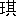
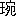
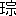
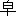

蜀の大軍は、
 陽
陽（
陝西省・
県、
漢中の西）まで進んで出た。ここまで来た時、
「
魏は関西の精兵を以て、長安（陝西省・西安）に布陣し、大本営をそこにおいた」
という情報が的確になった。
いわゆる天下の嶮、
蜀の
桟道をこえて、ここまで出てくるだけでも、軍馬は一応疲れる。孔明は、
陽に着くと、
「ここには、亡き
馬超の
墳がある。いまわが蜀軍の
北伐に遭うて、地下白骨の自己を嘆じ、なつかしくも思っているだろう。祭を
営んでやるがよい」
と、
馬岱を祭主に命じ、あわせてその期間に、兵馬を休ませていた。
一日、
魏延が説いた。
「丞相。それがしに、五千騎おかし下さい。こんなことをしている間に、長安を
潰滅してみせます」
「策に依ってはだが……？」
「ここと長安の間は、長駆すれば十日で達する距離です。もしお許しあれば、
秦嶺を
越え、
子午谷を渡り、虚を衝いて、敵を混乱に陥れ、彼の糧食を焼き払いましょう。――丞相は
斜谷から進まれ、
咸陽へ伸びて出られたら、魏の
夏侯楙などは、一
鼓して破り得るものと信じますが」
「いかんなあ」
孔明は取り上げない。雑談のように軽く聞き流して、
「もし敵に智のある者がいれば、兵をまわして、山際の
切所を
断つにきまっている。そのときご辺の五千の兵は、一人も生きては帰れないだろう」
「でも、本道を進めば、魏の大軍に対して、どれほど多くの損害を出すか知れますまい」
孔明はうなずいた。その通りであると
肯定しているものの如くである。そして彼は彼の考えどおり軍を進ませた。
隴右の大路へ出でて正攻法を取ったものである。
これは、魏の予想に反した。孔明はよく智略を用いるという先入観から、さだめし奇道を取ってくるだろうと信じて、ほかの間道へも兵力を分け、大いに備えていたところが、意外にも蜀軍は堂々と直進して来た。
「まず、
西
の兵に、一当て当てさせてみよう」
夏侯楙は、
韓徳を呼んだ。これはこんど魏軍が長安を本営としてから、西涼の
兵八万騎をひきいて、なにか
一手勲せんと、参加した
外郭軍の大将だった。
「
鳳鳴山まで出で、蜀の先鋒を防げ。この一戦は、魏蜀の第一会戦だから、以後の士気にもかかわるぞ。充分、功名を立てるがいい」
夏侯楙に励まされて韓徳は勇んで立った。
彼に四人の子がある。
韓瑛、
韓瑤、
韓瓊、
韓、みな弓馬に達し、力
衆に超えていた。
「八万の強兵、四人の偉児。もって、蜀軍にひと泡吹かすに足るだろう」
自負満々、彼は戦場へ臨んだが、なんぞ知らん、これは夏侯楙が、なるべく魏直系の兵を
傷めずに、蜀の先鋒へまず当てさせた試しに乗ったものとはさとらなかった。
望みどおり蜀軍の先鋒と、鳳鳴山の下で出会ったが、その第一会戦に、韓徳は四人の子を
亡ってしまった。
そのあいては、蜀の老将
趙雲であった。
長男の韓瑛が、
「趙雲を見た」
と、軍の中で告げたので、四子を伴ってその首をと、追撃してまわるうち、やがて趙雲のほうから駒をかえしてきて、
「
豎子。望むのは、これか」
と、一槍の下に韓瑛を突き殺した。
韓瓊、
韓瑤、
韓が三方から、
「老いぼれ」
と、挟撃したが、またたく間に、韓瓊、韓も討たれ、
趙雲は悠々引揚げて行った。
ひとり残った韓瑤は、急に追いかけて、そのうしろから斬りつけたが、趙雲は身をそばめて、韓瑤を馬の鞍へひき寄せ、
「ああ、殺すも飽いた」
と、こんどは、引っつかんだまま、生捕って帰ってしまった。
父韓徳は、心も
萎え、大敗して、長安へ逃げくずれた。
 芝
芝は、きょうの勝ち戦を賀したのち、趙雲に云った。
「お
齢もすでに七
旬を越されているのに、きょうの戦場で三人の若い大将を討ち、一人の大将を
生擒ってこられるなど、まったく壮者も及ばぬお働き、実に驚き入りました。……これでは成都を立つ前に、丞相が留守へ廻そうとしたのに対して、ご不満をのべられたのも無理ではありませんな」
趙雲は快然と笑った。
「いや、その意地もあるので、きょうは少し働いた。しかしこんな程度を功として安んじる趙雲ではない。まだまだ腕に年は
老らないつもりだ」
芝は、つぶさに戦況を書いて、まず序戦の吉報を、後陣の孔明へ急送しておいた。
それに反して、魏の士気はそそけ立った。わけて都督
夏侯楙は、
「韓徳が一敗地にやぶれたのを見ても、これはやや敵を軽んじ過ぎた。大挙して、彼の先鋒を打ち
挫かぬ分には、蜀の軍を勝ち誇らせるおそれがある」
と、自身、長安の営府を離れ、大軍を擁して、
鳳鳴山へ迫った。
彼は美しき白馬にまたがり、
燦爛たる
黄金の
をいただき、まことに魏帝の
従兄弟たる貴公子的な風采をもって、日々旗の下から戦場を見ていたが、常に、敵方の老将趙雲が、颯爽と往来するのを見て、
「よし、あしたは予が出て、あの老いぼれを討ちとめてみせる」と大言した。
うしろにいた韓徳が、
「飛んでもないことです。あれはそれがしの子を四人も討った老子龍です。常山の趙雲です。何で、お手におえましょう」
「そちの子を四人も討たれたというか。ではなぜ親のお前は見ているのだ」
韓徳は、さしうつ向いて、
「機会をうかがっているのですが」
ひどく
辱いった容子をした。
翌日の戦場で、韓徳は大きな
斧をひっさげて駈け巡っていた。そして、
趙雲と行き合うやいなや、名乗りかけて、一戦を挑んだが、十合とも戦わぬまに、趙雲の槍さきにかけられてしまった。
副将
芝も、趙雲に負けない働きをした。わずか四日間の合戦で、
夏侯楙の軍容は、半身不随になりかけてきた。夏侯楙は
頽勢を
革めるために、総軍を二十里ほど後退させた。
「いや、実に強いものだな」
夏侯楙は軍議の席で、まるで
他人事みたいに趙雲の武勇を
賞めた。魏帝の
金枝玉葉だけあって、大まかというのか、なんというのか、諸将は彼の顔をながめ合っていた。
「いや、ほんとに強い。むかし
当陽の
長坂橋で、天下に鳴らした豪勇は、とくに予も聞いていたが、いくら英雄でも、年すでに七旬の白髪だ。あんなではあるまいと思っていたが、韓徳の
大斧も彼に遭っては用をなさなかったところなど見ると、げに
怖るべき老武者だ。蜀の先鋒を砕くには、まず彼を
仕止める計からさきに立てなければなるまい」
熟議は、それを中心とした。
計策ととのって、魏軍はふたたび前進を示した。それを迎えて、
「
乳臭児夏侯楙を一つかみに」と、趙雲は一陣に駈け向おうとした。
芝は、
諫めて、
「すこし変ですぞ」と、止めたが、趙雲は、
猪突してしまった。
向うところ敵なき快勝は獲たが、さて顧みると、退路は断たれていたのである。すなわち、この日魏軍は、
神威将軍
董禧、
征西将軍
薛則の二手に、おのおの二万騎を付して、ふかく潜んでいたのだった。
味方の
芝とも別れ、部下とも散り散りになり、趙雲は日の暮るるまで、敵に
趁われ、矢風に追われ、なお包囲から脱することができなかった。
高き丘に、夏侯楙の旗手が立っていて、彼が西へ奔れば西へ旗を指し、南へ駈ければ南へ旗を指していたのである。
「ああわれ老いに服せず、天ついに、ここに死を下し給うか」
駒も疲れ、身も疲れ、趙雲は
仆れるように、樹下の石へ腰をおろした。
そしてさし昇る月を仰いで独り
哭いた。
たちまち、石が降ってきた。雨とばかりに。
大岩がごろごろ落ちてきた。
雪崩かとばかりに。
「敵か」と、趙雲は、息つく間もなく、ふたたび疲れた馬に
鞭うって
奔った。
すると月明の
野面を黒々と一
彪の軍馬が
殺奔してくる。白き
戦袍に
白銀の
甲は、趙雲にも覚えのある大将である。彼はわれをわすれて、こなたから手を振った。
「おおいッ。
張苞ではないか」
「やあ、老将軍ですか」
「いかにしてこれへは？」
「丞相のご
命です。過日、
芝から勝ち
軍のご報告があるや否や、危うしとばかり、すぐ吾々に救急の命を発しられましたので」
「ああ、
神察。して、貴公が左の手に持つその
首級は」
「これへ来る途中、撃破して打ち取った魏の大将
薛則の首です」
月光へさしあげて、
莞爾とそれを示している所へ、さらに、反対の方角から、一軍隊が疾風のように馳せてきた。
「や、魏軍か」
「いや、いや
関興でしょう」
待っていると、果して関興のひきいる一軍だった。父
関羽の
遺物の青龍刀を横ざまに抱え、鞍には、彼もまた、一首級をくくりつけていた。
「老将軍を
援けんため、これへくる途中、前を
阻めた魏兵を蹴ちらし、その大将
董禧という者の首をもらってきました」
「やあ貴様もか」
「ご辺もか」
ふたりは、二つの首を見せ合って、月下に
呵々と大笑した。
趙雲は、涙をたたえて、
「頼もし頼もし。この老骨の一命など、さしたる事ではない。董禧、薛則の二将が討たれたりと聞えれば、敵勢の陣はまさに
潰滅状態であろう。その虚をのがすべきでない。われにかまわずご辺らは、崩るる魏軍を追って、さらに、
夏侯楙の首をも挙げ給え」と、励ました。
「さらば」
「ご免」
と、ふたりは、手勢をひきつれて、まっしぐらに駈け去った。
趙雲は、あとを見送っていたが、
「ああ大きくなったなあ。張飛も関羽も地下で満足しているだろう。思えば、あの二人はわしに取っても
甥のようなものだ。時代は移ってきた。国家の
上将たり朝廷の重臣たる自分も、老いてはやはりあの若者たちにもかなわない。
辱ずべきだ。よい死場所こそ欲しいものよ」
彼もまた、やがて鞭うって後に続き、なおその老躯を、追撃戦の中に働かせていた。
副将
芝も、
何処からか現われてきて、それに加わり、一時散り散りになった蜀兵も、この好転に、ここかしこから
谺をあげて集合してきた。
夜明けから翌日にかけても、魏軍は止まることを知らず敗走しつづけた。
夏侯楙はひと支えもできなかった。父
夏侯淵とは余りにも似ない貴族らしさを多分に持った彼とその幕下は、逃げ崩れてゆく姿まで
絢爛だった。そして南安郡（
甘粛省・
蘭州の東）の城中へ入り、これへ諸方の大軍を吸って堅固を
恃んだ。南安は著名な堅城である。日ならずして、続々これへ寄せてきた
趙雲、
関興、
芝、
張苞などは、四方を囲んで力攻したが、昼夜十数日の
喊声も、そこの石垣の石一つ
揺がすことはできなかった。
孔明は、後、ようやくこれへ着陣した。
その軍勢も多くなかった。
これへ臨む前に、
陽にも、
陽平にも、石城方面へも、軍をわけて、自身はその中軍だけを率いてきたからである。
「自分が来てよかった。もし皆に
委せておいたら、魏はかならず別に行動を起して、一面に漢中を
衝き、一面寄手のうしろを取るだろう。あやうくご辺らの軍と中軍とは、両断されるところであった」
芝は告げた。
「そうでしょう。なにしろ
夏侯楙は魏の
 馬
馬ですからね。それだけに彼一名を
生擒れば、
爾余の大将を百人二百人
縛め
捕るにも
勝ります。よい計はないものでしょうか」
「こよいは
寝んで、明日、地の利を見てみよう」
孔明は落着いていた。
南安は、西は天水郡に
連なり、北は安定郡に通じている
嶮峻にあった。
孔明はそのあくる日、仔細に地理を見て歩き、後、関興と張苞を
帷幕に招いて、何事か計を授けていた。
また、物馴れた人物を選んで、
偽使者に仕立て、これにも何やら言いふくめた。準備期間が終ると、南安城への攻撃を開始した。そしてもっぱら、流言を放って、
「柴を積み、硝薬を用いて、火攻めにして
陥さん」
と、敵へも聞えるようにいわせた。
夏侯楙は大いに
嘲笑って、
「孔明孔明というが、ほどの知れたものよ」と
怕れるふうもなかった。
南安の北に位置する隣郡、安定城のほうには、魏の
崔諒が籠っていた。崔諒は前からこの地方の太守として臨んでいた者であるが、一日、城門へ立った一使者が、
「それがしは夏侯楙
馬の一将にて、
裴緒と申す者であるが、火急の事あって、お使いに参ったり、早々太守に告げ給え」と、呼ばわった。
崔諒がすぐ会って、
「何事のお使いか」
と、訊くと、使者の裴緒は、
「南安すでに危うく、事急です。依ってそれがしを使いとし、天水、安定の二郡へ対し、かく救いを求めらるる次第です。急遽、郡内の兵を挙げて、孔明のうしろを襲撃されたい。――そして貴軍が
後詰下さる日を期し、城中からも合図の火の手をあげ、内外より蜀軍を撃ち
挟まんとの手筈ですから、何とぞ、お抜かりなくねがいたい」
「分りました。――が、
夏侯馬の親書でもご持参なされたか」
「もとよりのこと」と、
裴緒は、汗みずくな肌着の下から、しとどに濡れた
檄文を出して手交し、
「これから天水郡の太守へも、同様な催促に参らなければなりませんから」
と、
饗応も謝して、すぐ馬に鞭うって立ち去った。
偽使者とは夢にも気づかず、
崔諒は兵を集めて
赴援の準備をしていると、二日の後、またまた、一使者が来て城門へ告げた。
「天水郡の太守
馬遵は、瞬時に発して、はや蜀軍のうしろに後詰しておるのに、安定城はなにを猶予しておらるるぞ。――夏侯
馬のご命令を軽んじておらるるか」
馬は魏の帝族である。崔諒はふるえ上がって発向にあわてた。ところが城を出て七十里、夜に迫ると、前方に火炎が天を
焦している。
「何事か」
と、斥候隊を放つと、その斥候隊の生死も知れず、ただ一陣、蜀の関興軍が猛進してきた。
「早くも、敵か」
と、おどろいて退くと、後からは
張苞の軍隊が
鬨をあげてきた。崔諒の全軍は
支離滅裂になり、彼はわずかの部下とともに、
小路を
迂回して、安定の城へ引っ返した。
「やあ？ あの旗は」
仰げば、蜀の
旌旗ばかりではないか。城頭には蜀の大将
魏延が、射よ射よと声をからして、
乱箭を励ましている姿も見える。
「しまった」
いまは敵の深い
謀とさとって、彼は身を以て
遁るるほかなく、天水郡へ向って落ちてゆくと、一
彪の兵馬が
鼓と共に道に
展き、たちまち見る一
叢の森林からは、
鶴 綸巾
綸巾の人孔明、四輪車のうえに端坐して前へ進んできた。
崔諒は眼がくらんだ。落馬したように跳びおりてそのまま地に平伏してしまったのである。孔明は
降を容れ、伴って陣地へ帰った。
幾日かの後、孔明は彼をよんで、
慇懃にたずねた。
「南安には今、
夏侯楙がはいって総大将となっているが、前からの太守とご辺とは、どんな交わりをなしていたか」
「隣郡でもあり甚だ親密です」
「その人は」
「
楊阜の族弟で、
楊陵といい、私とも兄弟のようにしていました」
「ご辺は彼に信用があるか」
「もちろん彼は信じていてくれると思いますが」
「では……」と、孔明は膝を寄せて、親しく説いた。
「城中に入って、
楊陵によく利害を説き、
夏侯楙を
生擒って
降り給え。それは貴公のみならず親友の為でもあろう」
崔諒は首を垂れた。沈痛な面色でやや久しく考えこんでいたが、やがて決然と、
「参りましょう。高命を果してお目にかけます」
「難事だが、事成れば、ひとり御身だけの
洪福ではない」
「その代りに丞相。――ここの囲みを解いて下さい」
「よろしい」
孔明は、直ちに、全軍を二十里外へ退けた。
秘命を帯びて崔諒は城へ入った。そして南安の太守楊陵と会談した。ふたりは親友である。ありのままを、崔諒は友に告げた。
「ばかをいうな。今さら魏の恩に
反いて、蜀に降服などできるものか。むしろ君がそういう秘命をうけてきたのを幸いに、
謀の裏を掻いて、孔明に
逆手を喰わせてやろうじゃないか」
もとより崔諒もその気なのだ。ふたりは揃って夏侯楙の前に行った。
夏侯楙はよろこんで、面白し面白し、どういう逆計で一泡ふかせるかと乗り気になった。
楊陵がいう。
「ご苦労でも崔諒にもういちど孔明の陣中へ帰って貰うことですな。こういうのです。――楊陵に会って降参をすすめたところ、楊陵も蜀に
降りたい気は大いにあるが、いかんせん城中では打ち明けて共に事をなす部下の勇士も少いので、警固のきびしい夏侯楙
馬を
生擒ることができないと」
「ふむ、なるほど。そして」
「――で、もし一挙に
成就を見んと思し召すなら、孔明自身、兵を引いて城中へ入り給え。内より門を開いて迎え、同時に城中を
攪乱して、
騒擾のうちに
馬をうかがわば、手捕りになること物をつかむ如しとすすめるのです。――もちろん彼を
誘き入れてしまいさえすれば、煮て喰おうと、焼いて喰おうと、孔明の運命はもうわが
掌にありですから」
「妙々。天来の計だ」
しめし合わせて、崔諒は城を出た。そして孔明をこの手に乗せようと大いに努めた。
孔明はいかにも信じきったように、彼のいうことばへいちいち
頷いていたが、
「――では先に、ご辺と共に蜀軍へ来た百余名の降人がおるから、あれを連れて行ったらいいだろう。あれなら元からご辺の部下だから、ご辺のためには手足となって、命を惜しまず働くにちがいない」
「結構です。が、丞相も屈強な一隊を連れて、共に城中へまぎれ入られてはいかがですか。一挙に大事を決するには」
「虎穴に入らずんば虎児を
獲ず。もちろん孔明たりともそれくらいな勇気はないではないが、まず、わが軍の大将、
関興、
張苞ふたりを先にご辺の隊へ加えてやろう。その後、合図をなせば、直ちに孔明も城門へ駈け入るとするから」
関興、張苞を連れてゆくのは少し工合が悪いがと、
崔諒はためらったが、それを
忌避すれば疑われるにちがいない。
如かず、まず二人を城中で殺してから、次に孔明を
誘き入れ、予定の目的を遂げるとしよう。――崔諒はそう肚を決めて、
「承知しました。では、城門から合図のあり次第に、丞相もかならず時を移さず、開かれてある門から突入して下さい」と、かたく念を押した。
日暮れをはかって、一隊は南安の城下に立った。かねての約束どおり楊陵は
櫓に現われて、
何処の勢ぞ、と呶鳴った。崔諒も声に応じて、
「これは、安定より駈けつけてきた味方の
勢にて候。仔細は矢文にて」と、用意の一矢を射込んだ。
楊陵がそれを解いて見ると、
（――孔明は用心深く、関興、張苞の二将を目付として、この隊の中につけてよこした。しかし、城中で二人を殺してしまうのは何でもない。かねての密計はその後で行えるゆえ、懸念なく、城門を開き給え）と、したためてある。
夏侯楙に見せると、夏侯楙は手を打って、
「孔明すでにわが逆計に
墜ちたり、すぐ二人を殺す用意をしておけ」
と、屈強の兵数百人に剣槍をしのばせて、
油幕の陰に伏せておき、その上で崔諒、ならびに関興、張苞のふたりを待った。
「いざ。お通りあれ」
楊陵は中門まで出迎えた。すぐその先に本丸の堂閣があり、前の広庭に、戦時の油幕が設けてある。
「ご免」
関興が先に入った。次に、張苞を通そうと思って、崔諒が体を避けると、
「さあ、お先に」と、張苞も
如才なく身をかわして、彼の背を前へ押し出した。そして抜打ちに、
「崔諒っ。汝の役目は終った」と、叫んでとっさに斬り伏せた。
――と共に関興も先に立ってゆく楊陵へ飛びかかって、不意に背から剣を突き通した。そして大音に、
「関羽の子、関興を
易々入れたるこそ、この城の運のつきだ。者ども、犬死すな」
と、呼ばわりつつ、縦横に血戦を
展き、
膂力のつづく限り暴れ廻った。
崔諒が安心して連れて入った百余名の旧部下も、蜀陣に
囚われているうち、深く孔明の徳になずみ、加うるにこれへ臨む前に恩賞を約されていたので、この騒動が
勃発するや否や、いいつけられてきた通り、八方へ駈け分けて、混乱に乗じて火を放った。
また、火の手を見ると、これを関興、張苞の殺害が終った合図と早合点して、城門の兵は、内から門を開き、すぐそこまで来て待機していた孔明の蜀軍をわざわざ招き入れてしまった。
全城の魏兵が
殲滅に遭ったことはいうまでもない。
夏侯楙も防ぐに手だてなく、
扈従一隊を引き連れたのみで、からくも南の門から逃げ落ちた。
――が、
退き口ありと思われた南門の一道こそ、かえって先のふさがっている
坑だったのである。行く間もあらせず、蜀の一軍が、鼓声
戟震して道をはばみ、
「孔明の
麾下、
牙門将軍王平、待つこと久し」と呼ばわって
掩い包んだ。――
腹心旗本、ことごとく討ち滅ぼされ、夏侯楙
馬は手捕りになった。孔明は南安へ入城した。
法を出して民を安んじ、夏侯楙は
檻車のうちに
虜囚としておき、また諸大将を一閣に寄せて、その戦功を彰した。
宴となって、祝酒を分つと、その席上で
芝が質問した。
「丞相には、どうして最初に、崔諒の
詐りを看やぶられたのですか」
「心を以て心を読む。さして難しい理由はない。直観して、この男、真に降伏したものではないと
覚ったので、それ幸いにすぐ計に用いたまでのことに過ぎない」
「われわれも崔諒の挙動を少し怪しいなと見ていたので、丞相が彼に命じて、彼の好む南安の城へやったときは、どうなることかと陰で心配していましたが、結果が分ってくると、さてはと皆思い当ったような次第でした」
「総じて、敵がわれを
謀らんとするときは、わが計略は行いやすい、十中八、九はかならずかかるものだ。崔諒に嘘が見えたので、わざと彼を城中へやってみた。するとまた帰ってきたので、いよいよその
詐りが城中で結ばれたことを知った。さらに、関興、張苞の同行を拒み得ず、渋々連れて行ったのも、彼が嘘を構えていた証拠だし、こちらからいえば、彼の言を信じ切ったように思わせて、かえって、彼の嘘を完全に利用するの謀計が、そう深く
企まずに行い得た結果になったというものだ」
そう打ち明けてから、孔明はまた、自己の戦を評して、
「――ただ、こんどの計で、一つ功を欠いたものがある。それは天水城の太守
馬遵だ。彼にも同じような計を施してあるが、何としてか、城を出てこなかった。直ちに向って、天水もあわせ
陥し、三郡の攻略を完璧にしなければならない」と、いった。
南安には
呉懿をとどめ、安定の守りに
劉
を派して、魏延と交代させ、全軍の装備を新たにして、天水郡へ進発した。
それよりも前に、天水郡の太守
馬遵は、宿将重臣を集めて、隣郡の救援について、議するところがあった。
主記の
梁虔がその時云った。
「
夏侯馬は、魏の金枝玉葉。すぐ隣にありながら、南安の危急を救わなかったとあれば、後に必ず罪に問われましょう。即刻兵を調えて、然るべき援護の策を取るべきでしょう」
ところへ魏軍の
裴緒という者が、
夏侯楙の使いと称してきた。いうまでもなく、この男は、さきに安定の城主
崔諒の所へも訪れていた例の偽使者である。――が、馬遵はそれと知る由もなく、折も折なので早速対面した。
裴緒は、汗に濡れた書簡を出して、ここでも、
「早々、
後詰して、孔明の軍を衝き給え」
と、安定城へ催促したのと同じ言葉で申し入れた。
書簡をひらいてみると、これも同文である。だが、夏侯楙の親書にまぎれもなく思われたので、馬遵は拝承して、
「まず、客屋に入って休み給え」
と、使者をねぎらい、重臣に
諮っていると、裴緒は翌朝ふたたび城へ来て、
「事急を要する非常の場合に、悠々ご評議で日を送っているようでは
心許ない。ありのままを、夏侯楙
馬へご報告申しておくゆえ、後詰あるもなきも、随意になさるがよい。それがしは先を急ぎますから、
今朝お暇を申す」と半ば、威嚇的に告げて、立ち去ろうとした。
馬遵もあわて、重臣も驚いた。後の
祟りを怖れるからである。で、直ちに兵を引いて急援に赴くことを裴緒に約して、
「どうか、夏侯
馬へは、
御前態よろしくお願い申しあげる」
と、その場で、誓書をしたためて、彼の手に託した。裴緒は、尊大に構えて、
「よろしい。ではそのようにお伝えしておくが、安定郡の崔諒は、すでに兵を出している時分。おくるることなく、直ちに、全軍の兵を発して、孔明のうしろを
脅かされよ」
と、念を押して帰った。
廻文はその日に発せられた。天水郡の各地から、続々将兵が集まってくる。二日の後、勢揃いして、馬遵自身も、いよいよ城を出ようとした。
すると、その朝、城中の武将閣に着いていた郷土の諸大将の中から、ただ一人、その姿、
胡蝶の可憐な美しさにも似たる若い一将が、ばらばらと駈け出してきて、
「ご出陣無用、ご出陣無用」と、
馬遵の駒を抑えて、懸命に遮った。
人々は、驚きさわいで、
「や、や。
姜維が発狂したか」と見ていると、その若武者は、さらに、声を励まして、
「この城を出たがさいご、太守はふたたびこの城へお帰りになることができません。太守はすでに、孔明の
計に
陥されておいでになる」と、身を挺して、
諫めつづけている。
年はまだ二十にも満たぬ紅顔の若武者である。その何者なるか、いかなる素姓の者かを知らぬ人々は、
「何者です？ あれは」と傍らの者に聞いていた。
同郷の者は、それへ語るに、
「彼はこの天水郡
冀城の人で、
姜維、
字は
伯約という
有為な若者です。父の
姜冏はたしか
夷狄の戦で討死したかと思います。ひとりの母に仕えて、実に孝心の篤い子で、郷土の評判者でした。――また姜維の母もえらい婦人で、寒燈の夜おそく、物縫うかたわらにも、つねに
孤の姜維をそばにおいて、針の運びのあいだに、子の群書を読むを聞き、古今の史を教え、また昼は昼で耕しつつ武芸を励まし、兵馬を学ばせていたということです。――子の姜維も天才というのでしょうか、年十五、六のときにはもう郷党の学者でも古老でも、彼の才識には、舌を巻いて、
冀城の
麒麟児だといっていたほどですよ」
そんな噂なども交わされながら、人々が
騒めき見ているうちに、彼方の太守馬遵はついに出陣を見合わせたものか、駒をおりて、
数多の大将や一族の中に、姜維をも連れて、城閣の中へ戻ってしまった。
姜維は
裴緒に会ってもいないのであるが、裴緒の
偽の使者であることは、天水の城へくると、すぐ看破していたのであった。
「およそ戦局を大観して、その首脳部の指揮者を察し、兵の動かし方を見ていれば、田舎にいても、それくらいなことは分ります。――思うに孔明の計らんとするところは、太守を天水の城から誘い出して、途中に兵を伏せて撃滅を加え、一方、奇兵をこの城の留守へまわして、虚を襲い、内外同時に
覆滅して、この一郡を占領しようというつもりでしょう。
真に見えすいた計略です」
彼は、馬遵とその一族へ向って、
掌を指すように、敵の偽計を説いて教えた。馬遵は、げにもと悟って、
「もし姜維が、出陣を止めてくれなかったら、わしは目をふさがれて、敵の
陥し
穽へ歩いて行ってしまうところだった」と、今さらの如く戦慄して、彼の忠言に、満腔の謝意を表した。
年こそ若いが、
姜維に対する
馬遵の信頼は、そのことによって、古参の宿将も変らない扱いを示して、
「きょうの危難はのがれたが、
明日からの難には、いかに処したらいいであろう」
かまでを、姜維に問うようになった。
姜維は、城の
背後を指さして、
「目には見えませんが、あの
搦手の裏山には、もう、蜀軍がいっぱいに潜んでいましょう。――太守の軍が城を出たらその留守を狙う用意をして」
「え？ 伏兵がおるか」
「ご心配に及びません。――彼ノ計ヲ用イテ
計ルハ彼ノ力ヲ以テ彼ヲ
亡ボス也――です。願わくは太守には、何もご存じない
態で、ふたたびご出陣と触れ、城外五十里ほど進み、すぐまた、急にお城へ取って返して下さい。――そして私は別に五千騎を擁して、要害に
埋伏し、
搦手の山にある敵の伏兵が、虚に乗ってきたところを
捕捉殲滅します。――もしその中に孔明でもいてくれれば、こちらの思うつぼです。かならず生捕りにせずにはおきません」
姜維の言は壮気
凛々だった。さはいえまだ紅顔の美少年といってもいい若武者、いかにその天質が人よりすぐれて武技兵法に通達する者にせよ、一城一郡の興廃を、かかる弱冠の者の一言に託すのは無謀であるという意見も、一族や侍臣のうちにないこともなかったが、馬遵はふかく姜維に感じていたので、
「もし姜維の観察がまちがっていたところで、それが間違いなら何も味方にも損失はないことだ。ともあれ彼の献策を用いてみよう」と、ふたたび触れ出して、その日の
午過ぎから出陣を開始し、南安城の
後詰に行くと
称えて、城外約三、四十里まで進んだ。一方、孔明の命をうけて、天水山のうしろの山に旗を伏せていた
趙雲の五千の兵は、馬遵が出陣した直後、
「城中は手薄、空家も同じなるぞ。そこを踏み破って、一気に城頭へ蜀旗をひるがえせ」
と、搦手の門へかかった。
すると、門の内で、全城を揺るがすばかりどっと笑う声がした。
「やや。城中にはまだだいぶ兵力が残っているぞ。留守と侮って不覚すな」
趙雲が励ましていると、もう続いてくる味方はない岩の山上から、
鬨の声が起り、あわやと、振り返っている間に、土砂、乱岩、
伐木などが、
雪崩の如く落ちてきた。
「敵だ？」と、備えを改めるいとまもない。またたちまち一方の沢からも、
鉦鼓を鳴らして、一軍が奇襲してきた。さしもの趙雲も狼狽して、
「西の谷あいは広い。西の沢へ移れ」
と号令したが、同時に城中から射出した雨の如き
乱箭も加わって、早くも
廃れる部下は数知れない。
「老朽の蜀将、逃げ給うな。天水の
姜維これにあり」
呼ばわりつつ追いかけて来る一騎の若武者があるので、趙雲が駒を止めてみると、まさに、
花羞かしきばかりの美丈夫。
「討つも
憐れだが、望みとあれば――」と、趙雲はほとんど一撃にと思ってこれを迎えたらしいが、この若者の槍法たるや、世の常の
槍技ではない。烈々火華を交えること四十余合、さすがに古豪趙子龍も
敵わじと思ったか、ふいに後ろを見せて逃げてしまった。
詐って城を出た馬遵は、城外三十里ほども来ると、後ろに
狼烟を見たので、すぐ全軍を引っ返してきた。
すでに姜維の奇略に落ちて、さんざんに駈け散らされた趙雲の蜀兵は、平路を求めて
潰走してくると、ここにまた、馬遵の旋回して来るあって、
腹背に敵をうけ、
完膚なきまでに惨敗を喫した。ただここに蜀の遊軍
高翔と張翼とが、救援に来てくれたため、
辛くも血路をひらき得て、趙雲はようやく敗軍を収めることができた。
「見事、失敗しました。負けるのもこれくらい見事に負けると、むしろ快然たるものがあります」
孔明の顔を見るや否や、この老将は、
衒気でも負け惜しみでもなく、正直にそう云った。
孔明は大いに驚いて、
「いかなる者がわが計略の玄機を知ったろうか」
と、意外な容子を示し、敵の姜維という若年の一将であると聞くと、なおさらに、
「姜維とはいったい何者か」と息をひそめて訊いた。
彼と同郷の者があって、即座に素姓をつまびらかにした。
「姜維は、母に仕えて至孝。智勇人にすぐれ、学を好み、武を練り、しかも
驕慢でなく、よく郷党に重んぜられ、また老人を
敬い、まことに優しい少年です」
「少年？ まさか童子ではあるまい。幾歳になるか」
「多分、
二十歳を出てはいないはずです」
趙雲もそれを裏書して、
「さよう。二十歳をこえてはおるまい。身なりも小さく、
胡蝶の如き
華武者じゃった。それがしは年七十にも相成るが、まだ、今日まで、姜維のような槍の法を見たのは初めてである」
といった。
孔明は、舌を巻いて、
「天水一郡は、
掌にあると思っていたが、
測らざりき。そのような英雄児が、この片田舎にもあろうとは」
と、痛嘆して、自身、軍容をあらためて、他日、慎重に城へ迫った。
「およそ城攻めには、初めてかかる日をもっとも肝要とする。一日攻めて落ちず、二日攻めて落ちず、七日十日と日数を経れば経るほど落ち難くなるものだ。彼は信を増し、寄手は士気を減じ、その疲労の差も加わってくるからである。――これしきの小城、
兵どもの励みに乗せて、一気に踏みやぶれ」
先手、中軍、各部の部将にたいして、孔明はかく訓示して押し寄せた。
壕をわたり、城壁にとりつき、先手の突撃はさかんなるものだった。けれど城中は
寂として抗戦に出ない。すでに一手の蜀軍は城壁高き所の一塁を占領したかにすら見えた。
すると、轟音一声、たちまち四方の
櫓から
矢石は雨のごとく寄手の上に降ってきた。なお壕の附近にある兵の上には、大木大石が地ひびきして降ってきた。
昼の間だけでも、蜀軍はおびただしい死傷者を壁下に積んだ。さらに、夜半の頃に及ぶや、四方の森林や民家は炎々たる焔と化し、
鬨の声、鼓の音は、横にも後にも、城中に湧きあがり、四面まったく敵の火の
環と
鉦鼓のとどろきになったかの思いがある。
「心憎き
軍立てではある。遺憾ながらわが兵は疲れ、彼の士気はいよいよ
昂い。――
如かず、明日を期せん」
ついに孔明も総退却を令せざるを得なかった。彼自身も急に車を後ろへかえした。
ときすでに遅し矣。
火蛇の如き焔の陣は、行く先々を
遮った。それはことごとく敵の伏兵だった。今にして思えば、敵の大部分は城中になく、城外にいたのである。
退くとなるや、蜀勢はいちどに乱れ、一律の連脈ある敵の包囲下に、随所に捕捉され、
殲滅にあい、討たるる者、数知れなかった。
孔明自身の四輪車すら、煙に巻かれ、炎に迷い、あやうく敵中につつまれ
絡るところを、関興、張苞に救われて、ようやく死中に一路を得たほどであった。
しかし、天まだ明けず、その行く先には、またまた、一面の火が長蛇の如く彼方の闇に横たわっていた。
「何者の陣か、見て来い」
と、孔明に命ぜられて、先へ駈けて行った関興は、やがて立ち帰ってくると、
「あれこそ、
姜維の
勢です」と、告げた。
遠くその火光の布陣を望んでいた孔明は、
嗟嘆してやまなかった。
「さてこそ、
凡の
軍立てとは異なると思うていた。――おびただしき大軍のように見えるが、事実はさしたる兵数ではあるまい。ただ大将の軍配一つによってあのようにも見えるものだ」
左右へ語っているうちに、早くも火光は
環を詰めて近づき、後ろからも、ばらばらと
箭が飛んできた。
「戦うな。わが備えはすでに破れた。ただ兵の損傷を極力少なくとどめて退却せよ」
孔明もひたすら逃げて、ようやく敵の包囲から脱した。
遠く陣を退いて、さて、味方の損害を
糺してみると、予想外な
傷手を
蒙っていたことが分った。
戦えば必ず勝つ孔明も、ここに初めて、敗戦を知った。一方的勝利のみを
克ち
獲ていたのでは、真の戦争観もそれに
奮う力も生じてこない。
孔明は、われ自身を
侮蔑するが如く、唇をかんで呟いた。
「――思うに、一人の
姜維にすら勝つことができない人間に、何で魏を破ることができようぞ」――と。
深思一番。彼はにわかに、安定郡の人をよんで、
「姜維は非常に親孝行であると聞いたが、その母はいま何処にいるか」
「いまも
冀城におります」
「そうか。してまた、天水郡の金銀兵糧を貯蔵してある土地は何処か」
「おそらくそれは
上※［＃「卦のへん＋おおざと」、U+90BD、36-15］の城だろうと思いますが」
後、孔明は、何か思う所あるらしく、
魏延の一軍をして冀城へ奔らせ、べつに趙雲に命じて、上※
［＃「卦のへん＋おおざと」、U+90BD、36-17］を攻めさせた。
この沙汰が天水の城中へ響いてゆくと、姜維はかなしんで、太守
馬遵に向い、
「私の母は、冀城にのこしてあります。もし敵に犯さるる時は、子たるものの道にそむきます。一面、冀城の急を救い、あわせて母の身を守りたいと思いますから、どうか私に三千騎をさずけ、しばしこの本城を離るることをおゆるし下さい」と、ひれ伏して願った。
もちろんそれは許された。急に道をいそいで行く途中、魏延の兵とぶつかったが、魏延は敢えて勝利を求めず逃げ散った。
冀城に至るや、
姜維はすぐ家の母を守って、県城へたてこもった。また一方趙雲は、上※
［＃「卦のへん＋おおざと」、U+90BD、37-8］の県城へ向ったが、ここへは天水から
梁虔が一軍をひきいて救いにきたので、これにもわざと負けて城へ通した。これらの予備作戦が、すべて孔明のさしずに依るものであることはいうまでもない。
かくて孔明は、南安に使いをやって、さきに捕えておいた魏の帝族たる
虜将夏侯楙馬をこの地へ送らせた。
「
馬、御身は、いのちを惜しむか」
孔明に問われると、もとより宮中育ちで、父
夏侯淵とは似ても似つかぬ夏侯楙は、涙をたれて、
「丞相のお慈悲をもって、もし二つとない生命をお助け下さるなら、大恩は忘れません」
と、いった。孔明はまた、
「実は、いま冀城にいる
姜維から、
儂へ書簡をよこして、
夏侯楙をゆるし給わるなら、
某も蜀に降らんと云って参った。――で、いま御身を放つわけであるが、冀城へ行って、すぐ姜維を伴ってくるか」
「お放し下さるものならよろこんで行って参ります」
孔明は彼に衣食を与え、また馬を供えて、陣地から放した。
夏侯楙は
籠の鳥が青空へ放たれたように一騎で急いだ。するとその途中で、大勢の避難民に出会った。馬をとめて、その中の一名に彼がたずねた。
「おまえ達は、どこの百姓だ」
「冀城の民でございます」
「なぜ避難するのか」
「でも、県城を守っていた姜維は、蜀に降伏してしまい、蜀の魏延の兵は、村々に火を放って、掠奪するし、乱暴はやるしで、土地にいたくもいられません」
もとより夏侯楙は蜀につく気は毛頭ない。放されたのを幸いに、魏へ逃げ帰る心だった。
「さては姜維はもう蜀へ降伏して出たか。それでは冀城へ行っても仕方がない」
彼は急に道をかえて、天水城へ向って走った。その途中でも、たくさんな避難民を路傍に見かけた。それに訊いてみても皆、異口同音に、姜維の寝返りと、蜀兵の掠奪を訴えること、初めに聞いたとおりであった。
「いよいよ姜維の変心は事実だ」
と信じて、夏侯楙は心も空に天水へ急ぎ、城下につくと、門を叩いて、
「われは
馬夏侯楙である。ここを開け」と、呼ばわった。
太守
馬遵は、驚いて彼を迎え入れ、いったいどうして無事にお帰りあったかと訊ねた。
馬は、仔細を語った。
「憎むべきは姜維だ。彼の変心は疑いもない」と、
憤った。
すると、
梁緒は、断然、
「いま姜維が敵へ降るなどということは信じられない。何かの誤聞でしょう」
と云い張ったが、夜に入ると、蜀の軍勢が四門を取り巻いて、柴を積み、火を放ち、かつ一人の将が先頭へ出て、
「城中の人々よ、よく聞け。この姜維は、
夏侯馬のお命を助けんものと、身を蜀に売って、命乞いをいたしたのだ。各

もあたら命を無益に捨てず、われらと共に蜀へ降れ」
と、声を
嗄らして叫んでいた。
馬遵と夏侯楙が、矢倉の上から望み見ると、その
甲といい馬といい年頃といい、姜維にはちがいないが、どうもいっていることは合点がゆかなかった。
「やあ、矢倉の上におわすは、夏侯
馬ではないか。御身より自分へ宛てて、蜀へ
降れ、蜀へ降ってくれれば、予の一命が助かるのだと、再三の書面があったればこそ、かくいう
姜維は身を蜀へ投じたのに、何ぞはからん、その身一つ遁れて、すでにこの城に帰っていたか。――覚えていよ。この恨みは、弓矢で返すぞ」
城下の姜維は、罵り罵り攻めていたが、やがて暁近くなると、攻めあぐねたか、兵をまとめて引揚げてしまった。
もちろんこれは、
真物の姜維ではない。年配骨格のふさわしい者を選んで孔明が仕立てた偽者であった。けれども夜中の乱軍中に壕を隔てて見たことなので、馬遵にも夏侯楙にも真偽の見分けはつかなかった。そして大きな疑いを姜維に対して強めたことだけは否まれない。
一方、本物の姜維は、依然
冀城にたてこもって、孔明の軍に囲まれていた。
ただ彼として、籠城に際して、最も大きな苦痛だったのは、事急のために、糧米を搬入するいとまがなく、冀城の内にも、わずか十日に足りない食糧しかないことだった。
ところが、城中から見ていると、毎日のように多くの車が、食糧を満載して、蜀の
輜重隊に守られて城外の北道を通ってゆく。
「この上は、あれを奇襲して」
と、ついに意を決して、兵糧を奪いに出た。――これこそ姜維が孔明の手に落ちる一歩だったのである。
王平、
魏延、張翼などの伏兵に待たれて、姜維は二度と城へ帰ることができなかった。従えて出た手勢はことごとく討ちとられ、残る数十騎も、
張苞の一陣を突破するうちほとんど死なせて、いまは彼ただ一騎となり、逃げるに道もなく、ついに天水城へ奔ってしまった。
「それがしは冀城の姜維だ。無念ながら冀城はやぶれた。ここをお開け下さい」
城門の下に立って呼ぶと、意外にも矢倉の上から
馬遵はこう罵った。
「だまれっ。汝のうしろには、遠く蜀の軍勢が見えるではないか。
欺いて、門を開かせ、蜀軍をひき入れん心であろう。――
匹夫め、裏切者め、なんの
顔容あって、これへ来たか」
姜維は、仰天して、さまざまに事情を下から訴えたが、叫べば叫ぶほど、馬遵は怒って、
「昨夜はこれへ来て、旧主へ弓をひき、今朝はこれへ来て、
口舌の毒策を試むるか。あの
曲者を射ろ」
呶号して、あたりの弓手を励ました。
「こは
抑、いかなるわけか？」
と、呆れ惑いながら、姜維は眼に涙をたたえ、ぜひなく
乱箭を避けて、長安のほうへ落ちのびて行った。
兵なく、城なく、今は巣のない鳥にも似ている
姜維だった。ただ一人、長安をさして
奔ること数十里、行くての先に、たちまち数千の軍馬を布いて、道を
阻めるものがあった。蜀の大将、
関興の軍勢である。
「ややや。もうこの方面へも敵が迫ったか」
身体は疲れ果て、心は
悲愁。しかもただ一騎でもあるし、戦う
術もなく、馬を
回してべつな道へ急ぐと、またまた、一林の茂りをひらいて、
「来れるや姜維。
何処へ行こうとするか」
口々に云い
囃し、鼓声をそろえて、彼をつつんだ。
見れば、旗列を割って、一輛の四輪車が此方へ進んでくる。車上の
綸巾鶴の人も、
羽扇をあげて、しきりに呼びかけた。
「姜維姜維。なぜこころよく降参してしまわぬか。死は
易し、生は
難し、ここまで誠を尽せば、汝の武門には
辱はあるまい」
驚くべし、孔明のうしろには、いつのまにか、冀城にのこしていた彼の母が、
輿に載せられて、大勢の大将に守られている。
うしろには、関興の一軍の迫るあり、前にはこの大軍であった。かつは、敵にとらわれた母の姿を見、姜維は胸ふさがって、馬を跳びおりるや否や大地にひれ伏し、すべて天意にまかせた。
すると孔明は、すぐ車をおりて、姜維の手をとり、姜維の母の側へつれて来た。そして
母子を前にして彼は云った。
「自分が隆中の
草廬を出てからというもの、久しい間、つねに天下の賢才を心のうちでさがしていた。それはいささか悟り得た我が兵法のすべてを、誰かに伝えておきたいと思う
希いの上からであった。――しかるにいま御身に会い、孔明の日頃の願いが足りたような気がされる。以後、わが側にいて、蜀にその忠勇を捧げないか。さすれば孔明もまた報ゆるに、自分の
蘊蓄を傾けて、御身に授け与えるであろう」
母子は恩に感じて泣きぬれた。すなわち姜維は、この日以来、孔明に師事し、身を蜀に置くことになったのである。
伴って、本陣へ帰ると、孔明はあらためて姜維を招き、礼を厚うして訊ねた。
「
天水、
上※［＃「卦のへん＋おおざと」、U+90BD、43-12］の二城を取るの法は如何に」
姜維は答えていう。
「一本の矢を射れば足りましょう」
孔明はにこと笑って、すぐかたわらの矢を取って渡した。姜維は筆墨を乞い、即座に、二通の書簡をしたためた。
彼の知る
尹賞と
梁緒へ宛てたものである。姜維はそれを矢にくくって、天水城のうちへ射込んだ。
城兵が拾って、
馬遵に見せた。馬遵は文意を見ると、驚きあわてて、それを
夏侯楙馬に示し、
「この通り、城内の
尹賞、
梁緒も姜維と通謀しています。どう処置いたしましょう」
「それは一大事だ。事の未然に知れたのは幸いだ。二人を刺し殺してしまえ」
すぐ使いを向けて、まず尹賞を招いたが、尹賞に
誼みのある者が、その前に彼の邸へ走ってこのことを告げた。
尹賞は仰天して、すぐ友の梁緒を訪い、
「犬死をするよりは、いっそ城を開いて、蜀軍を呼び入れ、孔明に随身しようではないか」
と、誘った。
すでに馬遵の命をうけた軍士が、邸を包囲し始めたので、二人は裏門から逃げ出して、城門へ駈け出した。
そして内から門を開き、旗を振って、蜀軍を招いた。待ちかまえていた孔明は一令の下に、精鋭をくり込ませた。
夏侯楙と馬遵は、施す策もなく、わずか百余騎をひきいて、北門から逃げ出し、ついに
胡の国境まで落ちて行った。
上※［＃「卦のへん＋おおざと」、U+90BD、44-17］の守将は、梁緒の弟
梁虔なので、これはやがて、兄に説伏されて、軍門へ降ってきた。
ここに三郡の
戡定も成ったので、蜀は軍容をあらためて、大挙、長安へ進撃することになったが、それに先だって孔明は諸軍をねぎらい、まず降将梁緒を天水の太守に推し、
尹賞を冀城の令とし、梁虔を上※
［＃「卦のへん＋おおざと」、U+90BD、45-3］の令に任じた。
「なぜ夏侯楙
馬を追わないのですか」
諸将が問うと、孔明は云った。
「
馬の如きは、一羽の
雁に過ぎない。姜維を得たのは、
鳳凰を得たようなものだ。千兵は得易く、一将は得難し。いま雁を追っている暇はない」
蜀軍の武威は大いに振った。行くところ敵なきその形容はまさに、原書三国志の記述に
髣髴たるものがうかがわれる。
――蜀ノ建興五年冬、孔明スデニ天水、南安、安定ノ三郡ヲ攻取リ、ソノ威、遠近ヲ靡カセ、大軍スデニ祁山ニ出デ、渭水ノ西ニ陣取リケレバ、諸方ノ早馬洛陽ヘ急ヲ告ゲルコト、霏々雪ノ飛ブガ如シ。
このとき魏はその国の大化元年にあたっていた。
国議は、国防総司令の大任を、一族の曹真に命じた。
「臣は不才、かつ老齢で、到底その職を完うし得るものでありません」
かたく辞退したが、魏帝
曹叡はゆるさない。
「あなたは一族の宗兄、かつは先帝から、
孤を託すぞと、親しく
遺詔をうけておられるお方ではないか。
夏侯楙、すでに敗れ、魏の国難迫る今、あなたがそんなことを仰せられては、誰が総大将になって
赴くものがいましょうぞ」
王朗もともに云った。
「将軍は
社稷の重臣。ご辞退あるときではありません。もし将軍が
征かれるならば、それがしも不才を顧みずお供して、命をすてる覚悟で共に大敵を破りましょう」
王朗の言にうごかされて、曹真もついに決意した。副将には
郭淮が選ばれた。
曹真には、大都督の
節鉞を賜い、王朗は軍師たれと命ぜられた。王朗は、献帝の世より仕えて、年七十六歳であった。
長安の軍勢二十万騎、実に美々しい出陣だった。先鋒の宣武将軍
曹遵は曹真の弟にあたる。その副先鋒の将は
盪寇将軍
朱讃であった。
大軍すでに長安にいたり、やがて、
渭水の西に布陣した。
王朗がいった。
「いささか思うところがありますから、大都督には、明朝、大陣を展開して、
旌旗のもとに、威儀おごそかに、それがしのなすことを見ていて下さい」
「軍師には、何を計ろうとなされるか」
「白紙じゃ。何の計もない。ただ一舌のもとに、孔明を説破し彼の良心をして、魏に降伏させてみせる」
年八十にちかい老軍師は、何か深い自信をもって、意気すこぶる高いものがある。
翌朝。両軍は
祁山の前に陣を張った。山野の春は浅く、陽は澄み、
彼我の
旌旗鎧甲はけむり
燦いて、天下の壮観といえる対陣だった。
――三
通の
鼓が鳴った。
しばし
剣箭を休めて、開戦にさきだち、一言なさんとの
約声である。
「さすがは魏の勢、雄壮を極めている。さきの
夏侯楙の
軍立てとは較べものにならない」
孔明は四輪車の上から、さも感じ入ったように眺めていた。そしてさっと門旗をひらくや、その車は、関興、
張苞などに守られて、中軍を出で、敵陣の正面に止まった。
「約によって、漢の
諸葛丞相これに臨めり。王朗、
疾く出でよ」
彼方へ向って呼ばわった。
魏軍の門旗は揺れうごいた。
白髯の人、
黒甲錦袖をまとい、徐々、馬をすすめて近づいてくる。すなわち七十六歳の軍師王朗である。
「孔明。わが一言を聞け」
「王朗なるか。めずらしくなお生ける姿を見たり。われに一言あらんとは何か」
「むかし、
襄陽の名士、みなご辺の名を口にいう。ご辺はもとより道を知る人、また天命の何たるかも知り、時の人の
務めも所存あるはずだ。然るに、隆中に
鍬を持ち読み
齧れる白面の一書生が、多少、時流に乗ずるや、たちまち、雲を得たるかの如く、かく無名の
師をおこすとは何事ぞ」
「たれか無名の師という。われは勅をうけて、世の逆を討つ。漢の大臣、いずくんぞ、無用に民を苦しめんや」
「
黄口児の
口吻、ただ
嗤うておこう。なお聞け孔明、なんじは魏の大帝をさして暗にそのことばをなすのであろうが、天数は変あり、徳ある人に帰す。
桓帝、霊帝このかた、四海わかれて争い、群雄みな
覇王を僭称す。ひとりわが太祖武帝、民をいつくしみ、
六合をはらい清め、八
荒を
蓆のごとく捲いて、ついに大魏国を建つ。四方みなその徳を仰ぎ、今日にいたるは、これ権をもって取るに非ず、徳に帰し、天命の然らしめたところである。――然るに、汝の主、玄徳はどうであったか」
由来、王朗は博学をもって聞え、
大儒の風もありといわれ、魏の
棟梁たる経世武略の人物として、名はあまねく天下に知れていた。
いま、戦端に先だって、その王朗は、自負するところの弁をふるって、ここに陣頭の大論戦を孔明に向って挑んだのである。
冒頭、彼のまず説く所は、魏の正義であった。また、その魏を興した太祖曹操と、蜀の玄徳とを比較して、その順逆を論破し、曹操が天下万邦の上に立ったのは、
堯が
舜に世をゆずった例と同じもので、天に応じ人に従ったものであるが、玄徳にはその徳もないのにかかわらず、ただ自ら漢朝の
末裔だなどという系図だけを根拠として、
詭計偽善をもっぱらとして蜀の一隅を奪って今日を成したものに過ぎない。これは現下の中国の人心に
徴しても明らかな批判である――というのであった。
彼はなお舌戦の気するどく、大論陣をすすめて、その玄徳のあとをうけて、これに臨むところの孔明その者に向っては、舌鉾を一転して、
「――ご辺もまた、玄徳の偽善にまどわされ、その
過れる
覇道にならって、自己の大才を
歪め、みずから
古の
管仲、
楽毅に比せんなどとするは、沙汰のかぎり、
烏滸なる
児言、世の笑い草たるに過ぎぬ。真に、故主の遺言にこたえ、蜀の
孤を大事と思わば、なぜ
伊尹、周公にならい、その分を守り、自らの非を改め、徳を積み功を治世に計らぬか。――ご辺が遺孤を守る忠節は、これを諒とし、これを賞めるに
吝かでないが、依然、武力を行使し、侵略を事とし、魏を攻めんなどとする志を持つに至っては、まさに、救うべからざる
好乱の賊子、蜀の
粟を
喰って蜀を亡ぼす者でなくてなんぞ。――それ古人もいっている。天ニ従ウ者ハ
昌ニシテ、天ニ
逆ラウ者ハ亡ブ――と。今わが大魏は、雄士百万、大将千員、むかうところの者は、たちまち泰山をもって鶏卵を圧すようなものである。
量るに、汝らは
腐草の
蛍火、明滅みな実なし、いかでわが
皎々たる天上の月照に及ばんや」と、ほとんど息をつかずに論じたてて、最後に、
「身、封侯の位を得、蜀主の安泰を祈るなれば、はやはや
甲を解き、降旗をかかげよ。然るときは、両国とも、民安く、千軍血を見るなく、共に昭々の春日を楽しみ得ん。――また、否とあれば、
天誅たちまち蜀を
懲し、蜀の一兵たりと、生きて国には帰すまいぞ。その罪みな汝の名に受くるものである。孔明、心をしずめてこれに答えよ」
と云い結んだところは、
実に噂にたがわず、堂々たるものであり、また魏の戦いの名分を明らかにしたものだった。
敵味方とも鳴りをしずめ、耳をかたむけていたが、特に、蜀の軍勢までが、道理のあることかな――と、声には出さぬが、
嗟嘆してやまない容子であった。
心ある蜀の大将たちは、これは一大事だと思った。敵側の弁論に魅惑されて、蜀の三軍がこう感じ入っているような態では、たとい戦いを開始しても勝てるわけはない。
――孔明がどういうか、何と答えるか。
かたわらに立っていた
馬謖のごときも、心配そうな眼をして、車上の孔明の横顔を見ていた。
「…………」
孔明は、山より静かな姿をしている。終始、黙然と微笑をふくんで。
馬謖は思い出していた。むかし
季布という口舌の雄が、漢の高祖を陣頭で論破し、ついにその兵を破り去った例がある。――王朗の狙っているのはまさにその効果だ。はやく孔明が何とか
論駁してくれればよいが――とひそかに
焦躁していると、やがて孔明は、おもむろに口を開いて、
「申されたり王朗。足下の弁やまことによし。しかしその論旨は自己
撞着と
偽瞞に過ぎず、聞くにたえない
詭弁である。さらばまず説いて教えん」と、声すずしく云い返した。
「汝はもと漢朝の旧臣、魏に寄食して、老朽の
脂肉を養うとも、心のそこには、なおいささかの良心でもあろうかと、はじめは敬老の念を以て対したが、はからざりき、心身すでに腐れ果て、今のごとき大逆の言を平気で吐こうとは。――あわれむべし。壮年の英才も、魏に飼われて遂にこの駄馬となり果てたか、ひとり汝にいうは張り合いもない。両国の軍勢も、しばししずかにわが言を聴け」
理は
明晰に、声は朗々、しかも何らの
奇矯なく、激するなく、孔明は論じつづけた。
「かえりみるに、むかし
桓帝、霊帝はご微弱におわせられ、為に、漢統ようやく
紊れ、奸臣はびこり、田野年々凶をかさね、ここに諸州騒乱して、ついに乱世の
相を現わした。――後、
董卓出でて、ひとたび治まるも、朝野の議をみだりに
私なし、四
寇の乱、ついで起り、あわれ漢帝を民間に流浪させ参らせ、
生民を
溝壑に追い苦しむ」
孔明はことばを休めた。
内に情を抑え、外に平静を保たんとするものの如く、そっと両の袖を払い直し、
羽扇を膝に持ち直して、さらに語をついだ。
「――
偲ぶも涙、口にするも
畏れ多い。その頃の有様といえば、
廟堂人あるも人なきに似、
朽ち木を組んで宮殿となし、
階陛すべて落ち葉を積み、
禽獣と変りなき
吏に衣冠させて
禄を喰らわしめ、
議廟もまた、
狼心狗走のともがら、道を口に唱え、腹に利を運ぶための場所でしかなかった。――
奴顔婢膝の徒、あらそって道にあたり、まつりごと私に
摂る。――かくて見よ、世の末を。
社稷をもって
丘墟となし、万民の生霊を
塗炭となして、それを
傷む真の人はみな野にかくれ――王朗よ、耳の
垢をのぞいて、よく聞かれい」
孔明は声を張った。
その声は
雲雀のように、高く天にまで澄んで聞えた。
「
滔々、
濁世のとき、予は若き傷心を抱き、
襄陽の郊外に屈居して、時あらん日を天に信じ、黙々、書を読み、田を耕しつつあったことは、さきに汝がいった通りにちがいない。――しかし当時の人、みなひそかに、
切歯扼腕、ときの朝臣と為政者の腐敗堕落を怒らざるはなかった。――我もとよりよく汝を知る。汝は世々東海の
浜にいて、家祖みな漢朝の
鴻恩をこうむり、汝また、はじめ
孝廉にあげられて
朝に仕え、さらに恩遇をたまわりてようやく人と
為る。――しかも
朝廟あやうき間、献帝諸方を流浪のうちも、いまだ国を
匡し、
奸をのぞき、真に
宸襟を安めたてまつれりという功も聞かず、ひとえに時流をうかがい権者に媚び、
賢しげの理論を立てて
歪曲の文を作り、賊子が唱えて大権を
偸むの具に供す。それを売って栄爵を
購い、それに依って華殿美食の生を、今日七十六歳の高齢まで保ち来たれる一怪物。正にそれは汝王朗ではないか。たとえわれ蜀の総帥たらずとも、世の一民として、汝のその肉を
啖い、血を犬鶏に与うるも、なおあきたらぬ心地さえする。――しかるに、幸いにも、天、孔明を世に出し給うは、天なお漢朝を捨て給わぬしるしである。われ今勅を
畏み、忠勇なるわが蜀兵と、生死をちこうてここ
祁山の
野に出たり。汝はこれ
諂諛の老臣、まこと正邪をあきらかにし、一世を光明にみちびくの大戦は、汝の得意とする世渡り上手の手先や口先で勝てるものではない。家にひそんで食をむさぼり老慾に
耽りてあるなら助けもおくべきに、何とて、似あわしからぬ
鎧甲を
粧いて、みだりにこの陣前へは
のさばり出たるか。それだけでも、あっぱれ天下の見世物なるに、この野に
死屍をさらし、なんの面目あって、黄泉の
下、漢皇二十四帝にまみえるつもりであるか。
退れっ、老賊」
凛々たる終りの一
喝は、矢のごとく、論敵の
肺腑をつらぬいたかのように思われた。
結論的には、漢朝に代るべく立った蜀朝廷と魏朝廷とのいずれが正しいかになるが、要するに、その正統論だけでは、魏には魏の主張があり、蜀には蜀の論拠があって、これは水掛け論に終るしかない。
で、孔明はもっぱら理念の争いを避けて衆の情念を衝いたのである。果たして、彼がことばを結ぶと、蜀の三軍は、わあっと、大呼を揚げてその弁論を支持し、また自己の感情を、彼の言説の上に加えた。
それに反して、魏の陣は、
唖のごとく
滅入っていた。しかもまた、当の王朗は、孔明の痛烈なことばに、
血激し、
気塞がり、
愧入るが如く、うつ向いていたと思われたが、そのうちに一声、うーむと
呻くと、馬の上からまろび落ちて遂に、そのまま、息絶えてしまった。
孔明は羽扇をあげて、次に、敵の都督曹真
出でよ、と呼び出し、
「まず王朗の
屍を後陣へ収めるがよい。人の
喪につけ入って、急に勝利を得んとするような我ではない。明日、陣を新たにして決戦せん。――汝よく兵をととのえて出直して来れ」
と告げて、車をかえした。
力とたのむ王朗を失って、曹真は、序戦にまず気をくじいてしまった。
副都督
郭淮は、それを励ますべく、必勝の作戦を力説してすすめた。
曹真も心をとり直し、さらばと、その密なる作戦の備えにかかった。
孔明はその頃、
帷の内へ、趙雲と
魏延を呼び入れて、
「ふたりして、兵をそろえ、魏陣へ夜襲をしかけよ」と、命じていた。
魏延は、孔明の顔を見ながら、
「恐らく不成功に終るでしょう。曹真も兵法にかけては一かどの者ですから、自陣の
喪にあるを衝いて、蜀が夜襲に出てくるだろうぐらいな用意はしているにちがいありません」
孔明はその言に対して
訓えた。
「こちらの望みは、彼がこちらの夜襲あることを知るのをむしろ
希うものだ。――思うに曹真は、
祁山のうしろに兵を伏せ、蜀の夜襲をひき入れて、その虚にわが本陣を急突して、一挙に撃砕せんものと、今や鳴りをひそめているにちがいない。――で、わざとご辺たちを彼の望みどおりに差し向けるのである。途中、変あらばすぐこうこうせよ」と、何かささやいた。
次いで、関興、張苞のふたりへ、おのおの一軍を与えて、
祁山の
嶮岨へさし向け、後また、
馬岱、
王平、
張嶷の三名には、べつに一計をさずけて、これは本陣付近に
埋伏させておいた。
かくとは知らぬ魏軍は、大将
曹遵、
朱讃などの二万余騎を、ひそかに祁山の後方へ迂回させておいて、蜀軍の動静をうかがっていた。
――すると、たちまち、
「敵の関興、張苞の二軍が、蜀陣を出て、味方の夜討ちに向った」という情況が伝わったので、
曹遵らは、しすましたりと、作戦の思うつぼに入ったことを歓びながら、いよいよその事実を知るや、突如山の
蔭を出て、蜀の本陣を急襲した。
敵の裏を掻いて、その手薄な留守を衝こうとしたものである。ところが、孔明は、すでに、その裏の裏を掻いていたのだった。
わあっと、
潮の如き吠え鳴りを揚げて、魏の勢が、蜀本陣へ突入して見ると、
柵の四門に旗風の見えるばかりで、一兵の敵影も見えない。のみならず、たちまち山と積んである諸所の柴がバチバチと焔を発し、火炎天をこがし地を
沸らせた。
朱讃、曹遵の
輩は、
「すわ。敵にも何か計があるぞ。
退けや、退けや」
声を
嗄らして叱咤したが、どうしたわけか、魏の勢はすこしも退かず、かえって逆に、好んで炎の中心へ押しなだれて来た。
それもその筈、すでに魏兵のうしろには、いたるところ、蜀軍が
馳け迫って、烈しくその隊尾から撃滅の猛威を加えていたのである。
蜀の
馬岱、王平などに加えて、夜襲に向った筈の
張嶷、張翼なども急に引っ返してきて、後方を断ち、そしてほとんど、全魏軍を袋の鼠としてしまったのである。
曹遵、朱讃の勢は、したたかに討たれ、また炎の中に焼け死に踏みつぶされる者も数知れなかった。そしてこの二人の大将すらわずか数百騎をつれたのみで、からくも逃げ帰ったほどだった。
しかもまた、その途中にも、
趙雲の一手が道を
遮って、なお完膚なきまで、殲滅を期すものあり、さらに、魏の本陣へ戻って見れば、ここも関興、張苞の奇襲に遭って、総軍潰乱を来しているという有様である。何にしても、この序戦は、惨澹たる魏の敗北に始まって全潰状態に終り、大都督曹真もやむなく遠く退いて、おびただしい負傷者や敗兵を一たん収め、全編隊の再整備をなすのやむなきに立ち到った。
当時、中国の人士が、
西の
夷族と呼びならわしていたのは、現今の青海省地方――いわゆる欧州と東洋との大陸的境界の
脊梁をなす大高原地帯――の
西蔵人種と蒙古民族との混合体よりなる一王国をさしていっていたものかと考えられる。
さて。
その
西王国と魏とは、曹操の世代から交易もしていたし、彼より
貢物の礼をとっていた。異種族が最も光栄として喜ぶ
位階栄爵などを朝廷の名をもって彼に贈与してあるので、それを恩としているものだった。
時に、魏の
叡帝は、曹真が
祁山における大敗を聞いて、孔明の大軍の容易ならざる勢力を知り、遠く、使いを派して、西
の国王
徹里吉に対し、
――高原の強軍を起して孔明の、うしろを脅かし、西部の境に、第二戦線を張られたし。
と、教書をもって、これに行動をうながした。
同時に、曹真からも、同じ目的の使いが入国した。おびただしい重宝珍器の手土産が、
の
武相越吉元帥と、
宰相の
雅丹などに贈られた。
「曹操以来、恩のある魏国の大難です。
嫌とは断われますまい」
両相の建議によって、国王
徹里吉は、直ちに、
軍の発向をゆるした。
雅丹宰相、越吉元帥は、二十五万の壮丁を集合して、やがて東方の低陸へ向って進み出した。
西の高原を下るや、黄河、揚子江の上流をなす清流が山と山の間をうねり流れている。黄河の水も揚子江の水も、大陸へ流れ出ると、真黄色に
濁っているが、このあたりではそう濁りもない清澄な谷川であった。
平和に
倦んでいた高原の猛兵は、孔明の名を聞いても、どれほどな者か知らなかったし、その武器は、
夷には似ず精鋭だったので、ほとんどすでに蜀軍を呑んでいるような気概でそれへ臨んでゆくのであった。
欧州、
土耳古、
埃及、などの西洋との交流が
頻繁で、その文化的影響を、中国大陸よりも逆に早くうけていたこの
族軍は、すでに
鉄で外套した戦車や火砲を持ち、またアラビヤ血種の良い馬を備え、
弓弩槍刀もすべて
優れていたといわれている。
軍中の荷駄には
駱駝を用い、またその上に長槍をひっさげてゆく駱駝隊もあった。駱駝の首や鞍には、沢山な鈴をさげ、その無数の鈴の音と、鉄戦車の
轍の音は、高原兵の血をいやが上にも
昂ぶらせた。かくてこの大軍が、やがて蜀境の
西平関（
甘粛省）へ近づいていた頃、寝耳に水、いま
祁山と
渭水のあいだに在る孔明の所へ、
「西部の動きただならず、急遽、援軍を仰ぐ」との早馬があった。
孔明もこれには、
はたと色をかえて考えこんだ。そして、
「誰をか向けん？」と、つぶやいたのを聞いて、関興、張苞のふたりは、
「われらをこそ」と、希望して出た。
事は急だし、道のりはある。しかも電撃戦を以て、一挙に決し去らぬことには、総軍の不利いうまでもない。
それには、この若手こそ屈強だが、二人とも西部地方の地理は不案内である。で、孔明は、西涼州出身の
馬岱をこれに添えて、五万の兵を分ち、明日ともいわず出発させた。
驟雨の低雲が曠野を
馳せてゆくように、援軍は西進してたちまち、
軍の大部隊と相対した。
「
軍は驚くべき装備をもっている。あれを破るのはたいへんだ」
まず高地に立って、敵勢を一望して来た関興は、舌を巻いた容子で、
馬岱と張苞にむかい、
「鉄車隊とでもいうか、鋼鉄をもって囲んだ戦車をつらねている。鉄車のまわりには、各箇、針鼠のように釘の如き
棘を一面に植え、中に兵が住んでいる。どうしてあれを撃滅できようか。容易ならない強敵だ」と、
溜息ついて話した。
「関興にも
似気ないではないか」と、馬岱はかえってその言を
嗤い、
「――まだ一戦もせぬうちから敵に気を呑まれてどうするか。ともあれ明日は
一戦して、彼の実力のほどを試みてみよう。評議はその上のことでいい」
と、励ました。
しかし翌日の合戦には、反対に蜀軍のほうがさんざんに敵の
軍に試されたり
翻弄されてしまった。
その敗因は、何といっても、
軍の持っている鉄車隊の威力だった。その機動力の前には、軍の武勇もまったく歯が立たない。
騎馬戦や歩兵戦では絶対に優勢だったが、
軍は負け色立つと見るや鉄の針鼠を無数に繰り出して縦横に血の
軌をえがき、むらがる蜀兵を
轢き殺しつつ、車窓から
連弩を射放って、敵中
無碍に走り廻るのであった。
そのとき
の
越吉元帥は、手に
鉄槌をひっさげ、腰に
宝
の弓をかけ、
悍馬をとばして陣頭にあらわれ、
の射撃隊は弓をならべて
黒の矢を宙も
晦くなるほど射つづけてくる。
ために、蜀兵の潰滅は、全面に及んで、しかも随所個々に殲滅され、関興のごときは、わけて敵に目ざされて、終日、退路を走り惑い、あやうく越吉元帥の鉄鎚に砕かれるような目に幾度も遭った。
さきに本陣へ帰っていた
馬岱と
張苞は、夜に入っても関興がもどって来ないので、
「ついに乱軍のなかで討死を遂げたか」と半ば、絶望していたほどである。すると関興は夜更けて、ただ一騎、満身血と
襤褸になって引き揚げてきたが、
「きょうほど恐ろしい目に遭ったことはない」
と、肚の底から
軍の猛威を
述懐した。
そして、途中、一つの
澗のそばで、危うく敵の越吉元帥の部下に取り巻かれ、すでに討死をとげるところだったが、ふしぎにもその時、空中に父関羽の姿が見えるような気がして、にわかに百人力を得て、一方の血路を斬りひらき、あとは無我夢中でこれまで逃げてきた――と、平常の彼にも似あわず、心から自己の惨敗を認めて話した。
「いや、足下だけの敗戦ではない。われわれの隊もみな大敗をうけた。兵力の損傷は実に半数にものぼっているだろう。この責任は共に負うべきだ」
馬岱は云ったが、張苞はただ口惜し涙をこすっている。しかもまた、明日の戦に、何らこの
頽勢をくつがえすべき策も自信もなかった。
「所詮、かなわぬことを知って、なおこれ以上ぶつかってゆくのは勇に似て勇ではない。それがしは、敗軍をとりまとめ、要害の地に退いて、ひとまず敵を支えているから、貴公たち二人は、大急ぎで
祁山へゆき、
諸葛丞相にまみえて、いかにせばよろしいか、丞相のご意見を求めてきてくれ。……それまでは、守るを主として、一ヵ月や二ヵ月は、石にしがみついても頑張っておるから」
馬岱はそういった。
関興と張苞にも、今はそれしか考えられない、で二人は、夜を日についで、祁山へいそいだ。
ここ祁山での序戦には、蜀軍の上に、
赫々たる祝福があったものの、さきに多大の兵力を西部方面へ割き、いままた、その大敗を聞いて、孔明の眉には、ただならぬ不安と焦躁の陰がうごいた。
かかるときこそ将帥の判断ひとつが将来にその大勢を決する重大なわかれ目となるものであろう。孔明は一夜をおいてすぐ次の日、
「いまこの祁山においては、曹真は守勢にあり、我は戦いの主導権を握っている。すなわち我戦わずんば彼も動かずという状態にあるところゆえ、諸将はよくわが留守を守れ。そして好んで策を用い敵を刺戟してはならぬ」
そう云い渡して、自ら
西平関へ向う旨を告げた。新たに調えた軍勢三万余騎のうちに、
姜維、張翼の両将を加え、また関興、張苞も
率き具して、急援に馳せたのであった。
かくて西平関に着くや、孔明は、直ちに出迎えた馬岱を案内として、高地にのぼり、
軍の軍容を一
眄した。そしてかねて聞く無敵鉄車隊の連陣をながめると、
呵々と一笑し、
「
量るに、これはただ器械の力。これしきの物を持つ敵を破り得なくてどうしよう。姜維はどう思うか」
と、傍らを見てたずねた。
姜維は、言下に答えて、
「敵には、勇があっても、智略がありません。また、器械力があっても、精神力はないものです。丞相の指揮とわが蜀兵の力で破れなかったらむしろ不思議でしょう」
といった。
孔明はわが意を得たるものとしてうなずいた。――そして山を降りて、陣営に入ると、諸将を会して、こう語った。
「いま
 雲野
雲野に起って、
朔風天に雪をもよおす。まさにわが計を用うべき時である。姜維は一軍をひきいて敵近く進み、予が
紅の旗をうごかすのを見たら急に退け。……そのほかの将には、後刻なお告げるところがあろう」
すなわち
姜維は誘導戦法の先手となって
軍へ近づいたのである。――と見るや
越吉元帥の中軍は、例の鉄車隊を猛牛の如く押しすすめ、姜維の勢を席巻せんとして来た。
姜維の勢は、引っ返し、また踏みとどまり、また逃げ
奔る。
勝ち誇った
族の大軍は、この日を期して、蜀軍を粉砕せよと、戦線を拡大して、ついに孔明の本陣まで突入して来た。
戦い半ばの頃から大きな
牡丹雪が降り出して、
朔風凛々、次第にこの地方特有な吹雪となりだしていたが、今しも姜維の兵は、その
霏々たる雪片と異ならず、みな先を争って、陣門の内へ逃げ入り、防ぎ戦う者もなかった。
鉄の猛牛は苦もなく柵門を突き破り、十台、二十台、三十台と、列をなして進み入った。それに続いて、騎馬二千、歩兵三、四千も
喊声をあげてなだれ入った。
ところが、兵営の
彼方此方に、
凍れる旗とおびただしい雪の吹きだまりが眺められただけで、陣内には、一兵も見えない。――のみならず、その雪風か、
枯葉の声か、非ず、不思議な美音が、何処からともなく聞えてくるではないか。
「はてな？ ……。待て待て。深入りするな」
越吉元帥は味方を制した。そして馬上に耳を澄ましていたが、
愕然と身ぶるいして、
「琴の音だ？ ……。琴の音がする」と、つぶやいた。
さてこそ、深き計略があるにちがいない。孔明とかいう軍略に
長けたる者が、新たに、精鋭をひきいてこれへ来ていると聞く。――油断すな、前後を警戒せよ、と彼は高声に
戒めつつ、心なお怪しみにとらわれて、退きもせず、進みも得ず、
吹雪の中に立ちよどんでいた。
すると、うしろに続いてきた後陣の
雅丹宰相が、それを聞くと、大いに笑って、
「孔明は
詐りを得意となすと聞く。ただそれ人の心を惑わしめんとする
児戯にひとしい計略。何をためらい、何をおそるる。――すでに曠野は雪つもること十尺。退くにはかえって難儀あらん。鉄車隊を先として、無二無三、陣内を駈けあらし、しかる後、ここを占領してこよいの大雪をしのぐに
如かず。もし孔明を見かけたらこの機をはずさず手捕りにせよ」
と、厳命した。
越吉元帥もそれに励まされて、ふたたび鉄車の猛進を令し、兵を分けて、まず陣の四門を
塞ぎ取って、平攻めに敵残兵の
殲滅を計った。
――と、奥深き
一叢の疎林のうちになお一
廓の兵舎があった。今しそこから慌てて南の門へ逃げ出してゆく一輛の四輪車がある。
扈従の者も、五、六騎の将と百人ばかりの小隊によって守られゆくに過ぎない。あれよ、孔明にまぎれもなし、追いかけてわれこそ捕えんと、
族の部将たちは、馬を揃えて馳け出そうとした。
「いや待て、愈
、いぶかしいぞ」
越吉元帥は、それを制したが、
雅丹宰相はあざ笑って、
「たとえ彼に多少の
詐謀があろうと、この軍勢をもって、この勝利の図にのせて追えば、何ほどのことやあろう。――敵の総帥を眼にみながら、これを
見遁すという法はない。断じて逸すべからずである」と自ら前に立って烈しく下知した。
孔明の車は、その間に、南の
柵門を出て、陣後につづく林の中へ隠々として逃げかくれてゆく。
「やるなっ」
族の騎馬、戦車、歩兵などは、雪を蹴り、雪にまみれ、真っ白な煙を立ててそれを追った。
このとき
姜維の一手は、また南の柵外に現れて、
族の大軍がそれから出て、孔明を追撃するのを、妨害するかのような態勢をとった。
「うるさき
小将。あれから先へ片づけろ」
これを合言葉として、
軍はまず姜維へ当ってきた。彼はよく抗戦したがもとより比較にならない兵数である。ほとんど、怒濤の前の
芥の如く蹴ちらされた。
いよいよ勢いに乗った
軍数万は、疎林の一道を中心として、
「なお遠くは行くまい」
と、孔明の車を追いかけた。そして林を馳け抜けると、たちまち、一眸ただ
白皚々たる原野へ出た。
ただこの丘と彼方の平野とのあいだが、帯のような狭い沢になっている。騎馬隊や歩兵の一部はたちまち馳けおりてまた向うへ登って行ったが、鈍々たる猛牛の鉄車隊は、やや遅れたため、車列一団になって、そこを越えかけた。すでにしてその一団の鉄車が、
窪地の底部に達するや否や突然、雪しぶきをあげ、ごうッと、凄まじい一瞬の音響とともに、その影が見えなくなった。
「あっ、
陥ちたっ」
「
陥し
穽だ」
続々、後から降りかけていた鉄牛の車兵は、絶叫をあげて、車を止めようとしたが、傾斜の雪をすべってゆく車輪は止まるべくもない。
あれよ、と騒ぎながらも、みすみすそれへすべり
陥ち、またその上にすべり陥ちて、一つの道だけでも、何十台という鉄車が忽然地上から消え失せた。
しかもここ一道だけでなく、至るところに、同じ惨害が起っていた。まさしくそこを見直せば、何ぞ知らん、このゆるやかな傾斜の
窪と見えていたのは、太古の大地震のときにでも
亀裂していたかのような長い断層であって、その数里にわたる上へ板を敷きつめ土をかぶせ、さらに柴など
蔽いつつんだ所へ今朝からの大雪だったので、誰が見てもそれとは知れなかったのみか、騎馬や歩兵などが馳け渡った程度では何のこともなかったので、
族が力とたのむ鉄車群はまんまとその大半以上を、一挙にここへ
擲ってしまったわけであった。
計略図にあたったと見ると、蜀軍は
鉦鼓を鳴らし、
鬨の声をあわせ、野の果て、林の陰、陣営の東西などから、いちどに奮い起ってきた。
馬岱軍は
雅丹宰相を生捕りにし、関興は恨みかさなる越吉元帥を馬上一刃のもとに斬って、
鬱懐をはらした。
姜維、張翼、張苞などの働きもまたいうまでもない。何せよ機動戦を主として、その力に
驕りきっていた
軍なので、こうなるとほとんど手応えなく蜀兵の
撒血にまかせ、残る者は例外なく降伏してしまった。
しかし孔明は、雅丹宰相の縄を解いて、
懇ろに順逆を
諭し、
「蜀皇帝こそ大漢の正統である。われは勅をうけて、魏を討つといえども、決して、
国に対して、何らの野心もあるものではない。汝らは魏にだまされたのだ。立ち帰って
国王によく伝えるがよい」と、その
虜兵をもすべてゆるし、みな本国へ帰してやった。
事成るやただちに、孔明は
祁山へ向って軍をかえした。途中、表をしたためて、成都へ使いを立て、後主
劉禅へ勝ち
軍のもようを奏した。ここに、大きな機を逸していたのは、
渭水に陣している曹真の大軍だった。
彼の不敏は、魏にとって、取り返しがたい大不覚ともいえるものであった。なぜならば、その曹真が、孔明の不在を知って、
祁山へ行動しだしたのは、すでに孔明が西部の憂いを払って、引っ返してくる頃だったからである。
しかも、祁山の留守にも、孔明の遺計が充分に守られていたため、かえって、いくたびも敗北を喫し、やがてまた、西部方面から帰ってきた蜀軍のために、左右からつつまれて、多角的に打ち叩かれ、ついに渭水から総退却のほかなき態になってしまった。
大体、曹真は、初めからあまり自信のなかった大任であるから心ただ哀しみ、第二第三の良策とてもなく、洛陽へ早馬ばかり立て、ひたすら中央の援助と指令のみを仰いでいた。
渭水の早馬は
櫛の歯をひくように洛陽へ急を告げた。
そのことごとくが敗報である。
魏帝
曹叡は、色を失い、群臣を会して、誰かいま国を救う者はなきや、と憂いにみちて云った。
華
が奏した。
「この上は、ただ帝みずから、
御輦を渭水へすすめ、以て、三軍の士気をふるわせ給うしかありますまい。ただ幾人もの大将をお代えあっても、それはいよいよ敵をして図に乗らせるばかりでありましょう」
太傅鍾
は、否と、反対して、
「――彼ヲ知リ、
己ヲ知ルトキハ
百度戦ッテ百度勝ツ――と古語にあります。曹真はすでに初めから孔明の相手としては不足でした。いま帝みずからご進発あられてもその
短を補うほどの効果は期し難く、万一、さらにまた敗れんか、魏一国の生命にかかわりましょう。――むしろこの際、
野に隠れたる大人物を挙げ、これに
印綬を下し給うて、孔明をして窮せしめるに
如く策はありません」と、のべた。
鍾は、魏の大老である。野に隠れたる大人物とは、いったい誰をさしていうのか。
叡帝は
忌憚なくそれを
薦げよといった。
「その人とはほかならぬかの
司馬懿仲達であります。先年、敵の反間に乗せられ給い、市井の流言を信じて彼をご追放になりましたことは、かえすがえすも惜しいことでした。――
聞説、いま司馬懿は、郷里の
宛城に閑居しておるとか、あの大英才を国家が埋れ木にしている法はありません。よろしく、今日こそ、お召し出しあるべきでございます」
叡帝は悔いをあらわした。日頃からの
傷みである。いまそれを鍾
に指摘されると、さらに
面に濃くして、
「
朕一代の過ちであった。しかし
冤を恨んで深く
郷藪に隠れた彼、にわかに命を奉じるであろうか」
「いや、勅使をお降しあれば、元来憂国の人、かならず御命にこたえましょう」
さらばと、勅使をして、
平西都督の印綬を持たせ、また詔をもって、事にわかに、
（汝、国を憂い、南陽諸道の軍馬を
糾合して、日を期し、長安に出るあらば、朕また
鸞駕を備えて長安へむかい、相会してともに孔明をやぶらん）と、伝えさせた。
この日頃。
一方、
祁山の陣にある孔明は、
「機運すでに熟す。この上は長安を乗っ取り、なお長駆して洛陽に入ろう」
と、連戦連勝の機をはずさずに、一挙、魏の中核を衝かんものと準備していた。
ところへ、白帝城の
鎮守李厳の一子
李豊が、唐突にやって来た。
（さては、呉がうごき出したのではないか。
凡事ではあるまい）
白帝城のある所の地理上から、孔明はそう考えたのであるが、呼び入れて、会ってみると、李豊はそんな気もなく、
「今日は、父に代って、よろこび事をお伝えにきました」と、いうのであった。
「はて、
慶び事とは」
「ご記憶でございましょう。むかし関羽将軍が荊州で敗れたとき、その禍因をなしたあの
孟達を。――蜀に
反いて魏へ降った孟達ですが」
「忘れはせぬ。その孟達がまた何としたか」
「かような仔細であります」
李豊がいうことはこうだった。孟達は魏に降ってから、ひとたびは
曹丕の信寵もうけたが、曹丕歿後、新帝
曹叡の代になってからは、ほとんど顧みられなくなり、近頃はことに、何かにつけ、軽んじられ、また以前蜀臣だった関係から
猜疑の眼で見られるので、
怏々として楽しまない心境にある。彼の部下も今では、故国の蜀を恋う者が多く、
祁山渭水の戦況を聞くにつけ、なぜ蜀を離れたかを、今ではいたく後悔している。
――で遂に、孟達は、そうした心境を
綿々と書中に託して、
（どうか、この
趣を、
諸葛丞相に取次いでくれ）
と、帰参の
斡旋方を、李豊の父、白帝城の李厳へすがって来たものであった。
李豊は、以上のいきさつを、あらまし伝えてから、
「――そこで実は、父の李厳がいちど孟達と会いました。孟達がいうには、自分の心根は、魏の五路の大軍を起して蜀へ入ろうとした折のことで、丞相がよく酌んでいて下さると思う。どうか帰参のかなうように取りなして欲しい。もしお聞き入れ下されば、このたび諸葛丞相が長安へ攻め入るとき、自分は新城、
上庸、金城の勢をあつめて、直ちに、洛陽を衝き、不日に魏国全土を崩壊させてお見せする。――と、さように父へ申したということなのでございますが」
孔明は、手を打って、
「なるほど、近頃にない慶び事だ。よく伝えてくれた」と、かぎりなく歓び、
「いま孟達が本然の心に立ちかえって、わが蜀を援け、わが軍が外より攻め入る一方、彼が内より起って洛陽をつけば、天下の
相は即日あらたまろう」
と、李を篤くねぎらって、幕将たちと共に酒宴を催していた。ところへ、早馬があって、
「魏王
曹叡が、
宛城へ勅使を馳せつかわして、閑居の
司馬懿仲達を
平西都督に封じ、
強って彼の
出廬を促しているもようにうかがわれます」
と、告げた。聞くと、
愕然、
「……なに、司馬懿を」
孔明は首を垂れて、その酔色すらいちどに
褪せてしまった。そばに在った参軍の
馬謖が、
「丞相、いかがなさいました。何をそんなにお驚き遊ばすのですか。
多寡が、司馬懿ごときに」
と、むしろ怪しむかのようにたずねた。
「いや、そうでない」と、孔明は重くかぶりを振って反対に
諭した。
「わが観るところでは、魏で人物らしい者は、
司馬懿一人といってもよい。孔明のひそかに怖るる者も実にその司馬懿仲達一箇にあった。……いま孟達の内応をよろこび合っていたところだが、それすら悪くすると、司馬懿のために
覆されるかもしれん。……実に悪い折に悪い者が魏に立った」
「では、急使を立てて、孟達にその旨を、心づけてやっては如何です」
「もとよりそれを急がねばなるまい。すぐ早馬の支度を命じ、使いの者を選んでおけ」
と、孔明は、席を中座して孟達へ与える書簡をしたためた。急使は、その夜すぐ立って、孟達のいる新城へいそいだ。孔明からの手紙と聞き、孟達は、さては李厳が自分の意を伝えてくれたなと、喜色満面にこれをひらいてみると、その事は許容されてあったが、終りの章に、すこし気にくわない辞句があった。――それは、魏帝の命によって、司馬懿が
宛城から起ったことを告げたもので、それだけならよいが、司馬懿の智略をすくなからず
称え、それに対処する万全の策を、何くれとなくこまごま注意してあることだった。
「なるほど、うわさの如く、
諸葛亮は疑い深い
仁だ……」
彼は、あざ笑って、ほとんど、歯牙にもかけず、書簡を巻いてしまった。そして自分の方から孔明へ返書をかき、すぐ使いの者に持たせて帰した。
待ちかねていた孔明の手へやがて返書がとどいた。だが孔明は、一読するや否や、
「
咄。なんたる
浅慮者だろう」
と、それを
拳の中に握りつぶした。それでもまだ罵りきれないように、
「見よ汝孟達。そんな盲目にひとしい心構えでは、かならず司馬懿の手に死すであろう。……ああ、ぜひもない」と、暗涙をたたえたまま、しばし天井を仰いでいた。
「丞相、何をお歎きですか」
「
馬謖か。この手紙を見い。……孟達の書簡によれば、たとえ司馬懿が自分の新城へ
襲せてくるにしても、洛陽へ上って、任官の式を行い、それから出向いてくることゆえ、早くても一ヵ月の余はかかる。その間に守備は充分ととのうからご心配は無用と
認めてある。得々として、司馬懿仲達の如き何する者ぞと、ひとり
暢気に豪語をならべておるではないか。……もう駄目だ。もういかん」
「はて。なぜいけませんか」
「――ソノ備エザルヲ
収メ、ソノ不意ニ
出ヅ。これしきの兵法を活用できぬ仲達ではない。彼はおそらく洛陽に
上ることを後とし、直線に宛城から孟達を衝くだろう。その日数は、ふたたび孟達へ、こちらから戒告の使いをやる暇よりは、ずっと速い。事すでに遅しだ――」
長嘆して――大事すでに去る――とはいったものの、孔明はなお
諦めかねたか、すぐまた、戒告の一書を封じて、
「昼夜馬を飛ばして行け」
と、ふたたび新城へ使いを走らせておいた。
ここに。
郷里
宛城の田舎に
引籠っていた
司馬懿仲達は、退官ののちは、まったく閑居の
好々爺になりすまし、兄司馬
師、弟司馬
昭のふたりの息子あいてに、至極うららかに生活していた。この息子ふたりも、
胆大智密、いずれも兵書を深く
究め、父の眼に見ても、末たのもしい好青年だった。
きょうも二人して、父の書斎へ入ってきたが、父の顔いろが、どうもすぐれて見えない。そこで、弟の司馬昭がたずねた。
「お父上、何をふさいでいらっしゃるんです？」
「うーむ。何もふさいでやせんがな」
仲達は、節の太い指を
櫛にして、そのまばらな
長髯をしごいた。
兄の司馬師が父の晴れない眉をうかがって云った。
「私には分っている。お父上のお胸にはいま
鬱勃たるものがわいているのだ」
「うるさいよ。お前たちに何がわかるもんではない」
「いいえ、きっとそうです。思うに、お父上は、天子からお招きがないのを嘆いておられるのでしょう」
「なんじゃ？」
すると、弟の司馬昭も、
「それならば、くよくよする事はありませんよ。きっと来る。近いうちにきっとお召しが来る」
と、大きな声で断言した。
司馬懿は、
刮目して、
「おおっ、わしの家からまたも、この
麒麟児が生れ出たか」
とわが子ながら
見惚れて云った。
それから幾日も経たないうちである。果たして、勅使が、この門を訪れた。
もちろん司馬懿は、大命を拝受し、同時に一族、郎党を集めて、直ちに、
檄を宛城諸道へ配布した。
日頃、彼の名をしたい、彼の
風を望む者少なくない。郷関はたちまち軍馬でうずまる。しかも仲達は、その兵員が予定数に達することなどを悠々待ってはいなかった。
その日から行軍を開始していたのである。
募りに遅れた兵は、後からそれを追いかけて軍に投じた。だからその行軍は道を進んでゆけば行くほど軍勢を増大していた。なぜ、こう急いだか。――いえばそれには、重大原因がある。すでにして彼は田舎にいても魏蜀の戦況はつぶさにしていたし、また近頃、新城の孟達、
叛意の
兆しある気ぶりを、ひそかに耳にしていたからである。
それを司馬懿に密告してきたのは、金城の太守
申儀の一家臣だった。孟達は、金城と
上庸の両太守に、すでに秘事をうちあけて、洛陽
攪乱の計をそろそろ画策し始めていたのであった。
仲達は、重大視した。
もしその謀略が成らんか、魏はいかに大国なりとも、内部から
崩壊せずにいられない。
実に、彼が数日の
懊悩は、そこに憂いがあったのである。退官以来かつてそんな憂鬱の色とてない父の日常に照らして、はやくもその原因と来るべき必然の機運を察知していた司馬家のふたり兄弟も、また父にまさるとも劣らぬ子だといわなければならない。
「未然これを知る。魏の国運、天子の
洪福、ふたつながらまず目出度しというべきである。何にしても、もし今日、司馬一家が出なかったら、洛陽長安、一時に
潰えたであろう」
彼は、
額をたたいて、この吉事に発したる軍隊であると
称え、洛陽へは向わず、一路、新城へさして急いだ。
息子たちは、少し案じて、
「お父上。いちど洛陽へ上って、親しく
闕下に伏し、正式の勅命を仰がなくてもよろしいのですか」
「よいのじゃよ。そんな
遑はない」
と、彼らの父は答えた。司馬仲達の急ぎに急いでいた理由は、果たせるかな、孔明がおそれつつも予察していたところと、まったく
合致していたのである。
司馬懿仲達軍のこのときの行軍は、二日行程の道のりを一日に進んで行ったというから、何にしても非常に
迅速なものだったにちがいない。
しかも仲達は、これに先だって、参軍の
梁畿という者に命じ、数多の第五部隊を用いて、新城付近へ潜行させ、
「司馬懿の軍は、洛陽へのぼって、天子の勅をうけた後、孔明を打破ることになっている。このときに功を成し名を遂げんとする者は、
募りに応じて、司馬軍につけ」と、云い触れさせた。
もちろんこれは新城の孟達に油断をさせる謀略で、仲達の大軍は、その先触れのあとから一路新城へ急いでいた。
途中、魏の右将軍
徐晃が、国もとから長安へ赴くのとぶつかった。徐晃は、仲達に会見を求めて、
「いますでに、魏帝におかせられては、長安へ進発あらせ給い、曹真を督して、孔明を破らんとしておられるに、
途々の
風聞によれば、司馬都督には、洛陽へのぼるともっぱら沙汰いたしておるが、何故いま、
帝もおわさぬ都へわざわざお上りなさるのか」と、怪しんで訊ねた。
仲達は、徐晃の耳へ口をよせて、
「沙汰は沙汰。それがしの急ぐ先は、ほかでもない、孟達の新城である」
と、実を打ち明けた。
「さてこそ」と、徐晃は膝をたたいて、
「――さもあらば、それがしも貴軍に合して、往きがけの一働きを助勢つかまつりたいが」
と、云い出した。
希ってもないことであると、
司馬懿は彼に先鋒の一翼を委せた。
すると、第五部隊の参軍
梁畿から、
「かかる物が手に入りました」
と、孔明から孟達へ送った意見書の盗み写したものを送付してきた。
それを見ると仲達は、
愕然たる態をなして、
「危うし危うし。もし孟達が孔明の
戒めに柔順であったら、事すべてが
水泡に帰するであろう。まことや能者は坐して千里の先を観るという。わが玄機はすでに孔明にさとられておる。一刻も
疾く急がねば相成るまい」
司馬師、司馬昭の二子をも励まして、さらに行軍へ拍車をかけ、ほとんど、昼夜もわかたず急ぎに急いだ。
こういう情勢にありながらなお、少しもそれを覚らずにいたのは新城の孟達であった。
金城の太守
申儀や、
上庸の
申耽などに、大事を打ち明けて、
「不日、孔明に合流せん」と、密盟をむすんでいたその事に安心して、実は申儀も申耽も、腹を合わせて、魏軍が城下へ来たら突如としてそれに内応し、孟達に一泡ふかせてくれん――としているものとは夢にも気づかずにいたのである。
「司馬懿は、洛陽へ出ずに、長安へ向うようです」
新城の
諜者は、各地で耳へ入れてきた情報を、いちいち孟達へ報じていた。
「初めは、洛陽へ上ると触れていましたが、途中、
徐晃の勢に出あい、魏帝がいま都にいないのを知って、次の日からは、道をかえて、長安へ進んでおるようです」
そういう詳報も入った。
孟達は聞くごとによろこんで、
「万端、こちらの思う
つぼだ。いでや日を期して、洛陽へ攻め入らん」
と、
上庸の
申耽と、金城の申儀へその旨を早馬でいい送り、何月何日、軍議をさだめ即日大事の一挙に赴かん――と、つぶさに
諜し合わせにやった。
ところが、一と朝。
まだその日の来ないうちにである。暁闇をやぶって、城下の一方から
旺なる金鼓のひびきが寝ざめを驚かせた。何事かと、仰天して、物の具をまとうや否や、孟達は城のやぐらへ駈けのぼった。見れば、暁風あざやかに魏の右将軍徐晃の旗が
壕近くに見えたので、
「や、や、いつの間に」
と、弓をとって、その旗の下に見える大将へ
ひょうと一矢を射た。
何たる武運の
拙なさ。
徐晃は、この朝、攻めに先だって、
真額を射ぬかれ、馬からどうと落ちてしまった。
緒戦の第一歩に、大将を失った徐晃軍は、急襲してきたその勢いを、いちどに
怯ませて、先鋒の全兵みな、わあと、浮き足たった。
城のやぐらからそれを眺めた孟達は、いささか勇気を持ち返して、
「わが大事は、
露顕したらしいが、射手の
勢は、
多寡の知れた人数。しかも大将徐晃はただ一と矢に射止めた。蹴ちらす間には、やがて金城、
上庸の援軍も来る。衆みな門を出て、
怯み立った寄手どもを一兵のこらず
屠ってしまえ」と、金城へ急命を出した。
城兵は各門から突出して、魏兵を追いくずした。孟達も馬をすすめ、
「あな
快や」と、敵勢を
薙ぎ伏せ、蹴ちらして、果てなく追撃を加えた。
しかし追えば追うほど、敵兵の密度は増し、濛々の戦塵とともに敵陣はますます重厚を加えてくる。――はてな？ と孟達がふと後ろを見ると、何ぞはからん、
翩翻として千軍万馬のうえに押し揉まれている大旗を見れば、「
司馬懿」の三文字が
金繍の
布に黒々と縫い表わされてあるではないか。
「しまった。徐晃勢だけではなかったか」
あわてて引っ返しにかかった時は、彼の率いていた軍容は全く隊伍をみだしていた。あまつさえ、彼が自分の城へ帰って、そこの城門へ向って烈しく、
「はやく開けろ」と、呼ばわると、おうと答えて、門扉を押し開き、どっと突出して来たのは、
申耽、申儀の二軍だった。
「反賊、運のつきだぞ」
「こころよく
天誅をうけろ」
猛然、迫ってきたものこそ、まさに味方とたのんでいたその二人にまぎれもない。
孟達は仰天して、
「人ちがいするな」と呶鳴ったが、申耽、申儀の二将は、大いにあざ笑って、
「汝こそ、戸まどいして、これに帰って来る愚を
醒ませ。あれみろ、城頭高くひるがえっているのは、蜀の旗か、魏の旗か、
冥途のみやげによく見てゆけ」と罵った。
その城頭からは、
李輔、
賢などという魏将が雨あられと、矢を放っていた。
孟達は、きたなくもまた、逃げ奔ったが、申耽に追いつかれて、武将のもっとも恥とする後ろ
袈裟の一刀を浴びて叫絶一声、ついに馬蹄の下の鬼と化してしまった。
司馬懿は、降兵を収め、味方をととのえ、一日にして勝ちを制し、一
鼓六
足、堂々と新城へ入った。
孟達の首は洛陽へ送られた。
司馬懿は、李輔と
賢に新城を守らせ、申耽、申儀の軍勢をあわせて、さらに長安へ向っていそいだ。
孟達の首が洛陽の市に
曝されて、その罪状と戦況が知れわたるや、蜀軍
来におびえていた洛陽の民は、にわかな春の訪れに会ったように、
「司馬懿が
起った」
「司馬仲達がふたたび魏軍を指揮するそうな」
と、その生色をよみがえらせた。
すでに長安まで行幸していた魏帝
曹叡は、ここに司馬懿を待ち、彼のすがたを
行宮に見るや、玉座ちかく召しよせて、
「司馬懿なるか。かつて汝をしりぞけて郷里にわびしく過ごさせたのは、まったく
朕の不明が敵の謀略にのせられたものに依る。いまふかくそれを悔ゆ。汝また、うらみともせず、よく魏の急に駈けつけて、しかもすでに孟達の叛逆をその
途に打つ。――もし汝の起つなかりせば、魏の両京は一時にやぶれ去ったかもしれぬ。
嘉しく思うぞ」
と、
優渥なる
詔を降した。
司馬懿は、感泣して、
「勅命をもうけず、早々、途上において戦端をひらき、
僭上の罪かろからずと、ひそかに
恐懼しておりましたのに、もったいない御諚をたまわり、臣は身のおくところも存じませぬ」
と、ひれ伏した。帝は、
「否、否。疾風の計、迅雷の天撃。いにしえの孫呉にも勝るものである。兵は機を尊ぶ。以後、事の急なる時は、朕に告ぐるまでもない。よろしく
卿の一存において
料れ」
と、破格にもまた前例なき特権をあたえ、かつ、
金斧、
金鉞一
対を賜わった。
魏の大陣容はととのった。
辛毘、あざなは
佐治、これは
潁州陽
の生れ、大才の聞え
夙にたかく、いまや魏主曹叡の軍師として、つねに帝座まぢかく奉侍している。
孫礼、
字は徳達は、護軍の大将として早くより戦場にある曹真の大軍へ、さらに、五万の精兵を加えて、その力をたすけ、また
司馬懿仲達は、総兵力二十万を、長安の関から外に押し並べて、
扇形陣を展開した。壮観、実に眼もくらむばかりである。
仲達軍の先鋒に大将として
薦された者は、河南の
張、あざなは
雋義、これは仲達から特に帝へ直奏して、
「
張を用いたいと思います」
と嘱望して、自軍へ乞いうけた良将である。その張を、帷幕へ招いて、仲達は、
「いたずらに敵をたたえるわけではないが、この仲達の観るかぎりにおいて、孔明はたしかに
蓋世の英雄、当今の第一人者、これを破るは実に容易でない」
と、今次の大戦を前に、心からそう語って、さてそのあとで云った。
「――もし自分が孔明の立場にあって、魏へ攻め入るとすれば、この地方は
山谷険難、それを縫う十余条の道あるのみゆえ、まず
子午谷から長安へ入る作戦をとるであろう。――だがじゃ、孔明はおそらく、それを為すまい。なぜならば従来の戦争ぶりを見ると、彼の用兵は実に慎みぶかい。いかなる場合も、絶対に負けない不敗の地をとって戦っておる」
彼の言は、孔明の心を、
掌にのせて解説するようだった。英雄、英雄を知るものかと、張は聞き
恍れていた。
「――察するに、彼は
斜谷（
県の西南三十里・斜谷関）へ出て、
城（陝西省・郡県）を抑え、それより兵をわけて、
箕谷（府下城県の北二十里）に向うであろう。――で、わが対策としては、
檄をとばして、曹真の手勢に一刻も早く
城のまもりを固めさせ、一面箕谷の路には奇兵を
埋伏して、彼がこれへ伸びてくるのを破砕し去ることが肝要だ」
「そして、都督のご行動は」
「秘中の秘だが」と声をひそめ、
「
秦嶺の西に
街亭という一高地がある。かたわらの一城を
列柳城という。この一山一城こそまさに漢中の
咽喉にあたるもの。――さはいえ孔明は曹真がさして
炯眼ならざるを察して、おそらくまだそこまで兵をまわしておるまい。……のう張。ご辺とわしとは、一方急に進んで、そこを衝くのじゃよ。なんと愉快ではないか」
「ああ。神謀です。たしかにそれは一
刃敵の
肺腑をえぐるものでしょう」
「街亭をとれば、孔明も漢中へ退くしかない。兵糧運送の
途はここに絶えるでな」
「
隴西の諸郡も、食を断たれては、崩壊退却のほかありますまい。実に都督の好計
［＃「好計」はママ］、たれかよく思い及びましょう」
「――いやいや、
計だけを聞いて、そうにわかによろこぶなかれじゃ。あいては
諸葛孔明であるぞ。孟達などの類とは大いに違う。ゆめ、軽々しくすな」
「かしこまりました」
「一里進まば、十里の先に物見を出し、十里進まば、敵の伏兵を勘考し、
胆大頭密に、よくよく
臍をすえてゆけよ」
「仰せまでもございません」
「さらば、支度をなせ」と、彼を先鋒へ返してから、仲達は
祐筆に命じて、檄をしたためさせ、これを曹真の本陣へ告げて、作戦方針を示し、かたがた、
「孔明の誘いに吊られて、めったに動き給うな」とかたく戒めた。
祁山（甘粛省・
鞏昌附近）一帯の山岳曠野を魏、蜀天下の分け目の境として、まさにその第一期戦はここに展開されようとしている。
この地形、この広大な天地は、まさに孔明のほうから選んで取った戦場である。この大会戦に先んじて、蜀軍がまず地理的優位を占めていたことはいうまでもない。
新城陥落の一報は、孔明の心に、一
抹の悲調を投げかけた。彼はその報をうけた時、左右の者へいった。
「孟達の死ははや惜しむに足らない。けれど、
司馬懿がかく早く大軍をそろえて来たからには、街亭の一路が案じられる。彼は、直ちに街亭へ眼をつけるであろう。街亭は我が
咽喉に
等しい。一日の猶予もならん。誰かをして、早速これを守らせねばならぬ……」
誰をか向けん――と孔明の眼は諸将を見まわして物色しているもののようだった。
と、その
面を仰いで、参軍の
馬謖が、傍らから身をすすめ、
「丞相。それがしをお差し向け下さい」と、懇願した。
「……？」
孔明は馬謖を顧みたが、初めはほとんど意中に置かないような容子であった。しかし馬謖はなお熱心に希望してやまない。――たとえ敵の司馬懿や
張がいかほど世に並びなき名将であろうと、自分も多年兵法を学び、わけて年も弱冠の域をこえ、なお何らの功を持たないでは世に対しても恥かしいと云い、
「
量るに、街亭一つ守り得ないくらいなら、将来、武門に伍して、何の用に足りましょう。どうか自分を派遣して下さい」
と、多少日頃の親しみにも甘え、ほとんど
縋らんばかり熱望をくりかえした。
馬謖は孔明を父とも慕い師とも
敬っていた。孔明もまた慈父のごとく彼の成長を多年ながめてきたものである。
もともと馬謖は、
夷族の
役に戦死した馬良の幼弟だった。馬良と孔明とは、
刎頸の
交わりがあったので、その遺族はみな引き取って
懇ろに世話していたが、とりわけ馬謖の才器を彼はいたく
鍾愛していた。
故玄徳は、かつて孔明に、
（この子、才器に過ぐ、重機に用うるなかれ）といったが、孔明の愛は、いつかその言葉すら忘れていた程だった。そして長ずるや馬謖の才能はいよいよ若々しき
煥発を示し、軍計、兵略、解せざるはなく、孔明門第一の俊才たることは自他ともにゆるす程になってきたので、やがての大成を心ひそかに楽しみと見ているような孔明の気持だったのである。
――で今。
その
馬謖からせがまれるような懇望を聞くと、彼は丞相たる心の一面では、まだちと若いとも思い、まだ重任過ぎるとも考えられたのであるが、苦しい戦と強敵にめぐり合わせるのもまた、この将来ある人材の鍛錬であり大成への段階であろうとも思い直し、その機微な心理のあいだに、自己の小愛がふとうごいていたことは、さしもの彼も深く反省してみるいとまもなく、つい、
「行くか」
と云ってしまったのである。
馬謖は、華やかな血色を顔にうごかして、言下にすぐ、「行きます」と答え、
「――もし過ちがあったら私はいうに及ばず、一門
眷属、軍罰に処さるるも、決しておうらみ仕りません」と、きおいきって誓った。
「陣中に
戯言なし――であるぞ」と、孔明は重々しく念を押して、かつかさねた。
「敵の
司馬懿といい、副将
張といい、決して
等閑の
輩ではない。心して誤るなよ」
と、くれぐれも戒めた。
また
牙門将軍王平に向い、
「ご辺は平生もよく事を謹んで、いやしくも
軽忽の士でないことを自分も知っておる。その故にいま馬謖の副将として特に
副えて差向ける。必ず街亭の要地を善守せよ」と、いいつけた。
さらになお孔明は入念だった。すなわち要道の
咽喉たる街亭附近の地図をひろげ、地形陣取りの法をくわしく説き、決して、進んで長安を攻めとると考えるな。この緊要の地を抑えて、ひとりの敵の往来も漏らさぬことが、長安を取る第一義になることである――と、噛んでふくめる如く教えた。
「分りました。尊命にたがわず死守いたします」
馬謖は、副将王平と共に、二万余の兵力を与えられて、街亭へ急いだ。
それを見送って、一日おくと孔明はまた、
高翔をよんで、一万騎をさずけ、
「街亭の東北、その
麓のかたに、
列柳城という地がある。ご辺もそこへ進んで、もし街亭の危うきを見ば、すぐ
兵をあげて、馬謖をたすけよ」と、命じた。
孔明にはなおどこやら安心し切れないものがあったのである。軍の大機を処す際に、ふとかすかにでも「私」の情がそれへ介在したことを、彼自ら今は意識してそこに安んぜぬものを抱いているやに思われる。
街亭の要地を重視する孔明の用意は、それでもなお足らぬものを覚えたか、彼はさらに魏延を
後詰として出発させ、また趙雲、
芝の二軍をもそこの掩護として、
箕谷方面へ急派した。
そして彼自身の本軍は、
姜維を先鋒として、
斜谷から
城へ向った。まず城を取って、一路長安への進攻路を切り拓かんとする態勢なることはいうまでもない。
一方。
馬謖は街亭に着くと、すぐ地勢を視察して廻ったが、大いに笑って、
「どうも丞相はすこし大事をとり過ぎる。山といっても大した山ではないし、やっと人の通れるほどな
樵夫道が幾つかあるに過ぎないこの街亭などへ、なんで魏が大軍を傾けて来るものか。由来、丞相の作戦はいつでも念入りの度が過ぎて、かえって味方に疑いを起さしめる」
そして山上へ陣構えをいいつけたので、副将王平はきびしく
戒めた。
「丞相の令し給えるご主旨は、山の細道の総口を
塞ぎ、そこを遮断するにありましょう。もし山上に陣取るときは、魏軍に
麓を囲まれて、その使命を果しきれますまい」
「それは婦女子の
見で、大丈夫の採るところでない。この山低しといえど、三方は絶地の断崖。もし魏の勢来らば、引き寄せて討つには持ってこいの天嶮だ」
「丞相は大いに勝てとは命ぜられませんでした」
「みだりに舌の根をうごかすのはよして貰いたい。孫子もいっておる。――是ヲ死地ニ置イテ
而シテ
後生ク――と。それがしは幼より兵法を学び、丞相すら事にあたっては
計をこの馬謖に相談されておるのだ。だまって我が命令のようにすればよい」
「では、あなたは山上に陣をお構えなさい。てまえは五千騎をわかち、別に麓に陣取って、
掎角の勢いに備えますから」
馬謖は露骨に不愉快な色を示した。大将の威厳を傷つけられた気がしたのだ。その反面の心理には特に選ばれて主将となって来たことや、日頃から孔明の
寵をうけているという気分が満々と若い胸にあった。壮気というべき
みえ、
衒気、自負があった。
着陣早々、主将副将が、議論に時を移しているまに、早くも近郡の百姓たちが、この地方を逃散しながら、
「魏軍が来る。魏軍が来る」と、告げて行った。
すわや。――猶予はできない。
馬謖は、自説を固持して、
「山上へ陣取れ」
と、指揮を発し、自身また、街亭の絶頂へのぼった。
王平は手勢五千をひきい、頑として麓に陣した。その二人の布陣をくわしく絵図に写し、早馬をもって、
（直接のご命令を仰ぎたい）と、孔明のところへ訴えた。
馬謖は、布陣を終って、
「王平の奴、遂におれの指図に従わんな。
凱旋の後は、丞相の前へ出で、彼の
僭上と軍律にそむくの罪をきっと問わねばならん」と、麓を見て切歯していた。
翌日、また翌日。
ひきつづいて味方の
高翔や
魏延などが、
列柳城付近からこの街亭のうしろへも後詰して、陰に陽に、ここを援け、魏軍を
牽制しつつあると聞えたので、彼はなお
大磐石をすえているここちをもって、
「魏勢が押し寄せてきたら、
逆落しに一撃を喰らわせん」
と、百万軍も呑むような概をもって待ちうけていた。
このとき魏の
司馬懿仲達の考えでは、まだ街亭には、蜀軍は一兵も来ていまいと観ていたのだった。
ところが先発した司馬昭が、先陣の
張に会って、すでに街亭には、蜀旗
翩翻たるものがあると聞かされ、
「それでは、自分の一存で、うかと手出しはできない」
と、急遽引っ返して、父の仲達に、その趣を話した。
「ああ、さすがは孔明。――神眼。迅速。……もう遅かったか」
仲達は非常におどろいて、しばし茫然としていた。
司馬懿はその本陣をややうごかして、街亭、
箕谷、
斜谷の三面に遺漏なき触覚をはたらかせた。
「ひそかに来いよ」
一夜、彼はわずか十騎ほど連れて、前線へ微行した。
月明を利して、ひそかに敵近き四山を巡り、やがて一高地から蜀の陣容を望んで、
「こは何事だ」と一瞬、
唖然とした後、左右をかえりみて、
「有難し有難し。天の助けか、蜀は絶地に陣をとり、
自ら敗北を待っている」
と語り、本陣へ帰るやいな、
帷幕の参軍たちを呼び集めて、
「街亭を守る蜀の大将はいったい誰か」と、訊ねた。
そして、馬謖なりと聞くと、彼はわらって、
「千慮の一失ということはあるが、孔明にも、人の用い方に
過ることもあるか。山を守っている、蜀の大将はまさしく愚物だ。一
鼓して破ることができよう」
と、よろこび斜めならずだった。
彼は、張に命じて、
「山の西、十里の麓に、蜀の一陣がある。汝は、それへ攻めかかれ。われは
申耽、
申儀のふた手を指揮し、山上の命脈を、たち切るであろう」といった。
仲達が「山上の命脈」と見たものは、実に、軍中になくてはならぬ「水」であった。
その水を、山上の蜀軍は、山の下から兵に汲ませていたのである。魏の張は、仲達の旨をうけて、次の日の早天に、兵をひいて、王平軍の孤立を計った。すなわち山上の軍との聯絡を
遮断し、同時に、魏軍が山上兵の水を汲みに通う通路を断つ行動に対して、妨害に出ることができぬように、その途中を切り取ったのであった。
須臾の後。
司馬懿はみずから魏の大軍を引率して、街亭山麓を十重二十重にとりまいてしまった。そのあいだ、
鬨の声と金鼓の音は雲をうごかし、地をふるわせた。
山上の
馬謖は、
「
紅の旗がうごくと見たら、いちどにかかって
攀じのぼる魏兵をみなごろしになせ」
と、麓をのぞんで、有利の地を占め、必勝の概、天を衝くものがあったが、何ぞはからん、魏軍は
喊声鼓雷のみあげて、山上へ攻め登っては来なかった。
「
怯んだとみえる。この上はわれから攻め下って、
微塵になせ」
何しても馬謖は功に
逸りきっていた。小道小道から逆落しに駈け下り、彼自身は、魏の大将の首二つを獲て山上へもどった。多数の味方は序戦に勝ったが、帰路は精を
限らし、また山道を登るので、追撃の新手におびただしく討たれた。
しかも馬謖は、
「きょうの戦は勝っている」
と、目前の勝負にとらわれていたが、たちまちその夜から水に窮した。
「なに、水の手を断たれた？」
愕然、気づいたときは、時すでに遅く、以来、奪回をはかる度に、ほとんど算なきまでの損害をくり返した。日を経るに従って、山上の軍馬は
渇に苦しみ出した。
炊ぐに水もない有様で兵糧すら生か火食のほかなく、意地わるく待てど待てど雨もふらない。そのうちに、
「水を汲みにゆく」と称しては、暗夜、山を降りてゆく兵は、みな帰らなかった。討たれたのかと思うと、続々、魏へ投降したものとわかった。
ついには、大量の兵が一団となって、魏へ降り、山上の
困憊は司馬懿の知るところとなった。
「時分はよし。かかれ」
魏は総攻撃を開始した。
「のがれぬところ」
と、馬謖もいまは覚悟して、西南の一路からどっと下りた。司馬懿はわざと道をひらいてこの
窮鼠軍を通したが、その大兵が山を離れるや初めて袋づつみとして
殲滅にかかった。街亭の後詰にあった
魏延、
高翔は、すわと、五十里先から援けにきたが、その途中には、司馬昭の伏兵があり、また一面には蜀の王平も現われ、ここに蜀魏入り乱れての大混戦が展開されて、文字通り
卍巴の戦いとなった。いずれが勝ち、いずれが負けやら戦雲漠々、終日わからない程だった。
街亭の激戦は、帰するところ、蜀の大敗に終った。
ふもとに陣した王平、後詰していた魏延、列柳城まで出ていた
高翔など、一斉に奮い出て、
馬謖の軍を援けたが、いかんせん、馬謖軍そのものの本体が、十数日のあいだ、山上にあって水断ちの苦計にあい、兵馬ともにまったく疲れはてていたので、これは戦力もなく、ただ
潰乱混走して、魏軍の包囲下に手頃な
餌食となってしまった。
しかし、野にかけ山へわたって、戦火は三日三夜のあいだ赤々と燃えひろがっていた。魏延が馬謖の救出にうごくことも察知していた司馬懿は、司馬昭に命じて、その横を衝き、
張はおびただしい奇兵を駆って、
「蜀の名だたる大将首を」と、これもその大包囲鉄環のうちにとらえんとしたが、王平軍、高翔軍の側面からの援けもあって、遂に意を達するにいたらなかった。
しかし魏延の軍も大損害をうけたし、王平軍もまた
創痍満身の敗れ方だった。四日目の朝、やっと敗残の兵をまとめて、
「この上は、列柳城へ集まって、善後の処置を図ろう」
という高翔の意見にまかせて、そこへ急いだ。
ところが、またまた、その途中で測らざる新手の敵に遭遇してしまった。――曹真の副都督
郭淮の軍隊だった。
郭淮は、大都督曹真とともに
祁山の前に陣し、孔明の本軍と対峙していたが、街亭
陥つとの報せを聞いて、
（司馬懿ひとりの功にさせるは
癪だ）
と、いうような卑劣な気持から、にわかに列柳城を取りにきたものだった。魏延や高翔は、
「この新手と戦うのは自殺するも同じである」
となして、急に道をかえて、陽平関へ走り、一まずそこを守っていた。
郭淮はそれを知って、難なく列柳城へ入れるものと思い、城下まで来ると、城頭から爆煙石砲の音をあげ、おびただしい旗がうごくのを見た。
「や、まだ蜀軍がいるのか」
と、よく見ると、みな魏旗であり、一きわ目立つ
紅の大旗には、
金繍の文字あざやかに、
平西都督
驃騎将軍
司馬懿と読まれた。
「郭淮。何しに見えられたか」
と、その辺りから声がするのでよく見ると、まぎれもない司馬懿仲達が、
櫓の
高欄に倚って、
疎髯を風になぶらせながら、
呵々と大笑しているではないか。
郭淮は大いに驚き、心ひそかに、われ到底この人に及ばずと、内に入って対面を遂げ、心服をあらわして敬拝した。
「街亭の破れた上は、孔明も逃げ走るほかないであろう。貴下はすみやかに貴下の軍勢をもって孔明を追い崩し給え」
仲達の言葉に、郭淮は
唯々諾々ふたたび城を出た。つづいて彼は
麾下の張を招いて云った。
「敵の
魏延、王平の徒は、敗軍をひいて、陽平関を守るであろうが、それに釣られて、軽々しく追い攻めをかけると、たちまち孔明が後を取って、大勢の挽回を計るにちがいない。兵法にも――帰ル
師ヲ
掩ウコト
勿レ、
窮マル
寇ヲ追ウ勿レ――と戒めている。故に、われはかえって今、小路から蜀勢のうしろへ廻ろう。ご辺は山路を経て
箕谷へすすめ、そして蜀軍が
滔々と崩れ立っても、これを全滅せんなどと急に追うな。武器、兵糧、馬、物具などを収めて、
駸々と
斜谷を取りひろげ、やがて西城を占領して後、さらに次の作戦に入ろう。――西城は山間の小県ではあるが、あれには蜀の兵糧が蓄えてあるに相違ない。遠征流浪の蜀軍から糧食をとりあげてしまえば、彼らの敗退は必然的で、敢えて、わが軍が多くの犠牲をはらう必要もない」
張は、命をうけて、おびただしい魏兵を
箕谷へ率いて行った。
申耽、
申儀のふたりを、列柳城にとどめて、
司馬懿自身も前進した。
彼の戦法は、勝てば勝つほど、堅実を加えていた。
この頃、孔明の立場と、その胸中の
遺憾はどうであったろうか。いや、それより前に、王平の急使が街亭の布陣の模様を、書簡と共に図面として添えてきたので、彼は一見するとともに、
「あっ。
馬謖のばか者」
と、はたとばかり当惑の眉をひそめたのであった。
「あれほど申し含めたのに」
と、事に悔いぬ孔明も、このときばかりは、
「馬謖
匹夫。ついにわが軍を求めて
陥穽に
陥らしめたか――」
と、惨涙独語して、その下唇を血のにじむほど噛みしめていた。
長史
楊儀は、まだかつて見たこともない孔明の無念そうな容子に、
畏る畏る、
「何をそのように
悵嘆なされますか」
と、慰める気で訊ねた。
「これを見よ」と、王平の書簡と、布陣図を投げてやって、
「
若輩馬謖めは、要道の守りをすてて、わざわざ山上の危地に陣取ってしまった。何たる愚だ。魏軍が麓を取巻いて水の手を切り取ったらそれまでではないか。いくら若いにせよ、こうまで浅慮者とは思わなかった」
「いや、それならば直ちに、私が参って、丞相の命令なりと、急いで布陣を変えましょう」
「さ。――それが間にあえばよいが。――敵は
司馬懿仲達、おそらくは」
「でも、昼夜を通して急げば」
と、楊儀が、軍をととのえているまに、すでに早馬また早馬が殺到し、街亭の敗れ、列柳城の喪失をつづいて告げた。
孔明は天を仰いで
痛哭した。
「――大事去れり矣。ああ、大事去る」
と、そして、一言、
「わが過ちであった！」と、ひとり叫んだ。
「関興やある。
張苞やある」
あわただしく呼ばれて、二将は孔明のまえに立った。
「何事ですか」
「各
、三千騎をひきい、武功山の
小路に
拠れ。魏軍を見ても、これを討つな。ただ
鼓を
轟かせ
喊声を張れ。敵おのずから走るであろうが、なお追うな、また討つな。そしていよいよ敵の影なきを見とどけた後、陽平関へ入れ。陽平関へ」
「承知いたしました」
孔明はつづいて、
「張翼、来れ」
と、
帷幕へよびつけ、汝は一軍を引率して、
剣閣（
陝西・
甘粛の省界）の道なき山に道を作れと命じ、悲調な語気で、
「――われこれより
回らん」と、いった。
彼はすでに総退却のほかなきを覚ったのである。密々、触れをまわして引揚げの準備をさせ、一面、
馬岱と
姜維のふた手を
殿軍に選び、
「そち達は、
山間に潜み、敵来らば防ぎ、逃げつづいて来る味方を容れ、その後、頃を測って引揚げよ」
と、悲痛な
面で云い渡した。
また、馬忠の一軍には、
「曹真の陣を横ざまに攻め立てておれ。彼はその気勢に怖れて、よもや圧倒的な行動には出てきまい。……その間に、われは人を派して、天水、南安、安定の三郡の軍官民のすべてをほかへ移し、それを漢中へ入れるであろう」
退却の手筈はここに
調った。
かくて孔明自身は、五千余騎をつれ、真先に、西城県へ行った。そしてそこに蓄えてある兵糧をどしどし漢中へ移送していると、たちまち、報ずる者あって、
「たいへんです。
司馬懿みずから、およそ十五万の大軍をひきい、真直ぐにこれへ
襲せてくる様子です」と、声を大にして伝えた。
孔明は愕然と色をうしなった。――左右をかえりみるに、力とたのむ大将の主なる者はほとんど諸方へ分けてこれという者もいない。残っているのはみな文官ばかりである。
のみならず、さきに従えてきた五千余の兵力も、その半分は、兵糧移送の
輜重につけて、漢中へ先発させ、西城県の小城のうち、見わたせば、
寥々たる兵力しか数えられなかった。
「魏の大軍が、
雲霞のように見えた。あれよ、麓から三道に
潮のごとく見えるものすべて魏の兵、魏の旗だ。……」
城兵はうろたえるというよりは、むしろ
呆れて、人心地もなく、顔の血も
去喪してただふるえていた。
「ああ、寄せも寄せたり。揃えも揃えたり。なんと、おびただしくも物々しい魏の軍立てよ」
孔明は、
櫓に立って、敵ながら見事と、寄手の潮を眺めていた。
この小城、この
寡兵。
いかに防げばとて、戦えばとて、眼にあまる魏の大軍に対しては、
海嘯の前の土塀ほどな支えもおぼつかない。
孔明は櫓の高楼から身を臨ませて、
喪心狼狽、墓場の風のごとく去喪している城兵に向って、こう
凛と、命を下した。
「四門を開けよ。開け放て。――門々には、水を打ち、
篝を
明々と焚き、貴人を迎えるごとく清掃せよ」
そしてまた、いちだん声たかく、
「みだりに立騒ぐ者は斬らん。整々粛々、旗をそろえよ。部署部署、旗の下をうごくなかれ。静かなること林のごとくあれ。――門ごとの守りの兵は、わけて
長閑に
団欒して、敵近づくも居眠るがごとくしてあれ」
命を終ると、彼は、日頃いただいている
綸巾を
華陽巾にあらため、また衣も新しき
鶴に着かえて、
「琴を持て」
と、ふたりの童子を従えて、櫓の一番上へのぼって行った。
そして高楼の四障も開け払い、香を
燻き、琴をすえて端然と坐した。
はやくも、ひたひたと
襲せてきた魏の先陣は、遠くこれを望見して、怪しみ疑い、直ちに、中軍の
司馬懿に様子を訴えた。
「なに。琴を
弾いている？」
仲達は信じなかった。
自身、馬をとばして、先陣へ臨み、近々と城の下まで来て眺めた。
「おお。……
諸葛亮」
仰ぐと、高楼の一層、月あかるき処、
香を
燻き、琴を調べ、
従容として、独り
笑めるかのような人影がある。まさに孔明その人にちがいない。
清麗な琴の音は、風に遊んで
欄をめぐり、夜空の月に吹かれては、また満地の兵の耳へ、露のごとくこぼれてきた。
「……？」
司馬懿仲達は、なぜともなく、ぶるぶると身を慄わせた。
――いざ、通られよ。
と誰か迎え出ぬばかり目の前の城門は八文字に開放されてあるではないか。
しかもそこここと水を打って清掃してあるあたり、
篝の火も清らかに、門を守る兵までが、膝を組み合ってみな居眠っている様子である。
彼は、やにわに、
「――
退けっ。退けっ」
と先陣の上に鞭を振った。
驚いて、次男の司馬昭が云った。
「父上、父上。――敵の
詭計に相違ありません。何で退けと仰せられますか」
「否々」
司馬懿はつよくかぶりを振った。
「四門を開き、あの
態たらくは、我を怒らせ、我を誘い入れんの計と思われる。
迂濶すな。相手は諸葛亮。――測り難し測り難し、退くに
如くはない」
遂に魏の大軍は夜どおし続々と引き退いてしまった。
孔明は手を打って笑った。
「さしもの司馬懿も、まんまと自己の智に負けた。もし十五万の彼の兵が城に入ってきたら、一
琴の力何かせん。
天佑、天佑」
且つなお部下へいった。
「城兵わずか二千、もし恐れて逃げ走っていたら、今頃はもう
生擒られていたであろう。――さるを司馬懿は今頃、ここを退いて道を
北山に取っているにちがいないから、かねて伏せておいた我が関興、
張苞らの軍に襲われ、痛い目に遭うているにちがいない」
彼は即時、西城を出て、漢中へ移って行った。西城の官民も、徳を慕って、あらかた漢中へ去った。
孔明の先見にたがわず、司馬懿軍は北山の
峡谷にかかるや蜀の伏勢に襲撃された。ここで一勝を博した関興と張苞は、敢えて追わず、ただ敵が捨て去ったおびただしい兵器糧食を収めて漢中へいそいだ。
また
祁山の前面にあった曹真の魏本軍も、孔明ついに奔ると聞くや、にわかに揺るぎだして追撃にかかろうとしたが、
馬岱、
姜維の二軍に待たれて、これも
強か不意を討たれた。
その折、魏は大将
陳造を失った。
漢中に入ると、孔明はすぐ伝令を派して、
箕谷の山中にある
趙雲と
芝へ、
「予は、つつがなく漢中へ退いた。
殿軍の労を謝す。
卿らまたつつがなく此処に来らんことを祈る」と、云い送った。
ここは国境第一の
嶮路である。加うるに友軍はみな漢中へ退いて、いわば
掩護のために、山中の孤軍となった二将であったが、趙雲子龍はさすがに千軍万馬の老将、おもむろに退却の準備にかかった。
まず、
芝の軍を先発させ、彼はとどまって谷のうちに潜んだ。魏の副都督
郭淮は、
「
祁山の捨て児が
退きだしたぞ。ひとりも漢中へかえすな」と、猛然追撃にかかり、部下の将、
蘇をして、軽騎三千ばかりひきい、さしもの細道を、飛ぶが如くいそがせた。
「趙雲はここにおる。来れるものは
何奴か」
突如として、神異の相をそなえた一老将が、槍を構えて、彼の前にあらわれた。
「や。趙雲がここにもいた」
と、蘇はふるい恐れつつも兵を励まして戦ったが、ついに趙雲に打たれてしまった。
「口ほどもない」
と、趙雲はしずしず後退をつづけていた。すると、また、郭淮の一手の大将
万政が、前にもまさる兵力で追いついてきた。
「足場は絶好だ」
趙雲は、ひきいている部下に向って、
「汝らは、三十里先の峰で待っておれ。あとから行く」
と、旗本数名を身辺にのこしたのみで、全部先へやってしまった。
そして
嶮しい細道の坂上に、作りつけの武者人形のように構えていた。
万政はやって来たが、これを仰ぐと、近づき得なかった。で、郭淮に会って、
「趙子龍は、まだ以前の面影を失っていません。恐らくは、大なる損害を求めましょう」
と訴えたが、郭淮は、
「
麒麟も老ゆれば、
駑馬というではないか、そのむかしの豪雄とて何ほどのことがあるものか」
と、
強って、それに当らせた。
道の左右は
砥の如き絶壁だし、彼は坂の上に立って、狭い口を
塞いでいるので、大兵もついに用をなさない。
駈け上がる者、当る者、みな趙雲の槍に血を
煙らせて仆れた。
日が暮れた。敵が
怯むのを見て、趙雲は、馬を先へすすめて行く。
「それうごいたぞ」
万政は追いかけた。
一林の中まで来ると、
「来たか」
趙雲の影が、ふいに、
跳びかかってきた。万政はうろたえたあまり、馬もろとも、谷間へ落ちた。
「そこまで、命をとりにゆくのは面倒だ。陣へもどったら
郭淮にいえ。またいつかきっと会うぞと」
趙雲はついに味方の一兵も損せず、しずかに漢中へひきあげた。
その後――
司馬懿仲達は、蜀軍すべて、旗を捲いて、漢中へ逃げ
籠ったのを見とどけてから、やがて西城へ軍を移して、なおその地に残っていた百姓たちを呼びあつめ、
「敵を慕って、漢中へ逃散した百姓どもは魏の仁徳を知らないのだ。おまえたちは先祖からの地をうごいてはならぬ」と、訓誡を与え、その後で孔明の
施政ぶりや、また孔明がこの城にいたときの容子をいろいろ訊ねた。
ひとりの老百姓がいった。
「都督様が大軍をひきいてこの西城をお攻めになろうとした時、孔明の下には、弱そうな蜀兵が、わずか二千ほどしかおりませんでした。どうして急にあのときお引揚げになってしまわれたのでしょう。てまえどもはふしぎに存じておりました」
初めて、孔明の計と知った司馬懿は、その時には、何の顔いろも見せなかったが、後、独り天を仰いで長嘆し、
「我勝てり。併しついに、我孔明に及ばずであった」
と、
喞った。そしていよいよ各所の要害を厳重に守り固めさせ、やがて長安へ向って
凱旋の途についた。
長安に還ると、
司馬懿は、帝
曹叡にまみえて、直ちに奏した。
「
隴西諸郡の敵はことごとく掃討しましたが、蜀の兵馬はなお漢中に留っています。必ずしもこれで魏の安泰が確保されたものとはいえません。故にもし臣をして、さらにそれを期せよと勅し給わるならば、不肖、天下の兵馬をひきい、進んで蜀に入って、
寇の根を絶ちましょう」
帝は、然るべしと、彼の献言を
嘉納されんとしたが、尚書の
孫資が大いに
諫めた。
「むかし太祖
武祖（曹操のこと）が
張魯を平げたもう折、群臣を
戒められて、――
南鄭の地は天獄たり、
斜谷は五百里の
石穴、武を用うる地にあらず――と仰せられたお言葉があります。いまその難を踏み、蜀に入らんか、内政の困難をうかがって、呉がわが国の虚を衝いてくることは必然だといえましょう。
如かず、なお諸境を堅守して、ひたすら国力を充実し、蜀呉の
破綻を待つべきではありますまいか」
帝は、両説に迷って、
「
司馬懿。如何に」
と、たずねた。仲達は、
「それもまた公論、
易安の一理です」
と、あえて
逆らわなかった。
そこで孫資の方針が採りあげられ、長安の守備には
郭淮、
張をとどめ、そのほか要路の固めも万全を尽して、帝は洛陽へ還幸した。
ときに孔明は漢中にあり、彼としてはかつて覚えなき敗軍の苦杯をなめ、総崩れの後始末をととのえていた。
すでに、各部隊のあらかたは、続々、漢中へ引揚げていたが、まだ
趙雲と
芝の二部隊がかえって来ない。
その無事を見るまでは、彼はなお一身の
労れをいたわるべきでないと、日々、
「まだか……」と、待ち案じていた。
趙、
の二部隊は、やがて全軍すべてが漢中に集まった最後になって、ようやく
嶮路をこえてこれへ着いた。その困難と苦戦を極めた様子は、部隊そのものの惨たるすがたにも見てとれた。
孔明はみずから出迎えて、
「聞けば将軍は
芝の隊を先へ歩ませ、自軍は後にし、さらに自身はつねに敵と接し、以てよく最後の
殿を果されて来たそうな。老いていよいよ
薫しき武門の華、あなた如き人こそ真の大将軍というものであろう」
と、斜めならず、その労をねぎらい、なお庫内の黄金五十
斤と絹一万
疋を賞として贈った。
けれど趙雲は固く辞してそれを受けない。そしていうには、
「三軍いま尺寸の功もなく、帰するところそれがしらの罪も軽くありません。さるをかえって恩賞にあずかりなどしては、丞相の賞罰あきらかならずなどと
誹りの
因にもなりましょう。金品はしばらく庫内にお返しをねがって、やがて冬の頃ともなり、なにかと物不自由になった時分、これを諸軍勢に少しずつでも
頒ち給われば、寒軍の中に一脈の暖気を催しましょう」
孔明はふかく感嘆した。かつて故主玄徳が、この人をあつく重用し、この人にふかく信任していたことをさすがにといま新たに思い出された。
このような麗しい感動に反して、彼の胸にはまたべつに、先頃からまだ解決をつけていない一つの苦しい宿題があった。
馬謖の問題である。
馬謖をいかに処分すべきかということだった。
「王平を呼べ」
ついに処断を決するため、彼は一日、重々しい語気を以て命じ、軍法裁きを開いた。
王平がやがて見えた。孔明は、
街亭の敗因を、王平の罪とは見ていないが、副将として、
馬謖へつけてやった者なので、
「――前後の事情を申せ。つつまず当時のいきさつを申し述べよ」
と厳かに、まず彼の
陳述からさきに訊いたのであった。
王平はつつまず申し立てた。
「――街亭の布陣には、その現地へ臨む前から、
篤と丞相のお指図もありましたゆえ、それがしとしては、
万遺漏なきことを期したつもりであります。けれど、何分にも、てまえは副将の位置にあり、馬謖は主将たるために、自分の言も聞かれなかったのでありました」
軍法裁判である。王平としては身の大事でもあったから、馬謖を
庇っていられなかった。なお
忌憚なく述べ立てた。
「初め、現地に赴くと、馬謖は何と思ったか、山上に陣を取るというので、それがしは、極力、その非を主張し、ついに彼の怒りにふれてしまい、やむなくそれがしの軍のみ、山麓の西十里に踏みとどまりました。けれどひとたび魏の
勢が
雲霞のごとく攻め来ったときは、五千の小勢は、到底、その抗戦に当り得ず、山上の本軍も、水を断たれて、まったく士気を失い、続々、蜀を脱して魏の
降人に出る者があとを絶たない有様となりました。……まことに、街亭は全作戦地域の急所でした。一たんここの防ぎが破れだすと、
魏延、
高翔、その他の
援けも、ほとんど、どうすることもできません。――以後の惨澹たる情況はなお諸将よりお
訊き願わしゅうぞんじます。それがしとしては唯、その初めより終りまで、丞相のお旨をあやまらず、また最善の注意を以て事に当ったつもりで、そのことだけは、誓って、天地に
辱じるものではございません」
「よし。退がれ」
口書を取って、さらに、孔明は魏延や高翔を呼出して、一応の調べをとげ、最後に、
「馬謖をこれへ」
と、吏に命じて、連れてこさせた。
馬謖は、帳前に畏まった。見るからに打ちしおれている姿である。
「……馬謖」
「はい」
「汝は、いとけなき頃より兵書を読んで、
才秀で、よく戦策を
暗誦じ、
儂もまた、教うるに
吝かでなかった。しかるに、このたび街亭の守りは、儂が丁寧にその大綱を授けつかわしたにかかわらず、ついに取り返しのつかぬ大過を犯したのはいかなるわけか」
「……はい」
「はい、ではないっ。あれほど、街亭はこれわが軍の
喉にもあたる所ぞ、
一期の命にかけても重任を慎しみ守れと、口のすっぱくなるばかり門出にもいい与えておいたではないか」
「面目次第もありません」
「
咄。
乳臭児。――汝もはやもう少しは成人していたかと思っていたが、案外なる
たわけ者であった」
憮然として痛嘆する孔明の呟きを聞くと、
馬謖は日頃の馴れた心を
勃然と呼び起して、その面にかっと血の色をみなぎらして叫んだ。
「王平は、何と申し立てたか知りませんが、あれ程な魏の大兵力が来たんでは、誰が当ってもとても防ぐことは難しいでしょう」
「だまれ」
睨めつけて、
「その王平の戦いぶりと、汝の敗北とは、問題にならない程ちがう。彼は、麓に
小塞を築いて、すでに蜀軍が総崩れとなっても、小隊の隊伍を以て、整々とみだれず、よく進退していたため、敵も一時は彼に伏兵やある、なんらかの
詭策やある、と疑って敢えて近づかなかった程だったという。――これは蜀全軍に対して後の
掩護となっておる。――それにひきかえ汝は備えの初めに、王平の諫めも用いず、我意を張って、山上に拠るの愚を敢えてしているではないか」
「そうです。けれど兵法にも……高キニ
拠ッテ低キヲ視ルハ勢イスデニ破竹……とありますから」
「ばかっ」
孔明は耳をふさぎたいような顔をしていった。
「
生兵法。まさに汝のためにあることばだ。今は何をかいおう。――馬謖よ。おまえの遺族は死後も孔明がつつがなく養ってとらせるであろう。……汝は。汝は。……死刑に処す」
いい渡すと、孔明は、
面をそむけて、武士たちの溜りへ向い、
「すみやかに、軍法を正せ。この者を曳き出して、
轅門の外において斬れ」
と、命じた。
馬謖は声を放って
哭いた。
「丞相、丞相。私が悪うございました。もし私をお斬りになることが、大義を正すことになるならば、
謖は死すともお恨みはいたしません」
死をいい渡されてから、彼は善性をあらわした。それを聞くと孔明も涙を垂れずにはいられなかった。
仮借なき武士たちは、ひとたび命をうくるや、馬謖を
拉して
轅門の外へ引っ立てたちまちこれを斬罪に処そうとした。
「待て。しばし
猶予せい」
これは折ふし外から来合せた成都の使い、
蒋の声だった。彼はちょうどこの場へ来合せ、倉皇、営中へ入って、すぐ孔明を
諫めた。
「閣下、この天下多事の際、なぜ
馬謖のような有能の士をお斬りになるのか。国家の損失ではありませんか」
「おお、蒋か、君のごとき人物がそんな事を予に質問するのこそ心得ぬ。孫子もいった。――勝チヲ天下ニ制スルモノハ法ヲ用ウルコト明ラカナルニ依ル――と。四海わかれ争い、人と人との道みな
紊るとき、法をすて、何をか世を正し得べき……ふかく思い給え、ふかく」
「でも、馬謖は惜しい、実に惜しいものだ。……そうお思いになりませんか」
「その私情こそ
尤なる罪であって、馬謖の犯した罪はむしろそれより軽い。けれど、惜しむべきほどな者なればこそ、なお断じて斬らなければならぬ。……まだ斬らんのか。何をしておる。早く、首をみせよ」
孔明は、侍臣を走らして、さらに催促させた。――と、間もなく、変り果てた馬謖のすがたが、首となってそこへ供えられた。ひと目見ると、孔明は、
「ゆるせ、罪は、予の不明にあるものを」
と、
面を袖におおうて、
床に
哭き伏した。
とき蜀の建興六年夏五月。若き馬謖はまだ三十九であったという。
首はただちに、陣々に
梟示され、また、軍律の一文が掲げられた。
その後、糸をもって、胴に縫いつけ、棺にそなえて、あつく葬られた。かつ、その遺族は、長く孔明の保護によって、不自由なき生活を約されたが、孔明の心は、決して、慰められなかった。
――罪、我にあり。
孔明の自責は、みずから
刃を身に加えたいほどだった。しかし蜀の危急はさし迫っている。なおかつ先帝の遺託もある。彼は身の重責を思うと死ぬにも死ねない思いを新たに持つ。そして遂に、こういう形をとるほかなかった。
成都へ帰る
蒋に託して、彼は一文を表して、蜀帝に奏した。
それは全章、
慙愧の文ともいうべきものだった。このたびの大敗が、帰するところまったく自己の不明にあることを深く詫び、国家の兵を多大に損じた罪を謝して、
（――臣
亮は三軍の最高に在りますために、たれも臣の罪は罰するものがありません。故に、自分みずから臣職の
位を三等
貶して、丞相の職称は宮中へお返し申しあげたいとぞんじます。ねがわくはしばし亮の寸命だけはおゆるしおき
希います）
という意味のものだった。
帝は大敗の報に非常に胸をいためておられたところであるが、孔明の表を読むやなお心を悩まされ、勅使を派して、
「丞相は国の大老である。一失ありとて、何で官位を
貶してよいものぞ。どうか
旧の職にとどまってさらに、士気を養い、国を治めよ」
と、伝えさせたが、
「すでに、
馬謖を斬って、法の尊厳をあきらかにしたものを、私みずからそれを
曖昧にするようなことでは、到底、このさきの軍紀を正し、蜀の国政にあずかることもできません」
孔明はそう拝答するのみで、どうしても旧職に復さなかった。
やむなく朝廷でも、ついに彼の
希いを容れ、同時に丞相の称を廃して、
「以後は、
右将軍として、兵を総督せよ」
と、任命した。
孔明はつつしんで拝受した。
いかなる強国でも、大きな一敗をうけると、その後は当然、士気も衰え、民心を
銷沈するのが常である。
しかし蜀の民は気を落さなかった。士気もまた、
「見ろ、この次は」
と、かえって烈々たる
敵愾心を燃えあがらせた。
孔明が涙をふるって
馬謖を斬ったことは、彼の一死を、万世に活かした。
（――時ニ二十万ノ兵、コレヲ聞イテミナ
垂泣ス）と「
襄陽記」の内にも見える。
そのため、敗軍の常とされている軍令紀律の怠りは厳正にひきしめられ、また孔明自身が官位を
貶して、ふかく自己の責任をおそれている態度も、全軍の将士の心に、
「
総帥の
咎は、全兵の咎だ。わが
諸葛亮ひとりに罪を帰してはおけない。今に見ろ」
という
敵愾心をいよいよ深めた。
馬謖の死は、犬死でない、と共に、孔明はなお善行を顕賞した。さきには老将軍の趙雲をねぎらったが、王平が街亭の戦に、軍令に忠実であった点を賞して、彼を新たに参軍へ昇進させた。
勅令をおびて漢中に来ていた
費
が、ある時、彼をなぐさめる気でいった。
「
西城の多くの百姓が、閣下を慕って、漢中へ移ってきたと聞いて、蜀中の百姓はみなよろこんでおりますよ」
孔明は、
苦々しそうに、つぶやいた。
「
普天の
下、漢土でないところはない。あなたの言は、国家の威力がなお足らないことをいっているのと同じだ」
「
姜維という大将を獲られたそうではありませんか。帝にもたいへんおよろこびでした」
「お
追従は止して下さい。ひとりの姜維を得たとて、街亭の大敗は
補えません。いわんや失った蜀兵をや。
諂いは軍中の禁物です」
はたから見ると、度が過ぎると思われる程、彼はなお自責して慎しみを守っていた。
また、ある人が、孔明にこういったこともある。
「神算ある閣下のこと、再び兵を出して魏に返報をすることはもうお胸にあるでしょう」
「いや、そうもいかん」
孔明はかぶりを振った。
「そもそも、智謀ばかりでは戦に勝てない。また、先頃の大戦では、蜀は魏よりも兵力は多かったが、負けてしまった。
量るに、智でもなく数でもない」
彼はそこで
眦をふさぎ、しずかな呼吸を幾つか数えてから次のような言をもらした。
「大兵を要しない。むしろ将兵の数を
簡にして練磨を尊ぼう。また軍紀が第一だ。諸子はまた、もし予に過ちあったときは遠慮なく善言してくれい。それが忠誠である。……以上のことを鉄心一体に持てば、いつか今日の
辱をぬぐえるであろう」
漢中の軍民は、伝え聞いて皆、孔明とともに自己を責めた。そして練武研心、
後図を抱いて、毎日、魏の空を睨まえない日はなかった。
もちろん孔明その人も、
捲土重来をふかく期していたのである。彼は、そのまま漢中にとどまった。そして
汲々として明日のそなえに心魂を傾けた。
（――
民ミナ
敗ヲ
忘レテ
励ム）
当時、蜀の国情と士気とは、まさにこの語のとおりであった。其の敗れは、その国の内より敗れたときである。たとい一敗を外にうけても、敗れを忘れて、より強く結束した蜀国家には、なお
赫々たる生命があった。
街亭の
大捷は、魏の強大をいよいよ誇らしめた。魏の国内では、その頃
戦捷気分に拍車をかけて、
「この際、蜀へ攻め入って、禍根を断て」
という輿論さえ興ったほどである。
司馬懿仲達は、帝がそれにうごかされんことをおそれて、
「蜀に孔明あり、剣閣の難所あり、決してさような
妄論にお耳をかし給わぬように」
と、常に軽挙を押えていた。
しかし、彼はただ
安愉を求めているのではない。さきに孔明は街亭へ出て失敗しているから、次にはかならず
陳倉道へ出てくるであろうと予想した。で、帝にすすめて、不落の一城をその道に築き、
雑覇将軍
 昭
昭に守備を命じた。
昭は
太原の人、忠心
凛々たる武人の典型である。その士卒もみな強く、
赴くに先だって、鎮西将軍の
印綬を拝し、
「不肖、陳倉を守りおる以上は、長安も洛陽も高きに在って洪水をご覧ぜられる如く、お心のどかにおわしませ」と、
闕下に誓って出発した。
蜀境の国防方針がひとまず定まったと思うと、呉に面している揚州の司馬大都督
曹休から上表があって、
（呉の
陽の太守
周魴は、かねてから魏の臣に列したい望みをもらしていたが、今、密使をもって、七ヵ条の利害を挙げ、呉をやぶる計を自分の手許まで送ってきた。右、ご一
閲を仰ぐ）
と、奏達してきた。
これは朝議に付せられて、
「果たして、周魴の言が、真実かどうか」が、入念に検討された。
司馬懿は、意見を求められると、
「周魴は呉でも智ある良将だから
詐りの内通ではないかとも思われる。しかしまたこれが真実だったら、この時節もまた捨て難い。――故に、大軍をもって三道にわかち、たとえ彼に
詐りがあるとも決して敗れぬ態勢をもって臨むならば、兵を派してもさしつかえはないし、事実に当った上で、さらに、如何ような策も取れましょう」といった。
皖城、東関、江陵の三道へ向って、洛陽の軍隊が続々と南下して行ったのは、それから約一ヵ月後だった。
この動きは、すぐ呉に漏れていた。呉ではむしろ期して待っていたような観すらある。
すなわち呉の建業もまた活溌なる軍事的のうごきを示し、
輔国大将軍
平北都元帥に封ぜられた
陸遜は、呉郡の
朱桓、
銭塘の
全を左右の都督となし、江南八十一州の精兵を擁して、三道三手にわかれて北上した。
途中、朱桓が、思うところを、陸遜にのべた。
「曹休は魏朝廷の一門で、いわば金枝玉葉のひとりであるため揚州に鎮守していましたが、門地と天質とは別もので、必ずしも彼は智勇兼備ではありません。――聞く所によればすでに彼はわが
周魴の反間に計られて、もうその進退を制せられている形勢とか。……さすれば彼が逃げ道はおよそ二条しかありません。一は、
夾石道、二は
桂車の
路です。しかもその
二路とも
嶮隘で奇計を伏せて打つには絶好なところですから、もしお許しを得るならばそれがしと
全とで協力して、曹休を
擒人にしてお目にかけます。――それさえ成就すれば、
寿春城を取ることも、手に
唾して一気に遂げることができましょう」
陸遜はよく聞いていた。
けれど、答えたことばは、
「まあ待て、ほかに思案がないことでもないからな」
であった。
そして彼は、
諸葛瑾の一軍をもって、べつに江陵地方へ向わせ、その方向へ下って来た司馬懿仲達の兵を防がせた。
序戦――
焦眉の危急はまず呉の
周魴にあざむかれている、魏の都督曹休の位置にあるものと観られた。
曹休とてそう
迂濶に敵の謀略にかかるわけはない。周魴は長い間にわたって、根気よく彼を信じさせたのであった。
で、周魴の反謀に応じて、魏の大軍が南下することも中央で決定を見たので、彼もまた大軍をひきい、
皖城へ来て、周魴と会見した。
そのとき彼は、なおわずかな疑いも一掃しておきたい気持から、周魴にこう念を押した。
「貴公から呈出した七ヵ条の計は、中央でも容れることになって、わが魏の大軍が三路から南下することになったが、よもや君の献言に間違いはあるまいな」
「もしお疑いならば、
人質でもなんでもお求め下さい」
「いや、疑うわけじゃないが、なににせよ問題は大きいからな。これがうまく図にあたって、呉を打破ることができたら君の功労は一躍、魏で重きをなすだろう。同時に、かくいう曹休も名誉にあずかるわけだから」
「都督には、なおまだいささかのお疑いを抱かれておられるとみえる」
「それは察し給え。もし君の言に少しの嘘でもあったら、
吾輩の立場はどうなると思う？」
「ごもっともです」
いったかと思うと、周魴はやにわに、小剣を抜いて、自分の
髻をぶつりと切り落し、曹休の前にさし置いたまま、
嗚咽を
嚥んでうつ向いた。
曹休は仰天して、
「あっ、飛んでもないことをしたではないか。なんだ？ 髪などを……」
「いや、てまえの気持では、みずから首を
刎ね離し、一死をもって示したい程であります。この忠胆、この誠心、天も照覧あれ。……
髪を捧げてお誓い奉りまする」
周魴は、肩をふるわせて
哭いた。曹休もつい眼を熱くしてしまった。
「申し訳ない。つい、つまらん
戯言をなして、なんとも済まん。……どうか心を取り直してくれ」
彼はすっかり疑いをはらして、ともに酒宴にのぞみ、東関へ進出の打ち合わせなどして、自陣へもどった。
すると、友軍の建威将軍
賈逵が訪ねてきて云った。
「どうもおかしい。髪を断って異心なきを示すなんていうのは、ちと
眉唾な心地がする。都督、
うかつに出ないことですな」
「出るなとは？」
「彼が、先導となって、東関へ進もうというご予定でしょう」
「もちろんである」
「この辺にとどまって、もうすこし情勢をながめておいでになっては如何ですか」
曹休は皮肉な
皺を小鼻の片一方によせて、
嘲う如く、
揶揄する如く、こういった。
「ふム。……その間に足下が東関へ出て功を挙げるか。それもよかろう」
次の日、曹休は、断乎、
「東関へ進むのだ」
と、諸将へ令して、続々、軍馬を押し出した。
賈逵は、
譴責をうけて、あとに残されてしまった。
周魴も、家中の兵をひきいて途上に出迎え、先に立って攻め口の案内を勤めた。
馬上で、曹休が訊ねた。
「彼方に見えだしてきた
嶮しそうな山はどこかね？」
「石亭であります」
「東関は」
「あれを越えると、
測茫の果てに、かすかに指さすことができます。お味方の大軍をあれに分配すれば、東関は手に
唾して取ることができましょう」
曹休は満足な
態を見せた。そして石亭の山上から要所に兵を配したが、二日の後、斥候の兵が、
「西南の
麓あたりに、多少は分りませんが、呉の兵がいる様子です」
と、報らせてきた。
曹休は怪しんだ。
周魴のことばによれば、この辺には呉勢は一騎もいないと聞いていたからである。ところが、また一報があった。
「昨夜、夜のうちに、周魴以下数十人が皆、行方知れずになりました」
「なに、周魴が見えないと？」
曹休は大いに後悔して叫んだ。
「稀代な
曲者め。この曹休を
偽くため、
己の
髪まで切って謀略の具に用いたか……ウウム何の、たとい計るとて何ほどのことやあるべき。
張普、麓に見える呉兵どもを蹴ちらして来い」
すでに危地を覚りながら、彼はまだ事態の重大を正視していなかった。張普もまた、命をうけるや否、
「多寡の知れたもの」という意気込みで、直ちに、一軍をひきいて駈け下った。
ところが、偵察の見てきたその呉軍というのは、予想以上、有力なものだった。しかも精鋭をもって鳴る呉の
徐盛軍だったのである。
「いけません。所詮小勢では歯も立ちません」
張普は間もなく散々に打ち負けて引揚げてきた。
曹休の面色もその時からまるで日頃のものでなくなった。けれど彼はなお自軍の大兵力を
恃んで、「われ奇兵を以て勝つべし」といい、「明日の
辰の刻を期し、自身二千余騎でこの山を下って、わざと逃げ走るから、汝らは
薛喬の部隊そのほかと三万余人で、石亭の南北にわかれ、山添いに埋伏しておれ。――徐盛を捕えんこと
掌であろう」と、その準備をしていた。
ところが、明日ともいわず、その晩のうちに、呉軍のほうから積極的作戦に出てきたので、曹休の計は、それを行う前に、根本から
齟齬を来してしまった。
要するに、曹休軍をここへ引き入れたのは、呉の
周魴が初めから
陸遜と
諜し合せていたことなので、呉はこの好餌を完全に
捕捉殲滅し去るべく、
疾くから圧倒的な兵力をもって包囲
環を作りつつあったのである。
すなわち、陸遜は、
「魏軍の盲動近し」と
覚るや、その前夜、兵を分配して、石亭のうしろへ廻し、南北の麓にも堅陣をつらね、自身
采配を振って、その正面から攻め
上る態をなしたのである。
それより少し前に、呉の
朱桓は、石亭の裏山に
攀じて、潜行していたが、折ふし魏の張普が附近の味方の伏兵を巡視して来るものと遭遇していた。
張普は初め、味方の兵と思っていたらしく、夜中でもあり真暗な山腹なので、
「どこの隊だ。大将は何者だ」
などと
誰何していた。
「されば、この隊は、呉の精鋭、大将はかくいう朱桓だ」
と、暗闇まぎれに近寄って答えるやいな、朱桓は一剣のもとに、張普を斬ってしまった。
暗夜の奇襲戦は、この手から突然開始されたのであり、明日を待って行動を期していた魏本軍の混乱も同時に起った。
ために、曹休も防ぐ
術なく、
雪崩るる味方と共に、
夾石道方面へ逃げ降った。
しかし呉の備えは、この方面にも充分だったので、いわゆるお
誂え向きな戦態をもってこの好餌をおおい包み、敵の首打つこと無数、投降者約一万を獲た。
たまたま、重囲をのがれ得た魏兵も、馬、物の具を振り捨てて
素裸同様なすがたとなり、辛くも主将曹休につづいていた。そして後に、
「ふしぎにも命が助かった」と、
慄然としたが、実にこの危地から彼を救った者は、さきに彼の
忌諱にふれて、陣後に残された
賈逵であった。曹休の前途を案ずる余り、賈逵が一軍をひきいて後より駈けつけ、石亭の北山に来合せたため、あやうくも曹休を救出して帰ることができたのだ。
この一角に魏が大敗を招いたので、他の二方面にあった
司馬懿軍も
万寵軍も、甚だしく不利な戦態に入り、ついに三方とも引き退くのやむなきに至った。
陸遜は、多大な
鹵獲品と、数万にのぼる降人をひきつれて、建業へ
還った。孫権は自身宮門まで出て、
「このたびの功や大なり。呉の柱ともいうべきである」
と
傘蓋を傾けてこれを迎え入れたという。
わが髪を切って謀計の功をあげた
周魴も、
「汝の功は、長く
竹帛に記さん」
と賞されて、のち一躍、
関内侯に封ぜられた。
蜀呉の同盟はここしばらく何の変更も見せていない。
孔明が
南蛮に遠征する以前、魏の
曹丕が大船艦を建造して呉への
侵寇を企てた以前において、かの
芝を使いとして、呉に修交を求め、呉も
張蘊を答礼によこして、それを機会にむすばれた両国の
唇歯の
誼みは、いまなお持続されている。
これをもって観ると、
魏が、街亭に勝って、蜀を退けた後、また直ちに反転して、呉と戦わざるを得なくなった理由は、ただ単に、曹休の献言や呉の
周魴の巧みな誘計によって軍をうごかしたものとはいえない。
もっと大きな原因は、蜀呉の盟約にある。
（魏が呉を
侵すときは、蜀は直ちに、魏の背後を
脅かさん。もしまた、魏と蜀とが相たたかう場合は、呉は魏の側面からこれを撃つの義務を持つ）
というその折の条文によって、
祁山、街亭の戦いが開始されるや、呉は当然、どういう形をとっても、魏の側面へ向って軍事行動を起さなければならない立場にあったのである。
これに対して、魏もまた、充分なる警戒を払っていたにちがいない。そうした空気において、たまたま
周魴の
詭計が行われたので、それを口火として、時を移さず魏呉の戦端がひらかれたものと、正しくは観るべきものであろう。
だから曹休が敗れ去ると共に、呉軍の引揚げも早かった。蜀へ対する条約
履行はこれで果しているからである。さらになお、呉の孫権は、この戦果と、義務の完遂を、書簡のうちに誇張して、成都へ使いを派し、蜀の
劉禅にむかって、
「呉が、盟約を重んずることは、かくの如くである。貴国はなお安んじて、孔明をして、魏を攻めさせ給え。呉はつねに盟国の信義をもって、魏の諸境を
脅かし、ついに彼をして首尾両面の奔命に疲らせ、いかに魏が強大を誇るも敗るるほかなきまで撃ち叩くであろう」
と、云い送った。
その後、魏の動静を見ていると、曹休は、石亭の大敗を、ふかく
辱じ恐れて、洛陽へ逃げもどっていたが、間もなく
癰疽を病んで死んでしまった。
彼は国の元老であり帝族の一人である。
曹叡は、勅して厚く葬らせた。すると、その大葬を機として、呉の抑えとして、南の境にいた
司馬懿仲達が取るものも取りあえず都へ
上って来た。諸大将はあやしんで、
「都督は何故にそんなに
慌てて上洛されたのか」と、彼に問う者が多かった。
司馬懿は、それに答えて、
「お味方は、街亭に一勝はしたが、その代りに、呉に一敗をうけてしもうた、孔明はかならず、お味方のこの敗色をうかがって、ふたたび迅速な行動を起してくるにちがいない。――
隴西の地、急なるとき、誰がよく孔明を防ぎますか。かくいう司馬懿のほか人はないと思う。それ故にいそぎ上って参った」
聞く者は
嗤った。
「彼は案外、卑怯だぞ。呉は強い、蜀は弱い。そう見ておるのだ。さきの一戦に味をしめて、呉には勝てんが、蜀になら勝てるつもりでおるのだろう」
しかしこういう
毀誉褒貶を気にかける司馬懿でもない。彼は彼として深く信ずるものあるが如く、折々、悠々と朝に上り、また
洛内に自適していた。
ときに孔明もまた、以来漢中にあって軍の再編制を遂げ、その装備軍糧なども、まず計画どおり進んだのでおもむろに魏の間隙をうかがっていた。
呉の
大捷を伝えて、成都から三軍へ酒を賜った。孔明は、一夜盛宴を張って、恩賜を披露し、あわせて将士の忍苦精励をなぐさめた。
すると、宴たけなわの頃、一陣の風がふいて、庭上の老松の枝が折れた。孔明はふと眉を曇らせたが、なお将士の
歓を
興醒めさせまいと、何気ない態で杯をかさねていると、侍中の一士が、
「ただ今、
趙雲の子
趙統と
趙広が、二人して参りましたが、これへ召しましょうか」
と、取り次いできた。
聞くと、孔明は、はっとした顔色をして、
「ああ、いけない。趙雲の子が訪ねきたか、……老松の
梢はついに折れたそうな」
と、
嗟嘆しながら、手の盃を床へ投げてしまった。
彼の予感はあたっていた。
果たして、やがてそこへ導かれて来た趙雲の二人の子は、
「昨夜、父が亡くなりました」
と、父趙雲子龍の病歿を
報せにきたのであった。
孔明は耳をそばだてて惜しんだ。
「趙雲は、先帝以来の功臣、蜀の
棟梁たる者であった。大きくは国家の損失であるし、小さくは、わが
片臂を落されたようなここちがする」
彼は、
潸然と涙した。
直ちに、この悲しみは、成都へも報じられた。
後主劉禅も声を放って泣き、「むかし当陽の乱軍中に、趙雲の
腕に救われなかったら、
朕が今日のいのちはなかったものである。悲しいかな、いまその人は
逝く」
勅して、順平侯と
諡し、成都郊外の
錦屏山に、国葬をもって厚く祭らしめた。また、その遺子
趙統を、
虎賁中郎に封じ、弟の趙広を、
牙門の将に任じて、父の
墳を守らせた。
ときに、近臣は奏して、
「漢中の
諸葛亮から、ただ今、
楊儀が使いとして、到着いたしました」
という趣を上聞に達した。
楊儀は
闕下に伏して、うやうやしく孔明の一書を捧呈した。これなん孔明がふたたび悲壮なる第二次北伐の決意を
披瀝したいわゆる「
後出師表」であった。
帝は、御案の上にひらいた。
表にいう。
（――漢と賊とは両立しない。王業はまた
偏安すべきものでない。これを討たざるは、座して亡ぶを待つにひとしい。坐して亡びんよりは、むしろ出でて討つべきである。そのいずれがよいかなど、議論の余地はない）
孔明は表の冒頭にまずこう
大正案を下していた。彼の
抱持する理想とその主戦論にたいし、いまなお、成都の文官中には、消極論がまま出るからであった。
しかし彼は筆をすすめて、
（この業たるや、けだし一朝一夕に成るものでなく、魏を撃滅することの困難と百忍を要することはいうまでもない）
と、慎重にしてかつ悲調なる語気をもって、魏の強大な戦力と、蜀の不利な地勢弱点を正論し、なお今日、自己が漢中にとどまって、戦衣を解かないでいる理由を六ヵ条にわけて
記し、
不撓不屈、ただ先帝の
遺託にこたえ奉るの一心と国あるのみの赤心を
吐露し、その末尾の一章には、
今、民窮シ、兵疲ルルモ、事熄ムベカラズ、僅カニ一州ノ地ヲ以テ、吾レ二十倍ノ賊ト持久セントス。コレ臣ガマダ解カザルノ（戦袍ノ意）一也。臣、タダ鞠躬尽力、死シテ後已マンノミ。成敗利鈍ニイタリテハ、臣ガ明ノヨク及ブトコロニ非ザル也。謹ンデ表ヲタテマツッテ聖断ヲ仰グ。
建興六年冬十一月
と悲壮極まることばが読まれた。
先頃。
魏はおびただしい軍隊を呉の境に派して、しかも戦い利あらず、のち曹休も歿し、以後、魏の関中にはかつての如き勢いなくまた戦気も見えず、西域の守りも自然
脆弱たるをまぬがれまい――と見て孔明が、この再挙の機をとらえて、表を
上せてきたものであることは、すでに言外にあふれている。
もとより帝はこれをゆるした。
楊儀は直ちに漢中へ急ぎ帰った。
詔を拝すと、孔明は、
「いざ、
征かん」
約半歳余の慎重な再備と軍紀に結集された蜀の士馬三十万を直ちに起して、
陳倉道へ向って進発した。
この年、孔明四十八歳。――時は
冱寒の真冬、天下に聞ゆる陳倉道（
県の東北二十里）の
嶮と、四山の
峨々は、万丈の白雪につつまれ、眉も息も
凍てつき、馬の手綱も氷の棒になるような寒さであった。
魏の境界にある常備隊は、漢中のうごきを見るや、大いに
愕いて、
「孔明ふたたび
侵寇す。蜀の大軍無慮数十万。いそぎ防戦のお手配あれ」
と、この由を、都
洛陽へ伝令した。
洛陽の空気もこのところ決して楽観的なものでなかった。呉からうけた一敗の打撃はたしかにこたえている。蜀に全力を傾けんか、呉のうかがうものあらんことが思われ、呉へ向わんか、蜀のうごきが
見遁しがたい。そういう精神的な両面戦への気づかいに加えて、先頃の曹休が招いた大敗とは、すくなからずその自信を失墜させていた。
「――果たして、孔明はまた襲ってきた。長安の一線を堅守して、国防の
完きを保つにはそも、たれを大将としたらよいか」
魏帝
曹叡は、群臣をあつめて問うた。席には、大将軍曹真もいた。曹真は面目なげにこういった。
「臣、さきに
隴西に派せられ、
祁山において孔明と対陣し、功すくなく、罪は大でした。ひそかに
慙愧して、いまだ忠を

ぶることができないのを
辱かしく思っております。ところが、近ごろ一人のたのもしき大将を得ました。彼はよく六十斤にあまる大刀を使い、千里の征馬に乗ってもなお
鉄胎の強弓をひき、身には二箇の流星
鎚を秘し持って、一放すればいかなる豪敵も倒し、
百たび発して
百たびはずすことがありません。――ねがわくはこの者こそ、このたびは臣の先鋒にお命じ賜わらんことを」
善智の材、猛勇の質を求めること、今ほど急なるときはない。魏帝は勅してすぐその者を呼ばせた。殿上に一怪雄があらわれた。身の丈七尺、眼は黄、
面は黒く、腰は熊のごとく背中は虎に似ている。しかもそれに
盛装環帯して、
傲岸世に人なきが如き大風貌をしている。
「おお、偉なり偉なり」
と
曹叡は歓び眺めて、
「彼の産はどこか」
と曹真へたずねた。曹真は、わがことのように誇って、
「
王双、直答申しあげよ」
と、促した。
王双は伏して奉答した。
「
隴西狄道の生れ、
王双、あざなは
子全と申す者であります」
「すでにこの猛将を得、全軍の吉兆といわずしてなんぞ、蜀軍来るも、また
患はない」
魏帝は、即座に、彼を前部大先鋒に任じ、また
虎威将軍の号を以てその職に封じた。
さらに、また、
「これは汝の
偉躯に似合うであろう」
と、鮮やかな錦の
戦袍と黄金の
鎧とを、王双に賜わった。
そして、曹真になお、
「
辱じて
辱に
怯むな。ふたたび大都督として戦場に
征き、さきの戦訓を生かして、孔明をやぶれ」
と、前のとおり総司令官たるの
印綬をさずけた。
曹真は、恩を謝して、洛陽の兵十五万をひきつれ、長安へ行って、
郭淮や
張らの軍勢と合した。そして前線諸所の要害に配し、防戦のそなえを万端ととのえ終った。
すでに漢中を発した蜀軍は、陳倉道を進んでくるうちに、ここの
隘路と三方の
嶮を負って、
（通れるものなら通ってみよ）
といわんばかりに要害を構えている一城にぶつかっていた。これなん先に魏が孔明の再征を見越して、早くも築いておいた陳倉の城で、そこを守る者も、忠胆鉄心の良将、かの
昭なのであった。
「この大雪。この嶮路。加うるに魏の
昭が要害に籠っていては、とても往来はなりますまい。
如かず、道をかえて、
太白嶺の
鳥道をこえ、
祁山へ打って出てはいかがでしょう」
蜀の諸将は孔明にいった。
孔明は
容れない。
「この一城をだに攻め
陥せないようなことでは、祁山へ出た所で、魏の大軍には
剋てまい。陳倉道の北は街亭にあたる。この城を落して、味方の足
溜りとなせ」
すなわち魏延に攻撃の命を下し、連日これを攻めさせたが、城はゆるぎもしなかった。
ときに陣中に
勤祥という者があった。その勤祥は、城方の守将、
昭とは、もともと同郷の友であったと、自ら名乗り出て、孔明に献言した。
「ひとつ私を、城下まで出して下さい。
昭とは、ずいぶん親しかった間がらでしたが、自分が
西川に
流落して以来、つい無沙汰のままに過ぎていました。
懇々、利害を説いて、彼に降伏するように勧めてみます」
孔明は、望むところと、その乞いをゆるした。
勤祥は、城門の下へ行って、
「友人の勤祥である。久しぶりに
昭に会いたくてやって来た」
と城中へ申し入れた。
昭は、
櫓から一見して後、昔の友と見さだめると、門を開いて、なつかしげに迎え入れた。
「ずいぶん久しかったなあ」
「足下も達者で何よりだ」
「ときに君は、いったい何しにやって来たのかね？」
「ぜひ、足下に、ひき会わせたい人があるからだ」
「ほう。誰を」
「もちろん、それはわが諸葛孔明だがね」
聞くと共に
昭は、
勃然と色を変じて、
「帰ってくれ給え。帰れ」
「足下は何を怒るのか」
「我は魏に仕え、君は蜀に仕えておる。その語をあらわすなら、友として会うことはできない」
「いや、友なればこそ、こうして足下のために来たのじゃないか。一体、足下は、この城中に何千の兵を
擁して、不落を誇っているのか、そしてわが蜀軍が何十万あるか、足下はその眼で見ないのか。勝敗はすでに知れておる。
可惜、足下ほどな英質を持って」
「だまれっ」
昭はやにわに席を突っ立ち、城門のほうを指さした。
「帰り給え。足もとの明るいうちに」
「いや、このままでは帰らん。それがしも、この友情と、味方の
嘱をうけて来たものだ」
「よろしい。――おいっ、誰か来い」
昭は、部下の将を呼んで、眼の前で命じた。
「お客様を馬の背に縛りつけてあげろ」
「はっ」
部将は、馬をひいて来て、有無をいわせず、
勤祥を馬の背に押しあげた。そして、城門を開けさせると、
昭自身、槍の柄でその馬の尻をなぐった。
馬は城外へ向ってすっ飛んで行った。勤祥はありのままを孔明に復命し、
「いやどうも、むかしながら義の固い男です」
と、
懲々したように云った。
しかし孔明は、もう一度行ってさらに利害を説けと命じた。
昭の人物が惜しまれていたのである。勤祥は、甲衣馬装を飾って、今度は堂々と城の
壕ぎわに立った。
「
伯道やある。ふたたび、われの忠言を聞け」
こう城へ向っていうと、やがて
昭は、櫓の上に姿をあらわして、
「
孺子。何の用やある」と、いった。
勤祥は、また説いた。
「
量るに、この一孤城、いかんぞ蜀の大軍を防ぎ得べき。わが丞相は、足下の英才を惜しんでやまぬゆえに、ふたたびそれがしをこれへ差向けられたものだ。この機を逸せず、門を開いて、蜀に降り、また、この勤祥とも、長く交友の楽しみを保て」
「いうをやめよ。汝とそれがしとは、なるほど、かつては相識の友であったが、弓矢の道では、知り合いでもない。いったん魏の
印綬をうけ、たとえ一百の
寡兵なりと、この身を信じて預け賜ったからには、その信に答うる義のなかるべきや。われは武門、汝は
匹夫。いま一矢を汝に与えぬのも、武士のなさけだ。戦の邪魔、
疾く疾く
失せよ」
姿を櫓の上からかくすと、忽ちおびただしい
矢弾が空に唸った。勤祥はぜひなく立ち戻って、
「私の手にはおえません」
と、ついに孔明の前で
匙を投げてしまった。孔明は、一言に決した。
「よし、この上は、自身指揮して踏みやぶるまでのことだ」
漢中滞陣の一ヵ年のうちに、孔明は軍の機構からその整備や兵器にまで、大改善を加えていた。
たとえば突撃や速度の必要には、散騎隊武騎隊を新たに編制して、馬に練達した将校をその部に配属し、また従来、
弩弓手として位置も活用も低かったものを、新たに孔明が発明した偉力ある新武器を加えて、独立した一部隊をつくり、この部将を「
連弩士」とよんだ。
連弩というのは、まったく彼が発明した新鋭器で、
鉄箭八寸ほどの短い矢が、一
弩を放つと、十
矢ずつ飛ぶのである。
また大連弩は、
飛槍弦ともいい、これは一槍よく鉄甲も
透し、五人掛りで
弦を引いて放つ。べつに、石弾を撃つ
石弩もある。
輜重には、木牛流馬と称する、特殊な運輸車が考案され、兵の鉄帽（鉄かぶと）から
鎧にいたるまで改良された。
そのほか、孔明の
智嚢から出たと後世に伝わっている武器は数かぎりなくあるが、何よりも大きなものは、彼によってなされた兵学の進歩である。八陣の法そのほか、従来の孫呉や
六韜にも著しい新味が顕わされ、それは後代の戦争様相にも劃期的な変革をもたらした。
ところで。
昭のこもった
陳倉の小城は、わずか三、四千の
寡兵をもって、その装備ある蜀の大軍に囲まれたのであるから、苦戦なこというまでもない。
にもかかわらず、容易に抜かせなかったのは、実に、主将
昭の惑いなき義胆忠魂の働きであり、また名将の下に弱卒なしの城兵三千が、一心一体よくこれを防ぎ得たものというほかない。
「――かくて魏の援軍が来ては一大事である」
孔明はついに自身陣頭に出て、
苛烈なる総攻撃を開始した。
雲梯衝車の新兵器まで押し出して用いた。雲梯――雲の
梯――とは、高さあくまで高い
梯子櫓である。
櫓の上は、
楯をもって囲み、その上から城壁の中を見おろして、
連弩石弩を撃ちこみ、敵
怯むとみれば、その上からまた、べつの短い梯子を無数に張り出して、ちょうど宙に橋を架けるような形を作り、兵は、
猿の如く渡って、城中へ突入してゆく。――そういう器械であった。
また、衝車というのは、それを自由に押す車である。この車にはまた、起重機のような
鈎がついている。台上の歯車を兵が三人掛りで廻すと、綱によって、地上の何でも雲梯の上に運び得る仕掛になっていた。
これが何百台となく、城壁の四方から迫ってきたのを見て、
昭は立ちどころに、
火箭を備えて待っていた。
そして、
鼓を合図に、たちまち火箭を放ち、油の壺を、投げ始めた。
そのため、雲梯も衝車も、ことごとく、焔の柱となってしまい、蜀兵の焼け死ぬこと酸鼻を極めた。
「この上は、
壕を埋めろ」
孔明は、下知して、土を掘らせ、昼夜わかたず、壕埋めにかからせた。
すると、城兵もまた、その方面の城壁を、いやが上にも高く築いた。
「さらば、地の底から」
地下道を
掘鑿させて、地底から城中へ入ろうとすると、
昭もまた、それを覚って、城中から坑道を作り、その坑を横に長く掘って、それへ水を流し入れた。
さしもの孔明も攻めあぐねた。およそ彼がこれほど頭を悩ました城攻めは前後にない。
「すでに二十日になる」
攻めこじれた城をながめ、われながらこう嘆声を発しているところへ、前方から早馬で急報してきた。
「魏の先鋒
王双の旗が近づきつつあります」
孔明は、足ずりした。
「早くも、敵の援軍が来たか。――
謝雄。謝雄。汝行け」
副将には、
 起
起をえらび、各三千騎を附して、にわかに、それへ差し向けると共に、孔明は、城兵の突出をおそれて、陣を二十里外へ退いた。
ひとまず陣容をあらためて、自重していると孔明の
危惧は、果たしてあたっていた。――以後、刻々来る報は、ことごとく、事態の悪化を伝えるものでないものはない。
そのうちに、さきに出向いた蜀勢はさんざんな姿となって逃げ帰ってきた。――そして、各
、声もただならず伝えることには、
「わが大将謝雄も、敵の王双に斬って落され、二陣に続いて行ったわが
起将軍も、王双のために一刀両断にされました。――魏の王双は抜群で、とても当り得る者はありません」
孔明は大いに驚いて、
「猶予はならず、彼の軍と城中の兵力との聯絡がならば、わが大事は去らん」
と、
廖化、王平、
張嶷に命じて、さらに新手の軍勢をさし向けた。
その間にも、陳倉の一城を救うべく、大挙急いできた魏の援軍は、猛勇王双を先鋒として、折から真冬の猛寒も、悪路
山嶮もものかは、昼夜、道をいそいで、刻々急行軍を続けつつあった。
それを通さじと、防ぎに馳せ向った蜀軍は、第一回にまず
撃攘をうけ、第二回に衝突した
廖化、王平などの軍勢も、ほとんど怒濤の前に手をもって戸を立て並べるが如き
脆さでしかなかった。
乱軍中、またしても、蜀将
張嶷は、魏の王双に追いかけられ、彼が誇るところの重さ六十斤という大刀を頭上に見――あやうく逃げんとした背中へ、たちまち、
流星鎚を叩きつけられたのである。
流星鎚というのは、重い鉄丸を鎖につけた一種の分銅なのだった。王双はこれを肌身に数個持っていて、ここぞと思うとき、突然、敵に投げつけるのだった。
王平、廖化は、張嶷の身を救い出して退却したが、張嶷は血を吐いて、生命のほどもどうかと危ぶまれる容態だった。
こうした有様なので、蜀軍はとみに振わず、魏軍は勢いに乗ることいよいよ甚だしい。
前進、前進、王双軍二万の先鋒は、当るものなき勢いで、すでに陳倉城に近づき、のろしを揚げて城中の者へ、
（――援軍着いたぞ）
と、連絡の合図を遂げ、蜀兵を一掃して、城外一帯に布陣を終った。
その
態を見るに――
蜿蜒、大小の車を連ね、上に材木を積み、
柵を結び、また
塹壕をめぐらし、その堅固なこと、比類もない。
これを眺めては孔明も、手を下す
術もなかったろう。いわゆる百計窮まるの日を幾日か空しく過ごした。
「丞相、ちとお気をお晴らし遊ばしませ、余りに
拘泥するはよくありません」
「おお
姜維か、何の感やあって、その言をなすのか」
「それがしの思うに、かかるときは、むしろ『
離』ということが大事ではないかと考えられます。ご執着から離れることです。この大軍を擁しつつ空しく陳倉の一城に
拘泥して心まで囚わるるこそ、まんまと敵の思うつぼに落ちているものではございますまいか」
「そうか、おお、
離こそ――離こそ――大事だった」
姜維の一言に孔明も大いに悟るところがあった。一転、彼は方針をかえた。
すなわち、陳倉の谷には、魏延の一軍をとどめて、対峙の堅陣を張らせ、また、近き街亭方面の要路には、王平と
李恢に命じて、これを固く守らせておいて、孔明自身は、夜ひそかに陳倉を脱し、
馬岱、関興、
張苞などの大軍をつれて遠く山また山の間道を
斜谷を越え、
祁山へ出て行ったのである。
一面。――魏の長安大本営では、大都督曹真が、王双からの
捷報を聞いて、
「孔明もその第一歩からつまずくようでは、もう往年のような勢威もないとみゆる。戦の先は見えたぞ」と、歓ぶこと限りなく、営中勝ち色に満ちていた。
ところへ、先鋒の中護軍
費耀から、祁山の谷あいで、一名のうろついている蜀兵を生捕ってきた。曹真は、必定、敵の間諜であろうと、面前に引かせ、自身これを調べた。すると、その蜀兵は、
「自分は決して、
細作のものではありません。……実は」
とおずおず、左右の人々を見まわして、
「一大事をお告げしたいのですが、人のおるところでは申し兼ねまする。どうか、ご推量くださいまし」と、平伏して云った。
乞いを容れて、曹真は左右の者をしりぞけた。蜀兵は、初めて、
「私は、
姜維の従者です」
と、打ち明けて、
懐中から一書を取りだした。
曹真がひらいてみると、まぎれなき姜維の文字だ。読み下すに、誤って、孔明の
詭計に陥ち、世々魏の禄を
喰みながら、いま蜀人のうちに在るも、その高恩と、天水郡にある郷里の老母とは、忘れんとしても忘るることができない――と言々句々、涙を以て
綴ってある。
そして、終りには。
――しかし、待ちに待っていた時は今眼前に来ている。もし姜維の
微心を
憐れみ、この衷情を信じ賜るならば、別紙の計を用いて、蜀軍を討ちたまえ。自分は身をひるがえして、
諸葛亮を
擒人となし、これを貴陣へ献じておみせする。ただ願わくは、その功を以て、どうか再び魏に仕えることができるように、おとりなしを仰ぎたい。
――
縷々と、
陳べてあるほかに、内応の密計が、べつの一葉に、仔細に記してあったのである。
曹真はうごかされた。たとえ孔明までは捕えられないまでも、いま蜀軍を破って、あの姜維を味方に取り戻せば、一石二鳥の戦果である。
「よろしい。よく伝えよ」と、その使いをねぎらい、日を約して帰した。そのあとで彼は
費耀を呼んで、姜維の計を示した。
「つまり魏から兵を進めて、蜀軍を攻め、
詐り負けて逃げろと、彼はいうのだ。――そのとき姜維が蜀陣の中から火の手をあげるゆえ、それを合図に、攻め返し、
挟み撃とうという策略。何と、またなき兵機ではないか」
「さあ。如何なものでしょう」
「なぜそちはよろこばんか」
「でも、孔明は智者です。姜維も隅におけない人物です。恐らくは
詐術でしょう」
「そう疑ったら限りがない」
「ともあれ、都督ご自身、おうごきあることは、賛成できません。まず、それがしが一軍を以て試みましょう。もし功ある時は、その功は都督に帰し、
咎めある時は、私が責めを負います」
費耀は、五万の兵をうけて、
斜谷の道へ進発した。
峡谷で、蜀の
哨兵に出会った。その逃げるを追って、なお進むと、やや有力な蜀勢が寄せ返してきた。一進一退。数日は
小競り合いに過ぎた。
ところが、日の経つに従って水の
浸むように、いつの間にか、蜀軍は増大していた。反対に、魏軍は、敵の奇襲戦略に、昼夜、気をつかうので、全軍ようやく疲れかけていた。
するとその日、四峡の谷に、
鼓角のひびき、旗の嵐が、忽然と吹き起って、一輛の四輪車が、
金鎧鉄甲の騎馬武者にかこまれて
突出してきた。
「すわや。孔明」と、魏はおそれ崩れた。
費耀は、はるかに、それを望んで、
「何で恐れることがある。彼にまみゆる日こそ待っていたのだ。やよ者ども」
と、左右の部将をかえりみて、
「一当て強く押して戦え。そして頃合いよく
詐り逃げろ。その退くのはこちらの計略だ。やがて敵の後陣から、濛々と火の手があがるだろう。それを見たら、金鼓一声、猛然と引っ返して撃滅にかかれ。――敵の中には魏に応ずる者があるゆえ、わが勝利は疑いない」
云いふくめて、すぐ応戦にかかった。
費耀は馬をすすめて、孔明の四輪車にむかい、
「敗軍の将は兵を語らずというに、恥も知らず、これへ来たか」
と、
罵った。
孔明は、車上、一
眄を投げて、
「汝なにものぞ。曹真にこそいうべきことあり」
と、相手にもせぬ顔だった。
費耀は、怒り猛って、
「曹都督は、金枝玉葉、なんぞ恥知らずの汝ごときに出会おうか」
と、やり返した。
孔明は、羽扇をあげて、三面の山を呼んで、たちまち、
馬岱、
張嶷などの軍が、そこから
雪崩れおりて来た。
魏勢は、早くも、予定の退却にかかった。
戦っては逃げ、戦うと見せては逃げ、魏勢は、うしろばかり振り向いていた。
いまに、蜀陣の後方から、火の手が揚るか、煙がのぼるかと。
費耀も馬上そればかり期待しながら、
峡山のあいだを、約三十里ほども退却し続けていたが、そのうちに、蜀の後陣から、黒煙の立ち昇るのが見えた。
「しめた。すわや
姜維が内応して、合図の火を放ったとみえるぞ」
鞍つぼ叩いて、費耀は馬上に躍り上がった。そして、一転、馬首を向け直すや否、
「それっ、取ってかえせ。引っ返して、蜀勢を挟撃しろ」
と、大号令した。
大将の予言が的中したので、魏の将士は、勇気百倍した。たちまち
踵をめぐらして、それまで追撃してきた蜀勢へ、急に、怒濤となって吠えかかった。
蜀勢は喰い止められた。いや魏兵の猛烈な反撃に遭って、形勢はまったく逆転した。うしおのような声をあげて、われ先にと、逃げ始めたのである。
「孔明の車はどこへ失せたか」
と、
費耀は剣をひっさげて、いよいよそれを急追した。このぶんでは馬の脚力次第で、孔明の車に追いつき、その首を一刃に切って落すも至難でないと考えたのである。
「追えや、急げ、雑兵などに眼をくるるな」
五万の兵はまるで
山海嘯の如く谷を縫って流れた。すでにして
姜維が火をかけた山々の火気が身近く感じられてきた。枯木生木を焼く猛烈な炎はバリバリと天地に鳴って、四山の雪を解かし、それは濁流となって谷へそそいでくる。
――だが、敵は遂に、その影を絶って、どこへ隠れたか見えなくなった。行き当った谷口は、岩石や巨材を積んで封鎖されている。
「はてな。第一、姜維の反軍はどう行動しているのだろう？」
ふとこう疑ったとき、突如、彼は身ぶるいに襲われた。――計られたかと、感じたからである。
けれど、すでに遅かった。大木、大石、
油柴、
硝薬などが、
轟々と、左右の山から降ってきた。馬も砕け、人もつぶされ、
阿鼻叫喚がこだました。
「し、しまった。さては、敵の謀略」
費耀のおどろきは絵にも
描けないほどである。先を争う味方の中を押し揉まれながら、山間の細道を見つけて
奔りこんだ。
すると、その谷ふところから、一彪の軍馬が、金鼓の響きも正しく駈け出して来た。これなん彼の待っていた姜維である。費耀は、一目見るや、
怒髪をついて、遠くから罵った。
「不忠不孝の賊子め、かつよくもわれをあざむいたな。思い知れよ、青二才」
姜維は満顔に、笑みを作りながら、はや近々馬を駈けよせて、
「誰かと思えば、費耀であったか。この腕に
捻じ捕えたいと思っていたのは、曹真であったのに、鶴の
罠に、
鴉のかかる腹立たしさよ。戦うのも面倒なり、
を脱いで、降参してしまえ」
「何を、忘恩の徒が」
喚きかかったが、到底、姜維の前に刃の立つわけもない彼はふたたび、それからも、汚く逃げ出した。
しかし、帰る道も、いつの間にかふさがっていた。山の上から沢山な車輛を投げおろし、それへ油や柴を投げ積んで、それへまた
松明を
抛ったので、その焔は山の高さほども燃え上がっているのである。
「残念」
費耀は立往生したが、空しく焼け死にはしなかった。その剣を
頸に加えて、自ら首を
刎ねたのだった。
「降伏するものはこれへすがれ」と、絶壁から幾筋もの助け綱が垂れていた。魏の兵は、われ先にと、その綱につかまったが、半数も助からなかった。
後、姜維は、孔明の前に出て謝した。
「この計は、私の案でしたが、どうも少しやり
損ないました。かんじんな曹真を打ち洩らしましたから」
孔明はそれを評していった。
「そうだな。惜しむらくは、大計を用いすぎた。大計はよいが、それを少し用いて、大なる戦果を獲ることが、機略の妙味だが」
呉の境から退いて、
司馬懿が
洛陽に留っているのを、時の魏人は、この時勢に閑を
偸むものなりと非難していたが、ここ数日にわたってまた、
（孔明がふたたび
祁山に出てきた。ために、魏の先鋒の大将は幾人も戦死した）
という情報が、旋風のように聞えてくると、仲達への非難はぴったりやんでしまった。やはり司馬懿仲達は凡眼でないと、
謂わず語らず、その先見にみな服したかたちであった。
どんな時にも、何かに対して、
誹謗や
あげつらいの目標を持たなければ淋しいような一種の知識人や門外政客が洛陽にもたくさんいる。それらの内からは今度は向きをかえて、
「いったい総兵都督はいるのか、いないのか。曹真は何をしているか」
という非難がごうごうと起ってきた。
曹真は魏の帝族である。それだけに
叡帝は心を悩ました。帝は、司馬懿を召して、対策を下問した。
「怖るべきは蜀と呼ばんよりむしろ孔明そのものの存在である。どうしたらよいであろう」
「さほどご
宸念には及ばないでしょう」
仲達は
おっとり答えた。
「――自然に、蜀軍をして、退くのほかなからしめればよいのですから」
「そんな最上な方法があるだろうか」
「ございます。臣が
量るに、孔明の軍勢は、およそ一ヵ月ぐらいな兵糧しか持たないに違いござりませぬ。なぜならば、季節は雪多く、道は山嶮です。故に、彼の望むところは速戦即決にありましょう。我のとる策は長期持久です。朝廷から使いを派して、総兵都督へその由を仰せつけられ、諸所の攻め口を固くして、めったに曹真が戦わないようにお命じあることが肝要です」
「いかにも。さっそくさような方針をとらせよ」
「山嶮の雪
解ける頃ともなれば、蜀兵の
糧も尽きて、いやでも総退却を開始しましょう。虚はそのときにあります。追撃を加えて
大捷を
獲ることまちがいございませぬ」
「それほど
卿に先見があるならば、なぜ卿みずから陣頭に出て計策をなさないのか」
「仲達はまだ洛陽に老いを養うほどな者でもありませんが、さりとてまた、生命を惜しんでいるわけでもござりませぬ。要は、呉のうごきがまだ見とおしをつきかねるからです」
「呉はなお変を計ろうか」
「もちろん、油断もすきもなりますまい。なぜならば、呉は呉に依ってうごくものに非ず、一に蜀の動静をにらみ合わせているものです」
以後、数日のあいだにも、曹真の軍から来る報告は、ことごとく魏に利のないことのみであった。そしてようやく曹真は、その自信まで失ってきたものの如く、
「とうてい、現状のままでは、守りにたえません。ひとえに、聖慮を仰ぐ」
と、暗に魏帝の出馬なり、
司馬懿の援助を求めてきた。けれど仲達は、何か思うところあるらしく容易に起たない。そして魏帝にむかっては、
「このときこそ、総兵都督の頑張るべきときです。お使いをもって、丁寧にいましめられ、孔明の虚実にかかるな、深入りして重地に陥るなと、くれぐれも、持久をおとらせなさるように」
と、献言ばかりしていた。
そうした仲達の態度には、自分が総都督たるならば大いに格別、さもなくては働けないとしているような腹蔵があるのではないかと考えられるふしもある。何しても孔明の正面に立った曹真の苦戦は思いやられるものがある。
朝廷では、
韓曁を使いとして、曹真にそれらの方針を伝えさせることになった。すると司馬仲達はその韓曁をわざわざ洛外の城下はずれまで見送りに行って、その別れに臨み、
「云い忘れたが、これは曹真総兵都督の功をねがうために、ぜひ注意してあげておいてくれ。それは蜀勢が退くとき、決して、性質の短慮な者や
狂躁な人物に追わせてはいけない。軽々しく追えば必ず彼の計に陥る。――このことを、朝廷の命として、付け加えておいてもらいたい」
と、いかにも真情らしく
言伝を頼んだ。そのくせ、それほどの魏軍の苦境を知りながら、彼は車をめぐらして、悠々、洛陽へもどるのであった。
大常卿
韓曁は、やがて総兵都督本部に着き、曹真に、魏廷の方針をもたらした。
曹真は謹んで詔詞を奉じ、韓曁の帰るを送ったが、後、この由を副都督の
郭淮に語ると、
「それは朝廷のご意見でも何でもない。すなわち
司馬懿仲達の
見ですよ」
と、
穿って笑った。
「誰の
見でもよいが、この見解の可否はどうだ」
「悪くはありません。よく孔明の兵を観ています」
「が、もし、蜀の勢が、こちらの思うように退かなかった場合は」
「王双に計をさずけ、小道小道の往来を封じさせれば、いやでも蜀軍の兵糧は途絶えて、退かざるを得なくなるにきまっています」
「そうゆけばしめたものだが」
「なお、それがしに、別に妙策がひとつあります」
郭淮は、洛陽の使いがもたらした司馬懿の方針には、充分感心していたが、さりとてその通りに行っているのも、この総司令部に人なきようでいやだった。彼のささやいた彼自身の一策は、これまた曹真を動かすに足りた。曹真も何かで連戦連敗の汚名からまぬかれたいのである。――で、その計画は徐々に実行されだしていた。
事実、蜀軍の大なる欠陥は、大兵を養う「
食」にあることは万目一致していた。いまや日を
経るに従って彼が「食」の徴発に奔命しつつあるは必定であるから、敵の求めるそれを好餌に用いて、
罠にかけようというのが郭淮の着想だった。
それから一ヵ月ほど後。
すなわち魏の
孫礼は、
兵糧を満載したように見せかけた車輛を何千となく連れて、
祁山の西にあたる山岳地帯を
蜿蜒と行軍していた。
（陳倉の城と、王双の陣へ、後方から運輸してゆくもの）とは一見誰でもわかる。
けれど車輛の上にはみな青い布がかぶせてあって、その下には
硫黄、
焔硝、また油や柴などがかくしてあった。これが郭淮の考えた蜀軍を釣る餌なのである。
一面。その郭淮は、
箕谷と街亭の二要地へ大兵を配して、自身その指揮に臨み、また
張遼の子張虎、楽進の子
楽、このふたりを先鋒として、あらかじめある下知を附しておいた。
さらになお、陳倉道の王双軍とも聯絡をとって、蜀軍みだるるときの配置を万全にしておいたことはいうまでもない。
「
隴西から
祁山の西を越えて、数千輛の車が、陳倉道へ兵糧を運んでゆく様子に見えまする」
蜀の物見は、鬼の首でも取ったように、これをすぐ孔明の本陣へ達した。
蜀軍の将は、聞くとみな、
「なに、兵糧の車輛か」
と、はやその
好餌に目色をかがやかした。
蜀軍の
糧は、各方面の間道国道から、極めて微々たる量を、しかも艱難辛苦してこれへ寄せている状態だったし、その予備量もすでに一ヵ月分となかったところなので無理はない。
だが、孔明は、まったく別なことを左右に訊ねていた。
「兵糧隊の敵将は、誰だといったな？」
「物見の言葉では、孫礼
字は徳達だといいましたが」
「孫礼の人物を知るものはないか」
「されば彼は、魏王にも重んぜられている上将軍です」と、むかし魏にいて精通していた一将が話した。
「かつて魏王が
大石山に
狩猟をなしたとき、一匹の大きな虎がたちまち魏王へ向って飛びかかって来たのを、孫礼が、いきなり
楯となって、大虎に組みつき、剣をもって、ついにその虎を刺し殺したことから非常に魏王の
信寵をうけて今日に至った人物です」
「そうか……」と孔明は謎のとけたように笑って、さて諸将へいうには、
「兵糧を運送するに、それほどな上将をつけるわけはない。思うに車輛の
被いの下には、火薬、枯れ柴などが積んであるだろう。
嗤うべし、わが胃へ火を喰わせんとは」
彼はこれを全く無視したが、しかし、ただ無視し去ることはしなかった。たちまち
帷幕に将星を集め、敵の計を用いて敵を計るの機をつかみにかかった。
情報があつめられた。
風のごとく物見が出入りした。
その帷幕のうちから孔明の迅速な命令は次々に発せられていた。
馬岱が真先に、三千の軽兵をひきいてどこかへ走った。次に、馬忠と
張嶷が各
五千騎を持って出動した。
呉班、
呉懿らの軍も何か任を帯びて出た。そのほか関興、
張苞などもことごとく兵をひきいて出払い、しかも孔明自身もまた
床几を
祁山のいただきに移し、しきりと西の方面を望んでいた。
魏の車輛隊の行軍は、すこぶる遅々であった。
二里行っては、物見を放ち、五里行っては物見を放った。
さながら、蜀魏の間諜戦でもあったわけだ。
魏の物見は告げた。
「孔明の本陣は動きだしました」
「まぎれもなく、この兵糧輸送を
嗅ぎつけて、これを奪えと、手分けにかかったようにうかがわれます」
「馬岱、馬忠、張嶷など、続々と蜀陣を出ました」
等々の情報である。
孫礼は、得たりと思って、直ちにこの旨を、曹真の陣へ急報した。曹真はまた張虎、
楽の先鋒へ向って、
「こよい、
祁山の西方に炎々の火光を見る時こそ、蜀兵がわが火計にかかって、その本陣を空虚にした時である。空赤く染まる時を合図として、孔明の
拠陣へ向って突っ込め」と、激励した。
すでにその日も暮れようとして、祁山の西に
停まった孫礼の運送部隊は、夜営の支度にかかるとみせて、実は千余輛の火攻め車を、あなたこなたに
屯させて、蜀兵を焼き殺す配置をおえていた。
発火、
埋兵、
殲滅の三段に手筈を定めて、全軍ひそと、仮寝の
しじまを装っていると、やがて果たして、人馬の音が、
粛々と夜気を忍んでくる様子だった。
折節、西南の山風がつよい。孫礼は、
「――敵来たらば」
と、手に
唾して待っていた。
ところが、未だ魏軍の起たないうちに、その風上から、火を放った者がある。何ぞはからん、敵の蜀兵だ。
孫礼は初め味方の手ちがいかと
狼狽したのであったが、さはなくて蜀兵自身が火を放ったものと知ると、しまったと叫んで、
「孔明はすでに看破しているぞ、我が事破る」
と、躍り上がって無念がった。
千余の車輛を焼き立て焼き立て、すでにして蜀兵は二手に分れて矢を送り石を飛ばして来た。
鼓角夜空にひびき、火光天を焦がし、魏兵の混乱ぶりは一方でない。
風上から攻め来るもの、蜀の
張嶷、馬忠などである。風下から同じく
馬岱の一軍が
鼓噪して攻めかかった。
自ら設けた
火車の死陣の中に魏兵は火をかぶって戦うほかなかった。のみならず魏勢は谷間や山陰の狭路に
埋伏していたので、その力は分裂しているし、主将の命令は各個に一貫していない。
火の光の中に、討たれる数もおびただしかったが、踏み迷い、逃げまどい、自ら焼け死ぬ者や、
火傷を負って狂う者数知れなかった。――かくてこの一計は、見事、魏の失敗に終ったのみならず、自ら火を以て自ら焼け亡ぶの惨禍を招いたのであったが、当夜、かかる不測が起っているとも知らず、ただ空を焦がす火光を望んで、
「時こそ到る」
と、いたずらに行動を開始してしまったのは、曹真から命ぜられていた
楽、張虎の二隊だった。
危ういかな、盲進して、孔明の本陣へ、突入してしまったのである。敵影はない。――これは予期したところだが、
須臾にして、陣営のまわりから、突然、湧いて出たような蜀軍の
鬨の声が起った。蜀の
呉班、
呉懿の軍だ。――
釜中の魚はまさに煮られる如く逃げまどった。
ここでも、魏勢は残り少なに討たれた上、さんざんの態で逃げ崩れてくる道を、さらに、関興、張苞の二軍に、完膚なきまで、痛撃された。
夜明けと共に曹真の本陣に、西から南から北からと、落ち集まってきた残軍と敗将のすがたこそ見るかげもないものだった。
食うか食われるか、戦の様相はつねに苛烈である。この苛烈を
肝に銘じていながら曹真の軽挙はふたたび重ね重ねの惨敗を自軍に見てしまった。
彼の落胆は、恐怖に近づいた。いまは
郭淮の献策をうらむこともできない。彼は総兵大都督である。
「以後は、かならずみだりにうごくな、敵の誘いにのるな。ただ守れ、固く守備せよ」
以後の警戒は非常なものである。むしろ度の過ぎるほど堅固に堅固を取った。ために、
祁山の草は幾十日も兵に踏まるることなく、雪は解けて、山野は
靉靆たる春霞をほの紅く染めて来た。
霞を横切る一羽の鳥がある。孔明は日々悠久なる天地をながめ、あたかも霞を喰うて生きている天仙か地仙のごとく物静かに日々を黙して送っていたが、一日、書をしたためて、ひそかに陳倉道にある
魏延の陣へ使いを出した。
楊儀があやしんで訊ねた。
「魏延の陣へ、お引揚げを命ぜられたそうですが、なぜですか」
「そうだ。陳倉道のほうばかりでなく、ここの陣地も引き払おうと思う」
「そして、どこへ進発なさいますか」
「いや、進むのではない、漢中へしりぞくのだ」
「はて。それがてまえには
解せません」
「なぜな？」
「でも、かくの如く、蜀は勝っているところを、しかも万山の雪は解け、いよいよ
士気旺盛たろうとしている矢先ではございませんか」
「さればこそ今を
退く時と思うのである。魏がいたずらに守って、戦わないのは、わが
病を深く知らないからだ。わが病とはほかでもない兵糧の不足。如何ともなし難い重患だが、幸いにも、敵はただその
涸渇を待っていて、積極的に、わが通路を断とうとしない。――これなおわが余命のある
所以だ。もし今のうちに療養に還らなければ、この大軍をして、救い難い重態に
墜すであろう」
「その点は、われわれも絶えず腐心しているところですが、先頃の
大捷に、だいぶ戦利品も加えましたから、なおしばらくは支えられないこともありません。そのうちに勝ち続けて、自然活路に出れば、敵産をもって、長安に攻め入るまで、食い続けられないこともないと思いますが……」
「否とよ。草は食えるが、敵の
死屍は
糧にならない。ここ魏の陣気をはるかにうかがうに、おそらく大敗のこと、洛陽に聞えて、敵は思いきった大軍をもって、ここを
援けにくるにちがいない。……さもあらばまた、彼は新手、彼は後方にいくらでも運輸の道を持つ大軍。いかにして、わが勝利をなお保ち得よう。――敗れて退くにあらず、勝って去るのである。退くとは戦いの中のこと、去るとは作戦による行動にほかならない。さように歯がみして無念がるな」
楊儀の口をもって、諸将の不満へもいわせようとするのであろう、孔明の
諭示は
噛んで含めるようだった。
「――しかし、魏延へやった使いも、一計をさずけてつかわしてあるから、引揚げるといっても、無為に退くわけではない。見よ、やがてあすこにある魏の王双の首は、魏延のよい土産となるであろう」
孔明はそうも言った。
関興、
張苞などの若手組は、案のごとく、この陣払いにたいして、不満を表示したが、それも楊儀になだめられて、着々ここを引揚げにかかりだした。
とはいえ勿論、それはひそかに行われたものであることはいうまでもない。水の乾くように、徐々兵数を減じて、後退させていた。そして最後にいたるまで、
鉦鼓の者は残して、常と変るところなく、調練の
螺を吹き時の鉦を鳴らし、旗々はなお大軍そこにとどまるものの如く装っていた。
――一方、魏の曹真は、その後、守るに専念して、とみに気勢も
昂らずにいたが、折から、左将軍
張が洛陽から一軍をひきいて来て味方の陣に参加した。
曹真は、彼を見ると、訊ねた。
「貴所は都を立つとき、
司馬懿には、お会いにならなかったのか」
すると彼は答えた。
「いや、会わないどころではありません。それがしが加勢に下ってきたのも、ひとえに司馬仲達の計らいによるものです」
「ほほう。……では、やはり仲達のはからいで来られたわけか」
「いや、洛陽の上下でも、先頃以来、だいぶ当地の敗戦を心痛しています」
「まことに予の不徳のいたすところだ。国内に対して面目もない」
「勝敗は兵家のつね。敗るるも次の勝ちを期しておればご苦慮にも及びません。……が、この頃の戦況はどうですか」
張にこう問われると、曹真は初めて少し
にこっとして、
「この数日は、大いに戦況が味方の有利に転回してきた。以後まだ大合戦はないが、諸所において、いつも味方が勝ちつつある」
「……あっ。それはいかん」
「な、なぜだ？」
「そのことも、それがしが離京の際に、司馬仲達がくれぐれも警戒せよといっていました」
「なに。味方の勝つのはいけないといったのか」
「そうした意味ではありませんが。……つまり、こう申されたのです。……蜀軍はたとえ兵糧が欠乏しだしても、決して軽々しくは退くまい。だが、彼の兵がしばしば小勢で出没してそのたび負けて逃げるような時は、大いに機微を見ていないといけない。反対に、彼が大軍をうごかすか、大いに強味のあるときは、まだ退陣の時は遠いと見ていてまちがいない。この辺が、兵家の玄妙であるから、よくよく曹真閣下におつたえしておくがいいと附言された次第です」
「……ははあ、なるほど。すると過日からの味方の勝ち色はあまりあてにならんかしら」
何か思い当るものがあるらしく、曹真は急に間諜の上手な者数名を放って、孔明の本陣をうかがわせた。
間諜は帰ってきて報告した。
「
祁山の上にも下にも、敵は一兵もおりません。ただ備えの旗と囲いだけが残っているだけであります」
次に帰ってきた者もいった。
「孔明は、漢中さして、総引揚げを行ったようです」
曹真は頭を掻いて後悔した。
「また、
彼奴に
騙されていたのだ」
聞くや否、
張はすぐ新手の勢をもって、孔明のあとを急追してみたが、時すでに甚だ遅かった。
また、陳倉道の口に残って、久しい間、魏の猛将王双をそこに支えていた魏延は、孔明の書簡に接すると、これもたちまち、陣払いを開始していた。
当然、それはすぐ王双の知るところとなり、王双はいとまをおかず追撃した。
そして、蜀兵に近づくや、
「魏延、いずこに帰るぞ、王双これにあり、返せ返せ」
と馬の上から呼ばわりつつあくまで追った。
蜀兵の逃げ足も早かった。王双の追うこと余りに急なので、彼の周囲には、ようやく旗本の騎馬武者二、三十騎しか続いて来られなかった。
すると、後から駈けてきた一騎が、
「わが大将、ちと急ぎ過ぎましたぞ、敵将魏延はまだうしろのほうにいる」と、注意した。
「そんなはずはないが？」
と、振り向くと、どうしたことか、陳倉城外にある自分の陣営から黒煙が上がっている。
「さては、うしろへ出たか」と、あわてて引っ返して、途中の有名な
嶮路陳倉
峡口の
洞門まで来ると、上から大岩石が落ちてきて、彼の部下、彼の馬、みな
挫きつぶされた。
「王双、どこへ行く」
突如、彼のうしろに、一
彪の軍が見え、その中に、魏延の声がした。
いちど、馬上からもんどり打ったため、王双は逃げきれず、またその武力もあらわすにいとまなく、ついに魏延の大剣に、その
首を
委してしまった。
魏延はその首を、高々と槍のさきに掲げさせて、悠々、漢中への引揚げを仕果した。
――王双の死が、曹真の本営へ知らされてからいくばくもなく、陳倉城の守将
昭の死がまた報じられてきた。
昭は病死であったが、曹真にとり、また魏にとっては、重ね重ねの凶事ばかりだった。
蜀魏両国の
消耗をよろこんで、その大戦のいよいよ長くいよいよ酷烈になるのを
希っていたのは、いうまでもなく呉であった。
この時に当って、呉王孫権は、
宿年の野望をついに表面にした。すなわち彼もまた、魏や蜀にならって、皇帝を
僭称したのである。
四月。武昌の南郊に盛大な壇をきずいて、大礼の式典を行い、天下に
大赦を令し、即日、
黄武八年の年号を、
黄龍元年とあらため、先王
孫堅に対しては、
武烈皇帝と
諡して、ここに、呉皇帝の即位は終った。
嫡子の
孫登ももちろん同時に皇太子にのぼった。そしてその輔育の任には、
諸葛瑾の子
諸葛恪を
太子左輔とし、張昭の子張休が太子
右弼を命ぜられた。
諸葛恪は、血からいえば、孔明の
甥にあたるものである。資質聡明、声は甚だ清高であったといわれる。幼時から
夙に、神異の才をたたえられ、その六歳の時に、こんなこともあった。
或る折、呉王孫権が
戯れに、一匹の
驢馬を宮苑にひき出させ、驢の
面に、
白粉を塗らせて、それへ、
諸葛子瑜
という四文字を書いた。
けだし、それは、諸葛
瑾の顔が、人いちばい長面なので、それを
揶揄して笑ったのである。だが、君公の戯れなので、当人も頭をかいて共に苦笑していた。
すると父のそばにいたまだ六歳の諸葛
恪が、いきなり筆を持って庭へとび降り、
驢の前に背伸びして、その面の四文字の下へ、また二字を書き加えた。
人々が見ると、すなわち、
諸葛子瑜之驢
と、読まれた。見事、からかわれている父の
辱をそそいだのである。現今中国人のあいだでよくいわれる「
面子」なることばの語源がこの故事からきているものか否かは知らない。
この
輔弼に加えて、さらに、丞相
顧雍、上将軍
陸遜をつけて共に太子を守らせ、武昌城において、孫権はまた、建業に還った。
かくて魏蜀戦えば戦うほど、呉の強大と国力は日を
趁うて優位になるばかりなので、宿老張昭はかたく、兵をいましめ、産業を興し、学校を
創て、農を励まし、馬を養って、ひたすら、他日にそなえながら、一面、特使を蜀へ派して、なおなお善戦を
慫慂していた。
また、その特使の使命には、
「このたび、わが呉においても、前王孫権が
登極して、皇帝の位に
即かれました」
という発表を伝えて、国際的にこれを承認させる副意義もあったこと、もちろんである。
その特使は、成都へも、漢中の孔明の所へも同様に臨んだ。孔明は心のうちに安からぬものを抱いたにちがいない。なぜといえば、彼の理想は、漢朝の統一にあるからである。天に二つの日なしという信念が、彼の天下観だからである。しかし今はそれを
唱えていられない時であった。ひとたび呉が離脱せんか、魏と結ぶことは必然である。かくては永遠に蜀の興隆はない。蜀亡ぶときは、彼の理想もついに行い得ないことになる。
「それは実に慶祝にたえない。いよいよ呉蜀両帝国の共栄を確約するものです」
孔明も直ちに、漢中の礼物を山と積ませて、呉へ賀使を送り、
慶びの表を呈した。
そして、ついでに、
「いま貴国の強兵を以て魏を攻めらるれば、魏は必ず
崩壊を
兆すであろう。わが蜀軍が不断に彼を打ち叩いて、
疲弊に導きつつあるは申すまでもありません」
と呉へ申し入れ、また朝野に向って、時は今なることを、大いに
鼓欣宣伝させた。
陸遜は、にわかに建業へ召還された。彼の意見を徴すべく呉帝は待ちわびていた。
「どうしたものだろう、蜀の要請は」
「修好の約ある以上、容れなければなりますまい。けれど、多くを蜀に労させて、呉はもっぱら虚をうかがい、いよいよという時、洛陽へ入城するものは、孔明より一足先に、わが呉軍であれば最上でありましょう」
「そうありたいのだ」
孫権はこころよげに笑った。
孔明は三度目の
祁山出兵を決行した。
その動機は、陳倉の守将
昭が、このところ病に
罹って重態だという確報を得たからであった。
昭は、洛陽へ急を報じ、自分に代る大将の援軍を仰いだ。
長安にある
郭淮は、
「それでは遅い。奏上はあとでするから、ご辺はすぐ向え」
と、
張に三千騎を附して、すぐ
陳倉城へ援けに向わせた。
――が、この時はもう遅かったのである。
昭は死し、陳倉は
陥ちていた。
どうしてこう迅速だったかといえば、しきりに孔明の来襲を伝えたものは、実は
姜維、
魏延などの一軍で、その本軍は
疾くひそかに漢中を発し、間道をとって、世上の
耳目も気づかぬうちに、陳倉城の
搦手に迫り、夜中、
乱波を放って、城内に火をかけ、混乱に乗じて、
雪崩れ入ったものだった。
だから味方の姜維や魏延が城中へ来たときですらすでに落城のあとだった。いかに魏の張が急いで救援に来たところで、とうてい、間にあうわけはなかったのである。
「丞相の神算は、つねに
畏服しているところですが、かかる電撃的な行動は、われらも初めて見るところでした」
姜維、魏延たちは城中に入って、孔明の車を拝すと、心からそういって、それに
額ずかずにいられなかった。
孔明は、落去の跡を視察して、火中に死んだ
昭の屍を捜させ、
「この人は敵ながら、その忠魂は見上げたものだ。死すとも朽ちさすべき人ではない」
と、兵を用いて手篤く
弔えと命じた。
孔明はまた、二人へむかい、
「ここは陥ちたが、両所ともにまだ
甲を解くな。直ちに、この先の
散関へ馳けよ。もし時移さば、魏の兵馬充満して、第二の陳倉となるであろう」と、いった。
姜維、魏延は、畏まって候、とばかり息つく間もなく散関へいそいだ。
関は手薄だった。
ために難なく乗っ取ることを得たが、蜀旗を
掲げてわずか半日ともたたないうちに、士気すこぶる
旺な魏軍が、えいえいと武者声あわせて
襲せ返してきた。
「すわや、丞相の先見あやまたず、魏の大軍がはや来たとみえる」
望楼にのぼって、これを望み見るに、軍中あざやかに、魏にその人ありとかねて聞く「左将軍張」の旗が戦気を
孕んでひらめいていた。
しかし、これまで来てみると、すでに散関すら蜀軍に奪られていたので、いたく失望したものであろう、やがて張の軍は、にわかに後へかえってゆく様子だった。
「追い崩せ」
蜀勢は、関を出て、これを追った。ために張の勢は、若干の損害をうけたのみならず、むなしく長安へ潰走した。
「この方面の態勢は、まず定まりました」
姜維、魏延から孔明へすぐ戦況をつたえた。
孔明は、この報らせをつかむと、
「よし、機は熟す」となして、いよいよ総兵力をあげて、陳倉から
斜谷へすすみ、
建威を攻め取って、
祁山へ出馬した。
ここは二度の旧戦場だ。しかもその両度とも蜀軍は戦い利あらず、退却のやむなきを見ているのである。孔明にとっては実に痛恨の深い地であるにちがいない。彼は、
帷幕の将星をあつめて告げた。
「魏は二度の勝利に味をしめて、このたびも旧時の例にならい、我かならず
雍・
の二郡をうかがうであろうとなして、そこを防ぎ固めるにちがいない。……ゆえに我は、鉾を転じて陰平、
武都の二郡を急襲せん」
孔明の作戦は、その陰、武二郡を取って、敵の勢力をその方面へ分散させようとするにあったらしい。しかし敵の兵力を分けさせるためには、自己もまた兵力を分けねばならなかった。それにさし向けた蜀軍の兵力は、王平の一万騎と、
姜維の一万騎、あわせて二万の数だった。
長安に引っかえした
張の報告を聞き、また孔明の
祁山出陣を聞いて、
郭淮は驚きに打たれた。
「さもあらば、蜀勢はまた
雍・
の二郡へ攻めかかるだろう。張、
足下はこの長安を守れ、われは
城を固め、
雍城へは孫礼をやって防がせよう」
即座に彼は、兵を分けて、その方面へ急行した。
張は、早馬に次ぐ早馬をもって、
祁山一帯の戦況を洛陽へ告げ、
「大兵と軍馬を、ぞくぞく
下し給え、さもなくば、事態予測をゆるさず」と、要請した。
魏朝廷の
狼狽はただならぬものがあった。何となれば、この時すでに、呉の孫権の帝位登極のことが伝わっていたし、続いて、蜀呉の特使交換やら、さらには蜀の要請に従って、武昌の
陸遜が、大兵力をととのえ、今にも魏へ攻め入ろうとする空気が濃厚にみなぎっているなどという――魏にとって不気味きわまる情報がやたらに入っているからであった。
蜀も強敵。呉もいうまでもなく大敵。こうなるといずれに重点をおいてよいのか。魏廷の軍政方針は
紛々議論のみに終って、その実策を見失っているのであった。
「
司馬懿に問うしかない」
重将宿将多しといえども魏帝もついにはひとりの仲達に
恃みを帰するしかなかった。
「いそぎ参朝せよ」と、召せばいつでも、素直に出てくる司馬懿であったが、
闕下に伏しても、この頃の風雲にはまるで
聾のような顔をしていた。
けれど、帝が下問すると、
「そんなことは、深くお迷いになるまでもないことかと思います」
と、その定見を、するすると糸を吐くように述べた。
「孔明が呉を
けしかけたのは当り前な考えです。呉がこれに応じるのもまず修交上当然といえましょう。けれど呉には
陸遜という
偉物が軍をにぎっています。また、呉が
率先挺身しなければ、条約に
違うという理由はありませんから、攻めんといい、攻めるぞとみせ、実は軍備ばかりしていて、容易にうごかず、蜀の戦いと、魏の防ぎを、睨み合わせて、ひたすら機を測っているものにちがいありません。――故に、呉の態勢は
虚です。蜀の
襲攻は実です。まずもって、実に全力をそそぎ、後、虚を始末すればよろしいでしょう」
「なるほど、
実にも、そうであった」
いわれてみると、こんな分りきっていることを、なんで迷っていたのかと魏帝は膝を打って嘆じた。
「
卿はまことに大将軍の才だ。卿をおいては孔明を破るものはない」
嘆賞のあまり魏帝はその場で彼を大都督に封じ、あわせて、
総兵之印をも取り上げて、汝にさずけんと
詔りした。
仲達は甚だ迷惑そうな顔をした。なぜならばその総兵之印は、全軍総司令たる曹真が持っているものである。――が、勅命いなみ難しとおうけはしたものの、
「勅を以て取り上げらるるはお気の毒の限りですし、それでは当人の
面子もありませんから私が参ってみずから頂戴しましょう」
と、長安へ立った。そして府中に病臥中の曹真に会い、病を見舞って
四方山のはなしの後、
「時に、呉の陸遜、蜀の孔明が、緊密に機を結びあって、同時に、わが国の境へ攻め入ってきたのをご存じですか」
「えっ。そんな事態ですか」
――曹真は
愕然として、
「何しろ、この病体なので、誰もほんとのことを知らしてくれない」と、痛涙にむせんだ。
「からだにお毒ですよ」
と仲達はなぐさめて――
「それがしがお
扶けしますから
帷幕のことはあまりご痛心なさらぬがよい」といった。
「いや、いや、この病身では、ついに国家の大危局を救う力など到底わしにはない。どうかご辺がこれを譲りうけて、この
大艱難に当ってくれい」
と、総兵之印をとりだして、たって、
司馬懿に押しつけた。司馬懿は、再三辞退したが、
「朝廷へは、わしから後に
奏聞しておく。決して、卿に
咎はかけない」
といって、どうしても
肯かないのである。仲達も断りあぐねた
態をなして、それでは一応お預かりしておくと答えて受け取った。
蜀の
諸葛亮孔明と、魏の
司馬懿仲達とが、堂々と正面切って
対峙するの壮観を展開したのは、実にこの建興七年四月の、
祁山夏の陣をもって最初とする。
それまでの戦いでは仲達はもっぱら洛陽にあって陣頭に立たなかったといってよい。序戦の
街亭の
役には、自身陽平関にまで迫ったが、孔明は楼上に琴を
弾じて、彼の疑い
退くを見るや、風の如く漢中へ去ってしまい、両々相布陣して、
乾坤一擲に勝敗を決せんとするような大戦的構想は、遂にその折には実現されずにしまった。
孔明も仲達の非凡を知り、仲達ももとより孔明の大器はよくわきまえている。
――その上での対陣である。しかも司馬懿軍十万余騎は、まだ傷つかざる魏の新鋭であるし、その先鋒の
張も百戦を経た雄将だった。
「一望するところ、孔明は祁山の三ヵ所に陣を構え、
旗旛整々たるものが見えるが、貴公たちは、彼がここへ出て以来、幾度かその戦意を試みていたか」
祁山に着いた日、仲達は、
郭淮と孫礼のふたりにこう質問した。
「いや、ご下向を待って、親しくご指揮を仰いだ上でと考えて、まだ一度も戦っておりません」
「孔明としては、必ず速戦即決を希望しているだろうに、敵も悠々とあるは、何か大なる計があるものと観ねばならぬ。――
隴西の諸郡からは、何の情報もないか」
「諸所みな守り努めているようです。ただ武都、陰平の二郡へやった連絡の者だけ、今もって帰ってきません」
「さてこそ。孔明はその二郡を攻めようとしているのだ。貴公らは、間道からすぐ二郡へ救援に行け。そして守備を固めた後、祁山のうしろへ出よ」
郭淮と孫礼は、即夜、数千の兵をひきいて、
隴西の小道を
迂回した。
途中ふたりは、馬上で語り合った。
「貴公は、孔明と仲達と、いずれが
優れた英才と思うか」
「さあ？ どちらともいえないが、敵ながら孔明が少しすぐれておりはせぬかな？」
「しかし、こんどの作戦などは、孔明より仲達のほうが、鋭い所を観ているようだ。祁山のうしろへ出られたら、孔明とて狼狽するだろう」
すると夜の明けがた頃。
先頭の兵馬が急に騒ぎだしたので、何事かと見ると、一山の松林の中に、「漢の丞相
諸葛亮」としるした大旗がひるがえり、霧か軍馬か
濛々たるものが山上からなだれて来る。
「や。おかしいぞ」
云っているまに、一発の山砲が轟いた。それを合図に、四山
金鼓の声をあげ、
郭淮、孫礼の四、五千人は、完全に包囲された形となった。
「夜来の旅人。もはや先へ行くは無用。
隴西の二郡はすでに
陥ちてわが手にあり、汝らも無益な戦いやめて、わが前に
を投げよ」
孔明は四輪車のうえから呼ばわりつつ、むらがる敵を前後の旗本に討たせながら、郭淮、孫礼のほうへそれを押しすすめて来た。
「よし、この眼に孔明を見たからには、討ちもらしてなるものか」
二将は
喚き合って血の中へ挺身してきたが、王平、
姜維の二軍に阻まれ、かつ手勢を討ち減らされて、
「いまは、ぜひなし」と、無我夢中、逃げ出した。
「待てっ。なおここに、蜀の
張苞あるを知らないか。張飛の子、張苞に面識をとげて行かぬは、
冥加でないぞ」
追いかけた者は、名乗るが如き張苞だった。しかし、敵の逃げるのも
盲滅法だったし、彼の急追も余りに無茶だったので、松山の近い
岩角に、その乗っていた馬がつまずいたとたん、馬もろとも、張苞は谷の底へころげ落ちてしまった。
あとに続いていた蜀兵は、それを見ると、
「やや。張将軍が谷へ落ちた――」と、逃げる敵もさておいて、みな谷底へおりて行った。あわれ張苞、岩角に頭を打ちつけたため重傷を負い、流れのそばに昏絶していた。
郭淮と孫礼が惨たる姿で逃げ帰ってきたのを見ると、仲達は
慙愧して、かえって、ふたりへ詫びた。
「この失敗はまったく貴公の罪ではない。孔明の智謀がわれに超えていたからだ。しかし、この仲達にもなおべつに勝算がないでもない。貴公たちは
雍・
の二城へわかれて堅く守っておれ」
司馬懿は一日沈思していたが、やがて
張と
戴陵を招いて、
「武都・陰平の二城を取った孔明は、さしずめ戦後の経策と
撫民のため、そのほうへ出向いているにちがいない。
祁山の本陣には依然、孔明がいるような
族旗が望まれるが、おそらく擬勢であろう。汝らはおのおの一万騎をつれて、今夜、側面から祁山の本陣へかかれ。
儂は正面から当って、一挙に彼の中核をつき崩さん」と、云った。
張はかねて調べておいた間道を縫い、夜の二更から三更にかけて、馬は
枚をふくみ、兵は軽装
捷駆して、祁山の側面へ迂回しにかかった。
途中は
峨々たる岩山のせまい道ばかりだった。行くこと半途にして、その道も
重畳たる柴や木材や車の山で
塞がっていた。敵が作っておいた防塞だろうが、これしきの
妨げは、物ともするな、踏みこえて進めと
張が励ましていると、たちまち、四方から火が揚がって、魏兵の進路を危うくした。
「愚や、愚や。
司馬懿の浅慮者が、前にも
懲りず、ふたたび同じ敗戦を部下にくり返させている。――見ずや、孔明は武、陰にあらず、ここに在るぞ」
山の上で高らかに云っているのは、まぎれもない孔明の声である。張は、怒って、
「わが大国を恐れず、度々境を
侵す山野の
匹夫。そこを動くな」
と、ほとんど胸
衝きにひとしい嶮路へ、無理に馬を立てて馳け上がろうとすると、山上にもう一声、
呵々と大笑する孔明の声がひびいて、
「匹夫の勇とは、それ汝自身の今の姿だ。求むるはこれか」と、左右に下知すると、同時に、巨木大石が流れを下るごとく落ちてきた。
張の馬は脚を
挫いて仆れた。彼は乗り換え馬を拾って麓へ逃げ退いたが、友軍の
戴陵が、敵の重囲に落ちているのを知ると、ふたたび取って返して戴陵を救い出し、ついにもとの道へ引っ返した様子である。
孔明は、あとで云った。
「むかし当陽の激戦で、わが張飛とかの張とが、いずれ劣らぬ善戦をなしたので、当時、魏に張ありと、大いに聞えたものだが、その理由なきに非ざるものを、今夜の彼の態度にも見た。やがて彼は蜀にとって油断のならぬ存在になろう。折あらば、かならず討ってしまわねばならない害敵の一人だ」
一方、魏の本陣では、この惨退を知った
司馬懿仲達が、手を額にあて、色を失って、
「またわが考えの先を越されていたか。――孔明の用兵は、まさに神通のものだ。凡慮を超えている」と、その敵たることを忘れて、ただただ嘆じていたということである。いわゆる肚の底から「負けた」という感じを抱いたものだった。
「――さもあらばあれ、彼も人なり、我も人なり、司馬懿仲達ともあるものが、いかでこれしきの敗れに屈せんや」と、彼は自らの気を振って、さらに心を落着け、昼夜、
肝胆を練りくだいて、次の作戦を案じていた。
序戦二度の
大捷に、蜀軍は大いに士気を
昂げたばかりでなく、魏軍の豊かな装備や馬匹武具などの戦利品も多く
獲た。けれど、司馬懿の軍は、それきり容易にうごかなかった。
孔明もやむなく滞陣のまま半月の余を過した。孔明は
託ち顔に、
「うごく敵は計り易いが、全くうごかぬ敵には施す手がない。かかるうち味方は運送に、兵糧の
枯渇に当面しては、自然、形勢は逆転せざるを得まい。はて、何とすべきだろうか」
幕々の諸将と評議していると、そこへ成都から
費が勅使として下ってきた。
さきに
街亭の責めを負うて、孔明は丞相の職を朝廷に返していた。今度、成都からの詔書は、その儀について、ふたたび旧の丞相の任に復すべしという、彼への恩命にほかならなかった。
「国事いまだ成らず、また以後、大した功もないのに、何で丞相の職に復することができよう」
孔明は依然固辞したが、
「それでは、将士の心が
奮いません」
という人々の再三なすすめに従って、ついに朝命を拝して、勅使
費の都へ還るを送った。それから後、間もなく、
「われわれもひとまず還ろう」と突然、漢中への総引揚げを発令した。
敵の
司馬懿は、これを聞くや直ちに、
「追わばかならず孔明の計にあたろう。守って動くな」
かえって堅く自戒していた。
しかし、
張などの徒は、
「敵は兵糧につまったのだ。追撃して完滅を下すのはこの時ではありませんか」
と、むずむずして云った。
「いやいや漢中は去年も豊作だったし、今年も麦は熟している。兵糧がないのではなく、ただ運輸の労に困難しているに過ぎない。――
量るに孔明はみずから動いて、われを動かさんと、誘うものであろう。しばらく物見の報告を待て」
仲達は諸将をなだめた。
情報は、次々に聞え、
「――孔明の大陣、三十里
往いてしばらく
駐る」
と、聞えたが、その以後は、約十日ばかり何の変化も伝えてこない。
すると、やがて、
「蜀軍すべて、さらに遠く行く」と報らせて来た。
司馬懿は、諸将にいった。
「見よ三十里ごとに、計をうかがい、変を案じ、ひたすらわれの追撃を誘っている。危うし危うし。めったに、孔明の好みに落ちるな」
次の日も、また三十里
退いたという報あり、さらに二日ほどおいて、
「蜀軍はまた三十里行軍して
停まっています」という物見のことばだった。
幕将たちの観察と、
司馬懿の見方とは、だいぶ相違があった。幕将たちは
躍起となって再び彼に迫った。
「孔明の退く手口を見ると、
緩歩退軍の策です。一面退却一面
対峙の陣形をとりながら、極めて平凡な代りに、また極めて損害のないような、
正退法によっているものでしかありません。――これを見過して撃たずんば、天下の笑い草になりましょう」
そうまでいわれると、司馬懿もいささか動かされた。わけて
張は極力、追撃を望んでやまない。で遂に、
「然らば、ご辺は、もっとも勇猛なる一軍をひきいて追え。ただし、途中、一夜を野営して、兵馬の足を充分に休ませ、然る後猛然と蜀軍へ突っこめ。――
儂もまた強兵をすぐって第二陣に続くであろう」と、にわかに考えを一転した。
精兵三万、つづいて仲達の中軍五千騎、
弦を離れた如く、急追を開始した。しかしその速度を、ぴたと止めると、全軍、その日のつかれを休め、明日の英気を養って、
概すでに敵を呑むものがあった。
かくと
殿軍の物見から聞くと、孔明は初めて、うすい
微笑を
面に持った。
生唾を呑むように、待ちに待っていたものなのである。
孔明はその夜、諸将をあつめて、悲壮なる訓示をなした。
「この一戦の大事は、いうまでもない。蜀の運命を決するは、まさに今日にある。
卿らみな命をすてて戦え。味方一人に敵数十人をひきうけて当るほどな覚悟をもて」
孔明はさらに云った。この強敵の背後へ
迂回して、かえって、敵のうしろを
脅かす良将がここに欲しい。それには誰がよいか。みずからこの必死至難な目的に当ってよくなし遂げんと名乗って出る者はいないか。――と座中を見まわした。
誰も答える者もない。われこそと名乗りでて、その至難に
赴こうという者がない。
それもその筈。――孔明は、この大事におもむく者は、智勇胆略の兼ね備わっている良将でなければ用い難い――と前提しているのである。
「…………」
孔明のひとみは、
魏延の顔を見た。しかしその魏延ですら首を垂れて無言だった。
――と、王平が
つと進んで、
「丞相。それがしが赴きましょう」と思い切った語調でいった。
孔明は、敢えて歓びもせず、
「もし仕損じたらどうするか」と、反問した。
王平は悲壮な面色で、
「成功するや否やなどは考えておりません。ただ今、丞相のおことばには、この一戦こそ、蜀の興亡にも関わる大事と仰せられましたゆえ、不才を顧みるいとまなくただ一死を以て国に報ぜんとするあるのみです」
「王平は平時の良才、戦時の忠将。その一言でよし。しかし魏の大軍は、二段にわかれ、前軍
張、後陣
司馬懿のあいだは、まさにおのずから死地そのものだ。わが命じるところはその死地の間に入って、戦えという無理な兵法なのである。いわゆる捨身の戦いだ。なお
赴くか」
「断じて赴きます」
「では、もう一軍添えてやろう。たれか王平の副将として赴く者はいないか」
「それがしにお命じ下さい」
「だれだ、名乗った者は」
「前軍都督
張翼です」
「せっかくだが、敵の副将張は、
万夫不当の勇、張翼では相手に立てまい」
聞くと張翼は、残念がって、
奮い立った。
「丞相には何事を仰せある。それがしとて死をもって当れば恐るる者を知りません。もし、卑怯があったら、後、この首をお
刎ね下さい」
「それ程いうならば、望みにまかせてやろう。王平と汝と、おのおの一万騎をつれて、今宵のうちにひそかに道を引っかえし、途中の山に
潜め。そして
明日、魏の前軍がわれを追撃にかかり、通り過ぎるを見たら、司馬懿の第二軍が続く前に――その間へ――
突として討って出で、王平は張軍のうしろへかかり、張翼は司馬懿の出
ばなへぶっつかって戦え。……あとは孔明にべつの計りもあれば、味方を思わず、その一ヵ所を一
期の戦場として
死志を励め」
令をうけると、二将は、孔明の前に立って、
「では、お別れいたします」
と、暗に死別を告げて、すぐにその
行についた。
孔明は、うしろ姿を見送っていた。そしてすぐその後で、
「
姜維、
廖化を、これへ」と、さし招き、各自に各三千騎をひっさげて、王平、張翼の後を追い、その戦場となるべき附近の山上に登って、待機せよといい渡した。
そして、二人が行く前に、
「ここぞと、戦機の大事を見極めたら策をこの
嚢に聞け」
と、
錦の嚢を渡した。いわゆる
智嚢である。
次に。
呉班、
呉懿、馬忠、
張嶷の順に呼ばれた。
「その方たちは、正陣をもって、寄せ来る敵の前面に当れ。壁となって防ぎ戦え。しかし明日の魏軍の猛気はおそらく必殺必勝の気で来るであろうゆえ、
無碍に
支えれば、必定、支えきれなくもなる。一突一退、
緩急の呼吸をはかって、やがて
関興の一軍が討って出るのを見たら、そのとき初めて、一斉に奮力をあげて死戦せい」
孔明は、また、最後に関興へこういう命令を与えた。
「汝は、一軍をもって、この附近の山間にひそみ、明日、予が山上にあって、
紅の旗をうごかすのを見たら、一度に出て、敵とまみえよ。かならず日頃の戦いと思うな」
かくてすべてに渡って手筈が整うと、孔明は、一
睡をとって、
黎明早くも山上へ登って行った。この日、朝雲は低く、日輪は雲表を真紅に染め、未だ万地の血にならない前に、天すでに血の如しであった。
両軍の決戦的意気といい、その精猛を挙げつくしている点といい、また戦場の地勢から観ても、終日にわたったその日の激戦は、まさに蜀魏の関ヶ原ともいえるものであった。
蜀の馬忠、
張嶷、
呉懿、呉班などが、まず四陣を
展いて、
「来れ。――来らば」
と、
手具脛ひいて待つ所へ、魏軍三万の
張、
戴陵はほとんど
鎧袖一
触の勢いでこれへ当ってきた。
時は大夏六月。人馬は汗にぬれ、草は血に燃え、一進一退、
叫殺、天に満つばかりだった。
蜀は、時に急に、時に
緩に、やがて約二十里もくずれ、さらに五十里も追われた。
朝から急歩調で、追迫をつづけ、かつ、攻勢をゆるめずにあった魏は、炎日と奮闘に、ようやく疲れを示した。
刻、陽も中天の
午の
刻に近かった。
すると、一峰の上で、突として紅の旗がうごいた。
孔明の下せる大号令のしるしである。
「今か。今か――」と、それを待っていた
関興の五千騎は、
疾風のごとく、谷の内から出て、魏勢の横を衝いた。
いったん退いた蜀の四軍も、たちまちひるがえって、張、戴陵へ大反撃を捲き起してくる。
凄愴なる血の雲霧が、眼のとどくかぎりの山野にみなぎった。
屍山血河。馬さえ敵の馬を
咬んで闘い狂う。
蜀の損害も甚だしいが、魏の精兵もこの一刻においておびただしく撃たれた。その上、蜀の張翼、王平の二手がうしろへまわって出たため、三万の兵ことごとく
潰滅し去るかと危ぶまれた。
ところへ、魏の主力、
司馬懿仲達の主力が着いた。
蜀の王平と張翼とは、初めから進んでその危地に入っていたので、彼らは覚悟の前とし、直ちに、
「諸軍、命をすてて戦え」と、この新手へ向き直って奮迅した。
鼓声叫喚は天地を
晦うし、血はこんこん
馬蹄を
浸し、
屍は積んで
累々山をなしてゆく。
時に、蜀の
姜維と
廖化は、
「今こそ、あれを」と、かねて孔明から授けられていた錦の
嚢を解いて見た。令札に一行の命令がしたためてあった。
曰く。
――汝ラ二隊ハココヲ捨テテ
司馬懿ガ後ニセル
渭水ノ魏本陣ヲ衝ケ。
山伝い、峰伝いに姜維と廖化の二隊は、逆に、渭水方面へ駈けた。
司馬懿仲達は、これを知ると、色を失った。
「あ。――。長安の途が危うくなる！」
魏はにわかに総退却の命をうけた。すなわち仲達の主力以下、眼前の惨敗を打ちすてて、急遽、渭水の固めに引っ返したのである。
さしもの大戦も暮れた。
夜に入るも月は赤く、草に伏す両軍の
屍は、実に、万余の数を超えていたといわれる。
「勝った。わが軍の
捷だ」
魏は云った。蜀も唱えた。
要するに、損害は互角だった。またその戦力も伯仲していたものといえよう。
けれどこの一戦で魏将の討たれた数は蜀以上のものがあり、史上、
記すにいとまなきほどであるといわれている。
しかし、すぐこの後において、蜀にも一悲報が来た。それはさきに負傷して成都へ還っていた張飛の子
張苞の死であった。
破傷風を併発してついに歿したという知らせが孔明の手もとに届いた。
「ああ。……張苞も死んだか」
孔明は声を放って
哭いたが、とたんに血を吐いて昏絶した。その後、十日を経て、ようやくすこし元気をとりもどしたが、年来のつかれも出たか、容易に以前のような健康にかえらなかった。
「かなしむな。予の憂いを陣上にあらわすな。われ病むことを、もし仲達が知ったら、大挙してふたたびこれへ来るだろう」
孔明はそう
戒めて、
旌旗粛々、漢中へ帰った。後で、知った仲達は、機を
覚らなかったことを大いに悔い、また顧みて、「彼の神謀は、とうてい、人智を以て測りがたいものがある」と、以後いよいよ要害を固め、洛陽に還って委細を魏帝に奏した。その頃また孔明も久しぶりに成都へもどり、
劉禅を拝して、
相府に退き、しばし病を養っていた。
秋七月。魏の曹真は、
「国家多事の
秋。久しく病に伏して、ご
軫念を
煩わし奉りましたが、すでに身も健康に復しましたゆえ、ふたたび軍務を命ぜられたく存じます」
と、朝廷にその姿を見せ、また
表を奉って、
――秋すずしく、人馬安閑、聞くならく孔明病み、漢中に精鋭なしという。蜀、いま討つべし。魏の
国患、いま除くべし。
という意見をすすめた。
魏帝は、侍中の
劉曄に
諮った。
「蜀を
伐たん
乎。それとも、止めたほうがよいか」
劉曄はすぐ答えた。
「伐たざれば百年の悔いです」
その劉曄が、わが
邸に帰っていると、朝廷の武人や、大官が、入れ代り立ち代り来て彼へただした。
「この
秋こそ、大兵を起して、年来の魏の
患いたる宿敵蜀を伐つのだと、帝には仰せられている。その事はほんとうでしょうか」
すると劉曄は一笑のもとに、
「君らは蜀の
山川がいかなる
嶮岨か知らないとみえる。いったい蜀を過小評価していることが、魏の患いというべきだ。帝にはよくご存じあるはずである。なんでさような軽挙を敢えてして、この上軍馬の損傷をねがわれるものか」
と否定し去って、まるで顔でも洗って来給え、といわぬばかりの返辞だった。
楊曁という一官人が、この
矛盾を
訝かって、こんどは直接、魏帝
曹叡にこれをただしてみた。
「蜀を伐つ儀はご中止なされたのですか」
「汝は書生だ。兵法を語る相手ではない」
「でも劉曄が、そんな
ばか軍はせぬといっていますから」
「劉曄がそういっておると？」
「はい。何せい、劉曄は先帝の謀士でしたから、みな彼の言を信じております」
「はての？」
帝はさっそく劉曄を召して、さきには
朕に蜀伐つべしとすすめ、宮廷の外では反対に、伐つべからずと唱えているそうだが、汝の本心はいったい何処にあるのかと詰問された。と劉曄は
けろりとして、
「何かのお聞き違いでございましょう。臣の考えは決して変っておりません。
蜀山蜀川の
嶮を
冒し、
無碍に兵馬を進めるなどは、我から求めて国力を消耗し、魏を危うきへ押しこむようなものです。彼から来るなら仕方がありませんが、我から攻めるべきではありません。蜀伐つべからずであります」
帝は妙な顔して、彼の弁にまかせていた。やがて話がほかにそれると、
侍座に
佇っていた
楊曁はどこかへ立ち去った。
楊曁がいなくなると、
劉曄は声をひそめて、
「陛下はまだ兵法の玄機をお悟りになっていないと見えます。蜀を伐つことは大事中の大事です。何ゆえ楊曁や宮中の者にそんな秘事をおんみずからお洩らしになりましたか」
「あ、そうか。……以後は慎もう」
曹叡は初めて
覚った。
荊州へ行っていた
司馬懿が帰ってきた。彼も同意見であった。荊州ではもっぱら呉の動静を視察してきたのである。司馬懿仲達の観るところでは、
「呉は蜀を助けそうに見せているが、それはいつでも条約に対する表情だけで、本腰なものではない」という見解が確かめられていた。
号して八十万、実数四十万の大軍が、蜀境の剣門関へ押し寄せたのは、わずか
十月の後で、洛陽の上下は
呆気にとられたほど迅速かつ驚くべき大兵のうごきだった。
このとき、幸いにも、孔明の病はすでに恢復していた。
「――血を吐いて昏絶す」というとよほどな重態か不治の難病にでも
罹ったように聞えるが、「血を吐く」も「昏絶」も原書のよく用いている驚愕の極致をいう形容詞であることはいうまでもない。
孔明は、王平と
張嶷を招き、
「汝らおのおの千騎をひっさげ、
陳倉道の
嶮に拠って、魏の難所を支えよ」と、命じた。
二将は
唖然とした。いや哀しみ
顫いた。――敵は実数四十万という大軍、わずか二千騎でどうして喰い止められよう。死にに行けというのと同じであると思った。
孔明のむごい命令に、ふたりとも
悴然としたまま、その無慈悲をうらんでいるかのような容子なので孔明は自分の言にまた説明を加えた。
「この頃、
天文を観ていると、
太陰畢星に濃密な雨気がある。おそらくここ十年来の大雨がこの月中にあるのではないかと考えられる。魏軍何十万騎、剣門関をうかがうも、陳倉道の
隘路、途上の幾難所、加うるにその大雨にあえば、とうてい、軍馬をすすめ得るものではない。――故に、われは敢えてその困難に当る要はない。まず汝らの軽兵をさし向けておいて、後、彼の疲労
困憊を見すましてからいちどに大軍をおしすすめて
伐つ。予も、やがて漢中へ行くであろう」
そう聞くと、王平も
張嶷も、
「お疑いして申し訳ありません。では、即刻これから」と勇躍して、陳倉道へいそいだ。そして彼らは軽兵二千をもって、高地を選び長雨の
凌ぎを考慮し、かつ一ヵ月余の食糧を持って滞陣していた。
魏の四十万騎は、曹真を大司馬征西大都督にいただき、
司馬懿は大将軍副都督に、また
劉曄を軍師として壮観極まる大進軍をつづけて来た。
ところが、陳倉の道に入ると、
途々の部落は例外なく焼き払われていて、
籾一俵鶏一羽
獲られなかった。
「これも孔明の周到な手まわしとみゆる。心憎い用意ではある」と語らい合って、なお数日を進むうちに、一日、司馬懿は突然、曹真や劉曄にこう云い出した。
「これから先へは、もう絶対に進軍してはなりませぬ。昨夜、天文を案じてみるに、どうも近いうちに大雨が来そうです」
「そうかなあ？」
曹真も劉曄も疑うような顔をしていたが、司馬懿仲達の言であるし、万一のことも考慮して、その日から前進を見あわせた。
竹木を
伐って、急ごしらえの仮屋を作り、十数日ほど滞陣していると、果たして、きょうも雨、次の日も雨、明けても暮れても、雨ばかりの日がつづいた。
その雨量も驚かれるばかりである。
車軸を流すという形容もおろか、馬も流され人も漂い、軍器も食糧もみな
水漬いてしまう。いや仮屋もたちまち水中に没し、山の上へ上へと移って行った。
しかも、道も激流となり、絶壁も滝となり、谷を
覗けば谷も
湖と化している。ほとんど、夜も眠れない有様である。
こうした大雨が三十余日もひっきりなしに続いた。病人溺死者は続出し、食糧は途絶え、後方への連絡もつかず、四十万の軍馬はここに水ぶくれとなってしまいそうであった。
この事、洛陽に聞えたので、魏帝の心痛もひとかたでない。
壇を築いて、
「雨、やめかし」
と、天に
祷ったが、そのかいも見えない。
太尉
華、城門校尉
楊阜、散騎黄門侍郎
王粛たちは、初めから出兵に反対の
輩だったので、民の声として、
「早々、
師を召し還し給え」
と、帝にいさめた。
詔は、陳倉に達した。
その頃、ようやく、雨はあがっていたが、全軍の惨状は形容の辞もないほどである。勅使は
哭き、曹真、劉曄も
哭いた。
司馬懿は、
慙愧して、
「天を恨むよりは、自分の不明を恨むしかありません。この上は、帰路に際して、ふたたびこの兵を損じないようにするしかない」と、やっと水の
退いた谷々に、入念に
殿軍を配し、主力の退軍もふた手に分けて、一隊が退いてから、次を退くというふうに、あくまで
緻密にひきあげた。
孔明は、蜀の主力を、
赤坡という所まで出して、この秋ばれに、心地よい報告をうけとっていたが、
「病みつかれ果て、ただ今、魏の全軍が、続々ひきあげて帰ります」
と聞いても、
「追えば必ず仲達の計にあたるであろう。この天災による敗れを、蜀に報復して、面目を立てて帰らんとしている必勝の心ある者へ、われから追うのは
愚である。帰るにまかせておけばよい」
そういって、すこしも
意をうごかさなかった。
魏の総勢が遠く退いた後、孔明は八部の大軍をわけて
箕谷と
斜谷の両道からすすませ、
四度祁山へ出て戦列を
布かんと云った。
「長安へ出る道はほかにも
幾条もあるのに、丞相には、なぜいつもきまって、
祁山へ進み出られるのですか」
諸将の問に答えて、
「祁山は長安の首である」と、孔明は教えた。
「見よ
隴西の諸郡から、長安へ行くには、かならず通らねばならぬ地勢にあることを、しかも、前は
渭水にのぞみ、うしろは斜谷に
靠り、重畳の山、起伏する丘、また谷々の隠見する自然は、ことごとくみな絶好の楯であり壁であり石垣であり
塹壕であり
塁である。右に入り、左に出で、よく兵を現わし得るところ、かくの如き戦場はすくない。――ゆえに長安を望むにはまず祁山の地の利を占めないわけにはいかないのだ」
「なるほど」と、人々ははじめて
会得した。また数次の苦戦を重ねながらも、地の利に惑ったり、地を変えてみたりしない孔明の信念に心服した。
その頃、魏軍はようやく、難所を脱して遠く引き退き、ほっと一息ついていた。
途々、残してきた伏勢も、追々ひきあげてきて、
「四日あまり
潜んでいましたが、いっこう蜀軍の追ってくる気配もありませんので、立ち帰りました」という報告であった。
そこで約七日ほど滞在して、蜀軍の動静をうかがっていたが、いっこう何のおとずれもない。
曹真は、
司馬懿に語った。
「察するに、先頃の長雨で、山々の
桟も損じ、
崖道も
雪崩のため蜀兵もうごくことならず、遂に、われわれの退軍したのもまだ知らずにおるのではあるまいか」
「いやいや、そんなはずはないでしょう。蜀軍はかならずわれわれの跡をしたって出てくるにちがいない」
「どうしてそういえるか」
「孔明が追撃を加えてこないわけは、われの伏兵を恐れたからです、思うに彼はこの晴天を望んで、一転、
祁山方面へすすんでいるのでしょう」
「さあ、その説にはちと服しかねるな」
「いや、きっと彼は、祁山へ出てきますよ。おそらく全軍を二手に分けて、
箕谷、
斜谷の両道から」
「はははは。どうかな？」
「決して、お疑いあるべからずです。――今からでも、箕谷、斜谷の途中へ、急兵をさしむけ、道に伏せておけば、彼の出鼻を叩くには充分間に合いましょう」
司馬懿は力説したが、曹真は信じない。常識から判断しても、孔明たる者が、そんな
迂愚な戦法は取るまいというのである。やって来るほどなら、我方の退却は絶好の戦機だから、急追また急追、これへ迫ってくるのがほんとうだと主張して譲らない。
「では、こうしましょう」と、司馬懿も自説を固執してついにこう云いだした。
「いま閣下と私で、おのおの二軍を編制し、箕谷と斜谷にわかれて、おたがいに狭路を擁し、彼の通過を待ち伏せます。そしてもしこれから十日の後まで、孔明がそれへ来なかったら、仲達はいかなるお詫びでもいたしますが」
「どういう謝罪の法をとるかね」
「この
面に
紅粉を塗り、女の衣裳を着て、閣下の前にお辞儀いたします」
「それはおもしろい」
「しかし、もし閣下のお説がまちがっていたらどうなさいますか」
「さよう。どうするかな」
「これは大きな
賭ですから、片方だけの罰則では意味をなしますまい」
「然らば、もし貴説があたったときには、予は魏帝から拝領した
玉帯一条と名馬一頭をご辺に贈ろう」
「ありがとうございます」
「まだ、お礼は早いよ」
「いや戴いたのも同じことでしょう」と、仲達は
呵々と笑った。
その夕べ、彼は
祁山の東にあたる
箕谷に向い、曹真も一軍をひきいて、祁山の西方、斜谷の口に伏せた。
伏勢の任務は戦うときよりはるかに苦しい。来るか来ないか知れない敵に備えて、じっと昼夜すこしの油断もならないし、火気はもちろん厳禁だし、害虫毒蛇に襲われながら身動きもならない忍耐一点ばりである。
「なんたるこった。敵も来ないのに幾日も気力を費やしているなどとは。――一体、主将たる者が、無用の意地を張って、
物賭などして多くの兵をみだりに動かすということからして怪しからぬ沙汰だ」
慨然と、ひとりの部将が、部下に不平をもらしていた。
折ふし陣地を見廻っていた
司馬懿仲達が、ふとその声を聞きとめた。仲達は営所に帰るやいなすぐ左右の者を派してその部将を
床几の前に求めた。
「汝だな。先ほど、不平を唱えていたのは」
「いや、そんな、不平などは」
「だまれ、予の耳にはいっておる」
「…………」
部将は恐れ入って沈黙した。
司馬懿は
面を改めて云った。
「賭事をなすために兵を動かしたと汝は曲解しておるらしいが、それは予の上官たる曹真を励ますためであり、またただ、魏の仇たる蜀を防がん
希いのほかに私心あるものでもない。もし敵に勝たば、汝らの功もみな帝に奏し、魏の国福を共によろこぶ存念であるのだ。――然るに、みだりに上将の言行を批判し、あまっさえ
怨言を部下に唱えて士気を弱むるなど、言語道断である」
直ちに、彼は、打首を命じた。
部将の首が陣門に
梟けられたのを見て、多少、ほかにも同じ気持を抱いていた者もあったので、諸将みな
胆を冷やし、一倍、油断なく、
埋伏の辛さを耐えて、孔明軍が来るのを今か今かと待っていた。
折しも、蜀の
魏延、
張嶷、
陳式、
杜瓊などの四将二万騎は、この一道へさしかかって来たが、たまたま
斜谷の道を別に進軍している孔明のほうから聯絡があって、
「丞相の仰せには、
箕谷を通る者は、くれぐれも敵の伏勢に心をつけ、一歩一歩もかりそめに進まれるな、とのご注意でありました」と、伝言して来た。
使者は
芝である。聞いた者は陳式と魏延で、またいつもの用心深いお疑いが始まったことよと一笑に附して、
「魏軍は三十余日も水びたしになったあげく、病人もふえ、軍器も役立たず、ことごとく引き退いてしまったものなのに、何でこれへ出直してくる余力などあるものではない」と、二人して云った。
芝は、使いとして当然、
「いや丞相の洞察に、
過ったことはありませぬぞ」
と、戒めたが、魏延はなお、
「それほど達見の丞相ならば、街亭であんな敗れを取るわけもないではないか」
と、皮肉を
弄した上、
「一気、
祁山に出て、人より先に陣を構えてみせる。そのとき丞相が
羞じるか羞じないでいるか、その顔を足下も見てい給え」と、いった。
芝はいろいろ
諫めたが、この人の
頑冥さを度しがたしと思ったので、大急ぎで斜谷の道へ引っ返し、これを孔明に復命した。孔明はそれを聞くと、
「さもあらんか」と、何事か思い当っているらしく、さしても意外とせず、こういった。
「魏延は近頃、予を軽んじている。魏と戦って幾度か利あらず、ようやくこの孔明にあいそをつかしておるものと思われる。……ぜひもない」と、自己の不徳を嘆じ、やがてまたこう
託った。
「むかし先帝も仰せられたことがある。魏延は勇猛ではあるが、
叛骨の士であると。予もそれを知らないではないが、つい彼の勇を惜しんで今日に至った。……いまはこれを除かねばならないだろう」
ところへ、早馬が来た。
「昨夜、
箕谷の道で、真先に進んでいた陳式が、敵の伏勢に囲まれてその兵五千は殲滅され、残るものわずかに八百名、つづいて魏延の部隊も危ぶまれております」
孔明はかろく舌打ちして、
「
芝。もう一度、箕谷へ急げ。そして陳式をよくなぐさめておけ。うっかりすると、罪を恐れて、かえって豹変するおそれがある」
と、まず何よりも先に、彼はそれに対する一策を急いだ。
芝を使いに
奔らせた後、孔明はややしばし眉をよせて苦吟していた。
やがて静かに、眼をひらくと、
「
馬岱、王平。――馬忠、
張翼にも、すぐ参れと伝えよ」
伝令に云って、一同が揃うと、何事か秘策をさずけ、
「各
。すぐ行け」と、急がせた。
また関興、
呉懿、呉班、
廖化なども招いて、それぞれ密計をふくませ、後、彼自身もまた大軍をひきいて堂々前進した。
一方――魏の大都督曹真は、
斜谷方面の要路へ出て、ここ七日ばかり伏勢の構えを持していたが、いっこう蜀軍に出会わないので、「
司馬懿との賭はもう自分の勝ちである」と、そろそろたかをくくっていた。彼の意思の対象は蜀軍よりも、むしろ司馬懿との賭にあった。いや自己の小さい意地や
面子にとらわれていたというほうが適切であろう。
「自分の勝ちになったら、司馬懿がどんなに恥じ入るか、ひとつ彼が
面に紅粉を塗って、女の着物を着てあやまる恰好を見てやらねばならん」
などと小我の快感を空想していた。
そのうちに、約束の十日近くである。物見の者が、
「兵数はよく分りませんが、蜀の兵がちらちらこの先の谷間に出没しているふうです」
と、告げて来た。
「たかの知れたものだろう」
と、曹真は
秦良という大将に約五千騎ほど授けて、谷口をふさがせ、
「十日の期が満つれば、賭はわが勝ちとなる。だからあと二日ほどは、旗を伏せ鼓をひそめ、ただそこを
塞ぎ止めておれ」と、命じた。
秦良は命令を守っていたが、広い谷あいを覗くと、四山の水が溜るように、刻々と蜀の軍馬がふえてくる。しかも
侮りがたい気勢なので、「これは」と、急に自分のほうからも、おびただしい旗風を揚げて、ここには備えがあるぞと、堅陣を誇示した。すると蜀勢は、その夜から翌日へかけて、続々と退いてゆく様子である。さては恐れをなして道を変更したなと見たので、秦良は、この
図をはずすなと、にわかに、追撃をかけた。
谷道を縫って五、六里も駆け、ひろやかな
懐へ出た。けれど蜀兵はどこへ去ったか影も形もなくなった。秦良はひと息入れて、
「何だ、容態ばかり物々しくやって来て、みえほどもない腰抜け軍隊だ」と、あざ笑っていた。
その声も止まないうちである。四方から
喊声が起った。
急鼓地をゆるがし、
激箭風を切って、秦良軍五千を
蔽いつつんだ。
馬煙と共に近づく旗々は、蜀の呉班であり、関興であり、また
廖化であった。
魏兵は胆をひやして四散したが、ここは完全な山ふところ、逃げ奔ろうとする道はことごとく蜀軍で埋まっている。秦良も囲みを突いて一方へ逃走を試みたが、追いしたった廖化のため一刀のもとに斬り落された。
「降伏する者は助けん。
を捨てよ、
甲を投げよ」
高き所から声がした。孔明とその幕将たちである。見るまに魏兵の捨てた武器や旗が山をなした。彼らは
唯々として降兵の扱いを待つのである。
孔明は、
屍を谷へ捨てさせたが、その
物の
具や旗印は、これを取って、自軍の兵に装わせた。つまり敵の具を以て全軍偽装したのである。
かくとも知らない曹真は、それから後、
秦良の部下と称する伝令からこんな報告を聞いていた。
「昨日、谷間にうごめいていた敵は、奇計を以てみな討ち取りましたからご安心下さるように」
その日の後刻。
司馬懿仲達からも使いが来た。これはほんものであった。口上でいう。
「
箕谷のほうでは、蜀軍の先鋒、陳式の四、五千騎がすでに現われ、これは
殲滅いたしましたが、閣下のほうは如何ですか」
曹真は、嘘を答えた。
「いや、我が方には、まだ蜀軍は一兵も見ない。賭は予の勝ちであるぞと、司馬懿に申しておいてくれい」
十日目が来た。曹真は、幕僚たちに向って、
「賭に負けるのは辛いので、司馬懿はあんなことをいって来たが、
箕谷の方面に事実蜀軍が出たかどうか知れたものではない。何としても、彼を賭に負かして、司馬懿仲達が
紅白粉をつけ、女の着物を着て
謝る姿を見てやらなければならん」
などとなお、興じ合っていた。
そこへ
鼓角の声がしたので、何事かと陣前へ出てみると、味方の
秦良軍が旗さし物を揃えて静々と近づいてくる。そして、
「ただ今、引揚げて候う」
と、彼方から手を振って合図していた。
曹真はすこしも疑わず、同じく手を挙げてこれを迎えた。ところが、数十歩の前まで近づくや否、味方とのみ思っていたその軍隊は一斉に槍先を揃えて、
「あれこそ大都督曹真なれ。曹真をのがすな」と、突き進んできた。
曹真は仰天して、陣中へ転げこんだ。するとほとんど同時に、営の裏手からも猛烈な火の手が揚がった。前から関興、
廖化、
呉班、
呉懿、裏からは
馬岱、王平、馬忠、張翼などが、
早鼓を打って、火とともに攻め立てて来たのである。
酸鼻、いうばかりもない。焦げる血のにおい、味方が味方を踏みあう叫喚、備えも指揮もあらばこそ、総帥曹真の生死すらわからない程だった。
身ひとつ、辛くものがれて、曹真は無我夢中、鞭も折れよと、馬の背につかまって逃げ奔っていた。
蜀勢は見落さない。あれを捕れ、あれを射よ、と
猟師の如く追いまくった。しかしようやく彼は一命を拾った。それは突として、山の一方から馳け降ってきたふしぎな一軍が助けたのである。後にやっと人心地がついて曹真が見まわしてみると、自分は司馬懿仲達の軍に護られていた。
「大都督。どうなすった？」
ひとの悪い仲達は、からかい気味に、彼を見舞った。曹真は面目なげに、
「
箕谷にある筈のご辺が、一体どうして予の危急を救ってくれたのじゃ。何が何やら夢のようで、さっぱり分らんが」
「よく分っている筈ではありませんか。……かならず蜀軍がこれへ来ることは」
「いや、
謝った。賭はたしかに予の負けであった」
「そんなことはどうでもよろしいのです。けれど私から使いをさし上げたところ、
斜谷方面には何らの異状もない、また蜀の一兵も見ないとのお言葉だったということなので、これはいかん、それが真底のお心なら一大事と、取るものも取りあえず、道なき山を横ざまに越えて、お救いに来たわけでありまする」
「玉帯と名馬はご辺へ進上する。もうこのことはいわないでくれ」
「閣下も賭物におこだわり遊ばしますな。そんな物は頂戴できません。それよりはどうか国事にいよいよご戒心ください」
曹真はふかく恥じた。そして間もなく
渭水の岸へ陣地をうつしたが、以来
慙愧にせめられて、病に籠り、陣頭にすがたを見せなくなってしまった。
辛辣な仲達の舌が、どちらかといえば人の好い曹真をついに病気にさせたのだといえないこともない。元来仲達の皮肉と辛辣な舌は、ときに人を刺すようなところがある。孔明は、予定のように
祁山に布陣をなし遂げた。諸軍をねぎらい、賞罰をあきらかにし、全軍これで事なきかのように見えたが、彼はかねての宿題をやはり不問にはしておかなかった。
陳式と魏延が呼び出された。
孔明は、おごそかに、
「
芝を使いとして、敵の伏勢をかたくいましめておいたのに、わが命をかろんじて、大兵を損じたるは何事か」と果然、罪を責めた。
陳式は魏延に
科をなすり、魏延は陳式に罪を押しつけた。孔明は双方の言分を聞いてから、
「陳式がなお一命を保ち、いくらかの兵でもあとに残すことができたのは、魏延が第二陣から援けたからではないか。
咄、卑怯者」と、
罵って、即座に、首を刎ねさせた。
しかし魏延は責めなかった。叛骨ある男と知りながら、なお助けておいたのは、国運の重大に顧みて、彼の武勇を用うる日のいよいよ多きを考えていたからであろう。実に、そうした
苦衷を
嚥まねばならぬ程、魏にくらべて、蜀には事実良将が少なかったのである。
魏は
渭水を前に。蜀は
祁山をうしろに。――対陣のまま秋に入った。
「曹真の病は重態とみえる……」
一日、孔明は敵のほうをながめて呟いた。
斜谷から敗退以後、魏の大都督曹真が病に籠るとの風説はかねて伝わっていたが、どうしてその重態がわかりますか――と傍らの者が訊くと、孔明は、
「軽ければ長安まで帰るはずである。今なお
渭水の陣中に留まっているのは、その病、甚だ重く、また士気に影響するところをおそれて、敵味方にそれを秘しているからだろう」と、いった。
「自分の考えが適中していれば、おそらく彼は十日のうちに死ぬだろう。試みにそれを問うてみよう」
彼は、曹真へ宛てて戦書（挑戦状）をしたため、軍使を派して、曹の陣営へ送りつけた。その辞句はすこぶる激越なものだったという。
果たして、明答がない。梨のつぶてであった。――けれど、それからわずか七日の後、黒布につつまれた
柩車と、白い旗や
幡を立てた寂しい兵列が、哀愁にみちた騎馬の一隊にまもられて、ひそかに長安のほうへ流れて行った――という知らせが物見の者から蜀の陣に聞えた。
「彼は遂に死んだ」
孔明は明言した。そして、
「やがて今までにない猛烈な軍容をもって魏が攻撃を取ってくるにちがいない。夢々、油断あるな」
と、諸軍へいましめていた。
魏の中には、こういう言が行われていた。――孔明は書を以て曹真を筆殺した――というのである。事実、重病だった曹真は、彼の戦書を一読したせつなから極度に昂奮して危篤におちいり、間もなく果てたものだった。
これが魏宮中に聞えるや、魏帝と門葉の
激昂はただならぬものがあり、蜀に対する
敵愾心は
延いて現地の首班
司馬懿仲達への
激励鞭撻となって、一日もはやくこの恨みを報いよと、朝命ぞくぞく陣へ降った。
仲達は、孔明に、さき頃の戦書の答えを送った。
（曹真
亡けれど、司馬懿あり。軍葬のこと昨日に終る。明日は出でて、心ゆくまで会戦せん）
孔明は一読、
莞爾として、
「お待ちする、よろしく」
とのみ口上で答え、返書はかかず
言伝だけで敵の軍使を帰した。
祁山の山は高く、
渭水のながれは悠々。
時も秋八月、両軍はこの大天地に展陣した。
河をはさんで、射戦を
交え、やがて両々
鼓角を鳴らして迫りあうや、魏の門旗をひらいて、司馬懿その人を中心に、諸大将一団となって、水のほとりまで進んでくるのが見えた。
時を同じゅうして、孔明も蜀軍を分けて、四輪車をすすめ、羽扇をにぎって近々とその姿を敵にみせていた。
司馬懿は大音に呼びかけた。
「もと南陽の一耕夫、身のほどを知らず、
天渾の数をわきまえず、みだりに
師を
出して、わが平和の民を苦しむることの何ぞ
屡なるや。今にして
覚らずんば、汝の
腐屍もまた、
祁山の鳥獣に
饗さるる一朝の好餌でしかないぞ」
「そういうは仲達であるか。かつて魏の書庫に住んでいささか兵書の
端をかじった
鼠官の
輩が、今日、戦冠をいただいてこの陣前に
舌長の弁をふるうなど笑止に耐えぬ。――われ先帝より
孤を託すの
遺詔を
畏み、魏と
倶に天を
戴かず、年来、暖衣を退け、飽食を知らず、
夢寐にも兵馬を磨きて
熄まざるものは、ただただ反国の逆賊を
誅滅し、天下をして漢朝一定の本来のすがたに
回さしめんとする
希いあるのみ。汝らごとき、一身の栄爵を競い、名利のために戦いを好む者とはおのずからちがうことを知れ。――故に、われは天兵、汝は邪兵、顧みてまず恥かしい気はしないか」
「
吐かしたり南陽の耕夫。さればいずれが正なりや競うて見ん」
「たやすいこと。戦いに表裏二様あり。正法の戦いをなさんとするか、奇兵を求むるか」
「まず正法を以て明らかに戦おう」
「正法の戦に三態あり。大将を以て闘わしめんか、陣法を以て戦わんか、兵を以て戦わんか」
「まず陣法を以て戦わん」
「そして、汝の敗れたときは？」
「ふたたび三軍の指揮は取るまい。もしまた汝が敗れたときは、汝もいさぎよく蜀へ帰り、以後二度と魏の境を
侵さぬという約束をなせ」
「よろしい、誓っておく」
孔明は、宣言して、
「まず、汝から一陣を
布け」
と促した。
仲達は馬をかえして、中軍へ馳け入り、黄の旗を振って、兵をうごかし、各隊を分配して、すぐ戻ってきた。
「孔明、いまの陣立てを知ったるか」
「笑うべし、蜀軍の士は、大将ならずともそれくらいな陣形は誰も存じておる。即ち
混元一気の陣と
観る」
「然らば、汝も一陣を布いてみよ。仲達が見物せん」
孔明は車を中軍へ引かせ、羽扇をもって一たび招き、また車を進めてきた。
「仲達見たか」
「児戯にひとしい。いま汝の布いたのは八
卦の陣だ」
「なおよくこれを破り得るか」
「何の造作もない」
「さらばかかってみよ」
「すでにその陣組を知るものが、なんで打破の法を知らずにいようか。見よ、わが
鉄砕の指揮を」
仲達は直ちに、
戴陵、張虎、
楽の三大将をさしまねき、その法を授けた。
「いま孔明の
布いた陣には八つの門がある。名づけて、
休、
生、
傷、杜、
景、
死、
驚、
開の八部とし、うち開と休と生の三門は吉。傷と杜と景と死と驚との五門は凶としてある。即ち東の方の生門、西南の休門、北の開門、こう三面より討って入れば、この陣かならず敗れ、味方の大勝を顕わすものとなる。構えて、惑わず、法のとおり打ってかかれ」
と、きびしく命令した。
魏の三軍は一せいに
鼓を鳴らし
鉦を励まし、八陣の
吉門を選んで猛攻を開始した。けれど、孔明の一
扇一扇は不思議な変化を八門の陣に呼んで、攻めても攻めてもそれは連城の壁をめぐるが如く、その内陣へ突き入る隙が見出せなかった。
このうちに魏軍は、
重々畳々と諸所に分裂を来し、
戴陵、
楽とほか六十騎は挺身してついに蜀の中軍へ突入していたが、あたかも旋風の中へ飛び込んでしまったように、
惨霧濛々と、度を失い、ここかしこに射立てられて
叫喊する味方の騒乱を感じるのみで、少しも統一がとれなかった。
のみならず気がついたときは、楽、戴陵以下六十騎は、完全に捕虜となっていた。重囲を圧縮されて、武装解除を受くるの地位に立っていたのである。
孔明は、車から一
眄して、
「これは当然の結果で、べつに奇妙とするにも足らん。
解き放して魏軍へ追い返してやれ。汝らはまた、
司馬懿によく申し伝えよ。――かかる拙なる戦法をもって、いずくんぞわが八陣を破り得べき。もう少し兵書を読み、身に学問を加えよ」と。
戴陵、楽たちは恥じ入って、孔明の姿も仰げなかった。
孔明はまた云った。すでに一人でもわが陣内を踏みにじったことは
無興である。生命を取るのも大人気ないが、ただこのまま返すも
戒めとならぬ。
擒人ども六十余名の太刀物の具をはぎ取って赤裸になし、顔に墨を塗って陣前より
囃しては追い、囃しては返すべし――と。
司馬懿はこれを眺めて烈火のごとく怒った。楽、戴陵などに加えられた
辱めは、いうまでもなく自分への
嘲弄である。われこの所に出て隠忍持久、あえて軽戦小利をねがわず、今日孔明と会すや、まずこの絶大なる侮辱をうけ、何の面目あって魏の人にまみえん。この上はただ身も
更なり諸軍もいのちを捨てて戦え。それあるのみと、彼はみずから剣を抜いて、左右百余騎の大将を督し、麾下数万の兵力を一手にあわせて、
大山のおめき崩るるごとく蜀軍へむかって総攻撃の勢いに出た。
ところが、このとき、はからざる後方から、味方の軍とも思われぬ
旺な
喊声と攻め鼓を聞いた。ふりかえってみると、砂雲漠々として、こなたへ迫る二大隊がある。
「しまった」
仲達は絶叫して、にわかに指揮をかえたが、迅雷はすでに魏の後方を撃っていた。いつのまにか迂回していた蜀の
姜維、関興の二将が
喚きこんで来たのである。
この時の会戦では、
司馬懿は全く一敗地にまみれ去ったものといえる。魏軍の損害もまたおびただしい。以来、
渭水の陣営は、内に深く守って、ふたたび鳴りをひそめてしまった。
孔明は、
拠るところの
祁山へ兵を収めたが、勝ち
軍に
驕るなかれと、かえって全軍を
戒めていた。そしていよいよ初志の目標にむかい、長安、洛陽へ一途進撃して、漢朝一統の大業を果さんものとかたく期していたが、ここに測らずも軍中の一
些事から、やがて大きな
蹉跌を来たすにいたった。
後方の増産運輸に力を入れていた
李厳が、永安城から前線へ兵糧を送らせて来た。その奉行は都尉
苟安という男だったが、酒好きのため、途中でだいぶ遊興に日を怠り、日限を十日余りも遅れてやっと
祁山に着いた。
「はて、なんと弁解しようか」
当然な
譴責を恐れて、
苟安は
途々考えてきたらしい。孔明の前に出ると白々しく云った。
「
渭水を挟んで大会戦が行われていると途中で聞き、万一大事な兵糧を敵方に奪われてはと存じ、わざと山中に
蟄伏して、戦いのを終るのを待って再び出かけました。そんなわけでありまして」
孔明はみなまで聞かず、叱って云った。
「兵糧は戦いの
糧。運輸の役も戦いである。だのに、戦いを見て戦いを
休めるというのは、すでに大なる怠りだ。しかも汝の言い訳は
虚言に過ぎない。汝の皮膚は決して山野に
蟄伏して雨を
凌いできたものでなく、酒の
脂に
弛んでいる。すでに運輸に罰則あり、三日
誤れば徒罪に処し、五日誤れば斬罪を加うべしとは、かねて明示してある通りだ。今さら、いかにことばを飾るも無用であろう」
苟安の身はすぐ断刑の武士たちへ渡された。長史
楊儀は、彼が斬られることになったと聞いて、大急ぎで孔明のところへ来て諫めた。
「ご立腹はもっともですが、苟安は
李厳がたいへん重用している部下ですから、彼を処刑するときっと李厳が
つむじを曲げましょう。いま蜀中から
銭糧の資を
醵出して戦力増加に当っているのは李厳その人ですから、その当事者と丞相との間に確執が生じては、戦力の上に大きな影響がないわけには参りません。どうかここは胸を撫でて苟安の死はゆるしてやっていただきたいと思いますが」
孔明は沈黙したまま、熱い湯を呑むような顔をしていた。さきには、あれほど惜しんでいた
馬謖をすら斬らせた程、軍律にはきびしい彼なのである。けれど今はそれをすら忍んだ。
「死罪はゆるす。しかし不問に付しておくわけにはゆかない。
杖八十を加えて、将来を戒めておけ」
楊儀は、彼の胸を察して、深く謝して退がった。
苟安はそのために、八十杖の
むちを打たれて、死をゆるされた。けれど彼は、楊儀の恩も、孔明の寛仁も思わなかった。反対に怒りをふくみ、深く孔明を恨んで、夜半に陣地を脱走してしまった。
家来、五、六騎と共に、そっと
渭水を越えて、魏軍へ投じてしまったのである。そして
司馬懿の前にひざまずいてさんざんに孔明を悪くいった。
「至極もっともらしいが、急には信用いたし難い。なぜならばそれも孔明の計かも知れないからな」
仲達は要心深く彼をながめて、
「もし真実、魏に仕えて、長くわが国に忠誠を誓う気なら、ひとつ大きな働きをして来給え。もしそれが成功したら我輩から魏帝へ奏して、足下自身も驚くような重職に推挙してやろうじゃないか」と云った。
苟安は、再拝して、
「それはぜひやらせて下さい。こうなる上は何でもやります」と、いった。
司馬懿は一策を彼に授けた。
苟安は間もなく姿をかえて、蜀の成都へ入り込んだ。そして都中に諜報機関の巣をつくり、莫大な金を
費って、ひたすら流言
蜚語を放つことを任務としていた。この悪気流はたちまちその効をあらわし、蜀中の朝野は前線の孔明に対して、次第に正しく視る目を失ってきた。とかく邪視、疑惑で見るように傾いてきた。
たれ云うとなく蜀宮中に、孔明はやがて漢中に一国を建て自らその主となる
肚らしい、という風説が立ち始めた。
甚だしきは、それにもっと
尾鰭をつけて、
「彼の兵馬の権を以てすれば、この蜀を取ることだってできる。彼がしきりに蜀君の暗愚をなじったり
怨言を
撒いているのはその下心ではないか」
などと流言してはばからぬ者すらあった。
都下にも同じ声が行われたが、宮中の流言の出どころは内官であった。苟安に買収された徒が
浅慮にも私利私慾に乗ぜられて、思う
つぼへ落ちたものであった。
この結果はやがて、蜀帝の勅使派遣となって具体化して来た。要するに帝の後主
劉禅もまたついにうごかされたのである。すなわち、
節を持たせて、前線に勅命を伝え、
――
朕、大機の
密あり、
直々、丞相に問わん、即時、成都に
還れ。
と、召喚を発したのであった。
命に接するや孔明は天を仰いで大いに
哭き、落涙長嘆してやまなかったという。
「主上はまだ
御年もいとけなくおわすがゆえ、おそらくは
佞官のみだりなる言に惑わされたものであろう。いま戦況は我に有利に展開し、ようやく長安を臨む日も近からんとするときにこの事あるは、そも天意か、はた蜀の国運の未だ開けざる約束事か。――さりとて、もし勅にそむけば、
佞人の輩はいよいよ
我説を虚大に伝え、この身また君を
欺く不忠の臣とならざるを得ない。しかも今ここを捨ててかえるときは、再びまた
祁山へ出ることは
難かろう。そのひまに魏の国防はいよいよ強化され、長安、洛陽はついに不落のものとなるはいうまでもない」
かく悶々たる痛涙はながしたが、大命ぜひなく、孔明は即日、大軍を引き払った。
その際、
姜維が憂えて、
「
司馬懿の追撃をいかにして防がれますか」と、いった。
孔明は指令をさずけた。
「兵を五つ手に分け、それぞれ道を変えて退け。主力は、ここの陣を引くにあたり、兵一千をとどめて、二千の
竃をほらせ、次の日退陣して宿る所には、また四千の
竈跡を掘り残しておくがよい。かくて三日目の
屯には六、七千。五日目の野営には一万と、退くに従って倍加してゆくのだ」
「むかし
孫
は、兵力を加えるたびに
竈の数を減じて退却し、敵をあざむく計を用いて、
 涓
涓を計って大勝を得たということを聞いていますが、いま丞相は反対に、兵を減じるたびに、竈の数をふやしておけと仰せあるのは、いかなるお考えですか」
「孫
の計を逆に行うに過ぎない。よく物を識っている人間を計るにはその人間の持っている知識の裏をゆくことも一策となる。――
司馬懿もおそらく疑ってよく深追いをなし得ないだろう」
かくて蜀軍は続々五路にわかれて引揚げを開始したが、孔明の予察どおり、司馬懿仲達は、蜀兵の
埋伏をおそれて、敢然たる急追には出なかった。
しかし、物見の報告によると、さして伏兵の計もないらしいとのことに、徐々、軍を進ませて、蜀の駐屯した後々を見てゆくと、その場所と日を重ねるに従って、
竈の数が際立って増加している。竈の跡の多いのは当然、
兵站の増量を示すものであるから、仲達はいちいちそれを検分して、
「さては、彼は、退くに従って
殿軍の兵力を強化しているな、さまで戦意の
昂い軍勢を、ただ退く敵と
侮って追い討ちすれば、どんな反撃をうけるやも知れない」
と、要心ぶかく考え、
「――
苟安を成都へやって行わせた、わが計画はもう大効果を挙げている。その結果、かく孔明の召還となったものを、それ以上の慾を求むるまでもあるまい」
と、大事をとって遂に追撃を下さずにしまった。
ために、孔明は一騎も損じることなくこれほどの大兵の総引揚げを悠々なしとげたが、後、
川口の旅人が、魏へ来て洩らした噂から、
竃の数に孔明の智略があったこともやがて
司馬懿の聞くところとなった。
けれど司馬懿は悔やまなかった。
「――相手がほかの者では恥にもなるが、孔明の智略にかかるのは自分だって仕方がない。彼の智謀は元来自分などの及ぶところではないのだから」
孔明は成都に還ると、すぐ
参内して、天機を奉伺し、
帝劉禅へこう奏した。
「いったい如何なる大事が出来て、かくにわかに、臣をお召し還し遊ばされましたか」
もとより何の根拠もないことなので、帝はただうつ向いておられたが、やがて、
「余り久しく
相父の姿を見ないので、慕わしさのあまり召し還したまでで、べつに理由はない」
と正直に答えた。
孔明は色をあらためて恐らくはこれ何か内官の
讒に依るものではありませぬかと、突っこんでたずねた。帝は黙然たるままだったが、
「いま相父に会って、初めて疑いの心も解けたが、悔ゆれども及ばず、まったく
朕のあやまりであった」と深く後悔のさまを示した。
孔明は、相府へ退がると、直ちに宮中の内官たちの言動を調べさせた。
出師の不在中孔明を
誹謗したり、根もない流説を触れまわったりしていた悪質の者数人は前から分っていたのですぐ
拉致されて来た。
孔明は彼らに詰問した。
「いやしくも
卿らは、戦いの後ろにあって、国内の安定と民心の戦意を励ます重要な職にありながら、何で先に立って、
不穏な
流説を行い、朝野の人心を惑わしめたか」
ひとりの内官は
懺悔してまっすぐに自白した。
「戦いがやみさえすれば、暮し向きも気楽になり、諸事以前のような
栄耀が見られると存じまして。つい……」
「ああ、何たる
浅慮な――」と、孔明は痛嘆して、彼らの小児病的な現実観をあわれんだ。
「もし蜀が卿らのような考え方でいたら、戦いはわれから避けようとしても、魏から押しつけてくるし、呉からも持ち込んできて、好むと好まざるとにかかわらず、蜀境の内において、今日の戦争をしていなければなるまい。しかもその戦いは敗るるにきまっており、その惨禍は、
祁山へ出て戦う百倍もひどいものを見ただろう。しかのみならず、汝らはじめ蜀の民は、今日の戦後に働くどころの苦しみではなく、魏や呉の兵に、家も国土も
蹂躙され掠奪
凌辱のうき目にあうはいうまでもなく、永く呉の
奴隷に落され、魏の牛馬にされて、
こき使わるるは知れたこと。――きょうの不平と、その憂き目と思い較べて、いずれがよいと欲しているか」
内官たちは皆、ふかく
頭を垂れたまま、一言の言い訳もできなかった。
「――しかし、恐らくこれは、敵国の謀略だろう。いったい、わが軍、官、民の離反を
醸すような風説は、誰から出たのか。卿らは誰から聞いた」
その出所をだんだん
手繰ってみると、結果、
苟安という者であるということが明瞭になった。
すぐ相府から保安隊の兵がその住居へ捕縛に向ったが、時すでに遅かった。苟安は風を喰らってとうに魏の国へ逃げ失せていた。
孔明は、百官を正し、
蒋、
費などの大官にも厳戒を加え、ふたたび意気をあらためて、漢中へ向った。
連年の出師に兵のつかれも思われたので、今度は全軍をふたつに分けて、一半を以て、漢中にのこし、一半を以て、
祁山へ進発した。そしてこれの戦場にある期間を約三月と定め、百日交代の制を立てた。――要するに百日ごとに、二軍
日月のごとく戦場に入れ代って絶えず清新な士気を保って魏の大軍を砕かんとしたものである。
蜀の建興九年は、魏の
太和五年にあたる。この春の二月、またも急は洛陽の人心へ伝えられ、魏帝はさっそく力と恃む
司馬懿仲達を招いて、
「孔明に当るものは、御身をおいてほかにはない。国のため、身命をつくしてくれよ」
と、軍政作戦すべてを託した。
「曹真大都督すでにみまかる。この上は微臣の力を尽して、日頃のご恩におこたえ申し奉らん」
司馬懿は早くも長安に出て、全魏軍の配備に当った。すなわち左将軍
張を大先鋒とし、
郭淮に
隴西の諸軍を守らせ、彼自身の中軍は堂々、右翼左翼、前後軍に護られて、
渭水の前に、大陣を布いた。
祁山は霞み、渭水の流れも
温んできた。春日の遅々たる天、久しく両軍の
鼓も鳴らなかった。
仲達は
一日、
張と会って語った。
「思うに孔明は相変らず、兵糧の悩みに種々工夫をめぐらしているだろう。
隴西地方の麦もようやく実ってきた頃だ。彼はきっと静かに軍を向けて、麦を刈り取り、兵食の
資に当てようと考えるにちがいない」
「隴西の青麦は莫大な量です。あれを刈れば優に蜀軍の食は足りましょう」
「ご辺は渭水にあって、しかと
祁山へ対しておれ。司馬懿みずからこの軍を率いて、隴西に出で向う孔明の目的を
挫いてみせん」
彼はこう意図した。渭水の陣には張と四万騎をのこしたのみで、その余の大軍すべてを動かし、彼自身、これを率いて、隴西へ向った。
仲達の六感は誤らなかった。時しも孔明は、隴西の麦を押える目的で、
鹵城を包囲し、守将の
降を容れて、
「麦は今、どの地方がよく熟しているか」
と、その降将に質問していた。
「ことしは
隴上のほうが早く
熟れているようです。それに隴上のほうが麦の質も上等です」
こう聞いたので、孔明は、占領した鹵城の守りには、張翼と馬忠をとどめ、自ら残余の軍をひきつれて、隴上へ出て行った。
すると、先駆の小隊から、
「隴上には入れません。すでに魏の軍馬が充満しており、中軍を望むと、
司馬懿仲達の旗が見えます」と報じて来た。
孔明は舌打ち鳴らして、
「あれほど
密に
祁山を出てきたが、彼はもう我の麦を刈らんことを
量り知ったか。――さもあらば仲達にも不敗の構えあることであろう。我とて世のつねの気ぐみではそれに打ち勝てまい」
深く期して、彼はその夕べ
沐浴して身を
浄め、平常乗用の四輪車と同じ物を四輛も引き出させた。
やがて夜に入るや、孔明の
帷幕には、三名の将が呼ばれて、何事かひそやかに、遅くまで語らっていた。
一番に
姜維がそこを出て、一輛の車を引かせて自陣へ帰った。二番目に
馬岱がまた一つの車を持って帰った。三番目には魏延が同じように自分の陣へ一つの車を運んで行った。
かくて残った一輛は、しばし星の
下に置かれていたが、やがて営を出てきた孔明が、自身それに乗って、
「
関興、用意はできたか」と、出陣を促した。
おうっと、遠くから
答えて、関興は
妖しげな一軍隊をさし招いて、たちまち、車のまわりに配した。
まず、車の左右に、二十四人の屈強な武者が立ち並んで、それを押した。みな
跣足であり、みな黒き戦衣を着し、みな髪を振りさばき、また皆、片手に鋭利な真剣を
提げている。
さらに四人、同じ姿の者が、車の先に立ち、北斗七星の旗を
護符のごとく捧げていた。そしてなお五百人の
鼓兵が鼓を持ってこれに従い、槍隊千余騎は、前途幾段にもわかれて、孔明の車を衛星のように取り囲んだ。
孔明の装束も、常とはすこし変っている。いつもの
綸巾ではなく、頭には華やかな
簪冠をいただいている。衣はあくまで白く、
佩剣の
珠金が夜目にも
燦爛としていた。
また関興やそのほかの旗本は、みな
天逢の模様のある
赤地錦の
戦袍を着、馬を飛ばせば、さながら炎が飛ぶかと怪しまれた。
かくてこの天より
降れる鬼神の陣かとも疑われるこの
妖装軍は、深更に陣地を発して、
隴上へ向って行った。
そのあとから約三万の歩兵が前進した。これは手に手に鎌を持っているのだ。おそらく戦いの隙を見ては麦を刈って、これを後方へ運搬する手筈のもとに組織された軍であろう。日頃の行軍編制とはまるで違う。なにしても異様なる有様であった。
魏本軍の前隊を哨戒していた物見の兵は仰天した。こけ
転んで、部将に告げ、部将はこれを、中軍へ急報した。
「なに。鬼神の軍が来たと」
司馬懿は
嘲笑って、陣頭へ馬をすすめて来た。時はまさに
丑の真夜中であった。
青貝の
粉を
刷いたような星は満天にまたたいていたが、十方の闇は果てなく広く、果てなく濃かった。陰々たる微風は面を撫で、夜気はひややかに骨に沁む。
「なるほど、妖気が吹いてくる――」
仲達は
眸をこらして遠くを望み見ていた。陰風を巻いて馳け来る一輛の車にはそれを囲む二十八人の黒衣の兵が見える。髪をさばき、剣を
佩き、みな
跣足であった。北斗七星の旗はその先頭に馳け、また炎の飛ぶが如き赤装束の騎馬武者が全軍を叱咤してくる。
「孔明だ」
仲達はなお見まもっていた。四輪の車は鳴り
奔ってくる。車上、白衣
簪冠の人影こそ、まぎれなき
諸葛亮孔明にちがいなかった。夜目にも遠目にも鮮やかである。
「あはははは」
突然仲達は大笑した。そして旗本以下屈強な兵二千をうしろからさしまねいて、直ちに号令した。
「鬼面
人を
嚇すというやつだ――
妖しむことはない。恐れることもない。破邪の剣を
揮って馳け崩してみろ。化けた孔明も
跣足になって逃げ出すだろう。汝らが迅速なれば、その襟がみをつかんで、
彼奴を
捕虜となすこともできる。――それっ、近づいてきた。かかれっ」
二千の鉄騎は励み合って、わあっと、武者声を発しながら
驀進した。すると孔明の車は、ぴたりととまり、二十八人の黒衣兵も、七星の旗も、赤装束の騎馬武者もすべてにわかに後ろを見せて、しずしずと引き退いて行く様子である。
「早くも逃げ始めたぞ。のがすな」と、魏の鉄騎隊は鞭打った。
ところが、不思議や、追えども追えども追いつかない。
妖しき霧が吹き起って、
白濛々黒迷々、彼方の車は目の前にありながら、馬は口に
泡を噛み、身は汗に濡るるばかりで、少しも距離は短縮されないのであった。
「奇怪奇怪。おれたちはもう三十余里も馬を飛ばして来ているのに？」
「孔明の車はあのように急ぎもせず
徐々と行くのに？」
「これで追いつけないとはどういうわけだろう」
呆れ
返って、魏の勢はみな馬をとどめ、茫然、怪しみに打たれていた。
すると孔明の車とその一陣はまた此方へ向って進んでくる。魏兵はそれを望むと、
「おのれ、こんどこそは」
喚いて攻めかかったが、こっちで奔ると、彼方の影は再び後ろを見せている。しかも悠々とさわがず乱れず逃げてゆく。
またも追うこと二十余里。鉄騎二千はみな息をきらしたが、孔明の車との
隔りは、依然すこしも変っていない。
「これはいよいよ
凡事ではない」
迷いにとらわれて、一つ所に人馬の
旋風を巻いていた。そこへ後ろから馬を飛ばしてきた仲達が、口々にいう
嘆を聞いて、さてはと悟り顔に、
「察するにこれは、孔明のよくなす八
門遁甲の一法、
六甲天書のうちにいう
縮地の法を用いたものであろう。悪くすると
冥闇必殺の危地へ誘いこまれ、全滅の憂き目にあうやも測り難い。もはや追うな。もとの陣地へ退け」と、にわかに下知をあらためて、急に馬首を向けかえた。
すると不意に西方の山から
鼓が鳴った。
愕然と、闇をすかして望み見ると、星あかりの下を、一
彪の軍馬が風の如く馳けてきた。たちまちその中から二十八人の黒衣の兵と、北斗七星の旗と、火焔の如き騎馬の大将があらわれて、真先に進んでくる。
近づくを見れば、黒衣の兵はみな髪をふり乱し、白刃をひっさげ、素はだしの態である。四輪車のうえの白衣
簪冠の人もまた前に追いかけた者と少しもちがわない。
「や、や。ここにもまた孔明がいる？」
仲達は味方の
怯むをおそれて、自身先に立って追いかけてみた。二十里、三十里と、追いかけ追いかけ鞭打ったが、どうしてもこれに近づき得ないことも、前の時と同じだった。
「奇怪だ。これは実に不思議極まる」
と、彼すらへとへとになって引っ返してくると、また一方の山の尾根から、七星の旗と黒衣の怪兵二十八人が、同じ人を乗せた四輪車を押し進めてきた。
人か鬼か、実か
幻か、魏の勢は
駭然と
慄えあがり、敢えて撃とうとする者もない。
「退けや、退けや」
と、
司馬懿も今は、
胆も魂も身に添わず、逃げ
奔る一方だった。
するとまたまた、行く手の闇の曠野に、
颯々たる旗風の声と車輪の音がしてきた。仲達は驚倒して眼をみはった。車上の人はたしかに孔明であり、左右二十余人の黒衣白人の影も、北斗七星の旗も、初めに見たものと寸分の相違もない。
「いったい孔明は何人いるのか？ この分では蜀軍の数も
量り知ることができない」
彼と数千の鉄騎は、ほとんど、悪夢の中を夜どおし駈け歩いたように疲れ果てて、朝頃、ようやく
上※［＃「卦のへん＋おおざと」、U+90BD、243-15］の城へ逃げ帰ってきた。
その日、ひとりの蜀兵が捕虜になって来た。調べてみると、青麦を刈って
鹵城へ運送していた者だという。
「さてはあの隙に、多量の麦を刈り取られていたか」
とさとって、仲達がなおその兵を自身で
吟味してみると、昨夜の怪しい妖陣のうちの一陣はたしかに孔明の車であったに違いはないが、あと三陣の隊伍と車は、
姜維、
魏延、
馬岱などが偽装していたもので、孔明の影武者であったに過ぎないということが分った。
「ああそれで縮地の法の
手段が読めた。同装同色同物の隊伍を四つ編制しておいて、追われて逃げる時は、曲り道の山陰や、
丈高き草の道などで、近きが隠れ、遠きが現われ、いわゆる身代りの
隠顕出没によって、追う者の眼を惑わし惑わし逃げていたのだ。……さすがは
諸葛亮。さりとは智者なるかな」
彼は正直に孔明を
惧れた。そしていよいよ守るを主としていた。
「
鹵城にある蜀兵を、深く探ってみましたところ、案外少数です。大軍と見せていたは孔明の
軍立てによる用兵の妙で、味方の兵力をもって包囲すれば、おそらく袋の鼠でしょう」
郭淮はしきりに主張した。良策もなきまま以後、消極的に
堕し過ぎていたことを自身も反省していた仲達は、彼に説かれて、
「では、動かずと見せて、急に前進し、一挙に鹵城を包囲してしまおう。それが成功すれば、後の作戦はいくらでも立つ」
夕陽西へ沈む頃、ここの大軍はいちどに発足した。鹵城はさして遠くない。夜半までには難しいが、未明には着ける予定である。
途中の湿地帯と河原と山とを除くほかは、すべて熟れたる麦の畑だった。蜀の斥候兵は点々と一町おきにその中に隠れていた。
一条の縄から縄が鹵城のすぐ下までつながっていた。一兵がその
鳴子を引くと、次の兵から次の兵へ鳴子を伝え、電瞬の間に、（魏の襲撃あり）――は蜀軍のうちへ予報されていた。
で、孔明は、来るべき敵に対して、策を立て、配備をなし、なお充分、
手具脛ひいているほどな暇を持っていた。
もとより地方の一城なので、塀は低く、
濠は浅い。取りつかれては最後である。
姜維、
馬岱、馬忠、
魏延などの諸隊はおおむね逸早く城外へ出ていた。
城外は一望
麦野であった。
潜むには絶好である。深夜の風は麦の穂を波立てていた。
音なき怒濤のごとく魏の大軍は迫ってきた。――敵はまだ
覚らず――と思ったか全軍を分散して、城の東西南北に分ち始めた。と思うまに城の上から数千の
弩がいちどに
弦を切って
乱箭を浴びせてきた。さては敵も知ったるぞ、この上は一揉みに踏みつぶせ――と
濠をこえて城壁へかかると大石巨木が
雪崩れ落ちてきた。浅い濠はたちまち
屍で埋まった。
「少々苦戦」と
司馬懿はなお励ましていたが、一瞬の後、その少々は大々的に変った。すなわち背後の麦畑がみな蜀兵と化したのである。いかに精鋭な魏軍も乱れざるを得なかった。
暁の頃。司馬懿仲達は一つの丘に馬を立てて唇を噛んでいた。見事夜来の一戦も敗れたのである。損害を数えると、死傷約千余を出しているという。
以来また彼は
上※［＃「卦のへん＋おおざと」、U+90BD、246-4］城の
殻に閉じ籠る臆病な
やどかりになっていた。
郭淮は無念にたえず、日夜智慧をしぼって、次の一策を仲達へすすめた。その計は奇想天外であって、ようやく仲達の眉を晴れしめるに足りた。
鹵城は決して守るにいい所ではないが、魏軍の動向は容易に測り難いものがあるので、孔明もじっと堅守していた。
しかし彼は、この自重も決して策を得たものとはしていない。なぜならば近頃、司馬懿は
雍涼に
檄文を飛ばして、孫礼の軍勢を剣閣に招いているふうが見える。ひとたび魏がその
尨大な兵力を分けて、蜀境の剣閣でも襲うことになろうものなら、帰路を断たれ、運輸の連絡はつかなくなり、ここの陣地にある蜀軍数万は孤立して浮いてしまう。
「――余りに動かざるは、かえって、大いなる動きあるに依るともいう。どうも近ごろ魏軍の静かなのは不審だ。
姜維と魏延とは、各一万騎をつれて、剣閣へ加勢に
赴け。何となく心許ないのはあの要害である」
姜維と魏延とは、彼の命をうけて、即日軍勢をととのえ、剣閣へ向って行った。
それから後のことである。長史
楊儀は孔明の前へ出て、
「さきに漢中を立たれる際、丞相は、軍を二つに分けて、百日交代で休ませると宣言なされたでしょう。どうも弱ったことであります」
「楊儀。何を困ったというか」
「もはやその百日の日限がきたのです。前線の兵と交代する漢中の軍はもう
彼の地を出発したといって参りました」
「すでに法令化した以上、一日も
違えてはならん。早々この兵は漢中へ還せ」
「いまここに八万の軍があります。どう交代させますか」
「四万ずつ二度にわけて還すがいい」
諸軍はこれを聞いて大いに歓び、それぞれ帰還の支度をしていた。
ところへ剣閣から早馬が来た。魏の大将孫礼が、
雍涼の勢を新たに二十万騎募って、
郭淮と共に剣閣へ猛攻してきたというのである。
それさえあるにまたまた、
司馬懿仲達が時を同じゅうして、全魏軍に総攻撃の命を発し、今しもこの所へ押し
襲せてくるとも伝えてきた。
全城の蜀軍が
愕きおそれたことはいうまでもない。楊儀は倉皇と孔明に告げていた。
「こうなっては交代どころではありません。帰還のことは、しばらく延期して、目前の敵の強襲を防がせねばなりますまい」
「いやいや、そうでない」孔明はつよく
面を横に振っていった。
「わが
師を出して、多くの大将を用い、数万の兵をうごかすも、みな信義を
本としていることである。この信義を失うては、蜀軍に光彩もなく、大きな力は出せなくなる。また彼らの父母妻子も、すでに百日交代の規約を知っているゆえ、みな家郷にあって指折り数え、わが子、わが良人の帰りを
門に待っているであろう。たとい今いかなる難儀におよぶとも、予はこの信義を捨てることはできない」
楊儀は、早速、孔明のことばをそのまま蜀軍の兵に告げた。
それまでは、
種々に臆測して、多少動揺を見せていた兵も、孔明の心をこうと聞くと、みな涙をながして、
「丞相はそれほどまで、吾々を思っていて下されたのか」
「かくのごときご恩にたいして、何で吾々として、丞相の危急を見ながら、ここを去り得ようか」
彼らはこぞって、楊儀を通じ、孔明に願い出てきた。
「願わくは命を捨てて、丞相の高恩に報ぜん」
孔明はなお還れとすすめたが、彼らは結束して踏み止まった。そして目に余るほどな魏の大軍に反撃を加え、遂には、先を争って城外へ突出し、
雍涼勢の新手をも粉砕して、数日の間に、さしもの敵を遠く退けてしまった。
けれど一難去ればまた一難。全城凱歌に
沸き満ちているいとまもなく、永安城にある味方の
李厳から計らずも意外な情報を急に告げてきた。
永安城の李厳は、増産や運輸の任に当って、もっぱら戦争の後方経営に努め、いわゆる
軍需相ともいうべき要職にある蜀の大官だった。
今その李厳から来た書簡を見ると、次のようなことが急告してある。
近ゴロ聞ク東呉、人ヲシテ洛陽ニ入ラシム。魏ト連和シ、呉ヲシテ蜀ヲ取ラシメント。幸イニ呉イマダ兵ヲ起サズ、今厳哨シテ消息ヲ知ル。伏シテ望ムラクハ、丞相ノ謀リ遠キヲ慮リテ、早ク良図ヲ施シテ怠リヲ欲スルコトナカランコトヲ。
孔明は大きな衝撃をうけた。事実、この書面に見えるような兆候があるとすればこれは真に重大である。魏に対しての蜀の強味は何といっても、一面に蜀呉
相侵すことなき盟約下にあることが基幹をなしているのに、その呉が今、寝返りを打って、魏と連和するような事態でも起るとしたら、これは根本的に蜀の致命とならざるを得ない。
「決して
遅疑逡巡している問題ではない」
ここにおいて、彼は、大英断を以て、直ちに全戦線の総退却を決意した。
「まず、すみやかに
祁山を退くべきである」
と
鹵城から使いを急派して、祁山に残して来た王平、
張嶷、呉班、
呉懿の輩に宛てて、
「自分がここにあるうちは、魏も
迂濶には追うまい。乱れず、
躁がず、順次退陣して、ひとまず漢中に帰れ」と、命を封じて云い送った。
一面、孔明はまた、楊儀、馬忠の二手を、剣閣の
木門道へ急がせ、後、鹵城には
擬旗を植え並べ、柴を積んで煙をあげ、あたかも、人のおるように見せておいて、急速に、彼とその
麾下もことごとく木門道さして引き退いた。
渭水の
張は、馬を打って、
上※［＃「卦のへん＋おおざと」、U+90BD、250-10］へやって来た。
司馬懿に
諮るためである。
「何か起ったにちがいない。蜀軍の退陣、ただ事ではありません。今こそ急追
殲滅を喰らわす時機ではないでしょうか」
「いや待て、孔明のことだ。
迂濶には深入りできぬ」
「大都督にはどうしてそう孔明を虎の如く恐れ給うか、天下の
笑い
種になろうに」
時に、一兵が来て、鹵城の変を告げた。司馬懿は張を伴って、高きに登り、鹵城の旗や煙をややしばし眺めていたが、突然、哄笑して、
「
何様、旗も煙も、たしかに
擬勢だ。鹵城は今や
空城にちがいない。いざ追い撃たん」
と、彼も今は疑う余地もなしと、にわかに、上※
［＃「卦のへん＋おおざと」、U+90BD、250-18］から
奔軍を駆って急進した。
すでに木門道に近づくと、張はまた、司馬懿に云った。
「かかる大兵の行軍では、どうしても遅鈍ならざるを得ません。それがしが軽騎数千をひっさげて先駆し、まず敵を捉えて喰い下っておりますから、都督の本軍は後からおいで下さい」
「いや、軍の速度の遅いのは、大兵なるゆえばかりではない。孔明の
詭計を慎重に打診しながら進んでいるせいにもよるのだ」
「またしてもそのように孔明を恐れ恐れ進んでいられるのですか。それでは追撃する意義は
失くなってしまう」
「大なる禍いに
陥るよりは
ましである。もし貴公のごとく功を急がば、必ず悔いを求めるだろう」
「身を捨てて国家に報ずる時、大丈夫たる者、死すとも何の悔いがありましょうや」
「いや、貴公は性火の燃ゆるごときものあって、意気はまことに
旺ではあるが、また非常に危険でもある。深く慎み給え」
「なんの、孝はまさに力をつくすべし、忠はまさに命を捨つべし。この
期に当って、顧みることはありません。ただ、孔明を撃つあるのみです。ぜひおゆるし願いたい」
「それほどにいうならば、ご辺は五千騎をもってまず急げ。別に
賈翔、
魏平に二万騎を附けて後から続かせる」
張はよろこび勇んで、手兵五千騎、みな
軽捷を旨とし、飛ぶが如く、敵を追った。
行くこと七十里。たちまち一
叢の林のうちから、
鼓鉦、
喊の声があがって、
「賊将、どこへ急ぐか、蜀の魏延ならばここにおるぞ」
と、呼ばわる声がした。
天性火の如しという定評のある
張だった。その張が、火そのものとなって、
（孔明の首級を見るはいまにある）
と誓い、
畢生の勇猛をふるって、無二無三
猪突してきた矢先である。
「何をっ――」と一声、
喚き返すや否、
魏延の兵を追い散らした。魏延はちょっと出て、槍を合わせたが、すぐ偽り負けて逃げ奔った。
「口ほどもない木っ端ども」
と、張は眼尻で
嘲りつつ、また先へ急いだ。そして約二十里ほど来ると、一山の上から蜀の
関興と名乗って駈け下ってきた軍馬がある。
張は憤怒して迎えた。
「かねて聞く関羽の
小伜。汝また非業の死を
亡父に
倣うか」
関興はその勢いに恐れたかの如く逃げ出した。張は追い
巻して行ったが、一方に密林が見えたので、ふと万一を思い、
「伏兵があるかも知れぬ。そこの林を掻き捜せ」
と、兵に下知して、しばし息をついでいた。
すると先に隠れた
魏延が後ろから襲ってきた。魏延に当って力戦していると、関興が引っ返してきて
鼓躁した。或いは逃げ、或いは
挑み、こうして張を
翻弄して疲れしめながら、魏延はついに目的どおり張を木門道の谷口まで強引に誘い込んできた。
地形の
険隘に気づいて、張もここまで来ると、盲進するなく、一応軍勢をととのえていたが、魏延はその暇を与えず、絶えず戦いを挑んできては彼を
辱めた。
「張張。初めの勢いもなく早や
臆病風におそわれたか。帰り途を案じているのか」
張はまた火となって、
「逃げ上手め。そこを去るな」
「逃げるのではない。我は漢の名将、汝は逆門の
鼠賊。
刃の
穢れを
辱じるのだ」
「うぬ。その
吠面にベソ掻くな」
遂に彼は司馬懿の
戒めもわすれて、木門道の谷まで駈け込んでしまった。
しかも時はようやく薄暮に迫って、西山の肩に
茜を見るほか谷の内はすでに
仄暗い。魏の将士は口々に後ろから、
「将軍、帰り給え。将軍、引っ返し給え」と呼んでいたが、張は、憎き魏延を打ちとめぬうちはと、
奔馬の足にまかせて鞭打つ敵を追っていた。
「卑怯者っ。恥知らず、最前の口をわすれたか」
早や手も届かん間近にある魏延の背へ向って張は
罵りやまず、いきなり馬上から槍を投げつけた。
魏延は馬のたてがみに首をうつ伏せ、槍は彼の
の
錣を射抜いて彼方へ飛んだ。
「あっ、将軍」
味方の声に、思わず振り向くと、張の
先途を案じて、慕ってきた百余騎の将が、一斉に山を指さして叫んだ。
「怪し火が見えますぞ。あの山頂に」
「何かの合図やも知れません」
「夜に入ってはいよいよ大事、早々、あとへお帰りあって、明日を期せられたほうがよいでしょう」
けれどこれらの忠告すらすでに遅きに失していた。
突然、虚空に大風が起った。それは
万弩の
箭うなりである。たちまち絶壁は叫び、谷の岩盤はみな
吼えた。それは敵の降らしてくる巨木大石の轟きである。
「や、や。さては」
気づいた時は、彼方此方に火が起っていた。低い
灌木も高い木も焼け始めた。張は、狂い廻る馬にまかせて谷口を探したが、そこの
隘路もすでにふさがれていた。
性火の如しといわれていた張は、遂に炎の中に身をも焼いてしまった。
孔明は、木門道の外廓をなす一峰に姿を現わして、うろたえ迷う魏の兵にこういった。
「きょうの
狩猟に、我は、馬を得んとして、
猪を獲た。次の
狩猟には、仲達という稀代な
獣を
生擒るだろう。汝ら帰って司馬懿に告げよ。兵法の学びは少しは進んでおるかと」
張を亡った魏兵は、我先に逃げ帰って、その実状を司馬懿に告げた。
張の戦死は惜しまれた。彼が魏でも屈指の良将軍たることは誰も認めていたし、実戦の
閲歴も豊かで、曹操に仕えて以来の武勲もまた数えきれない程である。
「彼を討死させたのは、実に予の過ちであった。あくまでも彼の深入りを許さなければよかったのだ」
こう痛嘆して、誰よりもその責めを感じていたのは、勿論、司馬懿その人だった。
同時に司馬懿は、孔明の作戦が何を狙っていたものかを、今は明瞭に覚ることもできた。
――敵を
嶮に誘い、味方を不敗の地に
拠らせ、而して、計をうごかし、変を以て、これを充分に
捕捉滅尽する。
ここに孔明の根本作戦があるものと観破した。
そう考えてくると、
渭水から
※城［＃「卦のへん＋おおざと」、U+90BD、255-14］、※
［＃「卦のへん＋おおざと」、U+90BD、255-14］城からこの剣閣へと、いつか自分も次第に誘い出されて、危険極まる蜀山蜀水のうちに踏み入りかけていることも顧みられた。
「――危うい
哉。知らず知らずに自分も彼の誘導作戦にかかっている」
司馬懿は急に兵を返して、要所要所に諸将を配し、ただよく守れと境を厳にして、自身はやがて洛陽へ上った。
戦況奏上のためだった。魏帝も
張の死をかなしみ、群臣もみな落胆して、
「敵国のまだ亡ばぬうちに、われは国の
棟梁を失った。前途の難を如何にすべき」
と、嘆きの声と、沈滅の色は、魏宮中を一時
沈衰の底へ落した。
時に、
諫議大夫の
辛毘が、帝にも奏し、群臣にもいった。
「武祖
文皇二代を経、
今帝また龍のごとく世に興り給い、わが大魏の国家は、強大天下に比なく、文武の良臣また雨の如し。何ぞ、一張の戦死をさまで久しく悲しまるるか。――家人の死は一家の情を以て嘆くもよし惜しむもよろしいが、国民の死は国家の大を以てこれを悠久に
崇め、これを盛葬し、これを
称えて、全土の人士を振わすべきではありませんか」
「まことに、
辛諫議のことばは当っておる」
やがて木門道から取り上げてきた
屍に対して、帝は厚き礼を賜い、洛陽を人と
弔旗に埋むるの大葬を執り行って、いよいよ、討蜀の
敵愾心を振起させた。
一方、孔明は、軍を収めて、漢中の営に帰ると、すぐ諸方へ人を派して、魏呉両国間の
機微をさぐらせていたが、そこへ成都から尚書
費が来て、率直に朝廷の意をつたえた。
「何の理由もなく漢中へ兵をおかえしなされたのは何故ですか。帝もご不審を抱いておられますぞ」
「近頃、呉と魏との間に、秘密条約が結ばれた形跡ありとのことに、万一、呉が
矛を逆しまにして、蜀境を衝くような事態でも起っては重大であると思うて、急遽、
祁山を捨てて万全を期したまでであるが」
「おかしいですな。兵糧運輸の線は、充分に活動しておりましたか」
「とかく後方からの運送はとどこおりがちで、ために、持久を保ち、糧食を獲るためにも、種々、作戦以外の作戦と経営をなさねばならなかった」
「それでは、
李厳のはなしと、まるであべこべです。李厳の申すには、このたびこそ兵糧にも困らぬほど、後方からの運輸も充分に行っているのに、孔明が突然退軍したのはいぶかしいことであるとしきりに申し
触らしています」
「それは言語道断」
と、孔明もちょっと呆れ顔をして――
「魏呉両国間に、秘密外交のうごきが見ゆると、われへ報らせてきた者は、その李厳であるのに」
「ははあ。それで読めました。李厳の督しておる軍需増産の実績がここ甚だあがらないので、
科を丞相に
転嫁せんとしたものでしょう」
「もってのほかのことだ。もし事実とすれば、李厳たりとも、
免してはおかれない」
孔明は
赫怒した。
このため、彼は成都へ還って、厳密な調査を府員へ命じた。李厳の
弄策は事実とわかった。
「本来、首を刎ねても足らない大罪であるが、李厳もまた、先帝が
孤をお託し遊ばした重臣のひとりだ。官職を
剥いで、一命だけは助けおく。――即日、庶人へ落して、
梓滝郡へ
遠流せよ」
孔明はかく断じたが、その子の
李豊は留めて、長史
劉などと共に、兵糧増産などの役に用いていた。
多年軍需相として、重要な内政の一面に才腕をふるっていた李厳の退職は、何といっても、蜀軍の一時的休養と、
延いては国内諸部面の大刷新を
促さずにはおかなかった。
蜀道の
嶮岨は、事実、誰がその責任者に当っても、克服することのできない自然的条件であり、加うるに、蜀廷の朝臣には、孔明のほかに孔明なく、外征久しきにわたるあいだには、きまって何かの形で、その弱体な内紛が現われずにいなかった。
孔明の苦労は実にこの二つにあったといってよい。しかも帝
劉禅は、甚だ
英邁の資でないのである。うごかされやすくまたよく迷う。
しかし孔明がこの
遺孤に仕えることは、玄徳が世にいた頃と少しも変らなかった。いやもっと切実な忠愛と敬礼を捧げきって骨も細りゆく姿だった。それだけに帝劉禅が彼を慕い彼を惜しむことも一通りでなかったが、如何せん、孔明がいないときというと群臣がうごく。群臣がうごくと帝も迷いにつつまれる。蜀朝廷は実にいつも遠きに孔明の後ろ
髪を引くものであった。ここにおいて孔明は、
「三年は内政の拡充に力を注ごう」
と決意した。三年
師を出さず、軍士を養い、兵器
糧草を蓄積して、
捲土重来、もって先帝の知遇にこたえんと考えたのである。
いかなる難事が重なろうと、中原進出の大策は、
夢寐の
間も忘れることなき孔明の一念だった。そのことなくしては孔明もない。彼の望み、彼の生活、彼の日々、すべては凝ってそれへの懸命に生きていた。
三年の間、彼は百姓を
恤み
宥わった。百姓は天地か父母のように視た。彼はまた、教学と文化の振興に努めた。児童も道を知り礼をわきまえた。教学の根本を彼は師弟の結びにありとなし、師たるものを重んじ、その徳を
涵養させた。また内治の根本は
吏にありとなし、吏風を
醇化し吏心を高めさせた。吏にしてひとたび
涜職の
辱を
冒す者あれば、市に
曝して、民の刑罰よりもこれを数等厳罰に処した。
「口舌を以ていたずらに民を叱るな。むしろ良風を
興して
風に
倣わせよ。風を興すもの師と吏にあり。吏と師にして善風を示さんか、
克己の範を垂れその
下に
獺惰の民と悪風を見ることなけん」
孔明はつねにそういっていた。かくて三年の間に、蜀の国力は充実し、朝野の意気もまったく一新された。
「――三年経ちました――。
尺蠖の
縮むは伸びんがため。いまようやく軍もととのいましたゆえ、六度征旗をすすめて中原へ出ようと思います。ただ
臣亮もはや知命の年齢ですから、戦陣の不常どんなことがあろうとも知れません。……陛下も何とぞ先帝の英資にあやかり給うてよく
輔弼の善言を聞き、民を
慈しみ給い、
社稷をお守りあって、先帝のご遺命を
完う遊ばさるるよう伏しておねがい致しまする。――臣は、遠き戦陣におりましても、心はつねに陛下のお側におりましょう。陛下もまた、孔明はここにあらずとも、常に成都を守っているものとお思い遊ばしてお心づよくおわしませ」
後主
劉禅は、孔明がこう別れを奏してひれ伏すと、何のことばもなくしばし
御衣の
袂に
面をつつんでいた。
なおこの際にも、成都人の一部では、宮門の
柏樹が毎夜泣くとか、南方から
飛翔してきた数千の鳥群がいちどに漢水へ落ちて死んだとか、不吉な流言をたてて、孔明の出軍を
阻めようとする者もあったが、孔明の大志は、決してそんな
虚謬の説に弱められるものではなかった。
彼は一日、成都郊外にある先帝の
霊廟に詣でて、
大牢の祭をそなえ、涙を流して、何事か久しく祈念していた。
彼が玄徳の霊にたいして、何をちかったかは、いうまでもないことであろう。数日の後、大軍は成都を発した。帝は、百官をしたがえて、城外まで送り給うた。
蜀道の
嶮、蜀水の
危も、踏み
渉ること幾度。
蜿蜒として軍馬はやがて漢中へ入った。
ところが、まだ戦わぬうちに、孔明は一つの悲報に接した。それは
関興の病歿だった。
さきに
張苞を
亡い、いままた、関興の
訃に接して、孔明の落胆はいうまでもないことだが、その嘆きはかえって、この時の第六次
出師の雄図をしてさらにさらに、
愁壮なものとしたことも疑われない。
漢中に勢揃いをし、
祁山へ進発した蜀軍は、五大部隊にわかれ、総兵三十四万と号していた。
ときに魏は改元第二年を迎えて、青龍二年春二月だった。
去年、
摩坡という地方から、青龍が天に昇ったという奇異があって、これ国家の吉祥なりと、改元されたものである。
また、
司馬懿はよく天文を
観るので、近年北方の星気盛んで、魏に吉運の見えるに反し、
彗星太白を犯し、蜀天は
晦く、いまや天下の
洪福は、わが魏皇帝に幸いせん――と予言していたところなので、
「孔明三年の歳月を備えに蓄えて六度
祁山に出づ」
という報に接したときには、
「
明なる
哉。これ蜀の敗滅、魏の隆昌。天運果たしてこの事をすでに告ぐ」
と、勇躍、
詔を拝して、かつて見ぬほどな大軍備をととのえた。
出陣にさきだって、仲達は、
「かつて父を漢中に討たれた夏侯淵の子ら四人が、常に父を蜀のために
亡った恨みを
嚥んで
切歯扼腕しております。ねがわくは、今度の
軍に、その遺子四人を伴って行きたいと思いますが」
と、
曹叡に奏して、その許しをうけていた。これらの四子は、さきに失敗を招いた
夏侯楙馬などとは大いに質がちがっていて、兄の
覇は弓馬武芸に達し、弟の
恵は
六韜三略を
諳じてよく兵法に通じ、他の二兄弟もみな俊才の聞えがあった。
長安に集結した魏下諸州の精鋭は四十四万といわれた。そして宿命の決戦場
渭水を前にして従前どおり布陣したが、
祁山の蜀勢も、この魏勢も、戦いの回を追うごとに、その経験から地略的な攻究もすすみ、また装備や兵力は逐次増強されて、これを第一回第二回ごろの対峙ごろから
較べると双方の軍容にも僅かな年月のあいだに著しい進歩が見える。
作戦上から今次の相違を見ると、魏はまず五万の工兵隊を駆使して、竹木を伐採させ、渭水の上流九ヵ所に浮橋を架し、
夏侯覇、
夏侯威のふた手は、河を渡って、河より西に陣地を張った。
これは従来に見られなかった魏の積極的攻勢を示したものであると共に、用意周到な
司馬懿は、本陣の後ろにある東方の曠野に、一城を構築して、そこを恒久的な基地となした。
この恒久戦の覚悟はまた、より強く、今度は蜀軍の備えにも観取できる。
祁山に構えた五ヵ所の陣屋は、これまでの規模とそう変りはないが、
斜谷から剣閣へわたって十四ヵ所の陣屋を築き、この一塁一塁に強兵を籠めて、運輸の連絡と、
呼応連環の態勢を作ったことは、
「魏を撃たずんば
還らじ」
となす孔明の意志を無言に
儼示しているものにほかならない。
時に、その一塁から一報があって、孔明に、敵陣に変化あることを告げた。
「――魏の大将、
郭淮、孫礼の二軍が、
隴西の軍馬を領して、
北原へ進出し、何事か
為すあらんとするものの如く動いています」
この情報に接した孔明は、
「それは司馬懿は、前に
懲りて、隴西の道をわれに断たれんことをおそれて手配をいそいだものと思わるる。――今、
詐って、蜀が彼のおそれる隴西を
衝く態をなすならば、司馬懿は驚いて、その主力を応援にさし向けるだろう。敵の備えなきを撃つ――その虚は後の
渭水にある」
北原は渭水の上流である。孔明は百余座の
筏に乾いた柴を満載させ、夜中、水に馴れた五千の兵をすぐって、北原を襲撃させ、魏の主力がうごくのを見たら直ちに筏に火をつけて下流へ押しながし、敵の浮橋を焼き立て、西岸の夏侯軍を捕捉し、また立ち所に、渭水の南岸へ兵を上げて、そこの魏本陣を乗っ取らんという画策を立てた。
これが果たしてうまく魏軍を計り得るかどうかは、魏の触覚たる司馬懿その人の頭脳ひとつにあった。
さすがに、彼は観破した。
「いま孔明が、上流に多くの
筏を浮かべ、
北原を攻めそうな擬勢を作っているが、虚を見て、筏を切り流し、それに積んだ松柴と油をもって、わが数条の浮橋を焼き払うつもりに違いない」
司馬懿はこういって、
夏侯覇、夏侯威に何事か命じ、
郭淮、孫礼、
楽、張虎などの諸将へもそれぞれ秘命を授けおわった。
やがて戦機は、蜀軍の北原攻撃から口火を切った。
呉懿、呉班の蜀兵は、かねての計画どおり、無数の
筏に
焚草を積んで、河上に待機していた。
――日が暮れてきた。
北原の戦況は、初め、魏の孫礼がうって出たが、もろくも打ち負けて退却した。そこへかかった蜀の
魏延、
馬岱は、
「負け振りがおかしい？」と見て、敢えて深追いしなかったが、それでもたちまち両岸の物陰から魏の旗がひらめき見え、
喊声、
雷鼓の
潮とともに、
「司馬懿、待ちうけたり」
「郭淮。これにあり」
と、両方から
刹出して、半円陣を結び、敵と河とを一方に見て、圧縮して来た。
魏延と馬岱は、命をかざして奮戦したが、到底、勝ち目のない地勢にあり、河流へせき落されて溺れる者、つつまれて討たれる者など、大半の兵を失ってしまった。
ふたりは辛くも水上へ逃げたが、この頃、待ちきれずに、
呉懿、呉班の手勢も、大量な
筏を流し始めていた。
しかしそれらの筏群が、魏陣の架けた浮橋まで流れてこないうちに、張虎、楽などの手勢がべつな筏で縄を張りめぐらし、蜀の筏をことごとく堰きとめて、それを足場に
矢戦をしかけて来た。
蜀兵はこの際なんらの飛道具も備えていなかったので、筏を寄せて、斬り結ぶしか手がなかったのである。それを寄せつけ寄せつけ魏は雨の如く矢を浴びせた。
蜀将のひとり呉班もついに一矢をうけて水中に落命した。その上、火計はまったく失敗に帰し、蜀軍の敗亡惨たるものだった。
ここの失敗は、当然別働隊たる王平、
張嶷のほうへも狂いを生じていないはずはない。
二軍は、孔明の命によって、
渭水の対岸をうかがい、浮橋の焼ける火を見たら、直ちに、司馬懿の本陣へ突入しようと息をこらしていたが、夜が更けても、いっこう上流に火光が揚がらないので、
「はて。どうしたものだろう？」としびれを切らしていた。
張嶷は、待ちくたびれて、
「対岸をうかがうに、魏陣はたしかに手薄らしく思われる。いっそのこと、突っ込もうか」
と
逸ったが、王平が、
「敵にどんな隙があろうと、ここだけの状況で作戦の機約をかえることはできない」
と固く持して、なお根気よく、火の手を待っていた。
するとそこへ、急使が来た。馬をとばして馳けてくるなり、大声でさしまねいていう。
「
平将軍も、
嶷将軍も、はやはや退き給え。丞相のご命令である。――北原も味方の敗れとなり、浮橋を焼く計もことごとく
齟齬いたして、蜀勢はみな敗れ去った」
「なに。味方の大敗に終ったと」
さすがの王平もあわてた。
急に二軍が退き出したせつなである。それまで河波の音と
芦荻の声しかなかった附近の闇がいちどに赤くなった。そして一発の
轟音が天地のしじまを破るとともに、
「王平。逃げ出すのか」
「
張嶷。いずこへ
奔るか」
と、魏の伏兵が四方八方から襲いかかって来た。
はかると思いながら、事実はまったく敵の
陥穽のなかにいたのである。かくては戦い得る態勢もとり得ない。王平、張嶷の二軍もさんざんにうたれて逃げ崩れた。
上流下流の全面にわたって、この夜、蜀軍のうけた兵力の損害だけでも一万をこえていた。孔明は敗軍を収めて
祁山へ立ち帰ったが、彼がかくの如く計を誤ったことはめずらしい。日頃の自信にもすくなからぬ動揺を与えられたに違いあるまい。その憂いは
面にもつつめなかった。
一日、孔明の憂色をうかがって、長史
楊儀がひそかに訴えた。
「近頃、
魏延が丞相の陰口を叩いて、とかく軍中の空気を
濁していますが、何か原因があるのですか」
孔明は
眉重くうなずいた――。
「彼の不平は今に始まったことではないよ」
楊儀はいぶかしげに、
「そこまでご承知でありながら、人一倍、軍紀にきびしい丞相が、なぜ彼の悪態を放置しておかれるのです？」
「楊儀。さようなことは、みだりに云うものではない。予が胸も察するがいい。蜀の諸将と軍力をよく観て」
楊儀は沈黙した。そして孔明の意中を
酌むにつけ
断腸の思いがあった。連戦多年、蜀軍の将星は相次いで墜ち、用いるに足る勇将といえば実に指折るほど少なくなっている。――ともあれその中にあって魏延の勇猛は断然衆を超えているものがある。
いまその魏延をも除くならば、蜀陣の戦力はさらに
落莫たらざるを得ない。孔明がじっと
怺えているのは、そのためであろうと楊儀は察した。
時に成都からの用命をおびて、尚書
費がこの
祁山へ来た。孔明は彼に会うと告げた。
「ここにご辺ならでは
能わぬ大役がある。蜀のために、予の書簡を携えて、呉へ使いに赴いてくれまいか」
「丞相の命令なれば、辞す理由はありません。どこへでも参りましょう」
「快く承知してくれて有難い。ではこの書簡を孫権に捧げ、なお
卿の才を以て、呉をうごかすことに努めてもらいたい」
孔明が彼に託したものは、実に蜀呉同盟条約の発動にあった。書中、
祁山の戦況を
縷々と告げて、いまや魏軍の全力はほとんどこの地に
牽引されてある。この際、呉がかねての条約にもとづいて、魏の一面を撃つならば、魏はたちまち両面的
崩壊を来し、中原の事はたちまちに定まる。然る後は、蜀呉天下を二分して、理想的な建設を地上に興すことができよう。と切々説いているものであった。
費は、建業へ行った。
孫権は、孔明の書簡を見、また蜀の使いを応接するに、礼はなはだ厚かった。
そして、彼に云った。
「呉といえど、決して蜀魏の戦局に冷淡なものではない。しかしその時を見、また充分な戦力を養っていたもので、今や機は熟したと思われるゆえ、日を定めて、
朕自ら水陸の軍をひきい、討魏の
大旆をかかげて長江を
溯るであろう」
費
は拝謝して、
「おそらく魏の滅亡は百日を出でますまい。して、どういう進攻路をとられますか」
と、その
口裡の虚実をうかがった。
孫権は、言下に、
「まず、総勢三十万を発し、
居巣門から魏の
合
、
彩城を取る。また
陸遜、
諸葛瑾らに
江夏、
口を撃たせて
襄陽へ突入させ、
孫韶、張承などを広陵地方から
淮陽へ進ませるであろう」
と、平常の怠りない用意をほのめかして
掌を指すように語った。
酒宴となって、くつろいだ時である。今度は孫権が
費へたずねた。
「いま、孔明の側にいて、功労を記し、兵糧その他の軍政を
扶けている者は誰だな？」
「長史の楊儀であります」
「つねに先鋒に当る勇将では」
「まず、魏延でしょうか」
「内は楊儀、外は魏延か。ははは」
と、孫権は意味ありげに打ち笑って、
「自分はまだ、楊儀、魏延の人物は見ていないが、多年の行状で聞き知る所、いずれも蜀を負うほどな人物ではなさそうだ。どうして孔明ほどな人が、そんな小人輩を用いているのか」
費
はことばもなく、その場はよいほどにまぎらわしたが、後、
祁山に帰って、復命したあとで、これをそのまま孔明に語ると、孔明は嘆息して、
「さすがに孫権も
具眼の
士である。いかに良く見せようとしても天下の眼はあざむかれないものだ。魏延、楊儀の小さいことは、われ
疾くに知るも、呉の主君までが観抜いていようとは思わなかった」
と、なお独り
託っていた。
「それがしは、魏の部将
鄭文という者です。
丞相に
謁してお願いしたいことがある」
ある日、蜀の陣へ来て、こういう者があった。
孔明が対面して、
「何事か」
と、
質すと、
鄭文は拝伏して、
「降参を容れていただきたい」と、剣を解いて差し出した。
理由を問うと、鄭文は、
「それがしは、もとから魏の
偏将軍でした。然るに、
司馬懿の催しに応じて、参軍してから後は、自分より後輩の
秦朗という者を重用して、それがしを軽んじるのみか、軍功を
依怙贔屓になし、あまっさえそれがしが不平を洩らしたと称して、殺さんとする気振りすらあるのです。犬死せんよりはと、丞相の高徳を慕って降伏にきた次第です。お用い下されば、この恨みを報ぜんためにも、きっと蜀のために忠を尽しましょう」と、述べた。
すると、
祁山の下の野に、一騎の魏将が、鄭文を追ってきて、鄭文を渡せと、しきりに喚いていると、営外の物見が報らせてきた。
「誰か汝を追ってきたというが、汝に覚えのある者か」
孔明が訊くと、
「それこそ、それがしのことを、つねに司馬懿に
讒している
秦朗でしょう。司馬懿にいいつけられて、追手に来たものでございましょう」
と、鄭文は急にそわそわしだした。
「汝とその秦朗とは、いずれが武勇が上か。司馬懿が秦朗を重用するというのは、汝の武勇が彼より劣るためではないか」
「そんなことはありません。断じて秦朗ごときに劣るそれがしではない」
「もし汝の武勇が秦朗に勝るものならば、司馬懿は
讒者の言に
過られたもので
曲は彼にありといってよい。同時に、汝の言も信ずるに足りよう」
「そうです。その通りです」
「では、すぐ馬をとばして、秦朗と一騎打ちを遂げ、その首をこれへ持ってこい。然る後、
降を容れ、重き位置を与えよう」
「お易いこと。丞相も見て下さい」
鄭文は、馬をとばして、野へ駈け下りた。
そこに待っていた魏の一将は、
「やあ、裏切者め。わが馬を盗んで、蜀陣へ逃げ込むとは、呆れ返った恥知らず、司馬懿大都督の命に依って
誅殺を下す。わが
刃をうけよ」
大音にいって、鄭文へ斬ってかかった様子に見えたが、まるで腕がちがうとみえて、からみ合ったかと思うとたちまち鄭文のために
返討ちにされていた。
鄭文はその首を掻っ切ってふたたび孔明の前へ戻ってきた。孔明はもう一度いいつけた。
「
秦朗の
屍や衣裳も持ってこい」
鄭文はまた駆け戻って、死骸を揃えた。孔明は
篤と見ていたが、
「鄭文の首を斬れ」
と左右の武士へ命じた。
「あっ。な、なんで。――それがしを？」
と、鄭文は首を抱えて絶叫した。孔明は、笑った。
「この
屍は、秦朗ではない。秦朗は予も前から見知っている。似ても似つかぬ下郎をもって秦朗なりと
欺いても、その計には乗らん。思うに、仲達が申しつけた偽計にちがいあるまい」
鄭文は震いおそれて、その通りですと自白した。孔明は思案していた。そして何か思い直したように、
「鄭文を
檻車に入れておけ」と、しばらく斬るのを見合わせた。
翌日。孔明は自分の書いた原文を示して、
「命が惜しくば、司馬懿へ宛ててこの通りの書簡を書け」と、鄭文へ筆紙を持たせた。
鄭文は
檻の中でその通りの書簡を書いた。これを持った蜀の一兵は附近の住民に姿を変えて、魏の陣へまぎれ入った。そして、
「鄭文という人から頼まれて来た者ですが」
と、
司馬懿の側臣に手渡した。
司馬懿仲達は、書簡を熟視した。筆蹟は鄭文にまぎれない。彼はいたく
歓んだ様子で、使いの男に酒食を与え、誰にも洩らすなと口止めして帰した。
鄭文の書簡には、
――明夜、
祁山の火を合図に、都督みずから大軍をひきいて攻め懸り給え。孔明不覚にもそれがしの降伏を深く信じて、この身彼の中軍にあり。時を合わせて呼応
一掴、孔明を
擒人になさんこといま眼前に迫る。期してはずし給うな。
というような文意であった。
容易にひとの計略にはかからない司馬懿も、自分の仕掛けた計略にはつい
懸った。翌日一日、密々準備して、夜に入るや、
渭水の流れをそっと
渉らんとした。
「父上にも似気ないことを」
息子の司馬師は父に
諫めた。一片の紙片を信じて、これまで自重していた戦機を、我から動かすなどということは、日頃の父上らしくもない
軽忽であると直言したのである。
「げにも」
と、司馬懿は子の言を容れて、急に、自分は後陣へまわり、べつな大将を先陣に配した。
その夜、宵のうちは、風清く、月明らかで、
粛々たる夜行には都合が悪かったが、
渭水を渉る頃から、夜霧ふかく、空も黒雲にとざされて来たので、司馬懿はかぎりなく歓んで、
「これ、天われを助くるもの」
と、人は
枚を
喞み、馬は口を
勒し、深く蜀陣へ近づいた。
一方。この夜を期して、
「かならず司馬懿を捕えん」
と、計りに計っていた孔明も、剣に
仗り、壇に歩して昼は必勝の祈祷をなし、夕べは血をそそいで諸将と決死の杯を酌み交わし、夜に入るや手分けを定めて、三軍、林のごとく待ちうけていた。
夜は更けて、
黒霧迷濛たる頃、
忽然、
堰を切られた怒濤のごときものが、蜀の中軍へなだれ入った。しかしそこの営内は空虚だった。魏勢は怪しみ疑って、
「敵の計に陥ちるな」と、
戒め合ったが、すでにそのとき魏勢は完全に出る道を失っていたのである。
鼓角、鉄砲、
喊の声は、瞬時の間に起って、魏の先鋒の大半を
殲滅した。その中には、魏将の
秦朗も討死を遂げていた。
司馬懿は幸いにも後陣だったので、蜀の包囲
鉄環からは遁れていたが、残る兵力を救わんため、一たんは強襲を試みて、彼の包囲を外から破らんとした。しかし、それも自軍の兵力をおびただしく損じたのみで、残る先鋒軍の約一万も敵の中に見捨てて、引き退くしかなかった。
「かくの如き平凡なる戦略にかかって、平凡なる敗北を喫したことはない」
めったに感情を激さない司馬懿も、この時ばかりはよほど口惜しかったとみえて、退陣の途中も歯がみをした。
しかもその頃になると、空はふたたび晴れて、
晃々たる月天に返り、一時の黒雲は夢かのように考えられた。で、生き残って帰る魏将士の間には、誰いうとなく、「これは孔明が、八門
遁甲の法を用いて、われらを黒霧のうちに誘い、また後には、六
丁六
甲の神通力を以て、黒霧をはらい除いたせいである」
というような
妖言を放って、しかも誰もそれを疑わなかった。
「ばかを申せ、彼も人、我も人。世に鬼神などあるべきでない」
司馬懿は陣中の迷信に弾圧を加え、厳しく
妄言を
戒めたが、孔明は一種の神通力を持って、奇蹟を行う者だという考えは
牢固として抜くべからざる一般の通念になってきた傾きすらあった。
魏の兵がこういう
畏怖にとらわれだしたので、司馬懿もその
怯兵を用いるのは骨であった。で、以後また、堅く要害を守り、一にも守備、二にも守備、ただこれ守るを第一として敢えて戦うことをしなかった。
その間に孔明は、
渭水の東方にあたる
葫芦谷に千人の兵を入れ、谷のうちで土木の工を起させていた。この谷はふくべ形の盆地を抱いて、大山に囲まれ、一方に細い小道があるだけで、わずかに一騎一列が通れるに過ぎない程だった。
孔明も日々そこへ通って、何事か日夜、
工匠の指図をしていた。
魏が、敢えて戦わず、長期を持している真意は、あきらかに蜀軍の糧食
涸渇を待つものであるはいうまでもない。
長史
楊儀は、その点を憂えて、しばしば、孔明に訴えていた。
「いま蜀本国から運輸されて来た軍糧は、剣閣まで来て山と積まれている状態ですが、いかんせん剣閣から
祁山までは悪路と山岳続きで、牛馬も仆れ、車も
潰え、輸送は少しもはかどりませぬ。この分ではたちまち兵糧に詰ってくると案じられますが」
建興九年の第二次
祁山出陣以来、第三次、第四次と戦を重ねるごとに、つねに蜀軍の悩みとされていたのはこの兵糧と輸送の問題だった。
今や約三年の休戦に農を勧め、士を休め、かつて見ぬほどな大規模の兵力と装備を
擁して、六度祁山へ出た孔明が、その苦い経験をふたたびここに繰り返そうとは思われない。
「いや、そのことなら、近いうちに解決する。心配すな」
孔明は楊儀に云った。
その楊儀を始め蜀軍の諸将は、やがて或る日、孔明に導かれて、
葫芦谷の内へ入ることを許された。
（ここ一ヵ月も前から何を工事しておられるのか？）と、前からいぶかっていた諸将は、その谷内がいつのまにか一大産業工場と化しているのを見てみな
瞠目した。
何が製産されていたかといえば、孔明の考案にかかる「木牛」「流馬」とよぶ二種の輸送機であった。
これに似た怪獣形戦車は、かつて南蛮遠征のとき敵陣の前にならべられたことがある。今度発明のものは、それを糧運専用の
輜重車に改造されたものといえる。そしてそれは第二次、第三次出兵の折にも少しは試用されたが、効果が少ないので、その後三年の休戦中に、孔明がさらに鋭意工夫を加え、ここに大量製産にかかる自信を持つに至った新兵器であった。
「動物の牛馬を使役すれば、牛馬の糧食を要し、
舎屋や
人手間がかかる上、
斃死、悪病に仆れるおそれもあるが、この木牛流馬なれば、大量の物を積んで、しかも食うことなく疲れることも知らない」
すでに無数に製造されていた実物を示して、孔明はその「
分墨尺寸」――つまり設計図についても、自身いろいろ説明を加えて、諸将へ話した。
一体木牛流馬とは、どんな構造の物かを考えるに、後代に伝わっている寸法や部分的な解説だけでは、概念を知るだけでも、かなり困難である。「
漢晋春秋」「
亮集」「
後主伝」等に記載されている所を綜合してみると、大略、次の如き構造と効用の物であることがほぼ推察される。
木牛トハ、四角ナル腹、曲レル頭、四本ノ脚、屈折自在、機動シテ歩行ス。頭ハ頸ノ中カラ出ル、多クヲ載セ得ルモ、速度ハ遅シ。大量運搬ニ適シ、日常小事ノ便ニハ用イ難シ。一頭軽行スルトキハ一日数十里ヲ行クモ、群行スルトキハ二十里ニトドマル。
また、べつな書には――
曲レルハ牛ノ頭トシ、双ナルハ牛ノ脚トシ、横ナルハ牛ノ頸トシ、転ズルハ牛ノ背トシ、方ナルハ牛ノ腹トシ、立テルハ牛ノ角トシ、鞅（胸ノ綱）鞦（尾ノ綱）備ワリ、軸、双、轅（ながえ）ヲ仰グ。人行六尺ヲ牛行相歩ス。人一年分ノ糧食ヲ載セテ一日行クコト二十里。人大イニ労セズ。
とも見える。
蜀中ニ小車アリ。能ク八石ヲ載セテ、一人ニテ推スヲ得ベシ。前ハ牛頭ノ如シ。マタ、大車アリ、四人ヲ用イテ、十石ヲ推載ス。蓋シ木牛流馬ニ倣エルモノカ。
これは「
後山叢譚」の誌している所であるが、もちろん後代の土俗運輸をそれに附説したものであることはいうまでもない。いずれにしてもその機動力の科学的構造は甚だ分明でないが、実用されて大効のあったことは疑われていない。
さて、この
輜重機が沢山に造られだすと、蜀軍は右将軍
高翔を大将として、ぞくぞく木牛流馬隊をくり出し、剣閣から、
祁山へ、たちまち大量な兵糧の運輸が開始された。
蜀兵はその量を眺めただけで、勇気百倍した。反対に、魏の持久作戦は、根本的にその意義を
覆さるるに至った。
「
張虎と
楽か。早速見えて大儀だった。まあ、腰かけてくれ」
「懿都督。何事ですか」
「ほかでもないが、近頃、敵の孔明がたくさんにつくらせたという木牛流馬なるものを、貴公らは見たか」
「いやまだ目撃しません」
「剣閣と
祁山の間で、盛んに輸送に用いているというじゃないか」
「そうだそうです」
「彼につくれる物なら、その構造を見れば、わが陣でもつくれぬことはない。ひとつ貴公らが協力して、
斜谷の道に兵を伏せ、敵の輸送隊を襲撃して、その木牛流馬とかいう器械を四、五台捕獲して来ぬか」
「承知しました。ご命令はそれだけですか」
「ほかに戦果を望まんでもよい。急に行ってくれ」
「お
易いことです」
司馬懿の中営を出た二将は、すぐ軽騎隊一軍と歩兵一千をつれて
斜谷へ赴いた。
三日ほど経つと、
楽、張虎は目的の輸送機を奪って帰ってきた。
司馬懿はそれを解体してことごとく図面に写し取らせ、陣中の
工匠を呼んで模造させた。
尺寸長短、機動性能、すこしも違わないものが製作された。で、これを基本に数千の工匠を集め、夜を日に継いで増産させたので、たちまち、魏にも数千台の木牛流馬が備わった。
孔明はこれを聞くと、むしろ歓んで、
「それはわが思う
つぼである。近日のうちに、大量の兵糧が魏から蜀へ贈り物にされて来よう」
と、いった。
七日ほど後、蜀の斥候が、一報をもたらした。
千余輛にのぼる敵の木牛流馬が
隴西から莫大な糧米を積んでくるというのである。
「仲達のなすことは、やはり、我が思うところを出ていないものであった」
孔明はすぐ王平を呼んだ。そしていうには、
「汝の持つ千騎の兵を、ことごとく魏の勢に変装させ、直ちに、
北原を通って
隴西の道すじへ向え。今から行けば、北原へかかるのは、ちょうど夜中になろう。さしずめ、北原を守る魏将が、何者の手勢ぞと、
誰何するにちがいない。その時は、魏の兵糧方の者と答えれば難なく通過できよう。――そして、魏の木牛流馬隊を待ち伏せ、それを
殲滅して、ただ千余輛の器械のみを曳いて、ふたたび北原へ引っ返せ。――北原には、魏の大将
郭淮の城もあることゆえ、今度は見のがさず
邀撃して来るに相違ない」
これはなかなか困難な作戦である。せっかく、
鹵獲した木牛流馬が、この場合には、味方の足手まといになりはしまいか？ と王平が眉をひそめていると、孔明は、
「さて、その時は、木牛流馬の口をひらき、舌に仕掛けてあるネジを回転して、皆そこへ捨て去ればよい。敵はそれを奪りかえしたことによって、長追いもして来まい。――以後の作戦はなおべつの者に命じておくから」
と云いふくめた。王平はそう聞くと充分確信を得たもののように出て行った。次に呼ばれたのは
張嶷であった。張嶷に対しては、こういう奇策が授けられた。
「汝は、五百の兵をもって、六丁六甲の鬼神軍に仕立て兵にはみな鬼頭を
冠らせ、
面を塗って
妖しく
彩らせよ。そしておのおの
黒衣素足、手に
牙剣をひっさげ旗を捧げ、腰には
葫芦をかけて内に
硫黄煙硝をつめこみ、山陰にかくれていて、郭淮の部下がわが王平軍を追いちらし、木牛流馬を曳いてかえらんとする刹那に彼を襲え。
必定敵は
狼狽驚愕、すべてを捨てて逃げ去るにきまっている。で、その後に、全部の木牛流馬の口腔のネジを左にまわし、わが
祁山へさして曳いてこい」
次には、
姜維と魏延が、彼の前に呼ばれ、何事かまたべつな計をうけて去り、最後に
馬岱、馬忠も一方の命令をうけて、これは
渭水の南のほうへ馳け向った。
すでにその日も暮れ、北原の彼方、
重畳たる山々は、星の下に、黒々と
更けて行った。
魏の
鎮遠将軍
岑威は、この夜、蜿蜒たる
輜重隊を率いて、隴西の方から谷をめぐり山をかけて、真夜中までには、北原の城外まで行き着かんものと急いでいた。
すると、途中でいぶかしい一軍に出会った。蜀の
牙門将軍王平隊なのである。けれどこの兵はみな魏勢に変装していたので、夜目ではちょっと判断がつかなかった。
岑威の軍は怪しんで、まず大声でたずねた。
「そこへ来た部隊は、どこの何者の手勢か」と。
すると、王平の偽装隊は、なおのろく近づいてきながら、ようやくすぐ側へ来ると口々にいった。
「輸送方の者ですよ」
「輸送方とは即ちわれわれのことだ。汝らはどこの輸送方だ」
「きまっている。蜀の
諸葛丞相の命をうけて運搬に来た者だ」
「何っ。蜀勢だと？」
仰天して立ち直ったが、そのとき魚の泳ぐように馬をはやめて部隊の真ん中へ跳びこんで行った王平が、
「おれは蜀の牙門王平だ。
岑威の首と、木牛流馬は残らず貰いうけたからそう思え」
と、ひときわ目立つ魏の大将へ斬ってかかった。
彼が目がけた者は誤りなく敵将の岑威だった。岑威は狼狽して全隊へ何か号令を下していたが、王平と聞いて、さらに胆をつぶし、得物を
揮って抗戦したが、たちまち王平の一撃に遭って、馬上から斬って落された。
不意であり、闇夜である。
ことに、戦闘力に弱点のある輜重隊なので、指揮官たる岑威が討たれると、魏兵は四分五裂して、逃げ散った。王平はすぐ、「それっ。流馬を曳け、木牛を推せ」と部下を督した。千余輛の木牛流馬を分捕り、道を急いで、以前の北原へ引っ返して行った。
北原は魏の一基地である。ここの
塁壕を守る郭淮は、岑威の手下が敗走してきたことによって急変を知り、兵を揃えて、蜀勢の帰る道を
扼していた。
王平は、そこまで来ると、
「ネジをまわして逃げろ」と、予定の退却を命じた。
兵は一斉に、木牛流馬の口中にある
螺旋仕掛けのネジを右へ転じて逃げ去った。
郭淮は、兵糧の満載してある千余輛のそれを奪回して、まずよしと、城塁へ曳かせて帰ろうとしたが、もとより木牛流馬の構造や操作の法を知らないので、舌根のネジ仕掛けに気がつかず、ただ押してみたり曳っぱっているので、いくらどう試みても一歩も動き出さないのであった。
「はて。これはどうしたものだろう？」と、ただ怪しみ疑っていると、たちまち一方の山陰から
殷々たる
鼓角が鳴りひびき妖しげな
扮装をした鬼神軍が飛ぶように馳けてきた。
「すわやまた、孔明が神異を現わしたぞ」
と、魏勢はそれを見るや慄い恐れて皆逃げくずれた。
鬼形の一軍はもとより蜀の姜維、魏延などで、ふたたび兵糧満載の木牛流馬をことごとく手に収め、凱歌をあげて
祁山へ曳いて帰った。
一方、渭水の司馬懿は、この急変を早打ちで知ると、
「安からぬことよ」と、急に軍勢を催して、自身救援に赴いた。
ところがその途中には、蜀の
廖化や張翼などが、
手具脛ひいて待ち伏せていた。ためにその途中、彼の軍は手痛く不意を衝かれ、前後の旗本も散々に打ち滅ぼされてしまった。そして司馬懿はついにただ一騎となってしまい、闇夜を鞭打って方角も見さだめず、無我夢中で逃げ
奔っていた。
廖化が見つけた。
「天の与え。こよいこそ、司馬仲達の首はわが手の物」と揉みに揉んで追撃した。
司馬懿は振り向いて、迫りくる敵影と、真っ先の廖化を見て、
「わが運の尽きは今か」と、身の毛をよだたせた。
すでに、
廖化の剣は、彼のうしろに迫っていた。司馬懿は目の前にある
喬木の根をめぐって逃げた。それは
十抱えもある大木だった。
廖化も大木をめぐって追いまわした。司馬懿の運が強かったものか、廖化が馬上から振り下ろした一刀は、相手の肩をはずれて、喬木の幹へ
発矢と切りこんでしまった。余りに勢いよく斬り込んだので、廖化が、
「しまった」と、
喚きながら抜き戻そうとあせるうちに、司馬仲達は乗れる馬に一撃加えて、遠くの闇の裡へ逃げ去った。
「残念」
廖化は地
だんだを踏んだ。そしてようやく刀を抜きはずすと、再び、
「この機を逸して、いつの日か仲達の首を見ん」
と、なお
諦めかねつ、その馬を乗りつぶすまで、司馬懿の行方を追いかけた。
けれど、仲達の姿は、ついにまた見ることができなかった。
ただ、途中、林の
岐れ
途で、一個の
を拾った。
黄金作りの美々しいもので、
紛れもなく敵の大都督の
戦冠である。
「さては、東へさして、落ちたな――」と、廖化は部下を糾合して、直ちに、その方角を追撃させ、自身も東の道へ向って行ってしまったが、いずくんぞ知らん仲達が逃げて行ったのは、反対の西の道だったのである。
これは仲達が
わざと落して行ったもので、とうとうまたなきこの機会を空しく取り逃がしてしまったのは、彼のためにも、蜀軍のためにも、実に惜しいことをしたものというほかはない。
反対に、魏にとっては、この小さな一機智が、実に大きな
倖せだったといえる。もしこの時、廖化が仲達の機智を見破って、
（を、東の道へ落したのは、かえって、西の道こそ疑わしい）
となして、その方角へ、敵を追求して行ったとしたら、全戦局は一変して、後の蜀も魏の歴史もまったくあのように
遺されて
来なかったであろう。
しかし、歴史のあとを、大きく眺めるときは、いつの時代でも、いかなる場合にも、これを必然なる力と、人力を超えた或るものの力――いわゆる天運、または偶然とよぶようなものとの二つに大別できると思う。
魏国の国運というものや、仲達個人の運勢も強かったことは、このときの一事を見ても、何となく
卜し得るものがあった。それにひきかえて、蜀の運気はとかく
揮わず、孔明の神謀も、必殺の作戦も、些細なことからいつも喰いちがって、大概の功は収め得ても、決定的な致命を魏に与え得なかったというのは、何としても、すでに人智人力以外の、何ものかの運行に依るものであるとしか考えられない。
さて、司馬懿は、日頃、ふかく
戒めながら、またも孔明の策略にかかって、おびただしい損傷を自軍にうけたが、
「これは、よくよく考えると、孔明の計に乗るというよりは、毎度、自分の心に惑って、自ら計を作っては、その計に乗っているようなものだ。孔明に致されまいとするなら、まず自分の心に変化や惑いを生じないように努めるに限る」と、まったく自戒の内に
閉じ
籠って、ひたすら守勢を取り、鉄壁に鉄壁をかさねて、攻勢主義の敵に、手も足も出せないような策を立てた。
一面、蜀軍のほうは、
「戦えばいつもこの通りだ」
と、非常に気勢を昂げていた。
廖化は、持ち帰った仲達のを孔明に示して、
「かくの通り、彼がを捨てて逃げ惑うほど、追いつめ追いつめ、こッぴどく
懲らしめてくれました」
と、大いに功を誇れば、
姜維、
張嶷、王平なども、それぞれその夜の功を称えて、
「木牛流馬一千余車。それに積んだ糧米だけでも二万二、三千石は
鹵獲いたしました。これで当分、軍糧は豊かです」と、各
、勇み
矜らぬはなかった。
「そうか。よくこそ」と孔明は、それから各自の者へ向って、賞辞と
宥りを惜しまなかった。けれど彼の心中には、
拭いきれない一抹のさびしさがあった。
いまもしここの陣に、関羽の如きものがいたら、こんな小戦果を以て、誇りとするのはおろか、到底、満足はしなかったろう。かえって、
（丞相からこれほどの神謀を授かりながら、
肝腎な司馬懿を取り逃がしたことは、なんとも無念であります、申し訳もありません）
慙愧叩頭して、その罪を詫びて止まないに違いない。
（ああ、関羽亡し、張飛なし、また幾多の旧幕僚もいつか減じて、ようやく、蜀中人はいなくなった）
口には出さないが、孔明の胸裡にある一点の
寂寥というのは実にそれであった。彼には科学的な創造力も尽きざる作戦構想もあった。それを以て必勝の信ともしていたのである、けれど唯、蜀陣営の人材の欠乏だけは、いかんともこれを補うことができなかった。
自国の苦しいときは敵国もまた自国と同じ程度に、或いはより以上、苦しい局面にあるという観察は、たいがいな場合まず
過りのないものである。
その前後、
魏都洛陽は、蜀軍の内容よりは、もっと深刻な危局に立っていた。
それは、蜀呉条約の発動による呉軍の北上だった。しかもそれはかつて見ないほど大規模な水陸軍であると伝えられたので、
「魏の安危はこのときにあり」となして、魏帝
曹叡は急使を
渭水に派して、この際、万一にも、蜀に乗ぜられるような事態を招いたら、それは決定的に魏全体の
危殆を意味する。いよいよ守るを主として、必ず自ら動いて戦うなかれ――と、
司馬懿へ厳命した。
一面、
曹叡は、時局の重大性に鑑みて、
「いまは坐してこれが収拾を
俟っていてよいような事態ではない。先帝の経営と幾多の苦心に
倣い、
朕も親しく三軍を率い、自ら陣頭に立って、呉を撃滅し尽さなければ止まないであろう」
劉劭を大将として、
江夏の方面へ急派し、
田予に一大軍をさずけて襄陽を救わせた。そして曹叡みずからは、
満寵そのほかの大将を従えて、
合の城へ進出した。
この防呉作戦については、
叡帝親征の事が決る前に、その廟議でも大いに議論のあった所であるが、結局、先帝以来、不敗の例となっている要路と作戦を
踏襲することになったものである。
先陣に立った満寵は、
巣湖の辺まできて、はるか彼方の岸を見ると、呉の兵船は、湖口の内外に、檣頭の旗をひるがえして、林の如く密集していた。
「ああ
旺なものだ。魏と蜀は、ここ連年にわたって、
祁山と
渭水に、莫大な国費と兵力を消耗してきているが、呉のみは独りほとんど無傷である。加うるに江南以東の富力を擁し、充分、両国の疲弊をうかがってこれへ大挙して来たものとすれば、これは容易なことでは
撃攘できまい」
いささか敵の陣容に気を呑まれたかたちの満寵は、大急ぎで駒を引っ返し、曹叡の前にもどってこの由を復命した。
曹叡はさすがに魏の君主だけあって
大気である。満寵の言を聞くとむしろ笑って云った。
「
富家の
猪は
脂に
肥え、見かけは強壮らしいが、山野の気性を失って、いつの間にか鈍重になっている。――我には、西境北辺に、連年戦うて、艱苦の
鍛えをうけた
軽捷の兵のみがある。何をか恐れん」
と、直ちに、諸将をあつめて、軍議をこらし、その結果、
（敵の備えなきを打つ）と、奇襲戦法をとることになった。
驍将張球は、もっとも
壮な軽兵五千をひっさげて、湖口より攻めかかり、背には沢山の投げ
炬火を負わせて行った。また満寵も、同じく強兵五千を指揮し、その夜二更、ふた手にわかれて、呉の
水寨へ近づいた。
埠頭も、湖上も、波しずかに、月は白く、
鴻の声しかしなかったが、やがて一時に、
波濤天を
搏ち、万雷一時に雲を裂くような
喊声が捲き起った。
「夜襲だ」
「魏勢が渡ってきた」
呉軍はあわてふためいた。
曹叡が観破したとおり、彼は余りにその重厚な軍容のうちに安心していたのである。刀よ、
物の
具よ、
櫓よ
櫂よ、と騒ぎ合ううちに、火雨のごとき投げ
炬火が、一船を焼きまた一船に燃えうつり、またたく間に、水上の船影幾百、大小を問わず、
焔々と燃え狂わざるなき狂風熱水と化してしまった。
この手の呉の大将は
諸葛瑾であった。赤壁以来、船団の火攻は、呉が奥の手としているものなのに、不覚にも、呉はこの序戦において、かく大失態を演じてしまったのである。一夜の損傷は、武具、兵糧、船舶、兵力にわたって、実に莫大なものを失った。敗将諸葛瑾は、ついに残る兵力を
口まで退いて、味方の後軍に救援を求め、魏軍は、
「
幸先よし」と、勇躍して、さらに次の作戦に向って、満を持していた。
蜀の孔明、魏の仲達、これに比する者を呉に求めるなれば、それは
陸遜であろう。
陸遜は、呉の
総帥として、その中軍を荊州まで進めていたが、
巣湖の諸葛瑾が大敗した報をうけて、「これはいかん――」と、早くも当初の作戦を一変して、新たな陣容を工夫していた。
魏の出撃が、予想以上迅速で、かつその反抗力の旺盛なことも、彼のやや意外としたところであった。
「連年あれほど
渭水で、軍需兵力を消耗していながら、なおこれだけの余力を保有しておるか」
と、底知れない魏の国力に、今さらながら
愕いた。
「序戦に敗れたのは、諸葛瑾の
科というよりは、むしろ呉人の魏国認識が足らなかったものといえる」
陸遜は、
表を以て、呉帝に奏した。それは今、新城へ攻めかかっている味方をして、魏軍のうしろへ
迂回させ、敵
曹叡の本軍を、大きな包囲環のうちに取り囲もうという秘策だった。
初め、陸遜も諸葛瑾も、魏の主力は、おそらく新城の急に釣られて、その方面へ全力を向けるだろうと思っていたのである。この予想はずれが、巣湖の一敗となり、陸遜の作戦変更を余儀なくしてきた一因でもある。
ところが、どうしたことか、この第二段の新作戦も、その機密が、敵側へ洩れてしまった。
諸葛瑾は、
口の陣地から陸遜へ書翰を送って、
「いま、味方の士気は弱く、反対に、魏軍の気勢は、日々強く、勢い
侮りがたいものがある。かてて加えて、士気のみだれより、とかく軍機も敵側へ漏れ、事態、憂慮にたえぬものがある。ここは一応本国へ引き上げて、さらに陣容をあらため、時をうかがって、北上せられては如何」
と、半ば
困憊を訴え、半ば自己の意見を献言して来た。
陸遜は、使いの者に、
「
諸葛瑾に伝えるがいい。余りに心を労さぬがよいと。そのうちおのずからわれに計もあれば」
といった。
しかし、それだけの伝言では、諸葛瑾はなお安んじきれない。使いの者にいろいろ訊ねた。
「陸都督の陣地では、軍紀正しく、進撃の備えをしておるのか」
「いや、申しては恐れありますが、軍紀ははなはだみだれ、上下
怠りすさんで、用心の
態すら見えません」
「はて、進まず、防がず、いったい如何なる思し召だろう」
正直な瑾は、いよいよ不安を抱いて、次には、自身出かけて陸遜へ会いに行った。
見るとなるほど、諸軍の兵は、陣外を
耕して、豆など
蒔いているし、当の陸遜は、
轅門のほとりで、諸大将と
碁を囲んでいた。
「これは平和な風景だ」
瑾はいささかあきれた。そして夜宴のあとで、陸遜と二人きりになったとき、切に、味方の態勢と、魏の勢いとを比較して、彼の善処を促した。
「いや、仰せの通りだ」
陸遜は率直に彼のいうことを認めた。そして、
「自分もここは一度退くべきときと考えているが、退軍万全を要する。急に退くときは、魏はこの機会に
呉楚を呑まんと、大追撃を起して来るかも知れない。……さればとて、積極的に出ようとしたわが秘策は敵に漏れたゆえ、
曹叡を包囲中に捕える手段も今は行われない」
と、飾り気なく語った。
しかし
囲碁に閑日を消していることも、兵に豆を
蒔かせていることも、勿論、彼が魏をあざむく偽態であったことはいうまでもなく、魏は、それをうかがって、陸遜軍がなお年を越えるまで、この地方に長陣を決意しているものと観察していたところ、やがて、諸葛瑾が
口に立ち帰ると間もなく、彼の水陸軍も、陸遜の中軍も、一夜のうちに、長江の下流へ急流の如く引揚げてしまった。
「陸遜はまことに呉の孫子だ」
あとでそれを知った魏帝
曹叡は舌を巻いて賞めた。魏はさらに、後続軍の新鋭を加えて、呉の
脆弱面を徹底的に破砕すべく二次作戦を計っていたところだったのである。瞬前に、網からそれた鳥群を見送るように、曹叡は残念に思い、またその
敏捷な退軍ぶりを、敵ながら鮮やかなり、と嘆賞したのであった。
呉は、たちまち出て、たちまち退いた。呉の総退却は、呉の弱さではなく、呉の国策であったといってよい。
なぜならば、呉は、自国が積極的に戦争へ突入する意志をもともと持っていないのである。蜀をして魏の
頸を
咬ませ、魏をして蜀の
喉に爪を立たせ、両方の疲れを見くらべていた。
しかも、蜀呉条約というものがあるので、蜀から要請されると
無礙に出兵を拒むこともできない。――で、出兵はするが、魏へ当ってみて、
「これはまだ
侮れぬ余力がある――」と観たので、陸遜は、巣湖へ捨てた損害の如きはなお安価なものであるとして、さっさと引揚げてしまったものであった。
それにひきかえて蜀の立場は絶対的である。
小安をむさぼって守るを
国是となさんか、たちまち、魏呉両国は慾望を相結んで、この
好餌を二分して
頒たんと攻めかかって来るや必せりである。
坐して亡ぶを
俟たんよりはと、出でて蜀の活路を求めんとせんか、それは孔明の唱える大義名分と現下の作戦以外には、絶対にほかに道はないのだった。
かくて
祁山、
渭水の対陣は、蜀の存亡にとっても、孔明一身にとっても今は宿命的な決戦場となった。ここを退いて蜀の生きる道はない生命線であったのである。
近頃、魏の陣営は、洛陽の厳命に依って、まったく守備一方に傾き――、みだりに敵を刺戟し、令なく戦線を越ゆる者は斬らん。
という厳戒まで諸陣地へ
布令ていた。
うごかざるを討つは至難である。孔明も計のほどこしようがなかった。
しかし彼は無為にとどまっていなかった。その間に、食糧問題の解決と、占領地の
宣撫にかかった。
屯田兵制度をつくり、兵をして田を作らせ、放牧に努めさせた。けれどその屯田兵は、すべて魏の百姓に立ちまじって、百姓の
援けをなすものということを原則として、収穫は、百姓がまず三分の二を取り、軍はその一を取るという規則であった。
一、法規以上を追求して、百姓に苛酷なる者。
一、私権を振舞い、百姓の
怨嗟をかい、田に怠りの雑草をはやす者。
一、総じて、軍農のあいだに、不和を
醸す者はこれを斬る。
この三章の下に、魏農と蜀兵の協和共営が土に生れだした。ひとつ田に、兵と百姓とは
脛を
埋めて
苗を植えた。働く蜀兵の背中に負われている
嬰ン坊を見ると、それは魏の百姓の子であった。
畦や畑や開墾地で、共に糧を喰い湯を沸かして兵農一家の如く、
睦み合っている
団欒も見られた。随処にこうしたほほ笑ましい風景が稲や麦の穂と共に成長してきた。
「近頃、
祁山のあたりでは、みな業を楽しんでいるそうだよ」
各地へ逃散していた百姓は、孔明の徳を伝え聞いて、続々、この地方へ帰ってきた。
こういう状況をつぶさに見てきた
司馬懿の長男の司馬師は、或る日、父の
籠居している営中の一房をのぞいて、
「おいでですか」と、入ってきた。
仲達は、読みかけていた書物を
几に置いて、息子の顔を仰いだ。
「おう師か。四、五日見えなかったが、
風邪でもひいたか」
「父上。ここは戦場でしょう」
「そうじゃったな」
「風邪ぐらいで寝込んでいられる今日でもなし場所でもありません。――土民に変装して、敵地の状況を視察して来たのです」
「それはよいことをした。どうだな、蜀勢の情況は」
「孔明は長久の策をたてています。魏の百姓はみな家に帰り、蜀兵と
睦み合うて、共に田を作っております。要するに、
渭水から向うの地方は日々、蜀の国土となりつつある実状。父上もそれはご存じでしょう。一体、なぜ魏軍はこれ程の大軍を
擁しながら、空しく戦わずにいるのですか。私には
解せません。……きょうはそれをお伺いにきたわけです」
若い司馬師は、こうつめ寄って、戦場では
父子の妥協もゆるされないというような顔いろを示した。
「いや、わしも思わぬことではないが……。如何せん、固く守って攻めるなかれ、という洛陽の勅命じゃ。勅に
背くわけにゆかん」
司馬懿が苦しげに言い訳するのを、息子の司馬師はくすぐったいような微苦笑に受けて、
「しかし父上。
麾下の将士は皆、さようには解しておりませんよ。洛陽の指令はいつでも保守的な安全主義ときまっておるのですからな」
「ではなんと解しておるか」
「やはり大都督たる父上自身が孔明に圧倒されて、手も足も出せない恰好になったものだと思っておりましょう」
「それも事実じゃ。わが智謀はとうてい、孔明に及ばん」
「智ある者は智を用い、智なき者は力を使う――とかいうではありませんか。魏軍百万は蜀軍に約三倍する兵力です。この大兵と装備と地利を
擁しながら、日々
呻吟籠居して、将士を
倦み怒らせているのは一体如何なるお心なので――」
「勝算がない。いかに心を砕いても、孔明に勝ち得る虚が見出せんのじゃ。正直、今のところ、わしは唯、負けぬことに努めるだけで精いっぱいだ」
「ははあ。父上もすこしご疲労気味とみえますな」
司馬師もそれ以上は、父の
懊悩を見る気になれない。胸中の不満は少しも減じなかったが、やむなくそのまま引きさがった。
それから数日の後である。陣前の兵が何かわいわい騒いでいる。河岸の
斥候が何事か報らせて来たらしく、将士が陣を出て一方を眺めていた。
「何を見ているのか」
司馬師も行って見た。なるほど、
渭水の向う岸に、一群の蜀兵が此方へ向って何事か
喚いている。大勢の真ん中に、
旗竿をさしあげているのだ。竿の先には、
燦爛たる黄金の
をさし懸け、それを振り廻して、児戯の如く、悪口を吐いているものもあった。
「魏の勢ども。これは何か知っておるか」
「汝らの都督、司馬仲達の
であるぞ。先頃の敗北に、
途に取り落して、命からがら逃げおったざまの悪さといったらない」
「口惜しくば、
鼓を鳴らして取り返しに来い」
「いや、来られまい、腰抜け都督の手下どもでは」
曝し物のを打ち振り、手を打ち叩いて
動揺めき笑う。
司馬師は歯がみをした。諸将も
地だんだ踏んで、営中へ帰るや否、司馬懿の所へ押しかけた。そして蜀兵の悪口雑言を告げて、早々一戦を催し、敵を打ち
懲らさんと口々に迫った。
司馬懿は笑っているだけだった。そして呟くようにいう。
「聖賢の言を思い出すがよい。――小サキヲ
忍バザル時ハ大謀モ乱ル――とある。いまは守るを上計とするのだ。血気の勇を
恃んではいけない」
かくの如く彼は動かず
逸らずまた乗じられなかった。これには蜀軍もほとほとあぐねたらしく見える。
慢罵挑発の策もそのうちに止めてしまった。
ここ数ヵ月、
葫芦谷に入って、孔明の設計にかかる
寨、
木柵などの構築に当っていた
馬岱は、ようやく既定工事の完了を遂げたとみえて、孔明の許へその報告に来ていた。
「おいいつけの通り、谷のうちには数条の
塹壕を掘り、
寨の諸所には柴を積み、
硫黄煙硝を彼方此方にかくし、地雷を埋め、火を引く薬線は谷のうちから四山の上まで縦横に張りめぐらして、目には見えぬように充分注意しておきました」
「そうか。すべて予が渡しておいた設計図に違いはあるまいな」
「
遺漏はございませぬ」
「よし。司馬懿を引き入れて百雷の火を馳走せん。汝は、
葫芦谷のうしろの細道を切りひらいて隠れ、司馬懿が
魏延を追うて、谷間へ馳け入ったとき、伏勢を廻して、前なる谷の口を封鎖せい。ひとたび、一火を投じれば、万山千谷、みな火となって
震い崩れ、司馬懿全軍、地底のものとなるであろう」
馬岱が退出すると、次に魏延を呼び入れ、また
高翔を招いて、何事か秘議し、そして命を授けては、各方面へさし向けるなど、孔明の
帷幕には、ようやく、活溌な動きが見られた。
のみならず孔明の容子には、
（このたびこそ、司馬懿を必殺の地へ引き入れて、一挙に年来の
中原制覇を達成しなければならぬ）とする非常な決意がその眉にもあらわれていた。
彼はようやく年は五十四。加うるにその
痩身は生来決して頑健ではない。かつまた、蜀の内部にも、これ以上、勝敗の
遷延を無限の
対峙にまかせておけない事情もある。
盤石のごとく動かない魏軍に対して、孔明がここにやや
焦躁の気に駆られていたことは否めない事実であったろう。
やがて、彼自身も一軍を編制して、自ら
葫芦谷方面へ向った。移動するに先だって、彼は残余の大軍にたいして、
「各位は、心を一つにして、ただよくこの
祁山を守れ。そして、司馬懿の
麾下が攻めてきたときは、大いに
詐り敗れ、司馬懿自身が襲せてきたと見たら、力闘抗戦して、その間隙を測り、
渭水の敵陣へ
迂回して、かえって敵の本拠を衝け」
こう訓示したのち、仔細に作戦を指令して去った。そして彼は、その本陣を葫芦谷の近くに移したのであるが、そこで布陣を終ると、谷の後ろへ廻れと、さきに急派しておいた馬岱を再び呼んで、こういう秘命をさずけた。
「やがて戦端が開かれたら、谷を囲む南の一峰に、昼は七星旗を立て、夜は七
盞の
燈火を
明々と掲げよ、司馬懿を引き入れる秘策ゆえ、切に怠らぬようにいたせ。汝の忠義を知ればこそ、かかる大役も申しつけるのだ。我が信を
過たすなよ」
馬岱は感激して帰った。
魏軍は、これらの蜀陣のうごきを、見のがしはしなかった。
夏侯恵、夏侯和の二人は、さっそく司馬懿を説いていた。
「ぜひ、われら両名を、出撃させて下さい。今ならば、蜀陣の弱点をついて、彼の根拠を粉砕し得る自信があります」
「どうして？ ……」と、相かわらず仲達は気乗り薄な顔つきである。
「しびれを切らして、蜀の陣地は、意味なき兵力の分散を行っています」
「あははは。それは計だよ」
「都督はどうしてそのように、孔明を恐れるのですか」
「怖るべき者には怖れる。わしはそれをべつに恥かしいとは思わん」
「しかし、天与の機会も見過してのべつ引き籠っておられては、そのお言葉の深さもご信念も疑わずにいられません」
「今が、それ程、絶好な機会だろうか」
「もちろんです。蜀軍が
葫芦の
天嶮に、久しい間、土木を起していたのは、不落の大基地を構築するためであったに違いない。また、蜀兵が
祁山を中心に、広く田を耕し、
撫民と農産に努めていたのは、自給自足の目的でなくて何でしょう。その自給と長久策が、今や完成しかけたので、孔明もその拠地を、
徐々祁山から移し始めたものに違いないのです」
「ム。なるほど」
「人工と天嶮で固めた
葫芦盆地へ移陣し、食糧にも困らなくなった後は、もう再び彼を撃とうとしても到底、不可能でしょう。祁山を以て、前衛陣地とし、葫芦を以て、鉄壁の
城塞となした上は……」
「君たちは、予の側におれ。べつな者を向けてみよう」
司馬仲達は、急にそういって、
夏侯覇、夏侯威の二将を呼んだ。そして兵一万を、ふた手に分け、蜀陣へ向えと、攻撃を命じた。
二将は、電撃的に、祁山へ進撃した。しかし、その途中で、蜀の
高翔が率いる輸送隊にぶつかったので、戦いは、曠野の遭遇戦に始まった。そして魏軍は多くの木牛流馬と蜀兵の捨てて逃げた馬具、金鼓、旗さし物などを沢山に
鹵獲したのち、凱歌賑やかに帰ってきた。
魏軍の一部は、次の日も出撃を試みた。その日も若干の戦果を挙げた。
以来、機をうかがっては、出撃を敢行するたびに、諸将それぞれ
功を
獲た。その多くは、
葫芦の口へ兵糧を運んでゆく蜀勢を襲撃したもので、糧米、輸車、そのほかの鹵獲は、魏の陣門に山積され、捕虜は毎日、
珠数つなぎになって送られて来た。
「捕虜はみな放して返せ。かかる士卒を殺したところで、戦力を失う敵ではない。むしろ放ち返して、魏の仁慈を蜀軍のうちに云い触らしめたほうがよい」
司馬懿は惜し気なく捕虜を解いて放した。ここ久しく合戦もなく、長陣に
倦み、功名に渇していた魏の諸将は、われもわれもと司馬懿のゆるしを仰いで戦場へ飛び出した。そしておのおのの功を競い、またかならず勝って帰った。そういう連戦連勝の日が約二十日余りもつづいた。
「――出て戦えば、勝たぬ日はない」
近頃では、それが魏の将士の通念になっていた。実際、往年のおもかげもないほど蜀兵は弱くなっている。要するに、この原因は多くの兵を農産や土木や
撫民に用い過ぎた結果、軍そのものの本質が低下したにちがいない。また陣地移動による兵力分散も、弱体化の因をなしているものであろう――と魏軍では観ていた。
この観測は、いつのまにか、司馬仲達の胸にも、合理化されていた。仲達がこの頃、甚だ心楽しげでいる容子を見ても、それと察せられるのである。
「戦況は有利に
展けてきた」
彼は、或る日、捕虜の中に、蜀の一部将がいるのを見て、自身調べた結果、心から左右にそう語っていた。
その
虜将の口述によって、孔明のいまいる陣地も明確になった。
葫芦谷の西方十里ばかりの地点にいて、目下、谷の
城塞の内へ数年間を支えるに足る大量な食糧を運び込ませているわけであるという。
「
量るに、
祁山には、孔明以外の諸将が、わずかに守っているに過ぎまい」
彼は遂に戦いの主動性を握って自身奮い
起った。祁山総攻撃の電命は久しく閉じたる
帷幕から物々しく発せられたのである。
時に息子の司馬師が父の
床几へ向って云った。
「なぜ孔明のいる葫芦を攻めずに、祁山を攻めるのですか」
「祁山は蜀勢の根本だ」
「しかし孔明は蜀全体の生命ともいえましょう」
「――だから大挙して祁山を襲い、わしは後陣として続くが、実は、不意に転じて、葫芦谷を急襲し、孔明の陣を蹴やぶり、谷中に
蓄えている彼の兵糧を焼き払う考えなのじゃ。兵機は密なる上にも密を要す。余りに問うな」
「さすがはお父上」と、息子達はみな服して、父の計をたたえた。司馬懿はまた張虎、
楽などを呼んで、
「自分は、後陣としてゆくが、汝らはなお我が後から続いてこい。なお
硫黄焔硝を充分に携えて来るように」といいつけた。
孔明は日々、葫芦の谷口に近い一高地に立って、遥かに、
渭水と
祁山の間を見ていた。約一ヵ月近くも、彼は味方の敗け戦のみを眺めていたわけである。
その危険なる中間地帯を
高翔の輸送隊がのべつ往還して、わざわざ敵の好餌となっていたのも、祁山の兵が、戦えば敗れ、戦えば敗れている蜀勢も、もとより彼の意中から出ている現象で、彼の
憂暗となるものではなかった。
その日。――かつて見ない大量なる魏の軍馬が、またかつて見ざる陣形を以て一団一団、さらにまた一軍また一軍と、祁山へさして、堂々と前進してゆくのが遠く眺められた。
「おうっ……。仲達が遂に行動しだした」
孔明は思わずさけんだ。声は口のうちであったが語気はその
面を
微紅に染めた。待ちに待っていたものである。彼は直ちに左右のうちから一将を選んで伝令を命じ、かねて申し含めておいた事どもを怠るな、夢うたがうなかれと、
祁山の味方へ急速に云ってやった。
渭水の流れも
堰かれるほど、魏の軍馬はいちどに浅瀬へ馳け入った。一ヵ所や二ヵ所ではない。蜀軍はもちろん
逆茂木を引き、要所要所は
防寨で固めている。しかし、敵の上陸はそれを避けて行われる。一部を防げば、一部から馳せ上って来る。またたくうちに、渭水一帯の
水煙はことごとく陸地に移り、蜀兵は算を乱して、
祁山の裾からまたその山ふところの陣営へ潰走してゆく。
「多年、患いをなした蜀の根を断つは、今日にあるぞ」
司馬懿の指揮も常の彼とは、別人のようであった。天魔鬼神も何かあらんのすがただった。
ために魏軍の士気は、実に旺盛をきわめた。
鼓角は天地を震わせ、千万の
刃影は草木を伏せしめた。この日、風は強く、河水は霧となって舞い、その霧は迅い雲となって、祁山の山腹へぶっつかって行き、
喚声雷呼のうちに、はやくも、血を呼び、
屍を求めまわる。
蜀軍は祁山に拠って以来の猛攻撃につつまれた。到る所、屍に屍を積むの激戦が行われた。魏は当然大量な犠牲も覚悟のうえの総がかりなので、馬の
蹄も血しおですべるような難攻の道を、踏み越え踏み越え中核へ肉薄した。
「今だ。続いて来い」
こういう乱軍を予想して、司馬仲達は中軍のうしろから突然方向を変えて
葫芦谷のほうへ急いだ。仲達の目標は初めからここではない。彼の跡を慕って張虎、
楽の二隊がつづいた。また彼の周囲には、中軍の精鋭約二百ばかりと、司馬師、司馬昭のふたりの息子がかたく父に寄り添っていた。
祁山の蜀兵は、目に余る魏軍に肉薄されて、その防ぎに
忙殺され、かくとは少しも気づかぬもののようであったから、司馬父子とその奇襲部隊は、
「作戦は思うつぼに運んだぞ」と、疾風の如く目的の方角へ馳け向っていた。その途中幾回となく、蜀兵が
阻めた。しかし何の備えもなく狼狽のまま立ち向って来るに過ぎなかった。二、三百の小隊もあり七、八百の中部隊もあった。もとよりその程度のものでは、
鎧袖一
触の
値すらない。
蹂躙、また蹂躙。司馬父子の前には、
柵もなく兵もなく矢風もない。ここは敵地かと疑われるくらいである。まさに、無人の境を行くが如き迅さと烈しさであった。
すると、やや強力な圧力が、南方から感じられた。
鼓躁、
喊声、相当手ごたえのありそうな一軍だ。果たして、
「おのれ、何処へ」
と、
雷喝しながら、前方に立ちはだかった大将と一軍を見れば、蜀中に猛将の名ある
魏延であった。
「望むところの敵よ」と司馬懿の二子と、旗本の精鋭は、一団となって、彼の出鼻へ跳びかかって行った。司馬懿も、龍槍をしごいて、魏延の足もとへ
喚き進んだ。
魏延は奮戦した。さすがにこれは強い。一進一退がくり返されるかと見えた。けれど、司馬懿のうしろにはなお
楽、張虎の二軍がつづいている。その重厚と、すさまじい戦意に圧されて、たちまち逃げ出した。
「追えや、
遁すな」
この日ほど、司馬懿が積極的に出たことは稀である。彼も、ここぞと、必勝の戦機を見さだめれば決して保守一点張りの
怯将でないことはこれを見てもあきらかである。
はや
葫芦谷の特徴ある
峨々たる峰々も間近に見えた。魏延は敗走する兵を立て直すと、ふたたび
鼓躁を盛り返して抗戦して来た。そしてその度に、若干の損害を捨てては逃げた。無念無念と、追いつめられてゆく姿だった。
けれどこれも孔明の命に依ることであることはいうまでもない。遂に彼は、
甲まで捨てて谷の内へ逃げこんだ。そして、かねて孔明からいわれていたところの、
（昼は、七星の旗、夜は七
盞の
燈火の見えるほうへ――）
という指令の目印に従って
奔った。
「待て。――ここの地形はいぶかしい」
谷の口まで来ると、司馬懿は急に馬を止めて、
逸る旗本どもや二人の子をうしろに制した。
そして、左右の者に、
「誰ぞ二、三騎で、谷のうちを見とどけて来い」と急に命じた。
旗本数騎、すぐ谷の口へ馳け入った。大勢が馬首を並べては通れないような
隘路である。
「見て参りました」
すぐ戻ってきた面々は、司馬懿にむかって、こう状況を告げた。
「谷のうちを見わたすに諸所に
柵あり
壕あり、また新しき
寨門や糧倉などは見えますが、守備の兵はことごとく南山の一峰へ逃げ退いているようです。はるか其処には、七星の旗も見えますから、おそらくは孔明も、いち早く谷外の本陣を彼方へ移したものと思われます」
聞くと司馬懿は、
鞍つぼを打ちたたいて、こう命令した。
「敵の兵糧を焼き尽すは今だ」
蜀軍の致命はただ糧にある。孔明が久しく蓄えたここの
穀穴だに焼き尽くせば、蜀軍数十万を殺すに何の
刃を要そうや。
「――馳け入って存分に火を放ち、直ちに疾風の如く引っ返せ」
二子の司馬師、司馬昭も、父の叱咤を聞き、この英姿を見るや、
勇躍して、
「それっ、続け」
と一道の
隘路を混み合って続々谷のうちへ突進した。
「や、や。なおあれに、魏延が
刀を横たえて控えておる。しばらく進むな」
仲達はうしろに続く面々へ再び馬上から手を振って制した。
彼方に魏延の一軍が見えたことも懸念になったし、なお彼をたじろがせたものは、近の穀倉や
寨門に添うておびただしく枯れ柴の積んであることだった。
本来ならば蜀軍自身、「火気厳禁」の制を
布いていなければならない倉庫の附近に、燃えやすい枯れ柴などが山となって見えるのは何故だろうか。さきに見届けに入った旗本たちにはその不審がすぐ不審と感じられなかったのは是非もないが、司馬懿の活眼はそれを
見遁しできなかった。
「何の怖るる敵でもなし、われわれが当って、
魏延を蹴ちらす間に、お父上は軍勢を督して、谷中へ火を放ち、すぐ外へお引き上げ下さい」
司馬師と昭の兄弟が
逸り切るのを仲達はなお抑えて、
「いや待て。いま通ってきた
隘路こそ危ない。谷のうちで動いておるうちに、万一、蜀の一手が、あの谷口をふさぎ止めたら我は出るにも出られない破滅に墜ち入ろう――。過った。師よ、昭よ、早く外へ引っ返せ」
「えっ、空しく？」
「早く戻れ。あれあれ、なお多くの兵が争うて続いてくる。大声あげて、返れと呼ばわれ。戻れと号令しろ」
そして司馬懿自身も、声かぎり、後へ返せ、もとの道へと、
鞭振りあげて制したが、とうてい、勢いづいて
雪崩れこんで来る後続部隊までには、容易に指令が届かない。
その混雑のうちに、何とはなく、急に異臭がつよく鼻をついてきた。
眼にも
沁む。
喉にも
咽せる。
「やや。何の煙だ？」
「火を放つな。火を放ってはならぬぞ」
しかし――火を放った者は魏軍のうちにはいない。それどころか、命令の混乱で、馳け込んでくる者、引っ返そうとする者、谷口の一道で渦巻いている騒ぎである。
時こそあれ、一発の
轟音が谷のうちにこだました。――と思うと、
隘路の壁をなしている断崖の上から、驚くべき巨大な岩石が山を震わして幾つも落ちてきた。あわれや馬も人もその下になった者は悲鳴すら揚げ得ずに圧し
潰がれてしまう。そしてたちまち、その口は、
累々たる大石に大石を重ねて封鎖されてしまった。
いやその程度はまだ小部分の一事変でしかない。四方の山から飛んできた火矢は、いつのまにか、谷中を火の海となし、火におわれて逃げまわる司馬懿仲達以下、魏軍の馳け狂うところ、たちまち、地を裂いて、爆雷は天に
冲し、木という木、草という草、燃え出さないものはなかった。
魏の兵は大半焼け死んだ。火に狂う奔馬に踏まれて死ぬ者もおびただしかった。火焔と黒煙の谷の底から、
阿鼻叫喚が空にまでこだました。
この有様を見て、
「計略は図にあたった。さあ、立ち退こう」
と、心地よげに、谷口へ向って行ったのは、司馬懿軍をここへ誘い入れた魏延だった。ところが、すでに谷口はふさがれていたので、その魏延までも、逃げる道を失ってしまった。
「これはひどい。俺が出た合図も見ぬうちに、谷口をふさぐとは何事か」
魏延はあわてた。彼の部下も火におわれて、次々に仆れた。彼の甲にも火がついてきた。
「さては、孔明の奴、日頃の事を根に持って、俺までを、司馬懿と共に殺そうと計ったにちがいない。無念、ここで死のうとは」
彼は、髪逆だてて、罵りやまなかった。
その頃、当然、谷中は熱風に満ちて、はや生ける人の叫びすら少なくなっていたが、司馬懿
父子は三人ひとつ
壕の中に抱き合って、
「ああ、われら父子もついに、ここで非命の死をうけるのか」となげきかなしんでいたが、なおこの父子の天運が強かったものだろうか、時しも
沛然として
大驟雨が降ってきた。
ために、谷中の大火もいちどに消えてしまった。そして、濛々たる黒霧がたちこめ、霧を吹き捲く狂風に駆られて、ふたたび紅い火が諸所からチロチロ立ち始めると、また、驚くべき雨量が地表も流すばかり降りぬいてくる。
「父上。父上」
「おお昭よ。師よ。夢か」
「夢ではありません。
天佑です。私達は生きています」
「やれ。助かったか」
父子三人は壕の中から這いあがった。そして、何処をどう歩いたか、ほとんど、意識もなく、死の谷間から外へ出た。
馬岱の小勢がそれを見つけ、まさか司馬懿父子とも思わず追いかけて行ったが、そのうちに魏の一部隊が来たので、つまらぬ者を追っても無用と引き返してしまった。かくて司馬懿父子は完全に命びろいをした。彼の出会った味方の部隊の中に張虎、
楽の二将も救われていた。
渭水の本陣に帰ってみると、ここにも異変があって、東部の一陣地は蜀兵に占領されている。それを撃退せんものと、魏の
郭淮、孫礼などの一軍が、浮橋を中心に、激戦の最中であった。
しかし司馬懿を
擁した一軍が、一方からこれへ帰ってきたので、蜀軍は、「うしろを取られては」と、にわかに退却して、遠く渭水の南に陣をさげた。司馬懿は、
「浮橋を焼き払って、敵の進路を断て」
と命じ、直ちに、両軍間の交戦路を焼き落してしまった。もとよりこの浮橋は河流の他の地点にも幾条となくあるので、
祁山へ向った味方が引揚げに困るようなことはない。
その方面から続々と帰ってくる魏軍もすべて敗北の姿を負っていた。魏陣は夜どおし
篝を
焚いて、味方の負傷者や敗走者を北岸に収容するに努めた。そして、
「この虚に乗って、蜀軍が下流を越え、わが本陣のうしろへ迂回するおそれもある」
と、仲達はその方面にも心をつかって、かなりな兵力を後方にも向けていた。
この日、魏が失った損害というものは、物的にも精神的にも、開戦以来、最大なものといえる程だった。――しかし、この戦果を見てもなお、蜀軍のうちには、ただ一人、
「――事ヲ
謀ルハ人ニアリ。事ヲ成スハ天ニアリ、ついに
長蛇を逸せり矣。ああ、ぜひもない
哉」
と、天を仰いで、痛涙に暮れていた人がいる。いうまでもなく、孔明その人である。
彼が、司馬懿父子を捕捉して、きょうこそと、必殺を期していた計も、心なき大雨のために、
万谷の火は一瞬に消え、まったく水泡に帰してしまった。孔明のうらみは如何ばかりであったろう。真に、事ヲ謀ルハ人、事ヲ成スハ天。――ぜひもないと独り涙をのみ独り
遺憾をなぐさめているしかなかったに違いない。
誰か知ろう真の兵家が大機を逸した胸底のうらみを。
人はみな、蜀軍の表面の勝ちを、あくまで大勝とよろこんでいたが、独り孔明の胸には、遺憾やるかたないものがつつまれていた。
加うるに、彼が、ひとまず自軍を
渭南の陣にまとめて後、陣中、しきりに不穏の空気がある。
質してみると、
「
魏延が非常に怒っておるようです」とのことだった。
孔明は魏延を呼んで、
「ご辺がしきりに怒声を放っているということだが、何が不平なのか」と訊ねた。
魏延は、
勃然と、怒気をあらわして云った。
「それは丞相自身のお胸に訊いてみるのが一番でしょう」
「はて。わからぬが」
「では、申しますぞ」
「いわれよ、つつまず」
「
司馬懿を
葫芦谷へ
誘きこめとお命じになりましたな」
「命じた」
「幸いにもあの時、大雨が降りそそいできたからよいようなものの、もしあの雨がなかったら、魏延の一命はどうなっておりましょう。それがしも司馬懿父子とともに、焼き殺さるるほかはありません。思うに丞相はそれがしを憎しみ、司馬懿と一緒に焼き殺さんと計られたのでありましょう」
「それを怒ったか」
「あたりまえでしょう」
「怪しからぬことだ」
「魏延が怪しからんのですか」
「いや、
馬岱のことを申しておるのだ。かならずさような手違いのないようにと、火をかけるにも、合図をなすにも、すべてを固く馬岱に命じてあったはず。――馬岱を呼べ」
孔明の怒りのほうがむしろ甚だしい程だったから、魏延もちょっと意外に打たれた。
馬岱は孔明に呼びつけられて、
面罵された。その上、
衣をはがれ、
杖五十の刑をうけて、その職も一軍の大将から、一組の小頭に落されてしまった。
馬岱は、自陣へもどると、士卒に顔も見せず、痛涙悲憤していた。すると、夜に入って、孔明の側近、
樊建という者が、そっと訪ねてきて、
「……実は、丞相のお旨をうけて参った」と、くれぐれもなだめた。
「まったくは、やはり魏延をお除きになるお心だったが、不幸、大雨のために、司馬懿をも取り逃がし、彼を亡きものにする計画も果されなかったのだ。とはいえ今、魏延に
叛かれては、蜀軍の崩壊になる。そのため、何の
科もない貴公にあのような
辱と汚名を着せたが、これも蜀のためと、眼をふさいでくれよとの丞相のお言葉だ。どうかこらえて下さい。その代りに、他日、この功を第一の徳とし、諸人にむかって、必ずこれに百倍する
叙勲を以て貴下の
辱を
雪ぐであろうと約されておられる」
馬岱はそう聞くと口惜しさも解け、むしろ孔明の苦衷が思いやられた。意地のわるい魏延は、馬岱の地位が平部将に落されたのを見てやろうとするもののように、
「馬岱を自分の部下にもらいたい」と、孔明に申し入れた。
孔明はゆるさなかったが、今はその孔明の足もとをも見すかしている魏延なので、「どうしても」と、強情を張りとおした。それを聞いた馬岱は、
「いや、魏将軍の下につくならば、自分としても恥かしくない」
と、進んで彼の部下になった。
もちろん堪忍に堪忍をしてのことである。
一方、その後の魏軍にも、多少穏やかならぬ空気が内在していた。
ここにも残念だ、無念だ、という声がしきりにある。
もちろん、それは度重なる大敗からきた蜀軍への
敵愾心であって、内部的な抗争や司馬懿に対する
怨嗟ではない。
しかし、怨嗟はないまでも、不平はあった。満々たる不満が今やみなぎっていた。
なぜかといえば、以後またも陣々に高札をかかげて、
――一兵たりと、既定の陣線から出た者は斬る。また、陣中に激語を
弄し、みだりに戦いを敵に挑む者も斬罪に処さん。
という徹底的な防禦主義、消極作戦の軍法が、彼らの行動を一切制圧していたからである。
渭水の氷は解けても、陽春百日、両軍は依然、対陣のままだった。
「都督は
つんぼになられたらしい」
そういわれる程、司馬懿は味方の声にも、四囲の状況にも無感覚な顔をしていた。
或る時、
郭淮が来て、彼に語った。
「それがしの観るのに、どうも孔明はもう一歩出て、さらにほかへ転陣を策しておるように考えられますが」
「君もそう思うか。予もそう観ていたところだ」
それから仲達は珍しくこんな意見を洩らした。
「――もし孔明が、
斜谷、
祁山の兵を
挙って、武功に出で、山に依って東進するようだったら憂うべきだが、西して
五丈原へ出れば、憂いはない」
さすがに司馬懿は
慧眼であった。彼がこの言をなしてから日ならずして、孔明の軍は果然移動を開始した。しかも選んだ地は、武功でなくて、五丈原であった。
武功は今の
陝西省武功に属する地方である。司馬懿の観る所――もし孔明がこれへ出てきたら、一挙玉砕か、一挙大勝かの大勇猛心の表現であり、魏軍にとっても容易ならぬ構えが要るものとひそかに怖れていたのである。
――が、孔明はその冒険を避けて、なお持久長攻に便な五丈原へ移った。
五丈原は
宝鶏県の西南三十五里、ここもなお千里を
蜿る
渭水の南にある。そして従来数次の陣地に較べると、はるかに遠く出て、中原へ突出している。
しかも、ここまで来ると、敵国長安の府も
潼関も、また都
洛陽も、一
鞭すでに
指呼のうちだ。
（このたびこそ、ここの土と化するか、敵国の中核に突き入るか、むなしく再び漢中には還らぬであろう）
となしている孔明の気魄は、その地点と軍容から観ても、
顕然たるものだった。
しかもなお、司馬懿が、
額を撫でて、
「まずまず、これで味方にとって大幸というべしだ」
と、喜悦したわけは、持久戦を以て対するならば、彼にも自信があったからである。
ただ困るのは、大局の見通しを持たぬ
麾下が、ややもすると彼を軽んじて、
（卑怯な
総帥、臆病な都督）と、あげつらい、陣中の紀綱をみだしがちなことであった。
ために司馬懿は、わざと魏朝廷に上表して、戦いを請うた。朝廷は再度、
辛毘を前線にさしむけ、
「堅守自重、ただそれ、守るに努めよ」と、重ねて全軍を
戒めた。
蜀の
姜維は、さっそく孔明に告げた。
「またまた、辛毘が慰撫に下ってきたようです。魏軍の戦意も一頓挫でしょう」
「いや、ご辺の観方はちがう。将が軍にあっては、君命も
俟たない場合がある。いやしくも仲達に我を制し得る自信があれば、何で悠々中央と往来して
緩命を待っておるものか。――
嗤うべし、実は彼自身、戦意もないのに、強いてその武威を衆に示そうための
擬態に過ぎない」
また、或る日、魏の陣営で、「万歳」の歓呼がしきりにあがっていると報ずる者があった。孔明が、何故の敵の歓呼かと老練な
諜者に調べさせると、
「呉が魏廷に降伏したという報が、いま伝わったらしいのです」
と老諜者は憂いをたたえて云ってきた。
すると孔明は、笑いながら、
「いま呉が降伏するなどということはどこから観てもあり得ない。汝は年六十にもなるのに、まだそんなくだらぬことを信ずるほどの眼しか持たないか」と
愍れむ如く叱った。
孔明は五丈原へ陣を移してからも、
種々に心をくだいて、敵を誘導して見たが、魏軍は
完くうごきを見せない。
敵国の地深くへ進み出ながら、彼がなお自ら軍を引っ
提げて戦わずに、ひたすら魏軍の
妄動を誘う消極戦法を固持している理由は、実にその兵力装備の差にあった。後方から補充をなすに地の利を得ている魏の陣営は、うごかざる間にも、驚くべき兵力を
逐次加え、今では、孔明の観るところ、蜀全軍の八倍に達する大兵を結集しているものと思われていたのである。
その量と実力に当る
寡兵蜀陣としては、――誘ってこれを近きに撃つ。
その一手しか断じてほかに策はなかったのだ。
しかも、彼は孔明のその一活路をすら観破している。さすがの孔明も完く無反応な辛抱づよい敵にたいしては計の施しようもなかった。さきに
祁山、
渭南の地方にわたって、大いに
撫民に努め、
屯田自給の長計をたてて、兵糧にはさして困らないほどにはなっているものの、かくてまた、年を越え、また年を越えて、連年敵地に送っているまには、魏の防塁と装備は強化するばかりとなろう。
「――これを持って、魏陣へ使いし、
確と、仲達に渡してこい」
一日、孔明は、一使を選んで、自筆の書簡と、美しき牛皮の
匣とを託した。
使者は、
輿に乗って、魏陣へ臨んだ。輿に乗って通る者は射ず撃たずということは戦陣の作法になっている。
「なんの使者だろう？」
魏の将士はあやしみつつ陣門へ通し、やがて、使者の乞うまま
司馬懿仲達に取り次いだ。司馬懿はまず
匣を開いてみた。――と、匣の中からは、
艶やかな
巾幗と
縞衣が出てきた。
「……何じゃ、これは？」
仲達の
唇をつつんでいる
疎々たる
白髯はふるえていた。あきらかに彼は
赫怒していた。――がなお、それを手にしたままじっと見ていた。
巾幗というのは、まだ
笄を
簪す妙齢にもならない少女が髪を飾る
布であって、蜀の人はこれを
曇籠蓋ともいう。
また
縞衣は
女服である。――との謎を解くならば、
挑めども応ぜず、ただ
塁壁を堅くして、少しも出て来ない仲達は、あたかも
羞恥を深く
蔵して、ひたすら外気を恐れ、家の内でばかり
嬌を誇っている婦人のごときものであると
揶揄しているものとしか考えられない。
「…………」
彼は次に書簡をひらいていた。
彼が心のうちで解いた謎はやはりあたっている。孔明の文辞は、老仲達の灰の如き感情をも烈火となすに充分であった。いわく、
――史上
稀なる大軍をかかえながら、足下の態度は、腐った婦人のように
女々しいのはどうしたものか。武門の名を惜しみ、身も男子たるを知るならば、出でていさぎよく決戦せずや。
「ははははは。おもしろい」
やがて仲達の唇が洩らしたものは、内心の憤怒とは正反対な笑い声だった。
蜀の使者はほっとして、その顔を仰いだ。
「大儀大儀。せっかくのお贈り物。これは納めておこう」
仲達はそういって、なお使者をねぎらい、酒を饗して、
座間に訪ねた。
「孔明はよく眠るかの」
いやしくも自分の仕える孔明のうわさとなると、軍使は杯を下におき、一言の答えにも身を正していう。
「はい。わが
諸葛公には、
夙に起き夜は夜半に
寝ね、軍中のお務めに
倦むご容子も見えません」
「賞罰は」
「至っておきびしゅうございます。罰二十以上、みな自ら裁決なすっておられます」
「朝暮の食事は」
「お食はごく少なく、一日数升（升は近代の合）を召上がるに過ぎません」
「ほ。……それでよくあの
身神がつづくものだの」
そこでは、さも感服したような態だったが、使者が帰ると、左右の者にいった。
「孔明の命は久しくあるまい。あの劇務と心労に
煩わされながら、微量な食物しか
摂っていないところを見ると、或いはもういくぶん弱っているのかも知れない」
魏の陣から帰ってきた使者に向って、孔明は敵営の状と、司馬懿の反応を
質していた。
「仲達は怒ったか」
「笑っていました。そして折角のご好意だからとて、快く贈り物を納めました」
「彼は汝に何を問うたか」
「丞相の起居をしきりにたずねておりました」
「そして」
「お食事の量を聞くと、彼は左右にむかって、よく身神が続くものだと
託っておりました」
後、孔明は大いに嘆じた。
「我をよく知ること、敵の仲達にまさる者はいない。彼はわが命数まで
量っている」
ときに
楊喬という主簿の一員が進み出て、孔明に意見を呈した。
「わたくしは職務上、つねに丞相の
簿書（日誌）を見るたびに考えさせられております。およそ人間の精力にも限度があり、家を治めるにも上下の勤めと
分があります。――もしわたくしの
僭越をお
咎めなくお聞きいただけるのでしたら、愚見を申しあげてみたいと思うのでありますが」
「わが為にいうてくれる善言ならば、孔明も童子のような心になって聞くであろう」
「ありがとうございます。――たとえば、一家の営みを見ましても
奴婢がおれば、
奴は出でて田を耕し、
婢は内にあって
粟を
炊ぐ。――鶏は
晨を告げ、犬は盗人の番をし、牛は重きを負い、馬は遠きに行く。みな、その職と分でありましょう。――また家の
主は、それらを督して家業を見、租税を怠らず、子弟を教育し、妻はこれを内助して、家の清掃、一家の和、かりそめにも家に
瑕瑾なからしめ、良人に後顧のないように致しております。――かくてこそ一家は円滑に、その営みはよく治まって参りますが、仮に、その家の主が、
奴ともなり
婢ともなり、独りですべてをなそうとしたらどうなりましょう。体は疲れ気根は衰え、やがて家亡ぶの
因となります」
「…………」
「
主は
従容として、時には枕を高うし、心を広くもち、よく身を養い、内外を見ておればよいのであります。決してそれは、
奴婢鶏犬に及ばないからではなく、主の分を破り家の法に
背くからです。――坐シテ道ヲ論ズ
之ヲ三公ト言イ、
作ッテ之ヲ行ウヲ
士大夫ト
謂ウ――と古人が申したのもその理ではございますまいか」
「…………」孔明は
瞑目して聞いていた。
「然るに、丞相のご日常をうかがっておりますと、細やかな指示にも、余人に命じておけばよいことも、大小となく自ら遊ばして、終日汗をたたえられ、真に
涼やかに身神をお休めになる
閑もないようにお見受け致されます。――かくてはいかなるご根気も
倦み疲れ、到底、神気のつづくいわれはございません。ましてやようやく夏に入って、日々この炎暑では何でお体が
堪りましょう。どうかもう少し
暢やかに稀れにはおくつろぎ下さるこそ、われわれ
麾下の者も、かえって歓ばしくこそ思え、毛頭、丞相の
懈怠なりなどとは思いも寄りませぬ」
「……よくいうてくれた」
孔明も涙をながし、部下の温情を謝して、こう答えた。
「自分もそれに気づかないわけではないが、ただ先帝の重恩を思い、蜀中にある
孤君の
御行く
末を考えると、眠りについても寝ていられない心地がしてまいる。かつは、人間にも自ら定まれる天寿というものがあるので、なにとぞ我が一命のあるうちにと、つい悠久な時をわすれて人命の短きにあせるために、人手よりはわが手で務め、先にと思うことも、今のうちにと急ぐようになる。――けれどお前達に心配させてはなるまいから、これからは孔明も折々には
閑を愛し身の養生にも努めることにしよう」
諸人もそれを聞いてみな
粛然と暗涙をのんだ。
けれど、そのときすでに、身に病の
発ってきた予感は、孔明自身が誰よりもよく
覚っていたにちがいない。間もなく彼の容態は常ならぬもののように見えた。
彼の病気はあきらかに過労であった。それだけに、どっと打臥すほどなこともない。
むしろ病めば病むほど、
傍人の案じるのをも押して、軍務に精励してやまない彼であった。近頃聞くに、敵の軍中には、また気負うこと
旺なる将士が、大いに
司馬懿の
怯惰を罵って、
「かかる都督を大魏国の軍の上にいただくには忍びぬ」
と、激語憤動、ただならぬ情勢がうかがわれるとしきりに云ってくる。
原因は、例の、孔明から贈った
女衣巾幗の
辱めが、その後、魏の士卒にまですっかり知れ渡ったため、
（――
司馬懿大都督は孔明から書を送られて、腐った女のようだと辱められたが、それでもまだああして何らその敵に答える
術を知らずにおる。――一体、われわれは
木偶か
藁人形か。なんのためにこんな大軍を結んで、蜀人にからかわれたり侮辱されたりしているのか）
というような声がまたまた起り、そこから再燃した決戦論者の動揺であることが観取される。
孔明は、病中ながら、その機微を知るや、
「出でよかし。敵動かば――」
と、心ひそかに秘策をえがき、なお敏捷な
諜者を放って、
「魏勢が出軍するか否か、しかと様子を見とどけて来い」と、命じた。
諜者はやがて帰ってきた。
待ちかねていた孔明は、
「どうであった」と、われから訊ねた。
諜者のいわく。
「敵の営中に騒然たる戦気はたしかに感じられました。――けれど営門に一老夫が立っているのです。
白眉朱面、
金鎧まばゆきばかり装って、
毅然と突っ立ち、手に
黄鉞を杖ついて、八方を睨まえ、かりそめにも軍門をみだりに出入なすを許しません。――ために、営中の軍も出ることができないでおりまする」
孔明は思わず手の
羽扇を床へ取り落して云った。
「ああそれこそ、さきに魏廷から軍監として下った
辛毘佐治にちがいない。……それほどまで厳に戦うを戒めておるか」
一身を軍国蜀に捧げ、すでに自覚される病もおいて、日々これ足らずと努めている孔明にとって、この事はまた大きな失意を彼に加えた。
時に
渭水の流れは満ち、渭水の河床は
涸れ、風雨の日、炎熱の日、天象は日々同じでなかったが、戦局はいっこう
革まる様子もなく、秋はすでに満地の草の花に見えて、朝夕の風はようやく冷涼を帯びてきた。
「蜀の陣上には、
一抹、何やら淋しきものが見える」
仲達はある夕、ひそかに人を放って孔明の陣をうかがわせた。そしてその返答に依っては、突如、奇襲して出でんとしたか、銀甲
鉄冑に身をかため、燭光ひそやかに待っていた。
すると、姿を変えて探りに行った将は、ようやく四更の頃、彼の前にもどって来て、
額の汗を押し
拭いながら復命した。
「蜀陣の
旌旗は依然、
粛として
寸毫の
惰気も見えませぬ。また、深夜というのに、孔明は
素輿（白木の輿）に乗って陣中を見まわり、常のごとく、
黄巾をいただき
白羽扇を持ち、その出入を見るや、衆軍みな敬して、
進止軍礼、一
糸のみだれも見ることができません、……実に、驚きました。森厳そのものの如き軍中の規律です。近頃、孔明が病気であるというような噂が行われておりますが、おそらくあれも敵がわざといわせている
嘘言でしょう」
仲達は歎じて、子の昭や師にいった。
「
諸葛は真に古今の名士だ。――名士とは、彼の如きをいうものだろう」
それより先に、孔明から呉へ要請していた蜀呉同盟条約による第二戦線の展開については、まだここには、なんの詳報も入っていなかった。それはすでに、この年の五月、呉の水陸軍が三道から魏へ攻撃を起したことによって、条約の表面的履行は果たされた形になっていたものである。
孔明がその
快捷の報を、久しく心待ちにしていたであろうことは想像に難くない。
昨年から幾多の風説は聞いていた。
或る者は、呉の優勢をいい、或る者はまだ本格的戦争はないといい、また或る者は、呉の退散を伝えた。
呉魏の戦場とここでは、余りに隔絶している。いたずらな諜報はすべて信じられなかった。
秋の初めの頃である。
突然、成都から、
尚書の
費が陣へ来た。
「呉のことで、お伝えに」
と費
はいう。孔明はさてこそと思い、その日も体の容態は何となくすぐれなかったが、平然常の如く応接した。
「あちらの戦況はどうですか」と、まず訊ねた。
費は唇に悲調をたたえて語った。
「――夏五月頃から、呉の孫権は、約三十万を動員して、三方より北上し、魏を
脅かすことしきりでしたが、魏主
曹叡もまた
合まで出陣し、
満寵、田予、
劉劭の諸将をよく督して、ついに呉軍の先鋒を
巣湖に撃砕し、呉の兵船兵糧の損害は甚大でした。ために、後軍の
陸遜は
表を孫権にささげて、敵のうしろへ
大迂回を計ったもののようでしたが、この計もまた、事前に魏へ洩れたため、機謀ことごとく敵に裏を掻かれ、呉全軍は遂に何らの功もあげず大挙退いてしまったのです。……どうもまことに頼みがいなき盟国というしかありませんが」
「…………」
「や？ 丞相。どうなさいましたか。――急にご血色が」
「いや、さしたることはない」
「でも、お
唇の色までが」
費
は驚いて、侍臣を呼びたてた。
人々が駈け寄ってきてみたときは、孔明は
袂を以て自ら
面をおおい、
榻の上にうっ伏していた。
「丞相、丞相」
「いかがなさいましたか」
「お心をたしかにして下さい」
諸将も来て、共に掻い抱き、
静室に移して、典医に
諮り、あらゆる手当を尽した。半刻ほどすると、孔明の面上に、ぽっと血色が
甦ってきた。――人々はほっと眉をひらき、
「お心がつきましたか」と、枕頭をのぞき合った。
孔明は大きく胸を波動させていた。そして、ひとつひとつの顔にひとみを注ぎ、
「……思わず病に負けて、日頃のたしなみも
昏乱したとみえる。これは旧病の
興ってきた
兆といえよう。わが今生の寿命も、これでは久しいことはない」
語尾は独りごとのようにしか聞えなかった。
しかし夕方になると、
「心地は爽やかだ。
予を
扶けて露台に伴え」
というので、侍者典医などが、そっと抱えて、外へ出ると、孔明はふかく夜の大気を吸い、
「ああ、美しい」
と、秋夜の天を仰ぎ見ていたが、突然、何事かに驚き打たれたように、
悪寒が催してきたといって内にかくれた。
そして侍者をして、急に
姜維を迎えにやり、姜維が倉皇としてそこに見えると、
「こよい、何気なく、天文を仰いで、すでに我が命が
旦夕にあるを知った。……死は本然の
相に帰するだけのことで、べつに何の奇異でもないが、そちには伝えおきたいこともあるので早々招いた。かならず悲しみに取り乱されるな」
いつもに似ず、弱々しい
語韻であったが、そのうちにも、秋霜のようなきびしさがあった。
「……ご無理です。丞相にはどうしてそのようなお覚悟をなさいますか。悲しむなとおっしゃっても、そんなことを仰せられると、
姜維は
哭かないではいられません」
病窓の風は
冷やかに、彼の声涙もあわせて、燭は折々消えなんとした。
「何を泣く。定まれることを」
孔明は叱った。子を叱るように叱った。
馬謖の亡い後、彼の愛は、姜維に傾けられていた。
日常、姜維の才を磨いてやることは、珠を
愛でる者が珠の光を
慈むようであった。
「はい。……おゆるし下さい。もう
哭きませぬ」
「姜維よ。わしの病は天文にあらわれている。こよい天を仰ぐに、三台の星、みな秋気
燦たるべきに、客星は明らかに、主星は
鈍く、しかも凶色を呈し、異変歴々である。故に、自分の命の終りを知ったわけだ。いたずらに病に負けていうのではない」
「丞相、それならば何故、
禳をなさらないのですか。古くからそういう時には、星を祭り天を
祷る禳の法があるではございませんか」
「おお、よく気がついた。その術はわれも習うていたが、わが命のためになすことを忘れていた」
「おいいつけ下さい。わたしが
奉行して、諸事調えまする」
「うむ。まず
鎧うたる
武者、七々四十九人を選び、みな
き旗を持ち、みなき
衣を着て、
祷りの帳外を守護せしめい」
「はい」
「帳中の清浄、
壇の供えは、人手をかりることはできない。予自ら勤めるであろう。そして、秋天の北斗を祭るが、もし七日のあいだ、主燈が消えなかったら、わが寿命は今からまた十二年を加えるであろう。しかしもし祷りの途中において、主燈の消えるときは、今生ただ今、わが命は終ろう。――それゆえの帳外の守護である。ゆめ、余人に帳中をうかがわすな」
姜維は、謹んで命をうけ、童子二名に、
万の供え物や祭具を運ばせ、孔明は
沐浴して後、内に入って、清掃を取り、
壇をしつらえた。一切の事、祭司を用いず、やがて北斗を祭る秘室のうちに、
帳を垂れて閉じ籠った。
孔明は食を断ち、夜は明けるまで、一歩もそこから出なかった。
一日。二日。三日――と続いた。
夜々、秋の気は
蕭索として、冷涼な風は
帳をゆすり、秘壇の
燈や
紅帋金箋の祭華をもそよそよ吹いた。
外に立てば、銀河は天に横たわり、露は
零ちて、
旌旗うごかず、更けるほどに、
寂さらに寂を加えてゆく。
姜維は、四十九人の武者とともに、帳外に立って、彼も、孔明の
祷りが終るまではと、以来、食も水も断って、石のごとく、
屹立していた。
帳中の孔明はと見れば、祭壇には大きな七
盞の燈明がかがやいている。その周りには四十九の小燈を懸けつらね、中央に本命の主燈一
盞を置いて、
千々種々の物を供え、香を
焚き、
咒を念じ、また、折々、盤の
清水をかえ、かえること七度、拝伏して、天を祈る。――その
祷りの必死懸命となるときは、
願文を
誦する声が、帳外の
武者の耳にも聞えてくるほどであった。
「――
亮、乱世ニ生レテ、身ヲ
農迹ニ
隠ス所ニ、先帝三顧ノ恩ヲウケ、孤子ヲ託スルノ重キヲ
被ル。
是ニヨリテ、不才、犬馬ノ労ヲ尽シ、
貔貅ノ大軍ヲ領シテハ、六度、
祁山ノ陣ニ出ヅ。ソレ臣ノ
希ウトコロ、唯誓ッテ反国ノ逆ヲ
誅シ、以テ先帝ノ
遺詔ニコタエ、世々ノ大道ヲ明ラカニセンノミ。カカル
秋ニ
意ワザリキ、将星
墜チントシテ、我
今生ノ命スデニ終ラントスルヲ天ノ告ゲ給ウアラントハ。――謹ンデ静夜ヲ仰ギ、
昭カナル天心ニ
告ス。北極
元辰モマタ天慈ヲ垂レ地上ノ
嘆ヲ聞キ給エ。亮ノ
命ヤ一露ヨリ軽シト
雖モ任ハ万山ヨリ重シ。――
憐レ十年ノ寿ヲカシテ亮ガ業ヲ世ニ遂ゲ得サセ給エ」
――こうして、
晨になると彼は綿のごとく疲れ果てたであろう身に、また水をかぶって、病をなげうち、終日、軍務を見ていたという。
その七日間における彼の
行を、古書の記すところに見ると、惨心、読むに耐えないものがある。
――旦ヲ待チテハ、次ノ日マタ、病ヲ扶ケラレテ、時務ヲ治ム。為ニ、日々血ヲ吐イテ止マズ。死シテハマタ甦エル。
カクテ昼ハ共ニ魏ヲ伐ツノ計ヲ論じ、夜ハニ歩シ、斗ヲ踏ンデ祷ヲナス。
その一念、その姿、まさに文字どおりであったろうと思われる。
魏の兵が大勢して仔馬のごとく草原に寝ころんでいた。
一年中で一番季節のよい涼秋八月の夜を楽しんでいるのだった。
そのうちに一人の兵が不意に、あっといった。
「やっ。何だろう？」
また、ひとりが指さし、そのほかの幾人かも、たしかに、目で見たと騒ぎ合った。
「ふしぎな流れ星だ」
「三つもだ。そして、二つは還った。一つは、
蜀の軍営におちたきりだった」
「こんな奇異なことがあるものじゃない。黙っていると罰せられるぞ」
兵はめいめい営内のどこかへ去って行った。上将へ告げたのだろう。間もなく、
司馬懿の耳にも入っていた。
折ふし司馬懿の手もとには、天文方から今夕観測された奇象を次のように記録して報じて来たところだった。
――長星アリ、赤クシテ茫。東西ヨリ飛ンデ、孔明ノ軍営ニ投ジ、三タビ投ジテ二タビ還ル。ソノ流レ来ルトキハ光芒大ニシテ、還ルトキハ小サク、其ウチ一星ハ終ニ隕チテ還ラズ。――占ニ曰ク、両軍相当ルトキ、大流星アリテ軍上ヲ走リ、軍中ニ隕ツルニ及ベバ、其軍、破敗ノ徴ナリ。
兵が目撃したという所と、この報告書とは、
符節を合したように一致していた。
「
夏侯覇にすぐ参れといえ」
司馬懿の眼こそ、俄然、あやしきばかりな光芒をおびていた。
夏侯覇は、何事かと、すぐ走ってきた。司馬懿は、陣外に出て、空を仰いでいたが、彼を見るや、早口に急命を下した。
「おそらく孔明は危篤に陥ちておるものと思われる。或いは、その死は今夜中かも知れぬ。天文を
観るに、将星もすでに位を失っている。――汝、すぐ千余騎をひっさげて五丈原をうかがいみよ。もし蜀勢が奮然と討って出たら、孔明の病はまだ軽いと見なければならぬ。怪我なきうちに引っ返せ」
はっと
答えると、夏侯覇はすぐ手勢を
糾合し、星降る野をまっしぐらに進軍して行った。
この夜は、孔明が
祷りに籠ってから六日目であった。あと一夜である。しかも本命の主燈は
燈りつづいているので、孔明は、
（わが念願が天に通じたか）
と、いよいよ精神をこらして、祷りの
行に伏していた。
帳外を守護している
姜維もまた同様な気持であった。ただ
惧れられるのは孔明が祷りのまま息絶えてしまうのではないかという心配だけである。――で折々彼は帳内の秘壇をそっと覗いていた。
孔明は、髪をさばき、剣を取り、いわゆる
を踏み
斗を
布くという
祷りの座に坐ったままうしろ向きになっていた。
「……ああかくまでに」
と、彼はうかがうたび熱涙を抑えた。孔明の姿は忠義の
権化そのものに見えた。
――すると、何事ぞ、夜も
更けているのに突然陣外におびただしい
鬨の声がする。
姜維は、ぎょっとして、
「見て来いっ」
と、すぐ守護の
武者を外へ走らせた。ところへ入れ違いに、どやどやと駈け入ってきた者がある。
魏延だった。
慌てふためいた魏延は、そこにいる姜維も突きのけて、帳中へ駈け込み、
「丞相ッ。丞相ッ。魏軍が
襲せてきました。遂に、こっちの望みどおり、しびれをきらして、司馬懿のほうから戦端を開いて来ましたぞ」
喚きながら、孔明の前へまわって、ひざまずこうとした
弾みに、何かにつまずいたとみえ、ぐわらぐわらと壇の上の祭具やら供物やらが崩れ落ちた。
「やや。これはしくじった」
狼狽した魏延は、その上にまた、足もとに落ちてきた主燈の一つを踏み消してしまった。それまで、化石した如く
祷りをつづけていた孔明は、あっと、剣を投げ捨て、
「――死生命あり！ ああ、われ
終に
熄むのほかなきか」
と、高くさけんだ。
姜維もすぐ躍り込んできて、剣を抜くや否、
「おのれっ、何たることを！」
と、無念を声にこめて、いきなり魏延へ斬ってかかった。
「
姜維。止さんかっ」――孔明は声をしぼって、彼を叱った。
悲痛な気魄が姜維を
凝然と
佇立させた。
「――主燈の消えたのは、
人為ではない。怒るを止めよ。天命である。なんの魏延の
科であるものか。静まれ、冷静になれ」
そういってから孔明は床に仆れ伏した。――がまた、陣外の
鼓や
鬨の声を聞くと、すぐがばと
面を上げ、
「こよいの敵の奇襲は、仲達がはやわが病の危篤を察して、その虚実をさぐらせんため、急に一手を差し向けて来たに過ぎまい。――魏延、魏延。すぐに出て馳け散らせ」
悄気ていた魏延は、こう命ぜられると、日頃の猛気を持ち返して、あっとばかり躍り直して出て行った。
魏延が陣前に現われると、さすがに鼓の音も
鬨の声もいちどにあらたまった。攻守たちまち逆転して、魏兵は馳け散らされ、大将
夏侯覇は馬を打って逃げ出していた。
孔明の病状はこの時から精神的にもふたたび恢復を望み得なくなっていた。翌日、彼はその重態にもかかわらず姜維を身近く招いていった。
「自分が今日まで学び得たところを書に
著したものが、いつか二十四編になっている。わが言も、わが兵法も、またわが姿も、このうちにある。今、あまねく味方の大将を見るに、汝をおいてほかにこれを授けたいと思う者はいない」
手ずから自著の書巻を積んでことごとく姜維に授け、かつなお、
「後事の多くは汝に託しておくぞよ。この世で汝に会うたのは、倖せの一つであった。蜀の国は、諸道とも
天嶮、われ
亡しとても、守るに憂いはない。ただ
陰平の一道には弱点がある。仔細に備えて国の破れを招かぬように努めよ」
姜維が涙にのみ暮れていると、
「
楊儀を呼べ」
と、孔明は静かにいいつけた。
楊儀に対しては、
「
魏延は、後にかならず、
謀反するであろう。彼の猛勇は、珍重すべきだが、あの性格は困りものだ。始末せねば国の害をなそう。わが亡き後、彼が
反くのは必定であるから、その時にはこれを開いてみれば自ら策が得られよう」
と、一書を秘めた
錦の
嚢を彼に託した。
その夕方からまた容態が悪化した。しかし昏絶しては
甦ること数度で、幾日となく、同じ死生の
彷徨状態が続いた。
五丈原から漢中へ、漢中から成都へと、昼夜のわかちなく駅次ぎの早馬も飛んでいた。
蜀は遠い、待つ身の人々には、いや遠いここちがする。
「勅使のお
下りに間に合うかどうか」
人々の願いも今はそれくらいに止まっていた。誰もみな或るものを観念した。
成都からは即刻、
尚書僕射李福が下っていた。帝
劉禅のおどろきと
優渥な勅を帯して夜を日に継いで急いでいるとは聞えていたが、――なおまだここ五丈原にその到着を見なかった。
しかし幸いに、
費がなお滞在している。孔明は、われ亡き後は彼に
嘱するもの多きを思った。一日、その費
を招いて
懇ろにたのんだ。
「後主劉禅の君も、はやご成人にはなられたが、遺憾ながら先帝のごときご苦難を知っていられない。故に世をみそなわすこと浅く、民の心を汲むにもうとく
在すのはぜひもない。故に、補佐の任たる方々が心を傾けて、君の徳を高うし、
社稷を守り固め、以て先帝のご遺徳を常に
鑑として政治せられておれば間違いないと思う。才気
辣腕の臣をにわかに用いて、
軽率に
旧きを破り、新奇の政を
布くは危うい
因を作ろう。予が選び挙げておいた人々をよく用い、一短あり一部欠点はある人物とてみだりに
廃てるようなことはせぬがいい。その中で
馬岱は忠義諸人に超え、国の兵馬を託すに足る者ゆえ、いよいよ重く扱うたがいい。諸政の部門は
卿がこれを
統轄総攬されよ。またわが兵法の機密はことごとく
姜維に授けおいたから、戦陣国防の事は、まだ若しといえども、彼を信じて、その重責に当らすとも、決して憂うることはなかろう」
以上の事々を、
費に遺言し終ってから孔明の面にはどこやら肩の重荷がとれたような
清々しさがあらわれていた。
日々、そうした容態のくり返されている或る朝のこと。孔明は何思ったか、
「予を
扶けて、車にのせよ」と、左右の者へ云い出した。
人々はあやしんで何処へお渡り遊ばすかと、訊ねた。すると孔明は、
「陣中を巡見する」といって、すでに起って、自ら清衣にあらためた。
命
旦夕に迫りながら、なおそれまでに、軍務を気にかけておられるのかと、侍医も諸臣も涙に
袖を濡らした。
千軍万馬を往来した愛乗の四輪車は推されて来た。孔明は白い
羽扇を持ってそれに乗り、味方の陣々を
視て
巡った。
この朝、白露は
轍にこぼれ、秋風は
面を吹いて、冷気骨に
徹るものがあった。
「ああ。
旌旗なお生気あり。われなくとも、にわかに
潰えることはない」
孔明は諸陣をながめてさも安心したように見えた。そして帰途、
瑠璃の如く澄んだ天を仰いでは、
「――悠久。あくまでも悠久」
と、呟き、わが身をかえりみてはまた、
「人命何ぞ
仮すことの短き。理想何ぞ余りにも多き」
と独り
託って、嘆息久しゅうしていたが、やがて病室に帰るやすぐまた打ち臥して、この日以来、とみに、ものいうことばも柔かになり、そして眉から
鼻色には死の相があらわれていた。
楊儀をよんで、ふたたび懇ろに何か告げ、また王平、
廖化、張翼、
張嶷、
呉懿なども一人一人枕頭に招いて、それぞれに後事を託するところがあった。
姜維にいたっては、日夜、側を離れることなく、
起居の世話までしていた。孔明は彼にむかって、
「
几をそなえ、香を
焚き、予の文房具を取り揃えよ」
と命じ、やがて
沐浴して、
几前に坐った。それこそ、蜀の天子に捧ぐる遺表であった。
認め終ると、一同に向って、
「自分が死んでも、かならず
喪を発してはいけない。必然、
司馬懿は好機逸すべからずと、総力を挙げてくるであろうから。――こんな場合のために、日頃から二人の
工匠に命じて、自分は自分の木像を彫らせておいた。それは等身大の坐像だから車に乗せて、
周りを青き
紗をもっておおい、めったな者を近づけぬようにして、孔明なお在りと、味方の将士にも思わせておくがいい。――然る後、時を計って、魏勢の先鋒を追い、退路を開いてから後、初めて、わが
喪を発すれば、おそらく大過なく全軍帰国することを得よう」
と、
訓え、しばらく呼吸をやすめていたが、やがてなおこう云い足した。
「――予の坐像を乗せた
喪車には、座壇の前に一
盞の燈明をとぼし、米七粒、水すこしを
唇にふくませ、また
柩は
氈車の内に安置して汝ら、左右を護り、歩々
粛々、通るならば、たとえ千里を還るも、軍中常の如く、少しも
紊れることはあるまい」
と云いのこした。
さらに、退路と退陣の法を授け、語をむすぶにあたって、
「もう何も云いおくことはない。みなよく心を一つにして、国に報じ、職分をつくしてくれよ」
人々は、
流涕しながら、違背なきことを誓った。
たそがれ頃、一時、息絶えたが、唇に、水をうけると、また
醒めたかのごとく、眼をみひらいて、宵闇の病床から見える北斗星のひとつを指さして、
「あれ、あの
煌々とみゆる将星が、予の宿星である。いま滅前の一
燦をまたたいている。見よ、見よ、やがて落ちるであろう……」
いうかと思うと、孔明その人の面は、たちまち
白蝋の如く化して、閉じた
睫毛のみが植え並べたように黒く見えた。
黒風一陣、北斗は雲に
滲んで、
燦また滅、天ただ
啾々の声のみだった。
孔明の死する前後を描くにあたって、原書三国志の描写は実に精細を極めている。そしてその偉大なる「死」そのものの現実を、あらゆる意味において詩化している。
この国にあるところの不死の観念と、やがて日本の詩や歌や「もののあわれ」に
彩られた人々の生死観とでは、もちろん大きな相違があるが、とまれ
諸葛孔明の死に対しては、当時にあってもその蜀人たると魏人たるを問わず、何らか偉大なる
霊異に打たれたことは間違いなく、そして原三国志の著者までが、何としても彼を
敢えなく死なすに忍びなかったようなものが、随所その筆ぶりにもうかがわれるのである。
たとえば、孔明が最後に北斗を仰いで、自己の宿星を指さし、はやその命落ちんと云い終って息をひきとった後にも、なお、その後から成都の勅使
李福が着いたことになっていて、勅使と聞くや、孔明はふたたび目をひらいて、次のようなことばを奉答しているというような
条も、そうした筆者の
愛惜の余りから出ているものと思われるのである。――が、ここではむしろ、その不合理などを問わず原書のままを訳しておくことにする。そのほうが千七百年前から今日まで、孔明の名とともにこの書を愛しこの書を伝え来った民族のこころを理解するにも良いと訳者にも考えられるからである。
――勅使と聞いて、ふたたび目をみひらいた孔明は、李福を見てこういったという。
「国家の大事を誤ったものは自分だ。
慙愧するのほかお詫びすることばもない……」
それからまた、こう訊ねたという。
「臣
亮の亡き後は、誰を以て
丞相の職に任ぜんと……陛下には、それをば第一に、勅使を以て、ご下問になられたことであろう。われ亡き後は、
蒋こそ、丞相たるの人である」
李福が、かさねて、
「もし蒋がどうしてもお受けしない時は誰が適任でしょう」
「
費がよい」
と答え、李福がさらに、次のことを訊ねると、もう返辞がなかった。
諸人が近づいてみると、息絶えて、まったく
薨じていたというのである。
時は蜀の建興十二年秋八月二十三日。
寿五十四歳。
これのみは、多くの史書も演義の類書もみな一致している。人寿五十とすれば、短命とはいえないかも知れないが、孔明の場合にあっては実に
夭折であったようなここちがする。
彼の死は、蜀軍をして、空しく故山に帰らしめ、また以後の蜀の国策も、一転機するのほかなきに至ったが、個人的にも、ずいぶん彼の死の影響は大きかったらしい。
蜀の
長水校尉をしていた
廖立という者は、前から自己の才名を
恃んで、
（孔明がおれをよく
用いないなんていうのは、人を使う眼のないものだ）
などと同僚にも放言していたくらいな男だが、その
覇気と自負が過ぎるので、孔明は一時彼の官職を取り上げ、
 山
山という僻地へ追って謹慎を命じておいた。
この廖立は、孔明の死を聞くと自己の前途を見失ったように嘆いて、
――
吾終ニ
袵ヲ左ニセン
といったということである。
またさきに
梓潼郡に流されていた前軍需相の李厳も、
「孔明が生きてあらん程には、いつか自分も召し還されることがあろうと楽しんでいたが、あの人が亡くなられては、自分が余命を保っている意味もない」
といって、その後ほどなく、病を得て死んだといわれている。
とにかく、彼の死後は、しばらくの間、天地も
寥々の感があった。ことに、蜀軍の上には、天
愁い地悲しみ、日の色も光がなかった。
姜維、
楊儀たちは、遺命に従ってふかく
喪を秘し、やがて一営一営静かに退軍の支度をしていた。
一夜、
司馬懿は、天文を観て、
愕然とし、また歓喜してさけんだ。
「――孔明は死んだ！」
彼はすぐ左右の将にも、ふたりの息子にも、昂奮して語った。
「いま、北斗を見るに、大なる一星は、
昏々と光をかくし、七星の座は
崩れている。こんどこそ間違いはない。
今夕、孔明は必ず死んだろう」
人々は急に息をひそめた。敵ながらその人
亡しと聞くと何か大きな
空ろを抱かせられたのである。仲達もまさにその一人だったが、老来いよいよ
健なるその五体に多年の目的を思い起すや、
勃然と剣を叩いて、
「蜀軍に全滅を加えるは今だ。――準備を伝えろ。総攻撃を開始する」
司馬師、司馬昭の二子は、父の異常な昂奮に、
却って二の足をふんだ。
「ま。お待ちなされませ」
「なぜ止めるか」
「この前の例もあります。孔明は八門
遁甲の法を得て、六
丁六
甲の
神をつかいます。或いは、天象に奇変を現わすことだってできない限りもありません」
「ばかな。愚眼を
惑わして、風雨を
擬し、昼夜の黒白をあやまらす術はあっても、あのあきらかな星座を変じることなどできるものではない」
「でも、いずれにしろ、孔明が死んだとすれば、蜀軍の破れは必至でしょう。慌てるには及びません。まず
夏侯覇にお命じあって、五丈原の敵陣をうかがわせては如何ですか」
これは息子たちの云い分のほうが正しいように諸将にも聞えた。息子自慢の
司馬懿は、息子たちに
やり込められると、むしろうれしいような顔つきをした。
「む、む。……なるほど。それも大きにそうだ。では夏侯覇、敵にさとられぬように、そっと蜀軍の空気を見さだめて来い」
夏侯覇は、命を奉じて、わずか二十騎ほどを連れ、
繚乱の秋
暗く
更けた曠野の
白露を蹴って探りに行った。
蜀陣の
外廓線は、
魏延の守るところであったが、ここの先鋒部隊では、魏延を始めまだ誰も孔明の死を知っていなかった。
ただ魏延はゆうべ変な夢を見たので、今日は妙にそれが気になっていた。けれどちょうど
午頃ぶらりと訪ねてきた友達の
行軍司馬
趙直が、
「それは吉夢じゃないか。気にするに当らんどころか、祝ってもいいさ」
と云ってくれたので、大いに気をよくしていた所である。
彼が見た夢というのは、自分の頭に
角が生えたという奇夢であった。
それを趙直に話したところ、趙直は非常に明快に
夢占を解いてくれた。
「
麒麟の頭にも
角がある。
蒼龍の頭にも角はある。
凡下の者が見るのは凶になるが、将軍のような大勇才度のある人が見るのは実に大吉夢といわねばならん。なぜならばこれを
卦について観るならば、
変化昇騰の
象となるからだ。按ずるに将軍は今から後、かならず大飛躍なされるだろう。そして
位人臣を極めるにちがいない」
ところが、この趙直は、そこから帰る途中、尚書の
費に出会っている。そして、費
から、
「どこへ行ったか」と、訊かれたので、ありのまま、
「いま、魏延の陣所をちょっと覗いたところ、いつになく
屈託顔しているので、どうしたのかと訊くと、かくかくの夢を見たというので、夢判断をしてやって来たところだ」と答えた。
すると
費は、重ねて訊ねた。
「足下の判断はほんとのことか」
「いやいや。実際は、はなはだ凶夢で、彼のためには憂うべきことだが、あの人間にそんな真実を話しても恨まれるだけのことだから、いい加減な
こじつけを話してやったに過ぎない」
「では、どう
凶いのか。その夢は」
「角という文字は、刀を用うと書く。頭に刀を用いるときは、その首が落ちるにきまっているじゃありませんか」
趙直は笑って去った。
立ち別れたが、
費はあわてて、趙直のほうへ戻って、もう一度、こういった。
「今のこと、誰にも云い給うな。たのむぞ」
「え。今のこととは」
「足下の語った
魏延の夢のはなしをだ」
「ああ、よいとも」
趙直に途中で会った顔はどこにも見せず、その夜、
費は魏延の陣所へ来て、彼と対談していた。
「今夕参ったのは、ほかでもない、昨夜ついにわが丞相は
薨ぜられました。そのご報告に来たわけです」
「えっ、ほんとか」
日頃孔明を目の上の
瘤としていた魏延も、さすがに驚愕してしばし茫然の態だった。
――が、たちまち云い出した。
「いつ
喪を発するかね」
「喪はしばらく発するなかれとご遺言でありました」
「丞相に代って、軍権を執るものは誰となっておるな」
「楊儀に命ぜられました。また、兵法密書
口伝は、生前ことごとく
姜維に授けられたようで」
「あんな黄口児にか。……ま、それはいいが、楊儀はむしろ文官向きな人物ではないか。孔明
亡しといえども、なお魏延がおる。楊儀はただ
柩を守って国へ帰り、地を選んで葬りをなせばそれでいい。――五丈原頭の蜀軍は、かくいう魏延が
統べて、魏を打ち破ってみせよう。孔明ひとりがいなくなったからといって国家の大事を止むべきでない」
たいへんな
気焔である。
費は少しも逆らわなかった。で、彼はいよいよ調子に乗って大言した。
「元来、初めから此方の献策を孔明が用いていれば、蜀軍は今頃はとうに長安を占領しているのさ。だが孔明は、由来俺が煙たくてならなかったのだ。
葫芦谷ではあやうく焼き殺される所だったからな。――しかしその彼が先に死んでしまった以上、恨みはいうまい。ただ、楊儀の下に従うことなどは魏延はいさぎよしとする所ではない。彼の如きは一長史ではないか。俺の官は、前軍征西大将軍
南鄭侯であった」
「ごもっともです。お気持はよくわかります」
「ご辺は俺を
扶けるか」
「大いにお力になりましょう」
「百万の味方に
勝る。では、
誓書も書くな」
「もちろん書きましょう」
欣然と、彼は盟書をかいて、
魏延に渡した。
「一
献祝そう」
魏延は、酒を出した。費
は
態よく杯をうけて、
「――が、お互いに、
妄動は慎みましょう。司馬懿につけ込まれるおそれがありますから」
「それはもとより重要だ。しかし楊儀が不服を鳴らすだろうな」
「それは私から説きつけます」
「うまくやってくれ」
「お信じ下さい。首尾はいずれ後刻お沙汰します」
費
は本陣へ帰った。そしてなお悲愁の裡にある諸将を寄せて、
「丞相のおことばに
違いなく、魏延は
叛気満々で、むしろこの時をよろこんでおるふうだ。この上は、ご遺言どおり
姜維を後陣として、われらもまた、制法に従って退陣にかかろうではないか」
と、相談した。
予定のことである。異議なくきまった。そこで
極密のうちに諸陣の兵を収め、万端ととのえおわって、翌夜しずかに総引揚げを開始した。
一方の魏延は、首を長くして、
費の吉報を待っていたが、いっこう沙汰がないので、
「何としたことだ？ あの
長袖は」と、その悠長にいらいらしていた。
ふと、
馬岱の顔を見たので、彼はその腹蔵のものを、馬岱に打ち明けた。すると馬岱は、
「いや、それは
眉唾ですぞ。昨朝彼の帰るとき見ていたが、陣門から馬に飛びのるや否、ひどく大あわてに鞭をあてて行きましたからな」
「そんな挙動が見えたか」
「おそらく
詐りでしょう」
ところへ、物見の者から、昨夜来、味方の本軍は総引揚げにかかって、すでに大半は退き、後陣の
姜維もはや退軍にかかっていると告げて来たので、魏延はいよいよ慌て出した。
もしこのままなお知らずにいれば彼は五丈原の前線に置き去りを喰うところであった。
愕きもし、
憤りもして、魏延は
拳を振った。
「
費の腐れ儒者め。よくもうまうまとおれを
騙して、出し抜けを喰わせたな。うぬ。かならず素っ首を引き抜くぞ」
まるで
旋風でも立つように、彼はたちまち号令して陣屋を畳ませ、馬具兵糧のととのえもあわただしく、すべてを打ち捨てて本軍のあとを追った。
一面、魏陣のうごきはと見るに――さきに
司馬懿の命をうけて五丈原の偵察に出ていた
夏侯覇は、馬も乗りつぶすばかり、鞭を打ち続けて帰ってきた。
待ちかねていた司馬懿は、姿を見るやいなや訊ねた。
「どうであった？」
「どうも変です」
「変とは」
「蜀軍はひそかに引揚げの準備をしておるようです」
「さてこそ！」
司馬懿は手を打って叫んだ。そしてそのふたつの
巨きな眼にも
快哉きわまるかの如き情をらんらんと耀かしながら、
帷幕の諸大将をぎょろぎょろ見まわしつつ、足をそばだててこう
喚きまたこう号令を発した。
「孔明死す。孔明死せりか。――いまは速やかに残余の蜀兵を追いかけ追いくずし、
鑓も刃も血に飽くまでそれを絶滅し尽す時だ。天なる
哉、時なる哉、いざ行こう。いざ来い。出陣の
鉦鼓鉦鼓」
と
急きたてた。
銅鑼は鳴る。
鼓は響く。
陣々、
柵という柵、門という門から、旗もけむり、馬もいななき、あたかも
堰を切って出た
幾条もの奔流の如く、全魏軍、先を争って、五丈原へ馳けた。
「父上父上。
壮者輩にまじって、そんなにお急ぎになっても大丈夫ですか」
ふたりの息子は、老父の余りな元気にはらはらしながら、絶えず左右に
鐙を寄せて走っていた。
「何の、大丈夫じゃよ。司馬仲達はまだ老いん」
「いつもは、大事に大事をとられるお父上が、今度は何でこう急激なんですか」
「あたり前なことを問うな。
魂落ちて、五臓みな損じた人間は、どんなことがあっても、再び生きてわが前に立つことはない。孔明のいない蜀軍は、これを踏みつぶすも、これを生捕るも、これを斬るも、自由自在だ。こんな痛快なことはない」
夏侯覇がまた後ろでいった。
「都督都督。余りに軽々しくお進みあるな。先鋒の大将がもっと前方に出るまでしばらく
御手綱をゆるやかになし給え」
「兵法を知らぬ奴。多言を放つな」
司馬懿は振り向いて叱りつけた。そして少しも奔馬の脚をゆるめようとしなかった。
すでにして五丈原の蜀陣に近づいたので、魏の大軍は
鼓躁して一時になだれ入ったが、この時もう蜀軍は一兵もいなかった。さてこそあれと司馬懿はいよいよ心を急にして、師、昭の二子に向い、
「汝らは後陣の軍をまとめて後よりつづけ。敵はまださして遠くには退いておるまい。われ自ら捕捉して退路を断たん。後より来い」
と、息もつかず追いかけて行った。
するとたちまち一方の
山間から闘志
溌剌たる
金鼓が鳴り響いた。蜀軍あり、と叫ぶものがあったので、司馬懿が駒を止めてみると、まさしく一
彪の軍馬が、
蜀江の旗と、
丞相旗を振りかかげ、また、一輛の四輪車を真っ先に押して馳け向ってくる。
「や、や？」
司馬懿は、仰天した。
死せりとばかり思っていた孔明は
白羽扇を持ってその上に端坐している。車を護り
繞っている者は、
姜維以下、手に手に鉄槍を持った十数人の大将であり、士気、旗色、どこにも陰々たる
喪の影は見えなかった。
「すわ、またも不覚。孔明はまだ死んでいない。――
浅慮にもふたたび彼の
計にかかった。それっ、還れ還れっ」
仲達は度を失って、馬に鞭打ち、にわかに後ろを見せて逃げ出した。
「司馬懿、何とて逃げるか。反賊仲達、その首をさずけよ」
蜀の姜維は、やにわに槍をすぐって、孔明の車の側から
征矢の如く追ってきた。
突然、主将たる都督仲達が、駒をめぐらして逃げ出したのみか、先駆の諸将も口々に、
――孔明は生きている！
――孔明なお在り！
と、
驚愕狼狽して、我先に馬を返したので、魏の大軍は、その凄じい怒濤のすがたを、急激に押し戻されて、馬と馬はぶつかり合い、兵は兵を踏みつぶし、
阿鼻叫喚の大混乱を現出した。
蜀の諸将と、その兵は、思うさまこれに
鉄槌を加えた。わけて姜維は潰乱する敵軍深く分け入って、
「司馬懿、司馬懿。どこまで逃げる気か。せっかく、めずらしくも出て来ながら、一槍もまじえず逃げる法はあるまい」
と、
鞍鐙も躍るばかり、馬上の身を浮かして、追いかけ追いかけ呼ばわっていた。
仲達はうしろも見なかった。押し合い踏み合う味方の混乱も
蹄にかけて、ただ
右手なる鞭を絶え間なく、馬の尻に加えていた。身を
鬣へ打ち
俯せ、眼は空を見ず、心に
天冥の加護を念じ、ほとんど、生ける心地もなく走った。
だが、行けども行けども、誰か後ろから追ってくる気がする。そのうちおよそ五十里も駈け続けると、さしも平常名馬といわれている駿足もよろよろに脚がみだれて来た。口に白い泡ばかりふいて、鞭を加えられても、いたずらに一つ所に
足掻いているように思われる。
「都督都督。我々です。もうここまで来れば大丈夫。そうおそれ遊ばすにはあたりません」
追いついてきた二人の大将を見ると、それは敵にはあらで、味方の
夏侯覇、
夏侯威の兄弟であった。
「ああ。汝らであったか……」
と、仲達は初めて肩で大息をついたが、なおしたたる汗に老眼
晦く
霞んで半刻ほどは常の面色にかえらなかったと、後々まで云い伝えられた。
実際、彼の
顛倒した
愕きぶりは察するに余りあるものがある。彼においてすらそうであったから魏の大軍がうけた損傷は莫大だった。このとき夏侯覇兄弟は、
「蜀の勢は急激にまた退いたようですから、この際、お味方を立て直して、さらに猛追撃を試みられてはどうです」
と、すすめたが、孔明なお在りと、一時に信じて恐怖していた司馬懿は、容易に意を決するに至らず、ついに全軍に対して引揚げを命じ自身も近道を取って、空しく
渭水の陣へ帰ってしまった。
散走した諸将もやがて追々に集まり、逃散した近辺の百姓もぼつぼつ陣門に来ていろいろな説をなした。それらの者の報告を綜合してみると、大体次のような様子がようやく知れた。
すなわち、蜀軍の大部分は、
疾く前日のうちに五丈原を去り、ただ
姜維の一軍のみが最後の最後まで踏み止まっていたものらしい。
ことに、百姓達にいわせると、
「初めの日、蜀の軍が、夕方からたくさんに五丈原から西方の谷間に集まりました。そして白の
弔旗と黒い
喪旗を立てならべ、一つの
蓋霊車を
崇めて、人々の嘆き悲しむ声が夜明け頃まで絶えませんでした」と、目撃したその日の実情を口々に伝え、
「車の上の孔明も、青い
紗をめぐらしてありましたが、どうも木像のように思われました」
とも語った。
こう聞いて初めて司馬懿は孔明の死のやはり真実であったのをさとった。急に再び兵を発して長駆追ってみたが、すでに蜀軍の通ったあとには
渺として一
刷の横雲が山野をひいているのみだった。
「今は、追うも益はない。
如かず長安に帰って、予も久々で
安臥しよう」
赤岸坡から引っ返して、帰途、孔明の旧陣を見るに、出入りの
趾、諸門
衙営の名残り、みな整々と法にかなっている。
司馬懿は、
低徊久しゅうして、在りし日の孔明を
偲びながら、独りこう
呟いたという。
「真に、彼や天下の奇才。おそらくこの地上に、再びかくの如き人を見ることはあるまい」
旌旗色なく、人馬声なく、蜀山の
羊腸たる道を
哀々と行くものは、五丈原頭のうらみを霊車に
駕して、
空しく成都へ帰る蜀軍の列だった。
「ゆくてに煙が望まれる。……この山中に不審なことだ。誰か見てこい」
楊儀、
姜維の両将は、物見を放って、しばらく行軍を見合わせていた。道はすでに有名な
桟道の
嶮岨に近づいていたのである。
一報。二報。偵察隊は次々に帰ってきた。
すなわち云う。この先の桟道を焼き払って、道を
阻めている一軍がある。それは
魏延にちがいないと。
「さてこそ」
姜維は
扼腕したが、楊儀は
文吏である。どうしようと色を失った。
「心配はない。日数はかかるが、
槎山の間道を
辿れば、桟道によらず、
南谷のうしろへ出られる」
嶮岨、
隘路を
迂回して、全軍は辛くも南谷をふさいでいる魏延軍のうしろへ出た。
途上から、楊儀はこの
顛末を、成都へ報じた。ところが、その前に、魏延からも、上表がとどいていた。
（楊儀、姜維の徒が、丞相
薨ぜられるや、たちまち、兵権を
横奪して、乱を企てておるので、自分は彼らを討つ所存である）
というのが魏延からの上奏文であり、後から届いた楊儀の上表には、それとはまったく反対な実状が訴えられてきた。
孔明の
訃が報じられて、成都宮の内外は、
哀号の声と悲愁の思いに閉じられ、帝
劉禅も皇后も日夜かなしみ嘆いていた折なので、この直後の変に対しても、いかに裁いてよいか、判断にも迷った。
すると
蒋が、こう云ってなぐさめた。
「丞相遠く出られる日より、ひそかに
魏延の
叛骨は憂いのたねとしておられました。平素その活眼ある丞相のことゆえ、必ずや死後のおもんぱかりをなして、何らかの策を楊儀らに
遺して
逝ったにちがいありません。しばらく、次の報らせをお待ちあそばしませ」
蒋の言はさすがによく事態をみ、孔明の遺志を知るものでもあった。
魏延は手勢数千をもって、
桟道を焼き落し、南谷を隔てて、
「
楊儀や
姜維に一泡吹かせてくれん」と、構えていたものだが、何ぞ知らん、その相手が間道づたいにうしろへ迫っていたことに気づかなかった。
必然、彼の
旺なる
覇気叛骨も、一敗地にまみれ去った。手勢の大半は、千
仭の谷底へ追い落しを喰い、残余の兵をかかえて、命からがら逃げのびた。
かかる中にも慌てず騒がず、彼に従ってしかもなお
無疵の精兵を部下に持っていたのはかの
馬岱だった。
魏延はかつて彼に加えた
我意傲慢もわすれて今は馬岱をたのみにして
諮った。
「どうしよう。いっそのこと、魏の国へ逃げこんで、
曹叡に降ろうか」
「何たるお気の小さいことをいわるるか。東西
両川の人士はみな孔明なくんば魏延こそ蜀の将来を担う者と
嘱目していたのではありませんか。またあなたもその自負信念があればこそ桟道を焼いたのでしょう」
「そうだ。もとよりそうであったが……」
「なぜ初志を貫徹なさらないのですか。及ばずながら
馬岱もおりますのに」
「貴公もあくまで行動を共にしてくれるか」
「ひとたび一つ旗の下に陣夢を結んだ宿縁からもあなたを離れるようなことはいたしません」
「有難い。さらば
南鄭へ
襲せかけよう」
と、兵備をあらためて、そこへ急襲に向った。
南谷を渡って、魏延に一痛打を加え去った楊儀、
姜維らは、先を急いでその霊車を
南鄭城の内に安んじ、さて
殿軍が着くのを待って、魏延のうごきを訊いていたところであった。
「――なに。なおまっしぐらにこれへ攻めてくるとか。小勢とはいえ、蜀中一の勇猛、加うるに、馬岱も彼を助けておる。油断はなりませぬぞ」
姜維がかく
戒めると、楊儀の胸には、この時とばかり、思い出されたものがある。それは孔明が臨終の折、自分に授けて、後日、魏延に変あるとき見よ、と遺言して
逝った――あの錦の
嚢であった。
嚢の中には一書が納められてあった。孔明の遺筆たるはいうまでもない。封の表には、
――魏延、
叛を現わし、その逆を伐つ日まではこれを開いて秘力を散ずるなかれ。
と、したためてある。
楊儀と
姜維は
嚢中の遺計が教える所に従って、急に作戦を変更した。すなわち閉じたる城門を開け放ち、姜維は
銀鎧金鞍という武者振りに、
丹槍の長きを横にかかえ、手兵二千に、
鼕々と陣歌を揚げさせて、城外へ出た。
魏延は、はるかにそれを見、同じく
雷鼓して陣形を詰めよせて来た。やがて
漆黒の馬上に、
朱鎧緑帯し、手に
龍牙刀をひっさげて、躍り出たる者こそ魏延だった。
味方であった間は、さまでとも思えなかったが、こうして敵に廻してみると、何さま
魁偉な猛勇に違いない。姜維も並ならぬ大敵と知って、心中に孔明の霊を念じながら叫んだ。
「丞相の身も未だ冷えぬうちに、乱を
謀むほどな悪党は蜀にはいない筈だ。日頃を悔いて自ら首を、霊車に供え奉りに来たか」
「笑わすな、姜維」
魏延は、
唾して軽くあしらった。
「まず、楊儀を出せ、楊儀からさきに片づけて、然る後、貴様の考え次第ではまた
対手にもなってやろう」
すると、後陣の中からたちまち楊儀が馬をすすめて来た。
「魏延！ 野望を持つもいいが、身の程を
量って持て。一斗の
瓶へ百
斛の水を容れようと考える男があれば、それは馬鹿者だろう」
「おっ、おのれは楊儀だな」
「口惜しくば天に誓ってみよ。――誰が俺を殺し得んや――と」
「なにを」
「――誰が俺を殺し得んやと、三度叫んだら、漢中はそっくり汝に献じてくれる。いえまい、それほどな自信は叫べまい」
「だまれ、孔明すでに亡き今日、天下に俺と並び立つ者はない。三度はおろか何度でもいってやろう」
魏延は馬上にそりかえって大音をくり返した。
「誰か俺を殺し得んや。――誰か俺を殺し得んや。――おるなら出て来いっ」
すると、彼のすぐうしろで、
大喝が聞えた。
「ここにいるのを知らぬか。――それっ、この通り殺してやる」
「あっ？」
振り向いた頭上から、
戛然、一
閃の白刃がおりてきた。どうかわす間も受ける間もない。魏延の首は血煙を噴いてすッ飛んだ。
わあっ――と敵味方とも
囃した。血刀のしずくを振りつつ、すぐ楊儀と
姜維の前へ寄ってきたのは、
馬岱であった。
孔明の生前に、馬岱は秘策をうけていた。魏延の叛意はその部下全部の本心ではないので、兵はみな彼と共に帰順した。
かくて、孔明の霊車は、無事に成都へ着いた。
四川の奥地はすでに冬だった。蜀宮雲低く垂れて
涙恨をとざし、帝
劉禅以下、文武百官、
喪服して出迎えた。
孔明の遺骸は、漢中の
定軍山に葬られた。宮中の喪儀や諸民の
弔祭は大へんなものだったが、定軍山の塚は、故人の遺言によって、きわめて狭い墓域に限られ、
石棺中には時服一着を入れたのみで、当時の慣例としては質素極まるものだったという。
「身は死すともなお漢中を守り、
毅魄は千
載に
中原を定めん」となす、これが孔明の遺志であったにちがいない。
蜀朝、
諡して、忠武侯という。廟中には後の世まで、一
石琴を伝えていた。軍中つねに
愛弾していた故人の
遺物である。一
掻すれば
琴韻清越、多年
干戈剣戟の
裡にも、なお粗朴なる洗心と
雅懐を心がけていた丞相その人の面影を
偲ぶに足るといわれている。
渺茫千七百年、民国今日の健児たちに語を寄せていう者、
豈ひとり定軍山上の一
琴のみならんやである。「松ニ古今ノ色無シ」相響き相
奏で、釈然と
醒めきたれば、古往今来すべて一色、この
輪廻と春秋の外ではあり得ない。